Table of Contents
- 1. Introduction
- 2. Java Persistence API
- 1. Introduction
- 2. Why JPA?
- 3. Java Persistence API Architecture
- 4. Entity
- 5. Metadata
- 1. Class Metadata
- 2. Field and Property Metadata
- 3. XML Schema
- 4. Conclusion
- 6. Persistence
- 7. EntityManagerFactory
- 8. EntityManager
- 9. Transaction
- 10. JPA Query
- 1. JPQL API
- 2. JPQL Language Reference
- 2.1. JPQL Statement Types
- 2.2. JPQL Abstract Schema Types and Query Domains
- 2.3. JPQL FROM Clause and Navigational Declarations
- 2.4. JPQL WHERE Clause
- 2.5. JPQL Conditional Expressions
- 2.5.1. JPQL Literals
- 2.5.2. JPQL Identification Variables
- 2.5.3. JPQL Path Expressions
- 2.5.4. JPQL Input Parameters
- 2.5.5. JPQL Conditional Expression Composition
- 2.5.6. JPQL Operators and Operator Precedence
- 2.5.7. JPQL Comparison Expressions
- 2.5.8. JPQL Between Expressions
- 2.5.9. JPQL In Expressions
- 2.5.10. JPQL Like Expressions
- 2.5.11. JPQL Null Comparison Expressions
- 2.5.12. JPQL Empty Collection Comparison Expressions
- 2.5.13. JPQL Collection Member Expressions
- 2.5.14. JPQL Exists Expressions
- 2.5.15. JPQL All or Any Expressions
- 2.5.16. JPQL Subqueries
- 2.6. JPQL Scalar Expressions
- 2.7. JPQL GROUP BY, HAVING
- 2.8. JPQL SELECT Clause
- 2.9. JPQL ORDER BY Clause
- 2.10. JPQL Bulk Update and Delete
- 2.11. JPQL Null Values
- 2.12. JPQL Equality and Comparison Semantics
- 2.13. JPQL BNF
- 11. JPA Criteria
- 12. SQL Queries
- 13. Mapping Metadata
- 14. Conclusion
- 3. Reference Guide
- 1. Introduction
- 2. Configuration
- 1. Introduction
- 2. Runtime Configuration
- 3. Command Line Configuration
- 4. Plugin Configuration
- 5. OpenJPA Properties
- 5.1. openjpa.AutoClear
- 5.2. openjpa.AutoDetach
- 5.3. openjpa.BrokerFactory
- 5.4. openjpa.BrokerImpl
- 5.5. openjpa.Callbacks
- 5.6. openjpa.ClassResolver
- 5.7. openjpa.Compatibility
- 5.8. openjpa.ConnectionDriverName
- 5.9. openjpa.Connection2DriverName
- 5.10. openjpa.ConnectionFactory
- 5.11. openjpa.ConnectionFactory2
- 5.12. openjpa.ConnectionFactoryName
- 5.13. openjpa.ConnectionFactory2Name
- 5.14. openjpa.ConnectionFactoryMode
- 5.15. openjpa.ConnectionFactoryProperties
- 5.16. openjpa.ConnectionFactory2Properties
- 5.17. openjpa.ConnectionPassword
- 5.18. openjpa.Connection2Password
- 5.19. openjpa.ConnectionProperties
- 5.20. openjpa.Connection2Properties
- 5.21. openjpa.ConnectionURL
- 5.22. openjpa.Connection2URL
- 5.23. openjpa.ConnectionUserName
- 5.24. openjpa.Connection2UserName
- 5.25. openjpa.ConnectionRetainMode
- 5.26. openjpa.DataCache
- 5.27. openjpa.DataCacheManager
- 5.28. openjpa.DataCacheMode
- 5.29. openjpa.DataCacheTimeout
- 5.30. openjpa.DetachState
- 5.31. openjpa.DynamicDataStructs
- 5.32. openjpa.FetchBatchSize
- 5.33. openjpa.EncryptionProvider
- 5.34. openjpa.FetchGroups
- 5.35. openjpa.FlushBeforeQueries
- 5.36. openjpa.IgnoreChanges
- 5.37. openjpa.Id
- 5.38. openjpa.InitializeEagerly
- 5.39. openjpa.InverseManager
- 5.40. openjpa.LockManager
- 5.41. openjpa.LockTimeout
- 5.42. openjpa.Log
- 5.43. openjpa.ManagedRuntime
- 5.44. openjpa.Mapping
- 5.45. openjpa.MaxFetchDepth
- 5.46. openjpa.MetaDataFactory
- 5.47. openjpa.MetaDataRepository
- 5.48. openjpa.Multithreaded
- 5.49. openjpa.Optimistic
- 5.50. openjpa.OrphanedKeyAction
- 5.51. openjpa.NontransactionalRead
- 5.52. openjpa.NontransactionalWrite
- 5.53. openjpa.ProxyManager
- 5.54. openjpa.QueryCache
- 5.55. openjpa.QueryCompilationCache
- 5.56. openjpa.ReadLockLevel
- 5.57. openjpa.RemoteCommitProvider
- 5.58. openjpa.RestoreState
- 5.59. openjpa.RetainState
- 5.60. openjpa.RetryClassRegistration
- 5.61. openjpa.RuntimeUnenhancedClasses
- 5.62. openjpa.DynamicEnhancementAgent
- 5.63. openjpa.SavepointManager
- 5.64. openjpa.Sequence
- 5.65. openjpa.Specification
- 5.66. openjpa.TransactionMode
- 5.67. openjpa.WriteLockLevel
- 6. OpenJPA JDBC Properties
- 6.1. openjpa.jdbc.ConnectionDecorators
- 6.2. openjpa.jdbc.DBDictionary
- 6.3. openjpa.jdbc.DriverDataSource
- 6.4. openjpa.jdbc.EagerFetchMode
- 6.5. openjpa.jdbc.FetchDirection
- 6.6. openjpa.jdbc.JDBCListeners
- 6.7. openjpa.jdbc.LRSSize
- 6.8. openjpa.jdbc.MappingDefaults
- 6.9. openjpa.jdbc.MappingFactory
- 6.10. openjpa.jdbc.QuerySQLCache
- 6.11. openjpa.jdbc.ResultSetType
- 6.12. openjpa.jdbc.Schema
- 6.13. openjpa.jdbc.SchemaFactory
- 6.14. openjpa.jdbc.Schemas
- 6.15. openjpa.jdbc.SQLFactory
- 6.16. openjpa.jdbc.SubclassFetchMode
- 6.17. openjpa.jdbc.SynchronizeMappings
- 6.18. openjpa.jdbc.TransactionIsolation
- 6.19. openjpa.jdbc.UpdateManager
- 6.20. Compatibility with Specification
- 3. Logging
- 4. JDBC
- 1. Using the OpenJPA DataSource
- 2. Using a Third-Party DataSource
- 3. Runtime Access to DataSource
- 4. Database Support
- 5. Setting the Transaction Isolation
- 6. Setting the SQL Join Syntax
- 7. Accessing Multiple Databases
- 8. Configuring the Use of JDBC Connections
- 9. Statement Batching
- 10. Large Result Sets
- 11. Default Schema
- 12. Schema Reflection
- 13. Schema Tool
- 14. XML Schema Format
- 5. Persistent Classes
- 6. Metadata
- 7. Mapping
- 1. Forward Mapping
- 2. Reverse Mapping
- 3. Meet-in-the-Middle Mapping
- 4. Mapping Defaults
- 5. Mapping Factory
- 6. Non-Standard Joins
- 7. Additional JPA Mappings
- 8. Mapping Limitations
- 9. Mapping Extensions
- 10. Custom Mappings
- 11. Orphaned Keys
- 8. Deployment
- 9. Runtime Extensions
- 10. Caching
- 11. Encryption Provider
- 12. Remote and Offline Operation
- 13. Distributed Persistence
- 14. Third Party Integration
- 15. Optimization Guidelines
- 4. Appendices
- 1. JPA Resources
- 2. Supported Databases
- 1. Overview
- 2. Verified Database Matrix
- 3. Compatible Database Matrix
- 4. Apache Derby
- 5. Borland Interbase
- 6. JDataStore
- 7. IBM DB2
- 8. Empress
- 9. H2 Database Engine
- 10. Hypersonic
- 11. Firebird
- 12. Informix
- 13. Ingres Database
- 14. InterSystems Cache
- 15. Microsoft Access
- 16. Microsoft SQL Server
- 17. Microsoft FoxPro
- 18. MySQL
- 19. Oracle
- 20. Pointbase
- 21. PostgreSQL
- 22. Sybase Adaptive Server
- 3. Migration Considerations
List of Tables
- 2.1. Persistence Mechanisms
- 10.1. Interaction of ReadLockMode hint and LockManager
- 2.1. Standard JPA Properties and OpenJPA equivalents
- 4.1. Default delimiters for delimited identifiers
- 4.2. OpenJPA Automatic Flush Behavior
- 5.1. Externalizer Options
- 5.2. Factory Options
- 10.1. Data access methods
- 10.2. Pre-defined aliases
- 10.3. Pre-defined aliases
- 15.1. Optimization Guidelines
- 2.1. Supported Databases and JDBC Drivers
- 2.2. Compatible Databases and JDBC Drivers
List of Examples
- 3.1. Interaction of Interfaces Outside Container
- 3.2. Interaction of Interfaces Inside Container
- 4.1. Persistent Class
- 4.2. Identity Class
- 5.1. Class Metadata
- 5.2. Complete Metadata
- 6.1. persistence.xml
- 6.2. Obtaining an EntityManagerFactory
- 7.1. Behavior of Transaction Persistence Context
- 7.2. Behavior of Extended Persistence Context
- 8.1. Persisting Objects
- 8.2. Updating Objects
- 8.3. Removing Objects
- 8.4. Detaching and Merging
- 9.1. Grouping Operations with Transactions
- 10.1. Query Hints
- 10.2. Named Query using Hints
- 10.3.
- 10.4. Delete by Query
- 10.5. Update by Query
- 12.1. Creating a SQL Query
- 12.2. Retrieving Persistent Objects
- 12.3. SQL Query Parameters
- 13.1. Mapping Classes
- 13.2. Defining a Unique Constraint
- 13.3. Identity Mapping
- 13.4. Generator Mapping
- 13.5. Single Table Mapping
- 13.6. Joined Subclass Tables
- 13.7. Table Per Class Mapping
- 13.8. Inheritance Mapping
- 13.9. Discriminator Mapping
- 13.10. Basic Field Mapping
- 13.11. Secondary Table Field Mapping
- 13.12. Embedded Field Mapping
- 13.13. Mapping Mapped Superclass Field
- 13.14. Direct Relation Field Mapping
- 13.15. Join Table Mapping
- 13.16. Join Table Map Mapping
- 13.17. Full Entity Mappings
- 2.1. Code Formatting with the Application Id Tool
- 3.1. Standard OpenJPA Log Configuration
- 3.2. Standard OpenJPA Log Configuration + All SQL Statements
- 3.3. Logging to a File
- 3.4. Standard Log4J Logging
- 3.5. JDK Log Properties
- 3.6. Custom Logging Class
- 4.1. Properties for the OpenJPA DataSource
- 4.2. Properties File for a Third-Party DataSource
- 4.3. Managed DataSource Configuration
- 4.4. Using the EntityManager's Connection
- 4.5. Using the EntityManagerFactory's DataSource
- 4.6. Specifying a DBDictionary
- 4.7. Specifying a Transaction Isolation
- 4.8. Specifying the Join Syntax Default
- 4.9. Specifying the Join Syntax at Runtime
- 4.10. Specifying Connection Usage Defaults
- 4.11. Specifying Connection Usage at Runtime
- 4.12. Enable SQL statement batching
- 4.13. Disable SQL statement batching
- 4.14. Plug-in custom statement batching implementation
- 4.15. Specifying Result Set Defaults
- 4.16. Specifying Result Set Behavior at Runtime
- 4.17. Schema Creation
- 4.18. SQL Scripting
- 4.19. Table Cleanup
- 4.20. Schema Drop
- 4.21. Schema Reflection
- 4.22. Basic Schema
- 4.23. Full Schema
- 5.1. Using the OpenJPA Enhancer
- 5.2. Using the OpenJPA Agent for Runtime Enhancement
- 5.3. Passing Options to the OpenJPA Agent
- 5.4. JPA Datastore Identity Metadata
- 5.5. Finding an Entity with an Entity Identity Field
- 5.6. Id Class for Entity Identity Fields
- 5.7. Embedded Id for Entity Identity Fields
- 5.8. Using the Application Identity Tool
- 5.9. Specifying Logical Inverses
- 5.10. Enabling Managed Inverses
- 5.11. Log Inconsistencies
- 5.12. Using Initial Field Values
- 5.13. Using a Large Result Set Iterator
- 5.14. Marking a Large Result Set Field
- 5.15. Configuring the Proxy Manager
- 5.16. Using Externalization
- 5.17. Querying Externalization Fields
- 5.18. Using External Values
- 5.19. Custom Fetch Group Metadata
- 5.20. Load Fetch Group Metadata
- 5.21. Using the FetchPlan
- 5.22. Adding an Eager Field
- 5.23. Setting the Default Eager Fetch Mode
- 5.24. Setting the Eager Fetch Mode at Runtime
- 6.1. Setting a Standard Metadata Factory
- 6.2. Setting a Custom Metadata Factory
- 6.3.
- 6.4. OpenJPA Metadata Extensions
- 7.1. Using the Mapping Tool
- 7.2. Creating the Relational Schema from Mappings
- 7.3. Refreshing entire schema and cleaning out tables
- 7.4. Dropping Mappings and Association Schema
- 7.5. Create DDL for Current Mappings
- 7.6. Create DDL to Update Database for Current Mappings
- 7.7. Configuring Runtime Forward Mapping
- 7.8. Reflection with the Schema Tool
- 7.9. Using the Reverse Mapping Tool
- 7.10. Customizing Reverse Mapping with Properties
- 7.11. Validating Mappings
- 7.12. Configuring Mapping Defaults
- 7.13. Standard JPA Configuration
- 7.14. Datastore Identity Mapping
- 7.15. Overriding Complex Mappings
- 7.16. One-Sided One-Many Mapping
- 7.17. String Key, Entity Value Map Mapping
- 7.18. myaddress.xsd
- 7.19. Address.java
- 7.20. USAAddress.java
- 7.21. CANAddress.java
- 7.22. Showing annotated Order entity with XML mapping strategy
- 7.23. Showing creation of Order entity having shipAddress mapped to XML column
- 7.24. Sample JPQL queries for XML column mapping
- 7.25. Annotated InputStream and Reader
- 7.26. Custom Logging Orphaned Keys
- 8.1. Configuring Transaction Manager Integration
- 9.1. Evict from Data Cache
- 9.2. Using a JPA Extent
- 9.3. Setting Default Lock Levels
- 9.4. Setting Runtime Lock Levels
- 9.5. Locking APIs
- 9.6. Disabling Locking
- 9.7. Using Savepoints
- 9.8. Named Seq Sequence
- 9.9. System Sequence Configuration
- 10.1. Single-JVM Data Cache
- 10.2. Data Cache Size
- 10.3. Data Cache Timeout
- 10.4. Excluding entities
- 10.5. Including entities
- 10.6. Partitioned Data Cache
- 10.7. Accessing the Cache
- 10.8. Using the javax.persistence.Cache interface
- 10.9. Accessing the StoreCache
- 10.10. StoreCache Usage
- 10.11. Automatic Data Cache Eviction
- 10.12. Configuring CacheStatistics
- 10.13. Accessing the QueryResultCache
- 10.14. Query Cache Size
- 10.15. Disabling the Query Cache
- 10.16. Query Cache Eviction Policy
- 10.17. Evicting Queries
- 10.18. Pinning, and Unpinning Query Results
- 10.19. Disabling and Enabling Query Caching
- 10.20. Query Replaces Extent
- 10.21. Hardcoded Selection Value in JPQL Query
- 10.22. Parameterized Selection Value in JPQL Query
- 12.1. Configuring Detached State
- 12.2. JMS Remote Commit Provider Configuration
- 12.3. TCP Remote Commit Provider Configuration
- 12.4. JMS Remote Commit Provider transmitting Persisted Object Ids
- 14.1. Using the <config> Ant Tag
- 14.2. Using the Properties Attribute of the <config> Tag
- 14.3. Using the PropertiesFile Attribute of the <config> Tag
- 14.4. Using the <classpath> Ant Tag
- 14.5. Using the <codeformat> Ant Tag
- 14.6. Invoking the Enhancer from Ant
- 14.7. Invoking the Application Identity Tool from Ant
- 14.8. Invoking the Mapping Tool from Ant
- 14.9. Invoking the Reverse Mapping Tool from Ant
- 14.10. Invoking the Schema Tool from Ant
- 2.1. Example properties for Derby
- 2.2. Example properties for Interbase
- 2.3. Example properties for JDataStore
- 2.4. Example properties for IBM DB2
- 2.5. Example properties for Empress
- 2.6. Example properties for H2 Database Engine
- 2.7. Example properties for Hypersonic
- 2.8. Example properties for Firebird
- 2.9. Example properties for Informix Dynamic Server
- 2.10. Example properties for Ingres
- 2.11. Example properties for InterSystems Cache
- 2.12. Example properties for Microsoft Access
- 2.13. Example properties for Microsoft SQL Server
- 2.14. Example properties for Microsoft FoxPro
- 2.15. Example properties for MySQL
- 2.16. Using MySQL Hints
- 2.17. Example properties for Oracle
- 2.18. Using Oracle Hints
- 2.19. Property to disable statement batching for Oracle
- 2.20. Property to retain connection over the lifetime of the entity manager
- 2.21. Example properties for Pointbase
- 2.22. Example properties for PostgreSQL
- 2.23. Example properties for Sybase
Table of Contents
OpenJPA is Apache's implementation of Sun's Java Persistence 2.0 API (JSR-317 JPA 2.0) specification for the transparent persistence of Java objects. This document provides an overview of the JPA standard and technical details on the use of OpenJPA.
This document is intended for OpenJPA users. It is divided into several parts:
The JPA Overview describes the fundamentals of the JPA specification.
The OpenJPA Reference Guide contains detailed documentation on all aspects of OpenJPA. Browse through this guide to familiarize yourself with the many advanced features and customization opportunities OpenJPA provides. Later, you can use the guide when you need details on a specific aspect of OpenJPA.
Appendices
The appendix JPA Resources provides links to other resources.
The appendix Supported Databases provides information on databases supported by OpenJPA.
The appendix Migration Considerations provides information related to migration to a different release.
Table of Contents
The Apache OpenJPA website can be found at: http://openjpa.apache.org
Apache OpenJPA is released under the Apache Software License Version 2.0
Apache OpenJPA includes the persistence and orm schemas from the JPA specifications and elects to include this software in this distribution under the CDDL license.
Apache OpenJPA includes software developed by the SERP project, which uses the BSD license
This product includes software developed by The Apache Software Foundation (http://www.apache.org/).
The openjpa-all aggregate JAR includes software developed by the:
Apache Commons Collections project
Apache Commons Lang project
Apache Commons Logging project
Apache Commons Pool project
Apache Geronimo project (JMS 1.1, JTA 1.1 and JPA 2.0 spec APIs)
JCP JSR-317 JPA 2.0 Schemas
SERP project
Copyright (C) 2006,2010 The Apache Software Foundation.
Apache, OpenJPA and the Apache feather logo are trademarks of Apache Software Foundation. Java and all Java-based trademarks and logos are trademarks of Sun Microsystems, Inc. in the United States, other countries, or both. Other names may be trademarks of their respective owners.
OpenJPA includes software developed by the SERP project.
Copyright (c) 2002-2006, A. Abram White. All rights reserved.
OpenJPA includes the persistence and orm schemas from the JPA specifications.
Copyright 2005-2009 Sun Microsystems, Inc. All rights reserved.
OpenJPA elects to include this software in this distribution under the CDDL license.
You can obtain a copy of the License at: https://glassfish.dev.java.net/public/CDDL+GPL.html
The source code is available at: https://glassfish.dev.java.net/source/browse/glassfish/ or http://jcp.org/en/jsr/detail?id=317
Table of Contents
- 1. Introduction
- 2. Why JPA?
- 3. Java Persistence API Architecture
- 4. Entity
- 5. Metadata
- 1. Class Metadata
- 2. Field and Property Metadata
- 3. XML Schema
- 4. Conclusion
- 6. Persistence
- 7. EntityManagerFactory
- 8. EntityManager
- 9. Transaction
- 10. JPA Query
- 1. JPQL API
- 2. JPQL Language Reference
- 2.1. JPQL Statement Types
- 2.2. JPQL Abstract Schema Types and Query Domains
- 2.3. JPQL FROM Clause and Navigational Declarations
- 2.4. JPQL WHERE Clause
- 2.5. JPQL Conditional Expressions
- 2.5.1. JPQL Literals
- 2.5.2. JPQL Identification Variables
- 2.5.3. JPQL Path Expressions
- 2.5.4. JPQL Input Parameters
- 2.5.5. JPQL Conditional Expression Composition
- 2.5.6. JPQL Operators and Operator Precedence
- 2.5.7. JPQL Comparison Expressions
- 2.5.8. JPQL Between Expressions
- 2.5.9. JPQL In Expressions
- 2.5.10. JPQL Like Expressions
- 2.5.11. JPQL Null Comparison Expressions
- 2.5.12. JPQL Empty Collection Comparison Expressions
- 2.5.13. JPQL Collection Member Expressions
- 2.5.14. JPQL Exists Expressions
- 2.5.15. JPQL All or Any Expressions
- 2.5.16. JPQL Subqueries
- 2.6. JPQL Scalar Expressions
- 2.7. JPQL GROUP BY, HAVING
- 2.8. JPQL SELECT Clause
- 2.9. JPQL ORDER BY Clause
- 2.10. JPQL Bulk Update and Delete
- 2.11. JPQL Null Values
- 2.12. JPQL Equality and Comparison Semantics
- 2.13. JPQL BNF
- 11. JPA Criteria
- 12. SQL Queries
- 13. Mapping Metadata
- 14. Conclusion
Table of Contents
The Java Persistence API (JPA) is a specification from Sun Microsystems for the persistence of Java objects to any relational datastore. JPA requires J2SE 1.5 (also referred to as "Java 5") or higher, as it makes heavy use of new Java language features such as annotations and generics. This document provides an overview of JPA. Unless otherwise noted, the information presented applies to all JPA implementations.
Note
For coverage of OpenJPA's many extensions to the JPA specification, see the Reference Guide.
This document is intended for developers who want to learn about JPA in order to use it in their applications. It assumes that you have a strong knowledge of object-oriented concepts and Java, including Java 5 annotations and generics. It also assumes some experience with relational databases and the Structured Query Language (SQL).
Persistent data is information that can outlive the program that creates it. The majority of complex programs use persistent data: GUI applications need to store user preferences across program invocations, web applications track user movements and orders over long periods of time, etc.
Lightweight persistence is the storage and retrieval of persistent data with little or no work from you, the developer. For example, Java serialization is a form of lightweight persistence because it can be used to persist Java objects directly to a file with very little effort. Serialization's capabilities as a lightweight persistence mechanism pale in comparison to those provided by JPA, however. The next chapter compares JPA to serialization and other available persistence mechanisms.
Java developers who need to store and retrieve persistent data already have several options available to them: serialization, JDBC, JDO, proprietary object-relational mapping tools, object databases, and EJB 2 entity beans. Why introduce yet another persistence framework? The answer to this question is that with the exception of JDO, each of the aforementioned persistence solutions has severe limitations. JPA attempts to overcome these limitations, as illustrated by the table below.
Table 2.1. Persistence Mechanisms
| Supports: | Serialization | JDBC | ORM | ODB | EJB 2 | JDO | JPA |
|---|---|---|---|---|---|---|---|
| Java Objects | Yes | No | Yes | Yes | Yes | Yes | Yes |
| Advanced OO Concepts | Yes | No | Yes | Yes | No | Yes | Yes |
| Transactional Integrity | No | Yes | Yes | Yes | Yes | Yes | Yes |
| Concurrency | No | Yes | Yes | Yes | Yes | Yes | Yes |
| Large Data Sets | No | Yes | Yes | Yes | Yes | Yes | Yes |
| Existing Schema | No | Yes | Yes | No | Yes | Yes | Yes |
| Relational and Non-Relational Stores | No | No | No | No | Yes | Yes | No |
| Queries | No | Yes | Yes | Yes | Yes | Yes | Yes |
| Strict Standards / Portability | Yes | No | No | No | Yes | Yes | Yes |
| Simplicity | Yes | Yes | Yes | Yes | No | Yes | Yes |
Serialization is Java's built-in mechanism for transforming an object graph into a series of bytes, which can then be sent over the network or stored in a file. Serialization is very easy to use, but it is also very limited. It must store and retrieve the entire object graph at once, making it unsuitable for dealing with large amounts of data. It cannot undo changes that are made to objects if an error occurs while updating information, making it unsuitable for applications that require strict data integrity. Multiple threads or programs cannot read and write the same serialized data concurrently without conflicting with each other. It provides no query capabilities. All these factors make serialization useless for all but the most trivial persistence needs.
Many developers use the Java Database Connectivity (JDBC) APIs to manipulate persistent data in relational databases. JDBC overcomes most of the shortcomings of serialization: it can handle large amounts of data, has mechanisms to ensure data integrity, supports concurrent access to information, and has a sophisticated query language in SQL. Unfortunately, JDBC does not duplicate serialization's ease of use. The relational paradigm used by JDBC was not designed for storing objects, and therefore forces you to either abandon object-oriented programming for the portions of your code that deal with persistent data, or to find a way of mapping object-oriented concepts like inheritance to relational databases yourself.
There are many proprietary software products that can perform the mapping between objects and relational database tables for you. These object-relational mapping (ORM) frameworks allow you to focus on the object model and not concern yourself with the mismatch between the object-oriented and relational paradigms. Unfortunately, each of these product has its own set of APIs. Your code becomes tied to the proprietary interfaces of a single vendor. If the vendor raises prices, fails to fix show-stopping bugs, or falls behind in features, you cannot switch to another product without rewriting all of your persistence code. This is referred to as vendor lock-in.
Rather than map objects to relational databases, some software companies have developed a form of database designed specifically to store objects. These object databases (ODBs) are often much easier to use than object-relational mapping software. The Object Database Management Group (ODMG) was formed to create a standard API for accessing object databases; few object database vendors, however, comply with the ODMG's recommendations. Thus, vendor lock-in plagues object databases as well. Many companies are also hesitant to switch from tried-and-true relational systems to the relatively unknown object database technology. Fewer data-analysis tools are available for object database systems, and there are vast quantities of data already stored in older relational databases. For all of these reasons and more, object databases have not caught on as well as their creators hoped.
The Enterprise Edition of the Java platform introduced entity Enterprise Java Beans (EJBs). EJB 2.x entities are components that represent persistent information in a datastore. Like object-relational mapping solutions, EJB 2.x entities provide an object-oriented view of persistent data. Unlike object-relational software, however, EJB 2.x entities are not limited to relational databases; the persistent information they represent may come from an Enterprise Information System (EIS) or other storage device. Also, EJB 2.x entities use a strict standard, making them portable across vendors. Unfortunately, the EJB 2.x standard is somewhat limited in the object-oriented concepts it can represent. Advanced features like inheritance, polymorphism, and complex relations are absent. Additionally, EBJ 2.x entities are difficult to code, and they require heavyweight and often expensive application servers to run.
The JDO specification uses an API that is strikingly similar to JPA. JDO, however, supports non-relational databases, a feature that some argue dilutes the specification.
JPA combines the best features from each of the persistence mechanisms listed above. Creating entities under JPA is as simple as creating serializable classes. JPA supports the large data sets, data consistency, concurrent use, and query capabilities of JDBC. Like object-relational software and object databases, JPA allows the use of advanced object-oriented concepts such as inheritance. JPA avoids vendor lock-in by relying on a strict specification like JDO and EJB 2.x entities. JPA focuses on relational databases. And like JDO, JPA is extremely easy to use.
Note
OpenJPA typically stores data in relational databases, but can be customized for use with non-relational datastores as well.
JPA is not ideal for every application. For many applications, though, it provides an exciting alternative to other persistence mechanisms.
Table of Contents
The diagram below illustrates the relationships between the primary components of the JPA architecture.
 |
Note
A number of the depicted interfaces are only required outside of an
EJB3-compliant application server. In an application server,
EntityManager instances are typically injected, rendering the
EntityManagerFactory unnecessary. Also, transactions
within an application server are handled using standard application server
transaction controls. Thus, the EntityTransaction also
goes unused.
Persistence: Thejavax.persistence.Persistenceclass contains static helper methods to obtainEntityManagerFactoryinstances in a vendor-neutral fashion.EntityManagerFactory: Thejavax.persistence.EntityManagerFactoryclass is a factory forEntityManagers.EntityManager: Thejavax.persistence.EntityManageris the primary JPA interface used by applications. EachEntityManagermanages a set of persistent objects, and has APIs to insert new objects and delete existing ones. When used outside the container, there is a one-to-one relationship between anEntityManagerand anEntityTransaction.EntityManagers also act as factories forQueryinstances.Entity: Entities are persistent objects that represent datastore records.EntityTransaction: EachEntityManagerhas a one-to-one relation with a singlejavax.persistence.EntityTransaction.EntityTransactions allow operations on persistent data to be grouped into units of work that either completely succeed or completely fail, leaving the datastore in its original state. These all-or-nothing operations are important for maintaining data integrity.Query: Thejavax.persistence.Queryinterface is implemented by each JPA vendor to find persistent objects that meet certain criteria. JPA standardizes support for queries using both the Java Persistence Query Language (JPQL) and the Structured Query Language (SQL). You obtainQueryinstances from anEntityManager.
The example below illustrates how the JPA interfaces interact to execute a JPQL query and update persistent objects. The example assumes execution outside a container.
Example 3.1. Interaction of Interfaces Outside Container
// get an EntityManagerFactory using the Persistence class
// It is not recommended to obtain a factory often, as construction of a
// factory is a costly operation. Typically you will like to cache
// a factory and then refer it for repeated use
EntityManagerFactory factory = Persistence.createEntityManagerFactory(null);
// get an EntityManager from the factory
EntityManager em = factory.createEntityManager();
// Begin a transaction
em.getTransaction().begin();
// query for all employees who work in our research division
// and put in over 40 hours a week average
Query query = em.createQuery("SELECT e " +
" FROM Employee e " +
" WHERE e.division.name = 'Research' " +
" AND e.avgHours > 40");
List results = query.getResultList();
// give all those hard-working employees a raise
for (Object res : results) {
Employee emp = (Employee) res;
emp.setSalary(emp.getSalary() * 1.1);
}
// commit will detect all updated entities and save them in database
em.getTransaction().commit();
// free the resources
em.close();
Within a container, the EntityManager will be injected
and transactions will be handled declaratively. Thus, the in-container version
of the example consists entirely of business logic:
Example 3.2. Interaction of Interfaces Inside Container
// query for all employees who work in our research division
// and put in over 40 hours a week average - note that the EntityManager em
// is injected using a @Resource annotation
Query query = em.createQuery("select e from Employee e where "
+ "e.division.name = 'Research' and e.avgHours > 40");
List results = query.getResultList();
// give all those hard-working employees a raise
for (Object res : results) {
emp = (Employee) res;
emp.setSalary(emp.getSalary() * 1.1);
}
The remainder of this document explores the JPA interfaces in detail. We present them in roughly the order that you will use them as you develop your application.
| 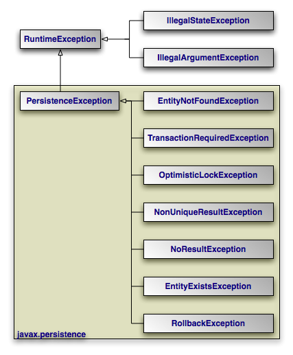 |
The diagram above depicts the JPA exception architecture. All
exceptions are unchecked. JPA uses standard exceptions where
appropriate, most notably IllegalArgumentExceptions and
IllegalStateExceptions. The specification also provides
a few JPA-specific exceptions in the javax.persistence
package. These exceptions should be self-explanatory. See the
Javadoc for
additional details on JPA exceptions.
Note
All exceptions thrown by OpenJPA implement
org.apache.openjpa.util.ExceptionInfo to provide you with
additional error information.
Table of Contents
JPA recognizes two types of persistent classes: entity
classes and embeddable classes. Each persistent instance of
an entity class - each entity - represents a unique
datastore record. You can use the EntityManager to find
an entity by its persistent identity (covered later in this chapter), or use a
Query to find entities matching certain criteria.
An instance of an embeddable class, on the other hand, is only stored as part of
a separate entity. Embeddable instances have no persistent identity, and are
never returned directly from the EntityManager or from a
Query unless the query uses a projection on owning class
to the embedded instance. For example, if Address is
embedded in Company, then
a query "SELECT a FROM Address a" will never return the
embedded Address of Company;
but a projection query such as
"SELECT c.address FROM Company c" will.
Despite these differences, there are few distinctions between entity classes and embeddable classes. In fact, writing either type of persistent class is a lot like writing any other class. There are no special parent classes to extend from, field types to use, or methods to write. This is one important way in which JPA makes persistence transparent to you, the developer.
Note
JPA supports both fields and JavaBean properties as persistent state. For simplicity, however, we will refer to all persistent state as persistent fields, unless we want to note a unique aspect of persistent properties.
Example 4.1. Persistent Class
package org.mag;
/**
* Example persistent class. Notice that it looks exactly like any other
* class. JPA makes writing persistent classes completely transparent.
*/
public class Magazine {
private String isbn;
private String title;
private Set articles = new HashSet();
private Article coverArticle;
private int copiesSold;
private double price;
private Company publisher;
private int version;
protected Magazine() {
}
public Magazine(String title, String isbn) {
this.title = title;
this.isbn = isbn;
}
public void publish(Company publisher, double price) {
this.publisher = publisher;
publisher.addMagazine(this);
this.price = price;
}
public void sell() {
copiesSold++;
publisher.addRevenue(price);
}
public void addArticle(Article article) {
articles.add(article);
}
// rest of methods omitted
}
There are very few restrictions placed on persistent classes. Still, it never hurts to familiarize yourself with exactly what JPA does and does not support.
The JPA specification requires that all persistent classes have a no-arg constructor. This constructor may be public or protected. Because the compiler automatically creates a default no-arg constructor when no other constructor is defined, only classes that define constructors must also include a no-arg constructor.
Note
OpenJPA's enhancer will automatically add a protected no-arg constructor to your class when required. Therefore, this restriction does not apply when using the enhancer. See Section 2, “ Enhancement ” of the Reference Guide for details.
Entity classes may not be final. No method of an entity class can be final.
Note
OpenJPA supports final classes and final methods.
All entity classes must declare one or more fields which together form the
persistent identity of an instance. These are called identity
or primary key fields. In our
Magazine class, isbn and title
are identity fields, because no two magazine records in the datastore can have
the same isbn and title values.
Section 2.3, “
Id
” will show you how to denote your
identity fields in JPA metadata. Section 2, “
Entity Identity
”
below examines persistent identity.
Note
OpenJPA fully supports identity fields, but does not require them. See Section 4, “ Object Identity ” of the Reference Guide for details.
The version field in our Magazine
class may seem out of place. JPA uses a version field in your entities to detect
concurrent modifications to the same datastore record. When the JPA runtime
detects an attempt to concurrently modify the same record, it throws an
exception to the transaction attempting to commit last. This prevents
overwriting the previous commit with stale data.
A version field is not required, but without one concurrent threads or processes might succeed in making conflicting changes to the same record at the same time. This is unacceptable to most applications. Section 2.6, “ Version ” shows you how to designate a version field in JPA metadata.
The version field must be an integral type ( int,
Long, etc) or a
java.sql.Timestamp. You should consider version fields immutable.
Changing the field value has undefined results.
Note
OpenJPA fully supports version fields, but does not require them within the actual entity for concurrency detection. OpenJPA can maintain surrogate version values or use state comparisons to detect concurrent modifications. See Section 7, “ Additional JPA Mappings ” in the Reference Guide.
JPA fully supports inheritance in persistent classes. It allows persistent classes to inherit from non-persistent classes, persistent classes to inherit from other persistent classes, and non-persistent classes to inherit from persistent classes. It is even possible to form inheritance hierarchies in which persistence skips generations. There are, however, a few important limitations:
Persistent classes cannot inherit from certain natively-implemented system classes such as
java.net.Socketandjava.lang.Thread.If a persistent class inherits from a non-persistent class, the fields of the non-persistent superclass cannot be persisted.
All classes in an inheritance tree must use the same identity type. We cover entity identity in Section 2, “ Entity Identity ”.
JPA manages the state of all persistent fields. Before you access persistent state, the JPA runtime makes sure that it has been loaded from the datastore. When you set a field, the runtime records that it has changed so that the new value will be persisted. This allows you to treat the field in exactly the same way you treat any other field - another aspect of JPA's transparency.
JPA does not support static or final fields. It does, however, include built-in support for most common field types. These types can be roughly divided into three categories: immutable types, mutable types, and relations.
Immutable types, once created, cannot be changed. The only way to alter a persistent field of an immutable type is to assign a new value to the field. JPA supports the following immutable types:
All primitives (
int, float, byte, etc)All primitive wrappers (
java.lang.Integer, java.lang.Float, java.lang.Byte, etc)java.lang.Stringjava.math.BigIntegerjava.math.BigDecimal
JPA also supports byte[], Byte[],
char[], and Character[] as
immutable types. That is, you can persist fields of these types,
but you should not manipulate individual array indexes without resetting the
array into the persistent field.
Persistent fields of mutable types can be altered without assigning the field a new value. Mutable types can be modified directly through their own methods. The JPA specification requires that implementations support the following mutable field types:
java.util.Datejava.util.Calendarjava.sql.Datejava.sql.Timestampjava.sql.TimeEnums
Entity types (relations between entities)
Embeddable types
java.util.Collections of entitiesjava.util.Sets of entitiesjava.util.Lists of entitiesjava.util.Maps in which each entry maps the value of one of a related entity's fields to that entity.
Collection and map types may be parameterized.
Most JPA implementations also have support for persisting serializable values as binary data in the datastore. Chapter 5, Metadata has more information on persisting serializable types.
Note
OpenJPA also supports arrays, java.lang.Number,
java.util.Locale, all JDK 1.2 Set,
List, and Map types,
and many other mutable and immutable field types. OpenJPA also allows you to
plug in support for custom types.
This section detailed all of the restrictions JPA places on persistent classes. While it may seem like we presented a lot of information, you will seldom find yourself hindered by these restrictions in practice. Additionally, there are often ways of using JPA's other features to circumvent any limitations you run into.
Java recognizes two forms of object identity: numeric identity and qualitative
identity. If two references are numerically identical, then
they refer to the same JVM instance in memory. You can test for this using the
== operator. Qualitative identity, on
the other hand, relies on some user-defined criteria to determine whether two
objects are "equal". You test for qualitative identity using the
equals method. By default, this method simply relies on numeric
identity.
JPA introduces another form of object identity, called entity identity or persistent identity. Entity identity tests whether two persistent objects represent the same state in the datastore.
The entity identity of each persistent instance is encapsulated in its identity field(s). If two entities of the same type have the same identity field values, then the two entities represent the same state in the datastore. Each entity's identity field values must be unique among all other entities of the same type.
Identity fields must be primitives, primitive wrappers,
Strings, Dates,
Timestamps, or embeddable types.
Note
OpenJPA supports entities as identity fields, as the Reference Guide discusses
in Section 4.2, “
Entities as Identity Fields
”. For legacy schemas with binary
primary key columns, OpenJPA also supports using identity fields of type
byte[]. When you use a byte[]
identity field, you must create an identity class. Identity classes are
covered below.
Warning
Changing the fields of an embeddable instance while it is assigned to an identity field has undefined results. Always treat embeddable identity instances as immutable objects in your applications.
If you are dealing with a single persistence context (see
Section 3, “
Persistence Context
”), then you do not
have to compare identity fields to test whether two entity references represent
the same state in the datastore. There is a much easier way: the ==
operator. JPA requires that each persistence context maintain only
one JVM object to represent each unique datastore record. Thus, entity identity
is equivalent to numeric identity within a persistence context. This is referred
to as the uniqueness requirement.
The uniqueness requirement is extremely important - without it, it would be impossible to maintain data integrity. Think of what could happen if two different objects in the same transaction were allowed to represent the same persistent data. If you made different modifications to each of these objects, which set of changes should be written to the datastore? How would your application logic handle seeing two different "versions" of the same data? Thanks to the uniqueness requirement, these questions do not have to be answered.
If your entity has only one identity field, you can use the value of that field
as the entity's identity object in all
EntityManager APIs. Otherwise, you must supply an
identity class to use for identity objects. Your identity class must meet the
following criteria:
The class must be public.
The class must be serializable.
The class must have a public no-args constructor.
The names of the non-static fields or properties of the class must be the same as the names of the identity fields or properties of the corresponding entity class, and the types must be identical.
The
equalsandhashCodemethods of the class must use the values of all fields or properties corresponding to identity fields or properties in the entity class.If the class is an inner class, it must be
static.All entity classes related by inheritance must use the same identity class, or else each entity class must have its own identity class whose inheritance hierarchy mirrors the inheritance hierarchy of the owning entity classes (see Section 2.1.1, “ Identity Hierarchies ”).
Note
Though you may still create identity classes by hand, OpenJPA provides the
appidtool to automatically generate proper identity
classes based on your identity fields. See
Section 4.3, “
Application Identity Tool
” of the Reference Guide.
Example 4.2. Identity Class
This example illustrates a proper identity class for an entity with multiple identity fields.
/**
* Persistent class using application identity.
*/
public class Magazine {
private String isbn; // identity field
private String title; // identity field
// rest of fields and methods omitted
/**
* Application identity class for Magazine.
*/
public static class MagazineId {
// each identity field in the Magazine class must have a
// corresponding field in the identity class
public String isbn;
public String title;
/**
* Equality must be implemented in terms of identity field
* equality, and must use instanceof rather than comparing
* classes directly (some JPA implementations may subclass the
* identity class).
*/
public boolean equals(Object other) {
if (other == this)
return true;
if (!(other instanceof MagazineId))
return false;
MagazineId mi = (MagazineId) other;
return (isbn == mi.isbn
|| (isbn != null && isbn.equals(mi.isbn)))
&& (title == mi.title
|| (title != null && title.equals(mi.title)));
}
/**
* Hashcode must also depend on identity values.
*/
public int hashCode() {
return ((isbn == null) ? 0 : isbn.hashCode())
^ ((title == null) ? 0 : title.hashCode());
}
public String toString() {
return isbn + ":" + title;
}
}
}
| 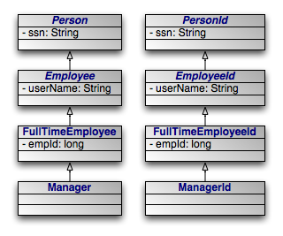 |
An alternative to having a single identity class for an entire inheritance hierarchy is to have one identity class per level in the inheritance hierarchy. The requirements for using a hierarchy of identity classes are as follows:
The inheritance hierarchy of identity classes must exactly mirror the hierarchy of the persistent classes that they identify. In the example pictured above, abstract class
Personis extended by abstract classEmployee, which is extended by non-abstract classFullTimeEmployee, which is extended by non-abstract classManager. The corresponding identity classes, then, are an abstractPersonIdclass, extended by an abstractEmployeeIdclass, extended by a non-abstractFullTimeEmployeeIdclass, extended by a non-abstractManagerIdclass.Subclasses in the identity hierarchy may define additional identity fields until the hierarchy becomes non-abstract. In the aforementioned example,
Persondefines an identity fieldssn,Employeedefines additional identity fielduserName, andFullTimeEmployeeadds a final identity field,empId. However,Managermay not define any additional identity fields, since it is a subclass of a non-abstract class. The hierarchy of identity classes, of course, must match the identity field definitions of the persistent class hierarchy.It is not necessary for each abstract class to declare identity fields. In the previous example, the abstract
PersonandEmployeeclasses could declare no identity fields, and the first concrete subclassFullTimeEmployeecould define one or more identity fields.All subclasses of a concrete identity class must be
equalsandhashCode-compatible with the concrete superclass. This means that in our example, aManagerIdinstance and aFullTimeEmployeeIdinstance with the same identity field values should have the same hash code, and should compare equal to each other using theequalsmethod of either one. In practice, this requirement reduces to the following coding practices:Use
instanceofinstead of comparingClassobjects in theequalsmethods of your identity classes.An identity class that extends another non-abstract identity class should not override
equalsorhashCode.
It is often necessary to perform various actions at different stages of a persistent object's lifecycle. JPA includes a variety of callbacks methods for monitoring changes in the lifecycle of your persistent objects. These callbacks can be defined on the persistent classes themselves and on non-persistent listener classes.
Every persistence event has a corresponding callback method marker. These markers are shared between persistent classes and their listeners. You can use these markers to designate a method for callback either by annotating that method or by listing the method in the XML mapping file for a given class. The lifecycle events and their corresponding method markers are:
PrePersist: Methods marked with this annotation will be invoked before an object is persisted. This could be used for assigning primary key values to persistent objects. This is equivalent to the XML element tagpre-persist.PostPersist: Methods marked with this annotation will be invoked after an object has transitioned to the persistent state. You might want to use such methods to update a screen after a new row is added. This is equivalent to the XML element tagpost-persist.PostLoad: Methods marked with this annotation will be invoked after all eagerly fetched fields of your class have been loaded from the datastore. No other persistent fields can be accessed in this method. This is equivalent to the XML element tagpost-load.PostLoadis often used to initialize non-persistent fields whose values depend on the values of persistent fields, such as a complex data structure.PreUpdate: Methods marked with this annotation will be invoked just the persistent values in your objects are flushed to the datastore. This is equivalent to the XML element tagpre-update.PreUpdateis the complement toPostLoad. While methods marked withPostLoadare most often used to initialize non-persistent values from persistent data, methods annotated withPreUpdateis normally used to set persistent fields with information cached in non-persistent data.PostUpdate: Methods marked with this annotation will be invoked after changes to a given instance have been stored to the datastore. This is useful for clearing stale data cached at the application layer. This is equivalent to the XML element tagpost-update.PreRemove: Methods marked with this annotation will be invoked before an object transactions to the deleted state. Access to persistent fields is valid within this method. You might use this method to cascade the deletion to related objects based on complex criteria, or to perform other cleanup. This is equivalent to the XML element tagpre-remove.PostRemove: Methods marked with this annotation will be invoked after an object has been marked as to be deleted. This is equivalent to the XML element tagpost-remove.
When declaring callback methods on a persistent class, any method may be used which takes no arguments and is not shared with any property access fields. Multiple events can be assigned to a single method as well.
Below is an example of how to declare callback methods on persistent classes:
/**
* Example persistent class declaring our entity listener.
*/
@Entity
public class Magazine {
@Transient
private byte[][] data;
@ManyToMany
private List<Photo> photos;
@PostLoad
public void convertPhotos() {
data = new byte[photos.size()][];
for (int i = 0; i < photos.size(); i++)
data[i] = photos.get(i).toByteArray();
}
@PreDelete
public void logMagazineDeletion() {
getLog().debug("deleting magazine containing" + photos.size()
+ " photos.");
}
}
In an XML mapping file, we can define the same methods without annotations:
<entity class="Magazine">
<pre-remove>logMagazineDeletion</pre-remove>
<post-load>convertPhotos</post-load>
</entity>
Note
We fully explore persistence metadata annotations and XML in Chapter 5, Metadata .
Mixing lifecycle event code into your persistent classes is not always ideal. It
is often more elegant to handle cross-cutting lifecycle events in a
non-persistent listener class. JPA allows for this, requiring only that listener
classes have a public no-arg constructor. Like persistent classes, your listener
classes can consume any number of callbacks. The callback methods must take in a
single java.lang.Object argument which represents the
persistent object that triggered the event.
Entities can enumerate listeners using the EntityListeners
annotation. This annotation takes an array of listener classes as
its value.
Below is an example of how to declare an entity and its corresponding listener classes.
/**
* Example persistent class declaring our entity listener.
*/
@Entity
@EntityListeners({ MagazineLogger.class, ... })
public class Magazine {
// ... //
}
/**
* Example entity listener.
*/
public class MagazineLogger {
@PostPersist
public void logAddition(Object pc) {
getLog().debug("Added new magazine:" + ((Magazine) pc).getTitle());
}
@PreRemove
public void logDeletion(Object pc) {
getLog().debug("Removing from circulation:" +
((Magazine) pc).getTitle());
}
}
In XML, we define both the listeners and their callback methods as so:
<entity class="Magazine">
<entity-listeners>
<entity-listener class="MagazineLogger">
<post-persist>logAddition</post-persist>
<pre-remove>logDeletion</pre-remove>
</entity-listener>
</entity-listeners>
</entity>
Entity listener methods are invoked in a specific order when a given event is fired. So-called default listeners are invoked first: these are listeners which have been defined in a package annotation or in the root element of XML mapping files. Next, entity listeners are invoked in the order of the inheritance hierarchy, with superclass listeners being invoked before subclass listeners. Finally, if an entity has multiple listeners for the same event, the listeners are invoked in declaration order.
You can exclude default listeners and listeners defined in superclasses from the invocation chain through the use of two class-level annotations:
ExcludeDefaultListeners: This annotation indicates that no default listeners will be invoked for this class, or any of its subclasses. The XML equivalent is the emptyexclude-default-listenerselement.ExcludeSuperclassListeners: This annotation will cause OpenJPA to skip invoking any listeners declared in superclasses. The XML equivalent is the emptyexclude-superclass-listenerselement.
Table of Contents
- 1. Class Metadata
- 2. Field and Property Metadata
- 3. XML Schema
- 4. Conclusion
JPA requires that you accompany each persistent class with persistence metadata. This metadata serves three primary purposes:
To identify persistent classes.
To override default JPA behavior.
To provide the JPA implementation with information that it cannot glean from simply reflecting on the persistent class.
Persistence metadata is specified using either the Java 5 annotations defined in
the javax.persistence package, XML mapping files, or a
mixture of both. In the latter case, XML declarations override conflicting
annotations. If you choose to use XML metadata, the XML files must be available
at development and runtime, and must be discoverable via either of two
strategies:
In a resource named
orm.xmlplaced in aMETA-INFdirectory within a directory in your classpath or within a jar archive containing your persistent classes.Declared in your
persistence.xmlconfiguration file. In this case, each XML metadata file must be listed in amapping-fileelement whose content is either a path to the given file or a resource location available to the class' class loader.
We describe the standard metadata annotations and XML equivalents throughout this chapter. The full schema for XML mapping files is available in Section 3, “ XML Schema ”. JPA also standardizes relational mapping metadata and named query metadata, which we discuss in Chapter 13, Mapping Metadata and Section 1.11, “ Named Queries ” respectively.
Note
OpenJPA defines many useful annotations beyond the standard set. See Section 3, “ Additional JPA Metadata ” and Section 4, “ Metadata Extensions ” in the Reference Guide for details. There are currently no XML equivalents for these extension annotations.
| 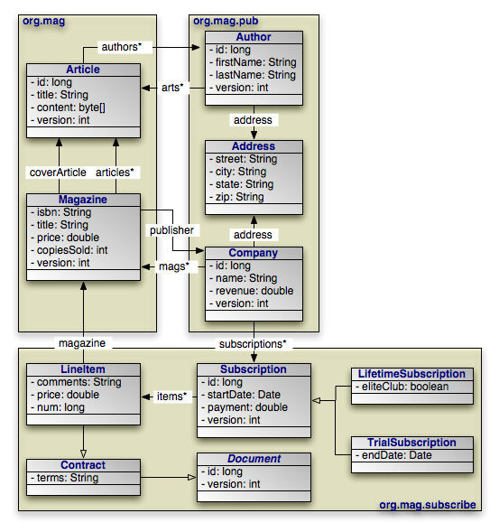 |
Through the course of this chapter, we will create the persistent object model above.
The following metadata annotations and XML elements apply to persistent class declarations.
The Entity annotation denotes an entity class. All entity
classes must have this annotation. The Entity annotation
takes one optional property:
String name: Name used to refer to the entity in queries. Must not be a reserved literal in JPQL. Defaults to the unqualified name of the entity class.
The equivalent XML element is entity. It has the following
attributes:
class: The entity class. This attribute is required.name: Named used to refer to the class in queries. See the name property above.access: The access type to use for the class. Must either beFIELDorPROPERTY. For details on access types, see Section 2, “ Field and Property Metadata ”.
Note
OpenJPA uses a process called enhancement to modify the bytecode of entities for transparent lazy loading and immediate dirty tracking. See Section 2, “ Enhancement ” in the Reference Guide for details on enhancement.
As we discussed in Section 2.1, “
Identity Class
”,
entities with multiple identity fields must use an identity class
to encapsulate their persistent identity. The IdClass
annotation specifies this class. It accepts a single
java.lang.Class value.
The equivalent XML element is id-class, which has a single
attribute:
class: Set this required attribute to the name of the identity class.
A mapped superclass is a non-entity class that can define
persistent state and mapping information for entity subclasses. Mapped
superclasses are usually abstract. Unlike true entities, you cannot query a
mapped superclass, pass a mapped superclass instance to any
EntityManager or Query methods, or declare a
persistent relation with a mapped superclass target. You denote a mapped
superclass with the MappedSuperclass marker annotation.
The equivalent XML element is mapped-superclass. It expects
the following attributes:
class: The entity class. This attribute is required.access: The access type to use for the class. Must either beFIELDorPROPERTY. For details on access types, see Section 2, “ Field and Property Metadata ”.
Note
OpenJPA allows you to query on mapped superclasses. A query on a mapped superclass will return all matching subclass instances. OpenJPA also allows you to declare relations to mapped superclass types; however, you cannot query across these relations.
The Embeddable annotation designates an embeddable
persistent class. Embeddable instances are stored as part of the record of their
owning instance. All embeddable classes must have this annotation.
A persistent class can either be an entity or an embeddable class, but not both.
The equivalent XML element is embeddable. It understands the
following attributes:
class: The entity class. This attribute is required.access: The access type to use for the class. Must either beFIELDorPROPERTY. For details on access types, see Section 2, “ Field and Property Metadata ”.
Note
OpenJPA allows a persistent class to be both an entity and an embeddable class. Instances of the class will act as entities when persisted explicitly or assigned to non-embedded fields of entities. Instances will act as embedded values when assigned to embedded fields of entities.
To signal that a class is both an entity and an embeddable class in OpenJPA,
simply add both the @Entity and the @Embeddable
annotations to the class.
An entity may list its lifecycle event listeners in the
EntityListeners annotation. This value of this annotation is an
array of the listener Class es for the entity. The
equivalent XML element is entity-listeners. For more details
on entity listeners, see Section 3, “
Lifecycle Callbacks
”.
Here are the class declarations for our persistent object model, annotated with
the appropriate persistence metadata. Note that Magazine
declares an identity class, and that Document and
Address are a mapped superclass and an embeddable class,
respectively. LifetimeSubscription and
TrialSubscription override the default entity name to supply a
shorter alias for use in queries.
Example 5.1. Class Metadata
package org.mag;
@Entity
@IdClass(Magazine.MagazineId.class)
public class Magazine {
...
public static class MagazineId {
...
}
}
@Entity
public class Article {
...
}
package org.mag.pub;
@Entity
public class Company {
...
}
@Entity
public class Author {
...
}
@Embeddable
public class Address {
...
}
package org.mag.subscribe;
@MappedSuperclass
public abstract class Document {
...
}
@Entity
public class Contract
extends Document {
...
}
@Entity
public class Subscription {
...
@Entity
public static class LineItem
extends Contract {
...
}
}
@Entity(name="Lifetime")
public class LifetimeSubscription
extends Subscription {
...
}
@Entity(name="Trial")
public class TrialSubscription
extends Subscription {
...
}
The equivalent declarations in XML:
<entity-mappings xmlns="http://java.sun.com/xml/ns/persistence/orm"
xmlns:xsi="http://www.w3.org/2001/XMLSchema-instance"
xsi:schemaLocation="http://java.sun.com/xml/ns/persistence/orm orm_1_0.xsd"
version="1.0">
<mapped-superclass class="org.mag.subscribe.Document">
...
</mapped-superclass>
<entity class="org.mag.Magazine">
<id-class class="org.mag.Magazine$MagazineId"/>
...
</entity>
<entity class="org.mag.Article">
...
</entity>
<entity class="org.mag.pub.Company">
...
</entity>
<entity class="org.mag.pub.Author">
...
</entity>
<entity class="org.mag.subscribe.Contract">
...
</entity>
<entity class="org.mag.subscribe.LineItem">
...
</entity>
<entity class="org.mag.subscribe.LifetimeSubscription" name="Lifetime">
...
</entity>
<entity class="org.mag.subscribe.TrialSubscription" name="Trial">
...
</entity>
<embeddable class="org.mag.pub.Address">
...
</embeddable>
</entity-mappings>
The persistence implementation must be able to retrieve and set the persistent state of your entities, mapped superclasses, and embeddable types. JPA offers two modes of persistent state access: field access, and property access. The access type of a persistent attribute can be either set explicitly on a class or attribute level, inherited, or determined by the provider.
Under field access, the implementation injects state directly into your
persistent fields, and retrieves changed state from your fields as well. To
declare field access on an entire entity with XML metadata, set the
access attribute of your entity XML
element to FIELD. To use field access for an entire entity
using annotation metadata, simply place your metadata and mapping annotations
on your field declarations:
@ManyToOne private Company publisher;
Property access, on the other hand, retrieves and loads state through JavaBean
"getter" and "setter" methods. For a property p of type
T, you must define the following getter method:
T getP();
For boolean properties, this is also acceptable:
boolean isP();
You must also define the following setter method:
void setP(T value);
To implicitly use property access for an entire class by default, set your
entity element's access attribute to
PROPERTY, or place your metadata and mapping annotations on
the getter method:
@ManyToOne
private Company getPublisher() { ... }
private void setPublisher(Company publisher) { ... }
The access type of a class or individual persistent attributes can be specified
explicitly using the @Access annotation or access
attribute on the XML elements used to define persistent attributes.
When explicitly defining access, specify the explicit access type for the class
and then apply the @Access annotation or access
XML attribute to individual fields or properties. If explicit
FIELD or PROPERTY is specified at the
class level, all eligible non-transient fields or properties will be persistent.
If using class level FIELD access, non-persistent fields must
be transient or annotated with @Transient.
If using class level PROPERTY access, non-persistent
properties must be annotated @Transient or excluded using
the transient XML attribute. Refer to the JPA specification
for specific rules regarding the use of explicit access with embeddables and
within an inheritance hierarchy.
This entity definitions shows how multiple access types may be specified on an entity:
@Entity
@Access(AccessType.FIELD)
public class PaymentContract {
@Id
private String id;
@Temporal(TemporalType.DATE)
private String contractDate;
@Transient
private String terms;
@Version
private int version;
@Lob
@Access(AccessType.PROPERTY)
public String getContractTerms() {
return terms;
}
public void setContractTerms(String terms) {
// Format string before persisting
this.terms = formatTerms(terms);
}
...
}
The equivalent declarations in XML:
<entity-mappings xmlns="http://java.sun.com/xml/ns/persistence/orm"
xmlns:xsi="http://www.w3.org/2001/XMLSchema-instance"
xsi:schemaLocation="http://java.sun.com/xml/ns/persistence/orm orm_2_0.xsd"
version="2.0">
<entity class="org.xyz.PaymentContract" access="FIELD">
<attributes>
<id name="id"/>
<basic name="contractTerms" access="PROPERTY">
<lob/>
</basic>
<basic name="contractDate">
<temporal>DATE</temporal>
</basic>
<version name="version"/>
<transient name="terms"/>
</attributes>
</entity>
</entity-mappings>
Warning
When using property access, only the getter and setter method for a property should ever access the underlying persistent field directly. Other methods, including internal business methods in the persistent class, should go through the getter and setter methods when manipulating persistent state.
Also, take care when adding business logic to your getter and setter methods. Consider that they are invoked by the persistence implementation to load and retrieve all persistent state; other side effects might not be desirable.
Each class must use either field access or property access for all state; you cannot use both access types within the same class. Additionally, a subclass must use the same access type as its superclass.
The remainder of this document uses the term "persistent field" to refer to either a persistent field or a persistent property.
The Transient annotation specifies that a field is
non-persistent. Use it to exclude fields from management that would otherwise be
persistent. Transient is a marker annotation only; it
has no properties.
The equivalent XML element is transient. It has a single
attribute:
name: The transient field or property name. This attribute is required.
Annotate your simple identity fields with Id. This
annotation has no properties. We explore entity identity and identity fields in
Section 1.3, “
Identity Fields
”.
The equivalent XML element is id. It has one required
attribute:
name: The name of the identity field or property.
The previous section showed you how to declare your identity fields with the
Id annotation. It is often convenient to allow the
persistence implementation to assign a unique value to your identity fields
automatically. JPA includes the GeneratedValue
annotation for this purpose. It has the following properties:
GenerationType strategy: Enum value specifying how to auto-generate the field value. TheGenerationTypeenum has the following values:GeneratorType.AUTO: The default. Assign the field a generated value, leaving the details to the JPA vendor.GenerationType.IDENTITY: The database will assign an identity value on insert.GenerationType.SEQUENCE: Use a datastore sequence to generate a field value.GenerationType.TABLE: Use a sequence table to generate a field value.
String generator: The name of a generator defined in mapping metadata. We show you how to define named generators in Section 5, “ Generators ”. If theGenerationTypeis set but this property is unset, the JPA implementation uses appropriate defaults for the selected generation type.
The equivalent XML element is generated-value, which
includes the following attributes:
strategy: One ofTABLE,SEQUENCE,IDENTITY, orAUTO, defaulting toAUTO.generator: Equivalent to the generator property listed above.
Note
OpenJPA allows you to use the GeneratedValue annotation
on any field, not just identity fields. Before using the IDENTITY
generation strategy, however, read
Section 4.4, “
Autoassign / Identity Strategy Caveats
” in the Reference Guide.
OpenJPA also offers additional generator strategies for non-numeric fields,
which you can access by setting strategy to AUTO
(the default), and setting the generator string
to:
uuid-string: OpenJPA will generate a 128-bit type 1 UUID unique within the network, represented as a 16-character string. For more information on UUIDs, see the IETF UUID draft specification at: http://www.ics.uci.edu/~ejw/authoring/uuid-guid/uuid-hex: Same asuuid-string, but represents the type 1 UUID as a 32-character hexadecimal string.uuid-type4-string: OpenJPA will generate a 128-bit type 4 pseudo-random UUID, represented as a 16-character string. For more information on UUIDs, see the IETF UUID draft specification at: http://www.ics.uci.edu/~ejw/authoring/uuid-guid/uuid-type4-hex: Same asuuid-type4-string, but represents the type 4 UUID as a 32-character hexadecimal string.
These string constants are defined in
org.apache.openjpa.persistence.Generator.
If the entities are mapped to the same table name but with different schema
name within one PersistenceUnit intentionally, and the
strategy of GeneratedType.AUTO is used to generate the ID
for each entity, a schema name for each entity must be explicitly declared
either through the annotation or the mapping.xml file. Otherwise, the mapping
tool only creates the tables for those entities with the schema names under
each schema. In addition, there will be only one
OPENJPA_SEQUENCE_TABLE created for all the entities within
the PersistenceUnit if the entities are not identified
with the schema name. Read Section 6, “
Generators
” and
Section 11, “
Default Schema
” in the Reference Guide.
If your entity has multiple identity values, you may declare multiple
@Id fields, or you may declare a single @EmbeddedId
field. The type of a field annotated with EmbeddedId must
be an embeddable entity class. The fields of this embeddable class are
considered the identity values of the owning entity. We explore entity identity
and identity fields in Section 1.3, “
Identity Fields
”.
The EmbeddedId annotation has no properties.
The equivalent XML element is embedded-id. It has one
required attribute:
name: The name of the identity field or property.
Use the Version annotation to designate a version field.
Section 1.4, “
Version Field
” explained the importance of
version fields to JPA. This is a marker annotation; it has no properties.
The equivalent XML element is version, which has a single
attribute:
name: The name of the version field or property. This attribute is required.
Basic signifies a standard value persisted as-is to the
datastore. You can use the Basic annotation on persistent
fields of the following types: primitives, primitive wrappers,
java.lang.String, byte[],
Byte[], char[],
Character[], java.math.BigDecimal,
java.math.BigInteger,
java.util.Date, java.util.Calendar,
java.sql.Date, java.sql.Timestamp,
Enums, and Serializable types.
Basic declares these properties:
FetchType fetch: Whether to load the field eagerly (FetchType.EAGER) or lazily (FetchType.LAZY). Defaults toFetchType.EAGER.boolean optional: Whether the datastore allows null values. Defaults to true.
The equivalent XML element is basic. It has the following
attributes:
name: The name of the field or property. This attribute is required.fetch: One ofEAGERorLAZY.optional: Boolean indicating whether the field value may be null.
Many metadata annotations in JPA have a fetch property. This
property can take on one of two values: FetchType.EAGER or
FetchType.LAZY. FetchType.EAGER means that
the field is loaded by the JPA implementation before it returns the persistent
object to you. Whenever you retrieve an entity from a query or from the
EntityManager, you are guaranteed that all of its eager
fields are populated with datastore data.
FetchType.LAZY is a hint to the JPA runtime that you want to
defer loading of the field until you access it. This is called lazy
loading. Lazy loading is completely transparent; when you attempt to
read the field for the first time, the JPA runtime will load the value from the
datastore and populate the field automatically. Lazy loading is only a hint and
not a directive because some JPA implementations cannot lazy-load certain field
types.
With a mix of eager and lazily-loaded fields, you can ensure that commonly-used fields load efficiently, and that other state loads transparently when accessed. As you will see in Section 3, “ Persistence Context ”, you can also use eager fetching to ensure that entities have all needed data loaded before they become detached at the end of a persistence context.
Note
OpenJPA can lazy-load any field type. OpenJPA also allows you to dynamically change which fields are eagerly or lazily loaded at runtime. See Section 7, “ Fetch Groups ” in the Reference Guide for details.
The Reference Guide details OpenJPA's eager fetching behavior in Section 8, “ Eager Fetching ”.
Use the Embedded marker annotation on embeddable field
types. Embedded fields are mapped as part of the datastore record of the
declaring entity. In our sample model, Author and
Company each embed their Address,
rather than forming a relation to an Address as a
separate entity.
The equivalent XML element is embedded, which expects a
single attribute:
name: The name of the field or property. This attribute is required.
When an entity A references a single entity
B, and other As might also reference the same
B, we say there is a many to one
relation from A to B. In our sample
model, for example, each magazine has a reference to its publisher. Multiple
magazines might have the same publisher. We say, then, that the
Magazine.publisher field is a many to one relation from magazines to
publishers.
JPA indicates many to one relations between entities with the
ManyToOne annotation. This annotation has the following properties:
Class targetEntity: The class of the related entity type.CascadeType[] cascade: Array of enum values defining cascade behavior for this field. We explore cascades below. Defaults to an empty array.FetchType fetch: Whether to load the field eagerly (FetchType.EAGER) or lazily (FetchType.LAZY). Defaults toFetchType.EAGER. See Section 2.7.1, “ Fetch Type ” above for details on fetch types.boolean optional: Whether the related object must exist. Iffalse, this field cannot be null. Defaults totrue.
The equivalent XML element is many-to-one. It accepts the
following attributes:
name: The name of the field or property. This attribute is required.target-entity: The class of the related type.fetch: One ofEAGERorLAZY.optional: Boolean indicating whether the field value may be null.
We introduce the JPA EntityManager in
Chapter 8,
EntityManager
. The EntityManager
has APIs to persist new entities, remove (delete) existing
entities, refresh entity state from the datastore, and merge detached
entity state back into the persistence context. We explore all of
these APIs in detail later in the overview.
When the EntityManager is performing the above
operations, you can instruct it to automatically cascade the operation to the
entities held in a persistent field with the cascade property
of your metadata annotation. This process is recursive. The cascade
property accepts an array of CascadeType enum
values.
CascadeType.PERSIST: When persisting an entity, also persist the entities held in this field. We suggest liberal application of this cascade rule, because if theEntityManagerfinds a field that references a new entity during flush, and the field does not useCascadeType.PERSIST, it is an error.CascadeType.REMOVE: When deleting an entity, also delete the entities held in this field.CascadeType.REFRESH: When refreshing an entity, also refresh the entities held in this field.CascadeType.MERGE: When merging entity state, also merge the entities held in this field.
Note
OpenJPA offers enhancements to JPA's CascadeType.REMOVE functionality, including additional annotations to control how and when dependent fields will be removed. See Section 4.2.1, “ Dependent ” for more details.
CascadeType defines one additional value,
CascadeType.ALL, that acts as a shortcut for all of the values above.
The following annotations are equivalent:
@ManyToOne(cascade={CascadeType.PERSIST,CascadeType.REMOVE,
CascadeType.REFRESH,CascadeType.MERGE})
private Company publisher;
@ManyToOne(cascade=CascadeType.ALL) private Company publisher;
In XML, these enumeration constants are available as child elements of the
cascade element. The cascade element is
itself a child of many-to-one. The following examples are
equivalent:
<many-to-one name="publisher">
<cascade>
<cascade-persist/>
<cascade-merge/>
<cascade-remove/>
<cascade-refresh/>
</cascade>
</many-to-one>
<many-to-one name="publisher">
<cascade>
<cascade-all/>
</cascade>
</many-to-one>
When an entity A references multiple B
entities, and no two As reference the same
B, we say there is a one to many relation from
A to B.
One to many relations are the exact inverse of the many to one relations we
detailed in the preceding section. In that section, we said that the
Magazine.publisher field is a many to one relation from magazines to
publishers. Now, we see that the Company.mags field is the
inverse - a one to many relation from publishers to magazines. Each company may
publish multiple magazines, but each magazine can have only one publisher.
JPA indicates one to many relations between entities with the
OneToMany annotation. This annotation has the following properties:
Class targetEntity: The class of the related entity type. This information is usually taken from the parameterized collection or map element type. You must supply it explicitly, however, if your field isn't a parameterized type.String mappedBy: Names the many to one field in the related entity that maps this bidirectional relation. We explain bidirectional relations below. Leaving this property unset signals that this is a standard unidirectional relation.CascadeType[] cascade: Array of enum values defining cascade behavior for the collection elements. We explore cascades above in Section 2.9.1, “ Cascade Type ”. Defaults to an empty array.FetchType fetch: Whether to load the field eagerly (FetchType.EAGER) or lazily (FetchType.LAZY). Defaults toFetchType.LAZY. See Section 2.7.1, “ Fetch Type ” above for details on fetch types.
The equivalent XML element is one-to-many, which includes
the following attributes:
name: The name of the field or property. This attribute is required.target-entity: The class of the related type.fetch: One ofEAGERorLAZY.mapped-by: The name of the field or property that owns the relation. See Section 2, “ Field and Property Metadata ”.
You may also nest the cascade element within a
one-to-many element.
When two fields are logical inverses of each other, they form a
bidirectional relation. Our model contains two bidirectional
relations: Magazine.publisher and Company.mags
form one bidirectional relation, and Article.authors
and Author.articles form the other. In both cases,
there is a clear link between the two fields that form the relationship. A
magazine refers to its publisher while the publisher refers to all its published
magazines. An article refers to its authors while each author refers to her
written articles.
When the two fields of a bidirectional relation share the same datastore
mapping, JPA formalizes the connection with the mappedBy
property. Marking Company.mags as mappedBy
Magazine.publisher means two things:
Company.magsuses the datastore mapping forMagazine.publisher, but inverses it. In fact, it is illegal to specify any additional mapping information when you use themappedByproperty. All mapping information is read from the referenced field. We explore mapping in depth in Chapter 13, Mapping Metadata .Magazine.publisheris the "owner" of the relation. The field that specifies the mapping data is always the owner. This means that changes to theMagazine.publisherfield are reflected in the datastore, while changes to theCompany.magsfield alone are not. Changes toCompany.magsmay still affect the JPA implementation's cache, however. Thus, it is very important that you keep your object model consistent by properly maintaining both sides of your bidirectional relations at all times.
You should always take advantage of the mappedBy property
rather than mapping each field of a bidirectional relation independently.
Failing to do so may result in the JPA implementation trying to update the
database with conflicting data. Be careful to only mark one side of the relation
as mappedBy, however. One side has to actually do the
mapping!
Note
You can configure OpenJPA to automatically synchronize both sides of a bidirectional relation, or to perform various actions when it detects inconsistent relations. See Section 5, “ Managed Inverses ” in the Reference Guide for details.
When an entity A references a single entity
B, and no other As can reference the same
B, we say there is a one to one relation between
A and B. In our sample model,
Magazine has a one to one relation to Article
through the Magazine.coverArticle field. No two magazines can
have the same cover article.
JPA indicates one to one relations between entities with the
OneToOne annotation. This annotation has the following properties:
Class targetEntity: The class of the related entity type. This information is usually taken from the field type.String mappedBy: Names the field in the related entity that maps this bidirectional relation. We explain bidirectional relations in Section 2.10.1, “ Bidirectional Relations ” above. Leaving this property unset signals that this is a standard unidirectional relation.CascadeType[] cascade: Array of enum values defining cascade behavior for this field. We explore cascades in Section 2.9.1, “ Cascade Type ” above. Defaults to an empty array.FetchType fetch: Whether to load the field eagerly (FetchType.EAGER) or lazily (FetchType.LAZY). Defaults toFetchType.EAGER. See Section 2.7.1, “ Fetch Type ” above for details on fetch types.boolean optional: Whether the related object must exist. Iffalse, this field cannot be null. Defaults totrue.
The equivalent XML element is one-to-one which understands
the following attributes:
name: The name of the field or property. This attribute is required.target-entity: The class of the related type.fetch: One ofEAGERorLAZY.mapped-by: The field that owns the relation. See Section 2, “ Field and Property Metadata ”.
You may also nest the cascade element within a
one-to-one element.
When an entity A references multiple B
entities, and other As might reference some of the same
Bs, we say there is a many to many
relation between A and B. In our sample
model, for example, each article has a reference to all the authors that
contributed to the article. Other articles might have some of the same authors.
We say, then, that Article and Author
have a many to many relation through the Article.authors
field.
JPA indicates many to many relations between entities with the
ManyToMany annotation. This annotation has the following properties:
Class targetEntity: The class of the related entity type. This information is usually taken from the parameterized collection or map element type. You must supply it explicitly, however, if your field isn't a parameterized type.String mappedBy: Names the many to many field in the related entity that maps this bidirectional relation. We explain bidirectional relations in Section 2.10.1, “ Bidirectional Relations ” above. Leaving this property unset signals that this is a standard unidirectional relation.CascadeType[] cascade: Array of enum values defining cascade behavior for the collection elements. We explore cascades above in Section 2.9.1, “ Cascade Type ”. Defaults to an empty array.FetchType fetch: Whether to load the field eagerly (FetchType.EAGER) or lazily (FetchType.LAZY). Defaults toFetchType.LAZY. See Section 2.7.1, “ Fetch Type ” above for details on fetch types.
The equivalent XML element is many-to-many. It accepts the
following attributes:
name: The name of the field or property. This attribute is required.target-entity: The class of the related type.fetch: One ofEAGERorLAZY.mapped-by: The field that owns the relation. See Section 2, “ Field and Property Metadata ”.
You may also nest the cascade element within a
many-to-many element.
Datastores such as relational databases do not preserve the order of records.
Your persistent List fields might be ordered one way the
first time you retrieve an object from the datastore, and a completely different
way the next. To ensure consistent ordering of collection fields, you must use
the OrderBy annotation. The OrderBy
annotation's value is a string defining the order of the collection
elements. An empty value means to sort on the identity value(s) of the elements
in ascending order. Any other value must be of the form:
<field name>[ ASC|DESC][, ...]
Each <field name> is the name of a persistent field in
the collection's element type. You can optionally follow each field by the
keyword ASC for ascending order, or DESC
for descending order. If the direction is omitted, it defaults to ascending.
The equivalent XML element is order-by which can be listed as
a sub-element of the one-to-many or many-to-many
elements. The text within this element is parsed as the order by
string.
JPA supports persistent Map fields through either a
OneToMany
or ManyToMany
association. The related entities form the map values. JPA
derives the map keys by extracting a field from each entity value. The
MapKey annotation designates the field that is used as
the key. It has the following properties:
String name: The name of a field in the related entity class to use as the map key. If no name is given, defaults to the identity field of the related entity class.
The equivalent XML element is map-key which can be listed as
a sub-element of the one-to-many or many-to-many
elements. The map-key element has the following
attributes:
name: The name of the field in the related entity class to use as the map key.
In the absence of any of the annotations above, JPA defines the following default behavior for declared fields:
Fields declared
static, transient, orfinaldefault to non-persistent.Fields of any primitive type, primitive wrapper type,
java.lang.String,byte[],Byte[],char[],Character[],java.math.BigDecimal,java.math.BigInteger,java.util.Date,java.util.Calendar,java.sql.Date,java.sql.Timestamp, or anySerializabletype default to persistent, as if annotated with@Basic.Fields of an embeddable type default to persistent, as if annotated with
@Embedded.All other fields default to non-persistent.
Note that according to these defaults, all relations between entities must be annotated explicitly. Without an annotation, a relation field will default to serialized storage if the related entity type is serializable, or will default to being non-persistent if not.
The latest revision of the version 2.0 orm schema is presented below. Version 2.0 of the schema must be used if JPA 2.0 elements are specified as XML metadata. Many of the elements in the schema relate to object/relational mapping rather than metadata; these elements are discussed in Chapter 13, Mapping Metadata . Version 1.0 of the orm schema can be found at http://java.sun.com/xml/ns/persistence/orm_1_0.xsd.
<?xml version="1.0" encoding="UTF-8"?>
<!-- Java Persistence API object/relational mapping file schema -->
<xsd:schema targetNamespace="http://java.sun.com/xml/ns/persistence/orm"
xmlns:orm="http://java.sun.com/xml/ns/persistence/orm"
xmlns:xsd="http://www.w3.org/2001/XMLSchema"
elementFormDefault="qualified" attributeFormDefault="unqualified"
version="2.0">
<xsd:annotation>
<xsd:documentation>
@(#)orm_2_0.xsd 2.0 October 1 2009
</xsd:documentation>
</xsd:annotation>
<xsd:annotation>
<xsd:documentation>
DO NOT ALTER OR REMOVE COPYRIGHT NOTICES OR THIS HEADER.
Copyright 2005-2009 Sun Microsystems, Inc. All rights reserved.
The contents of this file are subject to the terms of either the
GNU General Public License Version 2 only ("GPL") or the Common
Development and Distribution License("CDDL") (collectively, the
"License"). You may not use this file except in compliance with
the License. You can obtain a copy of the License at
https://glassfish.dev.java.net/public/CDDL+GPL.html or
glassfish/bootstrap/legal/LICENSE.txt. See the License for the
specific language governing permissions and limitations under the
License.
When distributing the software, include this License Header
Notice in each file and include the License file at
glassfish/bootstrap/legal/LICENSE.txt. Sun designates this
particular file as subject to the "Classpath" exception as
provided by Sun in the GPL Version 2 section of the License file
that accompanied this code. If applicable, add the following
below the License Header, with the fields enclosed by brackets []
replaced by your own identifying information:
"Portions Copyrighted [year] [name of copyright owner]"
Contributor(s):
If you wish your version of this file to be governed by only the
CDDL or only the GPL Version 2, indicate your decision by adding
"[Contributor] elects to include this software in this
distribution under the [CDDL or GPL Version 2] license." If you
don't indicate a single choice of license, a recipient has the
option to distribute your version of this file under either the
CDDL, the GPL Version 2 or to extend the choice of license to its
licensees as provided above. However, if you add GPL Version 2
code and therefore, elected the GPL Version 2 license, then the
option applies only if the new code is made subject to such
option by the copyright holder.
</xsd:documentation>
</xsd:annotation>
<xsd:annotation>
<xsd:documentation>
<![CDATA[
This is the XML Schema for the persistence object/relational
mapping file.
The file may be named "META-INF/orm.xml" in the persistence
archive or it may be named some other name which would be
used to locate the file as resource on the classpath.
Object/relational mapping files must indicate the object/relational
mapping file schema by using the persistence namespace:
http://java.sun.com/xml/ns/persistence
and indicate the version of the schema by
using the version element as shown below:
<entity-mappings xmlns="http://java.sun.com/xml/ns/persistence/orm"
xmlns:xsi="http://www.w3.org/2001/XMLSchema-instance"
xsi:schemaLocation="http://java.sun.com/xml/ns/persistence/orm
http://java.sun.com/xml/ns/persistence/orm/orm_2_0.xsd"
version="2.0">
...
</entity-mappings>
]]>
</xsd:documentation>
</xsd:annotation>
<xsd:complexType name="emptyType" />
<xsd:simpleType name="versionType">
<xsd:restriction base="xsd:token">
<xsd:pattern value="[0-9]+(\.[0-9]+)*" />
</xsd:restriction>
</xsd:simpleType>
<!-- **************************************************** -->
<xsd:element name="entity-mappings">
<xsd:complexType>
<xsd:annotation>
<xsd:documentation>
The entity-mappings element is the root element of a mapping
file. It contains the following four types of elements:
1. The persistence-unit-metadata element contains metadata
for the entire persistence unit. It is undefined if this element
occurs in multiple mapping files within the same
persistence unit.
2. The package, schema, catalog and access elements apply to all of
the entity, mapped-superclass and embeddable
elements defined in
the same file in which they occur.
3. The sequence-generator, table-generator, named-query,
named-native-query and sql-result-set-mapping
elements are global
to the persistence unit. It is undefined to have more than one
sequence-generator or table-generator of the same
name in the same
or different mapping files in a persistence unit. It is also
undefined to have more than one named-query,
named-native-query, or
result-set-mapping of the same name in the same or different mapping
files in a persistence unit.
4. The entity, mapped-superclass and embeddable elements each define
the mapping information for a managed persistent
class. The mapping
information contained in these elements may be complete or it may
be partial.
</xsd:documentation>
</xsd:annotation>
<xsd:sequence>
<xsd:element name="description" type="xsd:string"
minOccurs="0" />
<xsd:element name="persistence-unit-metadata"
type="orm:persistence-unit-metadata" minOccurs="0" />
<xsd:element name="package" type="xsd:string"
minOccurs="0" />
<xsd:element name="schema" type="xsd:string"
minOccurs="0" />
<xsd:element name="catalog" type="xsd:string"
minOccurs="0" />
<xsd:element name="access" type="orm:access-type"
minOccurs="0" />
<xsd:element name="sequence-generator" type="orm:sequence-generator"
minOccurs="0" maxOccurs="unbounded" />
<xsd:element name="table-generator" type="orm:table-generator"
minOccurs="0" maxOccurs="unbounded" />
<xsd:element name="named-query" type="orm:named-query"
minOccurs="0" maxOccurs="unbounded" />
<xsd:element name="named-native-query" type="orm:named-native-query"
minOccurs="0" maxOccurs="unbounded" />
<xsd:element name="sql-result-set-mapping"
type="orm:sql-result-set-mapping" minOccurs="0"
maxOccurs="unbounded" />
<xsd:element name="mapped-superclass" type="orm:mapped-superclass"
minOccurs="0" maxOccurs="unbounded" />
<xsd:element name="entity" type="orm:entity"
minOccurs="0" maxOccurs="unbounded" />
<xsd:element name="embeddable" type="orm:embeddable"
minOccurs="0" maxOccurs="unbounded" />
</xsd:sequence>
<xsd:attribute name="version" type="orm:versionType"
fixed="2.0" use="required" />
</xsd:complexType>
</xsd:element>
<!-- **************************************************** -->
<xsd:complexType name="persistence-unit-metadata">
<xsd:annotation>
<xsd:documentation>
Metadata that applies to the persistence unit and not just to
the mapping file in which it is contained.
If the xml-mapping-metadata-complete element is specified,
the complete set of mapping metadata for the persistence unit
is contained in the XML mapping files for the persistence unit.
</xsd:documentation>
</xsd:annotation>
<xsd:sequence>
<xsd:element name="description" type="xsd:string"
minOccurs="0" />
<xsd:element name="xml-mapping-metadata-complete"
type="orm:emptyType" minOccurs="0" />
<xsd:element name="persistence-unit-defaults"
type="orm:persistence-unit-defaults" minOccurs="0" />
</xsd:sequence>
</xsd:complexType>
<!-- **************************************************** -->
<xsd:complexType name="persistence-unit-defaults">
<xsd:annotation>
<xsd:documentation>
These defaults are applied to the persistence unit as a whole
unless they are overridden by local annotation or XML
element settings.
schema - Used as the schema for all tables, secondary tables, join
tables, collection tables, sequence generators, and table
generators that apply to the persistence unit
catalog - Used as the catalog for all tables, secondary tables, join
tables, collection tables, sequence generators, and
table generators that apply to the persistence unit
delimited-identifiers - Used to treat database identifiers as
delimited identifiers.
access - Used as the access type for all managed classes in
the persistence unit
cascade-persist - Adds cascade-persist to the set of cascade options
in all entity relationships of the persistence unit
entity-listeners - List of default entity listeners to be invoked
on each entity in the persistence unit.
</xsd:documentation>
</xsd:annotation>
<xsd:sequence>
<xsd:element name="description" type="xsd:string"
minOccurs="0" />
<xsd:element name="schema" type="xsd:string"
minOccurs="0" />
<xsd:element name="catalog" type="xsd:string"
minOccurs="0" />
<xsd:element name="delimited-identifiers" type="orm:emptyType"
minOccurs="0" />
<xsd:element name="access" type="orm:access-type"
minOccurs="0" />
<xsd:element name="cascade-persist" type="orm:emptyType"
minOccurs="0" />
<xsd:element name="entity-listeners" type="orm:entity-listeners"
minOccurs="0" />
</xsd:sequence>
</xsd:complexType>
<!-- **************************************************** -->
<xsd:complexType name="entity">
<xsd:annotation>
<xsd:documentation>
Defines the settings and mappings for an entity. Is allowed to be
sparsely populated and used in conjunction with the annotations.
Alternatively, the metadata-complete attribute can be
used to
indicate that no annotations on the entity class (and its fields
or properties) are to be processed. If this is the case then
the defaulting rules for the entity and its subelements will
be recursively applied.
@Target(TYPE) @Retention(RUNTIME)
public @interface Entity {
String name() default "";
}
</xsd:documentation>
</xsd:annotation>
<xsd:sequence>
<xsd:element name="description" type="xsd:string"
minOccurs="0" />
<xsd:element name="table" type="orm:table"
minOccurs="0" />
<xsd:element name="secondary-table" type="orm:secondary-table"
minOccurs="0" maxOccurs="unbounded" />
<xsd:element name="primary-key-join-column"
type="orm:primary-key-join-column" minOccurs="0"
maxOccurs="unbounded" />
<xsd:element name="id-class" type="orm:id-class"
minOccurs="0" />
<xsd:element name="inheritance" type="orm:inheritance"
minOccurs="0" />
<xsd:element name="discriminator-value" type="orm:discriminator-value"
minOccurs="0" />
<xsd:element name="discriminator-column" type="orm:discriminator-column"
minOccurs="0" />
<xsd:element name="sequence-generator" type="orm:sequence-generator"
minOccurs="0" />
<xsd:element name="table-generator" type="orm:table-generator"
minOccurs="0" />
<xsd:element name="named-query" type="orm:named-query"
minOccurs="0" maxOccurs="unbounded" />
<xsd:element name="named-native-query" type="orm:named-native-query"
minOccurs="0" maxOccurs="unbounded" />
<xsd:element name="sql-result-set-mapping" type="orm:sql-result-set-mapping"
minOccurs="0" maxOccurs="unbounded" />
<xsd:element name="exclude-default-listeners"
type="orm:emptyType" minOccurs="0" />
<xsd:element name="exclude-superclass-listeners"
type="orm:emptyType" minOccurs="0" />
<xsd:element name="entity-listeners" type="orm:entity-listeners"
minOccurs="0" />
<xsd:element name="pre-persist" type="orm:pre-persist"
minOccurs="0" />
<xsd:element name="post-persist" type="orm:post-persist"
minOccurs="0" />
<xsd:element name="pre-remove" type="orm:pre-remove"
minOccurs="0" />
<xsd:element name="post-remove" type="orm:post-remove"
minOccurs="0" />
<xsd:element name="pre-update" type="orm:pre-update"
minOccurs="0" />
<xsd:element name="post-update" type="orm:post-update"
minOccurs="0" />
<xsd:element name="post-load" type="orm:post-load"
minOccurs="0" />
<xsd:element name="attribute-override" type="orm:attribute-override"
minOccurs="0" maxOccurs="unbounded" />
<xsd:element name="association-override" type="orm:association-override"
minOccurs="0" maxOccurs="unbounded" />
<xsd:element name="attributes" type="orm:attributes"
minOccurs="0" />
</xsd:sequence>
<xsd:attribute name="name" type="xsd:string" />
<xsd:attribute name="class" type="xsd:string" use="required" />
<xsd:attribute name="access" type="orm:access-type" />
<xsd:attribute name="cacheable" type="xsd:boolean" />
<xsd:attribute name="metadata-complete" type="xsd:boolean" />
</xsd:complexType>
<!-- **************************************************** -->
<xsd:simpleType name="access-type">
<xsd:annotation>
<xsd:documentation>
This element determines how the persistence provider accesses the
state of an entity or embedded object.
</xsd:documentation>
</xsd:annotation>
<xsd:restriction base="xsd:token">
<xsd:enumeration value="PROPERTY" />
<xsd:enumeration value="FIELD" />
</xsd:restriction>
</xsd:simpleType>
<!-- **************************************************** -->
<xsd:complexType name="association-override">
<xsd:annotation>
<xsd:documentation>
@Target({TYPE, METHOD, FIELD}) @Retention(RUNTIME)
public @interface AssociationOverride {
String name();
JoinColumn[] joinColumns() default{};
JoinTable joinTable() default @JoinTable;
}
</xsd:documentation>
</xsd:annotation>
<xsd:sequence>
<xsd:element name="description" type="xsd:string" minOccurs="0" />
<xsd:choice>
<xsd:element name="join-column" type="orm:join-column"
minOccurs="0" maxOccurs="unbounded" />
<xsd:element name="join-table" type="orm:join-table"
minOccurs="0" />
</xsd:choice>
</xsd:sequence>
<xsd:attribute name="name" type="xsd:string" use="required" />
</xsd:complexType>
<!-- **************************************************** -->
<xsd:complexType name="attribute-override">
<xsd:annotation>
<xsd:documentation>
@Target({TYPE, METHOD, FIELD}) @Retention(RUNTIME)
public @interface AttributeOverride {
String name();
Column column();
}
</xsd:documentation>
</xsd:annotation>
<xsd:sequence>
<xsd:element name="description" type="xsd:string"
minOccurs="0" />
<xsd:element name="column" type="orm:column" />
</xsd:sequence>
<xsd:attribute name="name" type="xsd:string" use="required" />
</xsd:complexType>
<!-- **************************************************** -->
<xsd:complexType name="attributes">
<xsd:annotation>
<xsd:documentation>
This element contains the entity field or property mappings.
It may be sparsely populated to include only a subset of the
fields or properties. If metadata-complete for the entity is true
then the remainder of the attributes will be defaulted according
to the default rules.
</xsd:documentation>
</xsd:annotation>
<xsd:sequence>
<xsd:element name="description" type="xsd:string"
minOccurs="0" />
<xsd:choice>
<xsd:element name="id" type="orm:id"
minOccurs="0" maxOccurs="unbounded" />
<xsd:element name="embedded-id" type="orm:embedded-id"
minOccurs="0" />
</xsd:choice>
<xsd:element name="basic" type="orm:basic"
minOccurs="0" maxOccurs="unbounded" />
<xsd:element name="version" type="orm:version"
minOccurs="0" maxOccurs="unbounded" />
<xsd:element name="many-to-one" type="orm:many-to-one"
minOccurs="0" maxOccurs="unbounded" />
<xsd:element name="one-to-many" type="orm:one-to-many"
minOccurs="0" maxOccurs="unbounded" />
<xsd:element name="one-to-one" type="orm:one-to-one"
minOccurs="0" maxOccurs="unbounded" />
<xsd:element name="many-to-many" type="orm:many-to-many"
minOccurs="0" maxOccurs="unbounded" />
<xsd:element name="element-collection" type="orm:element-collection"
minOccurs="0" maxOccurs="unbounded" />
<xsd:element name="embedded" type="orm:embedded"
minOccurs="0" maxOccurs="unbounded" />
<xsd:element name="transient" type="orm:transient"
minOccurs="0" maxOccurs="unbounded" />
</xsd:sequence>
</xsd:complexType>
<!-- **************************************************** -->
<xsd:complexType name="basic">
<xsd:annotation>
<xsd:documentation>
@Target({METHOD, FIELD}) @Retention(RUNTIME)
public @interface Basic {
FetchType fetch() default EAGER;
boolean optional() default true;
}
</xsd:documentation>
</xsd:annotation>
<xsd:sequence>
<xsd:element name="column" type="orm:column"
minOccurs="0" />
<xsd:choice>
<xsd:element name="lob" type="orm:lob"
minOccurs="0" />
<xsd:element name="temporal" type="orm:temporal"
minOccurs="0" />
<xsd:element name="enumerated" type="orm:enumerated"
minOccurs="0" />
</xsd:choice>
</xsd:sequence>
<xsd:attribute name="name" type="xsd:string" use="required" />
<xsd:attribute name="fetch" type="orm:fetch-type" />
<xsd:attribute name="optional" type="xsd:boolean" />
<xsd:attribute name="access" type="orm:access-type" />
</xsd:complexType>
<!-- **************************************************** -->
<xsd:complexType name="cascade-type">
<xsd:annotation>
<xsd:documentation>
public enum CascadeType { ALL, PERSIST, MERGE, REMOVE, REFRESH,
DETACH};
</xsd:documentation>
</xsd:annotation>
<xsd:sequence>
<xsd:element name="cascade-all" type="orm:emptyType"
minOccurs="0" />
<xsd:element name="cascade-persist" type="orm:emptyType"
minOccurs="0" />
<xsd:element name="cascade-merge" type="orm:emptyType"
minOccurs="0" />
<xsd:element name="cascade-remove" type="orm:emptyType"
minOccurs="0" />
<xsd:element name="cascade-refresh" type="orm:emptyType"
minOccurs="0" />
<xsd:element name="cascade-detach" type="orm:emptyType"
minOccurs="0" />
</xsd:sequence>
</xsd:complexType>
<!-- **************************************************** -->
<xsd:complexType name="collection-table">
<xsd:annotation>
<xsd:documentation>
@Target({METHOD, FIELD}) @Retention(RUNTIME)
public @interface CollectionTable {
String name() default "";
String catalog() default "";
String schema() default "";
JoinColumn[] joinColumns() default {};
UniqueConstraint[] uniqueConstraints() default {};
}
</xsd:documentation>
</xsd:annotation>
<xsd:sequence>
<xsd:element name="join-column" type="orm:join-column"
minOccurs="0" maxOccurs="unbounded" />
<xsd:element name="unique-constraint" type="orm:unique-constraint"
minOccurs="0" maxOccurs="unbounded" />
</xsd:sequence>
<xsd:attribute name="name" type="xsd:string" />
<xsd:attribute name="catalog" type="xsd:string" />
<xsd:attribute name="schema" type="xsd:string" />
</xsd:complexType>
<!-- **************************************************** -->
<xsd:complexType name="column">
<xsd:annotation>
<xsd:documentation>
@Target({METHOD, FIELD}) @Retention(RUNTIME)
public @interface Column {
String name() default "";
boolean unique() default false;
boolean nullable() default true;
boolean insertable() default true;
boolean updatable() default true;
String columnDefinition() default "";
String table() default "";
int length() default 255;
int precision() default 0; // decimal precision
int scale() default 0; // decimal scale
}
</xsd:documentation>
</xsd:annotation>
<xsd:attribute name="name" type="xsd:string" />
<xsd:attribute name="unique" type="xsd:boolean" />
<xsd:attribute name="nullable" type="xsd:boolean" />
<xsd:attribute name="insertable" type="xsd:boolean" />
<xsd:attribute name="updatable" type="xsd:boolean" />
<xsd:attribute name="column-definition" type="xsd:string" />
<xsd:attribute name="table" type="xsd:string" />
<xsd:attribute name="length" type="xsd:int" />
<xsd:attribute name="precision" type="xsd:int" />
<xsd:attribute name="scale" type="xsd:int" />
</xsd:complexType>
<!-- **************************************************** -->
<xsd:complexType name="column-result">
<xsd:annotation>
<xsd:documentation>
@Target({}) @Retention(RUNTIME)
public @interface ColumnResult {
String name();
}
</xsd:documentation>
</xsd:annotation>
<xsd:attribute name="name" type="xsd:string" use="required" />
</xsd:complexType>
<!-- **************************************************** -->
<xsd:complexType name="discriminator-column">
<xsd:annotation>
<xsd:documentation>
@Target({TYPE}) @Retention(RUNTIME)
public @interface DiscriminatorColumn {
String name() default "DTYPE";
DiscriminatorType discriminatorType() default STRING;
String columnDefinition() default "";
int length() default 31;
}
</xsd:documentation>
</xsd:annotation>
<xsd:attribute name="name" type="xsd:string" />
<xsd:attribute name="discriminator-type" type="orm:discriminator-type" />
<xsd:attribute name="column-definition" type="xsd:string" />
<xsd:attribute name="length" type="xsd:int" />
</xsd:complexType>
<!-- **************************************************** -->
<xsd:simpleType name="discriminator-type">
<xsd:annotation>
<xsd:documentation>
public enum DiscriminatorType { STRING, CHAR, INTEGER };
</xsd:documentation>
</xsd:annotation>
<xsd:restriction base="xsd:token">
<xsd:enumeration value="STRING" />
<xsd:enumeration value="CHAR" />
<xsd:enumeration value="INTEGER" />
</xsd:restriction>
</xsd:simpleType>
<!-- **************************************************** -->
<xsd:simpleType name="discriminator-value">
<xsd:annotation>
<xsd:documentation>
@Target({TYPE}) @Retention(RUNTIME)
public @interface DiscriminatorValue {
String value();
}
</xsd:documentation>
</xsd:annotation>
<xsd:restriction base="xsd:string" />
</xsd:simpleType>
<!-- **************************************************** -->
<xsd:complexType name="element-collection">
<xsd:annotation>
<xsd:documentation>
@Target({METHOD, FIELD}) @Retention(RUNTIME)
public @interface ElementCollection {
Class targetClass() default void.class;
FetchType fetch() default LAZY;
}
</xsd:documentation>
</xsd:annotation>
<xsd:sequence>
<xsd:choice>
<xsd:element name="order-by" type="orm:order-by"
minOccurs="0" />
<xsd:element name="order-column" type="orm:order-column"
minOccurs="0" />
</xsd:choice>
<xsd:choice>
<xsd:element name="map-key" type="orm:map-key"
minOccurs="0" />
<xsd:sequence>
<xsd:element name="map-key-class" type="orm:map-key-class"
minOccurs="0" />
<xsd:choice>
<xsd:element name="map-key-temporal"
type="orm:temporal" minOccurs="0" />
<xsd:element name="map-key-enumerated"
type="orm:enumerated" minOccurs="0" />
<xsd:element name="map-key-attribute-override"
type="orm:attribute-override" minOccurs="0"
maxOccurs="unbounded" />
</xsd:choice>
<xsd:choice>
<xsd:element name="map-key-column"
type="orm:map-key-column" minOccurs="0" />
<xsd:element name="map-key-join-column"
type="orm:map-key-join-column" minOccurs="0"
maxOccurs="unbounded" />
</xsd:choice>
</xsd:sequence>
</xsd:choice>
<xsd:choice>
<xsd:sequence>
<xsd:element name="column" type="orm:column"
minOccurs="0" />
<xsd:choice>
<xsd:element name="temporal" type="orm:temporal"
minOccurs="0" />
<xsd:element name="enumerated" type="orm:enumerated"
minOccurs="0" />
<xsd:element name="lob" type="orm:lob"
minOccurs="0" />
</xsd:choice>
</xsd:sequence>
<xsd:sequence>
<xsd:element name="attribute-override"
type="orm:attribute-override" minOccurs="0"
maxOccurs="unbounded" />
<xsd:element name="association-override"
type="orm:association-override" minOccurs="0"
maxOccurs="unbounded" />
</xsd:sequence>
</xsd:choice>
<xsd:element name="collection-table" type="orm:collection-table"
minOccurs="0" />
</xsd:sequence>
<xsd:attribute name="name" type="xsd:string" use="required" />
<xsd:attribute name="target-class" type="xsd:string" />
<xsd:attribute name="fetch" type="orm:fetch-type" />
<xsd:attribute name="access" type="orm:access-type" />
</xsd:complexType>
<!-- **************************************************** -->
<xsd:complexType name="embeddable">
<xsd:annotation>
<xsd:documentation>
Defines the settings and mappings for embeddable objects. Is
allowed to be sparsely populated and used in conjunction with
the annotations. Alternatively, the metadata-complete attribute
can be used to indicate that no annotations are to be processed
in the class. If this is the case then the defaulting rules will
be recursively applied.
@Target({TYPE}) @Retention(RUNTIME)
public @interface Embeddable {}
</xsd:documentation>
</xsd:annotation>
<xsd:sequence>
<xsd:element name="description" type="xsd:string"
minOccurs="0" />
<xsd:element name="attributes" type="orm:embeddable-attributes"
minOccurs="0" />
</xsd:sequence>
<xsd:attribute name="class" type="xsd:string" use="required" />
<xsd:attribute name="access" type="orm:access-type" />
<xsd:attribute name="metadata-complete" type="xsd:boolean" />
</xsd:complexType>
<!-- **************************************************** -->
<xsd:complexType name="embeddable-attributes">
<xsd:sequence>
<xsd:element name="basic" type="orm:basic"
minOccurs="0" maxOccurs="unbounded" />
<xsd:element name="many-to-one" type="orm:many-to-one"
minOccurs="0" maxOccurs="unbounded" />
<xsd:element name="one-to-many" type="orm:one-to-many"
minOccurs="0" maxOccurs="unbounded" />
<xsd:element name="one-to-one" type="orm:one-to-one"
minOccurs="0" maxOccurs="unbounded" />
<xsd:element name="many-to-many" type="orm:many-to-many"
minOccurs="0" maxOccurs="unbounded" />
<xsd:element name="element-collection" type="orm:element-collection"
minOccurs="0" maxOccurs="unbounded" />
<xsd:element name="embedded" type="orm:embedded"
minOccurs="0" maxOccurs="unbounded" />
<xsd:element name="transient" type="orm:transient"
minOccurs="0" maxOccurs="unbounded" />
</xsd:sequence>
</xsd:complexType>
<!-- **************************************************** -->
<xsd:complexType name="embedded">
<xsd:annotation>
<xsd:documentation>
@Target({METHOD, FIELD}) @Retention(RUNTIME)
public @interface Embedded {}
</xsd:documentation>
</xsd:annotation>
<xsd:sequence>
<xsd:element name="attribute-override" type="orm:attribute-override"
minOccurs="0" maxOccurs="unbounded" />
<xsd:element name="association-override" type="orm:association-override"
minOccurs="0" maxOccurs="unbounded" />
</xsd:sequence>
<xsd:attribute name="name" type="xsd:string" use="required" />
<xsd:attribute name="access" type="orm:access-type" />
</xsd:complexType>
<!-- **************************************************** -->
<xsd:complexType name="embedded-id">
<xsd:annotation>
<xsd:documentation>
@Target({METHOD, FIELD}) @Retention(RUNTIME)
public @interface EmbeddedId {}
</xsd:documentation>
</xsd:annotation>
<xsd:sequence>
<xsd:element name="attribute-override" type="orm:attribute-override"
minOccurs="0" maxOccurs="unbounded" />
</xsd:sequence>
<xsd:attribute name="name" type="xsd:string" use="required" />
<xsd:attribute name="access" type="orm:access-type" />
</xsd:complexType>
<!-- **************************************************** -->
<xsd:complexType name="entity-listener">
<xsd:annotation>
<xsd:documentation>
Defines an entity listener to be invoked at lifecycle events
for the entities that list this listener.
</xsd:documentation>
</xsd:annotation>
<xsd:sequence>
<xsd:element name="description" type="xsd:string"
minOccurs="0" />
<xsd:element name="pre-persist" type="orm:pre-persist"
minOccurs="0" />
<xsd:element name="post-persist" type="orm:post-persist"
minOccurs="0" />
<xsd:element name="pre-remove" type="orm:pre-remove"
minOccurs="0" />
<xsd:element name="post-remove" type="orm:post-remove"
minOccurs="0" />
<xsd:element name="pre-update" type="orm:pre-update"
minOccurs="0" />
<xsd:element name="post-update" type="orm:post-update"
minOccurs="0" />
<xsd:element name="post-load" type="orm:post-load"
minOccurs="0" />
</xsd:sequence>
<xsd:attribute name="class" type="xsd:string" use="required" />
</xsd:complexType>
<!-- **************************************************** -->
<xsd:complexType name="entity-listeners">
<xsd:annotation>
<xsd:documentation>
@Target({TYPE}) @Retention(RUNTIME)
public @interface EntityListeners {
Class[] value();
}
</xsd:documentation>
</xsd:annotation>
<xsd:sequence>
<xsd:element name="entity-listener" type="orm:entity-listener"
minOccurs="0" maxOccurs="unbounded" />
</xsd:sequence>
</xsd:complexType>
<!-- **************************************************** -->
<xsd:complexType name="entity-result">
<xsd:annotation>
<xsd:documentation>
@Target({}) @Retention(RUNTIME)
public @interface EntityResult {
Class entityClass();
FieldResult[] fields() default {};
String discriminatorColumn() default "";
}
</xsd:documentation>
</xsd:annotation>
<xsd:sequence>
<xsd:element name="field-result" type="orm:field-result"
minOccurs="0" maxOccurs="unbounded" />
</xsd:sequence>
<xsd:attribute name="entity-class" type="xsd:string"
use="required" />
<xsd:attribute name="discriminator-column" type="xsd:string" />
</xsd:complexType>
<!-- **************************************************** -->
<xsd:simpleType name="enum-type">
<xsd:annotation>
<xsd:documentation>
public enum EnumType {
ORDINAL,
STRING
}
</xsd:documentation>
</xsd:annotation>
<xsd:restriction base="xsd:token">
<xsd:enumeration value="ORDINAL" />
<xsd:enumeration value="STRING" />
</xsd:restriction>
</xsd:simpleType>
<!-- **************************************************** -->
<xsd:simpleType name="enumerated">
<xsd:annotation>
<xsd:documentation>
@Target({METHOD, FIELD}) @Retention(RUNTIME)
public @interface Enumerated {
EnumType value() default ORDINAL;
}
</xsd:documentation>
</xsd:annotation>
<xsd:restriction base="orm:enum-type" />
</xsd:simpleType>
<!-- **************************************************** -->
<xsd:simpleType name="fetch-type">
<xsd:annotation>
<xsd:documentation>
public enum FetchType { LAZY, EAGER };
</xsd:documentation>
</xsd:annotation>
<xsd:restriction base="xsd:token">
<xsd:enumeration value="LAZY" />
<xsd:enumeration value="EAGER" />
</xsd:restriction>
</xsd:simpleType>
<!-- **************************************************** -->
<xsd:complexType name="field-result">
<xsd:annotation>
<xsd:documentation>
@Target({}) @Retention(RUNTIME)
public @interface FieldResult {
String name();
String column();
}
</xsd:documentation>
</xsd:annotation>
<xsd:attribute name="name" type="xsd:string" use="required" />
<xsd:attribute name="column" type="xsd:string"
use="required" />
</xsd:complexType>
<!-- **************************************************** -->
<xsd:complexType name="generated-value">
<xsd:annotation>
<xsd:documentation>
@Target({METHOD, FIELD}) @Retention(RUNTIME)
public @interface GeneratedValue {
GenerationType strategy() default AUTO;
String generator() default "";
}
</xsd:documentation>
</xsd:annotation>
<xsd:attribute name="strategy" type="orm:generation-type" />
<xsd:attribute name="generator" type="xsd:string" />
</xsd:complexType>
<!-- **************************************************** -->
<xsd:simpleType name="generation-type">
<xsd:annotation>
<xsd:documentation>
public enum GenerationType { TABLE, SEQUENCE, IDENTITY, AUTO };
</xsd:documentation>
</xsd:annotation>
<xsd:restriction base="xsd:token">
<xsd:enumeration value="TABLE" />
<xsd:enumeration value="SEQUENCE" />
<xsd:enumeration value="IDENTITY" />
<xsd:enumeration value="AUTO" />
</xsd:restriction>
</xsd:simpleType>
<!-- **************************************************** -->
<xsd:complexType name="id">
<xsd:annotation>
<xsd:documentation>
@Target({METHOD, FIELD}) @Retention(RUNTIME)
public @interface Id {}
</xsd:documentation>
</xsd:annotation>
<xsd:sequence>
<xsd:element name="column" type="orm:column"
minOccurs="0" />
<xsd:element name="generated-value" type="orm:generated-value"
minOccurs="0" />
<xsd:element name="temporal" type="orm:temporal"
minOccurs="0" />
<xsd:element name="table-generator" type="orm:table-generator"
minOccurs="0" />
<xsd:element name="sequence-generator" type="orm:sequence-generator"
minOccurs="0" />
</xsd:sequence>
<xsd:attribute name="name" type="xsd:string" use="required" />
<xsd:attribute name="access" type="orm:access-type" />
</xsd:complexType>
<!-- **************************************************** -->
<xsd:complexType name="id-class">
<xsd:annotation>
<xsd:documentation>
@Target({TYPE}) @Retention(RUNTIME)
public @interface IdClass {
Class value();
}
</xsd:documentation>
</xsd:annotation>
<xsd:attribute name="class" type="xsd:string" use="required" />
</xsd:complexType>
<!-- **************************************************** -->
<xsd:complexType name="inheritance">
<xsd:annotation>
<xsd:documentation>
@Target({TYPE}) @Retention(RUNTIME)
public @interface Inheritance {
InheritanceType strategy() default SINGLE_TABLE;
}
</xsd:documentation>
</xsd:annotation>
<xsd:attribute name="strategy" type="orm:inheritance-type" />
</xsd:complexType>
<!-- **************************************************** -->
<xsd:simpleType name="inheritance-type">
<xsd:annotation>
<xsd:documentation>
public enum InheritanceType
{ SINGLE_TABLE, JOINED, TABLE_PER_CLASS};
</xsd:documentation>
</xsd:annotation>
<xsd:restriction base="xsd:token">
<xsd:enumeration value="SINGLE_TABLE" />
<xsd:enumeration value="JOINED" />
<xsd:enumeration value="TABLE_PER_CLASS" />
</xsd:restriction>
</xsd:simpleType>
<!-- **************************************************** -->
<xsd:complexType name="join-column">
<xsd:annotation>
<xsd:documentation>
@Target({METHOD, FIELD}) @Retention(RUNTIME)
public @interface JoinColumn {
String name() default "";
String referencedColumnName() default "";
boolean unique() default false;
boolean nullable() default true;
boolean insertable() default true;
boolean updatable() default true;
String columnDefinition() default "";
String table() default "";
}
</xsd:documentation>
</xsd:annotation>
<xsd:attribute name="name" type="xsd:string" />
<xsd:attribute name="referenced-column-name" type="xsd:string" />
<xsd:attribute name="unique" type="xsd:boolean" />
<xsd:attribute name="nullable" type="xsd:boolean" />
<xsd:attribute name="insertable" type="xsd:boolean" />
<xsd:attribute name="updatable" type="xsd:boolean" />
<xsd:attribute name="column-definition" type="xsd:string" />
<xsd:attribute name="table" type="xsd:string" />
</xsd:complexType>
<!-- **************************************************** -->
<xsd:complexType name="join-table">
<xsd:annotation>
<xsd:documentation>
@Target({METHOD, FIELD}) @Retention(RUNTIME)
public @interface JoinTable {
String name() default "";
String catalog() default "";
String schema() default "";
JoinColumn[] joinColumns() default {};
JoinColumn[] inverseJoinColumns() default {};
UniqueConstraint[] uniqueConstraints() default {};
}
</xsd:documentation>
</xsd:annotation>
<xsd:sequence>
<xsd:element name="join-column" type="orm:join-column"
minOccurs="0" maxOccurs="unbounded" />
<xsd:element name="inverse-join-column" type="orm:join-column"
minOccurs="0" maxOccurs="unbounded" />
<xsd:element name="unique-constraint" type="orm:unique-constraint"
minOccurs="0" maxOccurs="unbounded" />
</xsd:sequence>
<xsd:attribute name="name" type="xsd:string" />
<xsd:attribute name="catalog" type="xsd:string" />
<xsd:attribute name="schema" type="xsd:string" />
</xsd:complexType>
<!-- **************************************************** -->
<xsd:complexType name="lob">
<xsd:annotation>
<xsd:documentation>
@Target({METHOD, FIELD}) @Retention(RUNTIME)
public @interface Lob {}
</xsd:documentation>
</xsd:annotation>
</xsd:complexType>
<!-- **************************************************** -->
<xsd:simpleType name="lock-mode-type">
<xsd:annotation>
<xsd:documentation>
public enum LockModeType { READ, WRITE, OPTIMISTIC,
OPTIMISTIC_FORCE_INCREMENT, PESSIMISTIC_READ,
PESSIMISTIC_WRITE,
PESSIMISTIC_FORCE_INCREMENT, NONE};
</xsd:documentation>
</xsd:annotation>
<xsd:restriction base="xsd:token">
<xsd:enumeration value="READ" />
<xsd:enumeration value="WRITE" />
<xsd:enumeration value="OPTIMISTIC" />
<xsd:enumeration value="OPTIMISTIC_FORCE_INCREMENT" />
<xsd:enumeration value="PESSIMISTIC_READ" />
<xsd:enumeration value="PESSIMISTIC_WRITE" />
<xsd:enumeration value="PESSIMISTIC_FORCE_INCREMENT" />
<xsd:enumeration value="NONE" />
</xsd:restriction>
</xsd:simpleType>
<!-- **************************************************** -->
<xsd:complexType name="many-to-many">
<xsd:annotation>
<xsd:documentation>
@Target({METHOD, FIELD}) @Retention(RUNTIME)
public @interface ManyToMany {
Class targetEntity() default void.class;
CascadeType[] cascade() default {};
FetchType fetch() default LAZY;
String mappedBy() default "";
}
</xsd:documentation>
</xsd:annotation>
<xsd:sequence>
<xsd:choice>
<xsd:element name="order-by" type="orm:order-by"
minOccurs="0" />
<xsd:element name="order-column" type="orm:order-column"
minOccurs="0" />
</xsd:choice>
<xsd:choice>
<xsd:element name="map-key" type="orm:map-key"
minOccurs="0" />
<xsd:sequence>
<xsd:element name="map-key-class" type="orm:map-key-class"
minOccurs="0" />
<xsd:choice>
<xsd:element name="map-key-temporal"
type="orm:temporal" minOccurs="0" />
<xsd:element name="map-key-enumerated"
type="orm:enumerated" minOccurs="0" />
<xsd:element name="map-key-attribute-override"
type="orm:attribute-override" minOccurs="0"
maxOccurs="unbounded" />
</xsd:choice>
<xsd:choice>
<xsd:element name="map-key-column"
type="orm:map-key-column" minOccurs="0" />
<xsd:element name="map-key-join-column"
type="orm:map-key-join-column" minOccurs="0"
maxOccurs="unbounded" />
</xsd:choice>
</xsd:sequence>
</xsd:choice>
<xsd:element name="join-table" type="orm:join-table"
minOccurs="0" />
<xsd:element name="cascade" type="orm:cascade-type"
minOccurs="0" />
</xsd:sequence>
<xsd:attribute name="name" type="xsd:string" use="required" />
<xsd:attribute name="target-entity" type="xsd:string" />
<xsd:attribute name="fetch" type="orm:fetch-type" />
<xsd:attribute name="access" type="orm:access-type" />
<xsd:attribute name="mapped-by" type="xsd:string" />
</xsd:complexType>
<!-- **************************************************** -->
<xsd:complexType name="many-to-one">
<xsd:annotation>
<xsd:documentation>
@Target({METHOD, FIELD}) @Retention(RUNTIME)
public @interface ManyToOne {
Class targetEntity() default void.class;
CascadeType[] cascade() default {};
FetchType fetch() default EAGER;
boolean optional() default true;
}
</xsd:documentation>
</xsd:annotation>
<xsd:sequence>
<xsd:choice>
<xsd:element name="join-column" type="orm:join-column"
minOccurs="0" maxOccurs="unbounded" />
<xsd:element name="join-table" type="orm:join-table"
minOccurs="0" />
</xsd:choice>
<xsd:element name="cascade" type="orm:cascade-type"
minOccurs="0" />
</xsd:sequence>
<xsd:attribute name="name" type="xsd:string" use="required" />
<xsd:attribute name="target-entity" type="xsd:string" />
<xsd:attribute name="fetch" type="orm:fetch-type" />
<xsd:attribute name="optional" type="xsd:boolean" />
<xsd:attribute name="access" type="orm:access-type" />
<xsd:attribute name="maps-id" type="xsd:string" />
<xsd:attribute name="id" type="xsd:boolean" />
</xsd:complexType>
<!-- **************************************************** -->
<xsd:complexType name="map-key">
<xsd:annotation>
<xsd:documentation>
@Target({METHOD, FIELD}) @Retention(RUNTIME)
public @interface MapKey {
String name() default "";
}
</xsd:documentation>
</xsd:annotation>
<xsd:attribute name="name" type="xsd:string" />
</xsd:complexType>
<!-- **************************************************** -->
<xsd:complexType name="map-key-class">
<xsd:annotation>
<xsd:documentation>
@Target({METHOD, FIELD}) @Retention(RUNTIME)
public @interface MapKeyClass {
Class value();
}
</xsd:documentation>
</xsd:annotation>
<xsd:attribute name="class" type="xsd:string" use="required" />
</xsd:complexType>
<!-- **************************************************** -->
<xsd:complexType name="map-key-column">
<xsd:annotation>
<xsd:documentation>
@Target({METHOD, FIELD}) @Retention(RUNTIME)
public @interface MapKeyColumn {
String name() default "";
boolean unique() default false;
boolean nullable() default false;
boolean insertable() default true;
boolean updatable() default true;
String columnDefinition() default "";
String table() default "";
int length() default 255;
int precision() default 0; // decimal precision
int scale() default 0; // decimal scale
}
</xsd:documentation>
</xsd:annotation>
<xsd:attribute name="name" type="xsd:string" />
<xsd:attribute name="unique" type="xsd:boolean" />
<xsd:attribute name="nullable" type="xsd:boolean" />
<xsd:attribute name="insertable" type="xsd:boolean" />
<xsd:attribute name="updatable" type="xsd:boolean" />
<xsd:attribute name="column-definition" type="xsd:string" />
<xsd:attribute name="table" type="xsd:string" />
<xsd:attribute name="length" type="xsd:int" />
<xsd:attribute name="precision" type="xsd:int" />
<xsd:attribute name="scale" type="xsd:int" />
</xsd:complexType>
<!-- **************************************************** -->
<xsd:complexType name="map-key-join-column">
<xsd:annotation>
<xsd:documentation>
@Target({METHOD, FIELD}) @Retention(RUNTIME)
public @interface MapKeyJoinColumn {
String name() default "";
String referencedColumnName() default "";
boolean unique() default false;
boolean nullable() default false;
boolean insertable() default true;
boolean updatable() default true;
String columnDefinition() default "";
String table() default "";
}
</xsd:documentation>
</xsd:annotation>
<xsd:attribute name="name" type="xsd:string" />
<xsd:attribute name="referenced-column-name" type="xsd:string" />
<xsd:attribute name="unique" type="xsd:boolean" />
<xsd:attribute name="nullable" type="xsd:boolean" />
<xsd:attribute name="insertable" type="xsd:boolean" />
<xsd:attribute name="updatable" type="xsd:boolean" />
<xsd:attribute name="column-definition" type="xsd:string" />
<xsd:attribute name="table" type="xsd:string" />
</xsd:complexType>
<!-- **************************************************** -->
<xsd:complexType name="mapped-superclass">
<xsd:annotation>
<xsd:documentation>
Defines the settings and mappings for a mapped superclass. Is
allowed to be sparsely populated and used in conjunction with
the annotations. Alternatively, the metadata-complete attribute
can be used to indicate that no annotations are to be processed
If this is the case then the defaulting rules will be recursively
applied.
@Target(TYPE) @Retention(RUNTIME)
public @interface MappedSuperclass{}
</xsd:documentation>
</xsd:annotation>
<xsd:sequence>
<xsd:element name="description" type="xsd:string"
minOccurs="0" />
<xsd:element name="id-class" type="orm:id-class"
minOccurs="0" />
<xsd:element name="exclude-default-listeners"
type="orm:emptyType" minOccurs="0" />
<xsd:element name="exclude-superclass-listeners"
type="orm:emptyType" minOccurs="0" />
<xsd:element name="entity-listeners" type="orm:entity-listeners"
minOccurs="0" />
<xsd:element name="pre-persist" type="orm:pre-persist"
minOccurs="0" />
<xsd:element name="post-persist" type="orm:post-persist"
minOccurs="0" />
<xsd:element name="pre-remove" type="orm:pre-remove"
minOccurs="0" />
<xsd:element name="post-remove" type="orm:post-remove"
minOccurs="0" />
<xsd:element name="pre-update" type="orm:pre-update"
minOccurs="0" />
<xsd:element name="post-update" type="orm:post-update"
minOccurs="0" />
<xsd:element name="post-load" type="orm:post-load"
minOccurs="0" />
<xsd:element name="attributes" type="orm:attributes"
minOccurs="0" />
</xsd:sequence>
<xsd:attribute name="class" type="xsd:string" use="required" />
<xsd:attribute name="access" type="orm:access-type" />
<xsd:attribute name="metadata-complete" type="xsd:boolean" />
</xsd:complexType>
<!-- **************************************************** -->
<xsd:complexType name="named-native-query">
<xsd:annotation>
<xsd:documentation>
@Target({TYPE}) @Retention(RUNTIME)
public @interface NamedNativeQuery {
String name();
String query();
QueryHint[] hints() default {};
Class resultClass() default void.class;
String resultSetMapping() default ""; //named SqlResultSetMapping
}
</xsd:documentation>
</xsd:annotation>
<xsd:sequence>
<xsd:element name="description" type="xsd:string"
minOccurs="0" />
<xsd:element name="query" type="xsd:string" />
<xsd:element name="hint" type="orm:query-hint"
minOccurs="0" maxOccurs="unbounded" />
</xsd:sequence>
<xsd:attribute name="name" type="xsd:string" use="required" />
<xsd:attribute name="result-class" type="xsd:string" />
<xsd:attribute name="result-set-mapping" type="xsd:string" />
</xsd:complexType>
<!-- **************************************************** -->
<xsd:complexType name="named-query">
<xsd:annotation>
<xsd:documentation>
@Target({TYPE}) @Retention(RUNTIME)
public @interface NamedQuery {
String name();
String query();
LockModeType lockMode() default NONE;
QueryHint[] hints() default {};
}
</xsd:documentation>
</xsd:annotation>
<xsd:sequence>
<xsd:element name="description" type="xsd:string"
minOccurs="0" />
<xsd:element name="query" type="xsd:string" />
<xsd:element name="lock-mode" type="orm:lock-mode-type"
minOccurs="0" />
<xsd:element name="hint" type="orm:query-hint"
minOccurs="0" maxOccurs="unbounded" />
</xsd:sequence>
<xsd:attribute name="name" type="xsd:string" use="required" />
</xsd:complexType>
<!-- **************************************************** -->
<xsd:complexType name="one-to-many">
<xsd:annotation>
<xsd:documentation>
@Target({METHOD, FIELD}) @Retention(RUNTIME)
public @interface OneToMany {
Class targetEntity() default void.class;
CascadeType[] cascade() default {};
FetchType fetch() default LAZY;
String mappedBy() default "";
}
</xsd:documentation>
</xsd:annotation>
<xsd:sequence>
<xsd:choice>
<xsd:element name="order-by" type="orm:order-by"
minOccurs="0" />
<xsd:element name="order-column" type="orm:order-column"
minOccurs="0" />
</xsd:choice>
<xsd:choice>
<xsd:element name="map-key" type="orm:map-key"
minOccurs="0" />
<xsd:sequence>
<xsd:element name="map-key-class" type="orm:map-key-class"
minOccurs="0" />
<xsd:choice>
<xsd:element name="map-key-temporal"
type="orm:temporal" minOccurs="0" />
<xsd:element name="map-key-enumerated"
type="orm:enumerated" minOccurs="0" />
<xsd:element name="map-key-attribute-override"
type="orm:attribute-override" minOccurs="0"
maxOccurs="unbounded" />
</xsd:choice>
<xsd:choice>
<xsd:element name="map-key-column"
type="orm:map-key-column" minOccurs="0" />
<xsd:element name="map-key-join-column"
type="orm:map-key-join-column" minOccurs="0"
maxOccurs="unbounded" />
</xsd:choice>
</xsd:sequence>
</xsd:choice>
<xsd:choice>
<xsd:element name="join-table" type="orm:join-table"
minOccurs="0" />
<xsd:element name="join-column" type="orm:join-column"
minOccurs="0" maxOccurs="unbounded" />
</xsd:choice>
<xsd:element name="cascade" type="orm:cascade-type"
minOccurs="0" />
</xsd:sequence>
<xsd:attribute name="name" type="xsd:string" use="required" />
<xsd:attribute name="target-entity" type="xsd:string" />
<xsd:attribute name="fetch" type="orm:fetch-type" />
<xsd:attribute name="access" type="orm:access-type" />
<xsd:attribute name="mapped-by" type="xsd:string" />
<xsd:attribute name="orphan-removal" type="xsd:boolean" />
</xsd:complexType>
<!-- **************************************************** -->
<xsd:complexType name="one-to-one">
<xsd:annotation>
<xsd:documentation>
@Target({METHOD, FIELD}) @Retention(RUNTIME)
public @interface OneToOne {
Class targetEntity() default void.class;
CascadeType[] cascade() default {};
FetchType fetch() default EAGER;
boolean optional() default true;
String mappedBy() default "";
boolean orphanRemoval() default false;
}
</xsd:documentation>
</xsd:annotation>
<xsd:sequence>
<xsd:choice>
<xsd:element name="primary-key-join-column"
type="orm:primary-key-join-column" minOccurs="0"
maxOccurs="unbounded" />
<xsd:element name="join-column" type="orm:join-column"
minOccurs="0" maxOccurs="unbounded" />
<xsd:element name="join-table" type="orm:join-table"
minOccurs="0" />
</xsd:choice>
<xsd:element name="cascade" type="orm:cascade-type"
minOccurs="0" />
</xsd:sequence>
<xsd:attribute name="name" type="xsd:string" use="required" />
<xsd:attribute name="target-entity" type="xsd:string" />
<xsd:attribute name="fetch" type="orm:fetch-type" />
<xsd:attribute name="optional" type="xsd:boolean" />
<xsd:attribute name="access" type="orm:access-type" />
<xsd:attribute name="mapped-by" type="xsd:string" />
<xsd:attribute name="orphan-removal" type="xsd:boolean" />
<xsd:attribute name="maps-id" type="xsd:string" />
<xsd:attribute name="id" type="xsd:boolean" />
</xsd:complexType>
<!-- **************************************************** -->
<xsd:simpleType name="order-by">
<xsd:annotation>
<xsd:documentation>
@Target({METHOD, FIELD}) @Retention(RUNTIME)
public @interface OrderBy {
String value() default "";
}
</xsd:documentation>
</xsd:annotation>
<xsd:restriction base="xsd:string" />
</xsd:simpleType>
<!-- **************************************************** -->
<xsd:complexType name="order-column">
<xsd:annotation>
<xsd:documentation>
@Target({METHOD, FIELD}) @Retention(RUNTIME)
public @interface OrderColumn {
String name() default "";
boolean nullable() default true;
boolean insertable() default true;
boolean updatable() default true;
String columnDefinition() default "";
}
</xsd:documentation>
</xsd:annotation>
<xsd:attribute name="name" type="xsd:string" />
<xsd:attribute name="nullable" type="xsd:boolean" />
<xsd:attribute name="insertable" type="xsd:boolean" />
<xsd:attribute name="updatable" type="xsd:boolean" />
<xsd:attribute name="column-definition" type="xsd:string" />
</xsd:complexType>
<!-- **************************************************** -->
<xsd:complexType name="post-load">
<xsd:annotation>
<xsd:documentation>
@Target({METHOD}) @Retention(RUNTIME)
public @interface PostLoad {}
</xsd:documentation>
</xsd:annotation>
<xsd:sequence>
<xsd:element name="description" type="xsd:string"
minOccurs="0" />
</xsd:sequence>
<xsd:attribute name="method-name" type="xsd:string"
use="required" />
</xsd:complexType>
<!-- **************************************************** -->
<xsd:complexType name="post-persist">
<xsd:annotation>
<xsd:documentation>
@Target({METHOD}) @Retention(RUNTIME)
public @interface PostPersist {}
</xsd:documentation>
</xsd:annotation>
<xsd:sequence>
<xsd:element name="description" type="xsd:string"
minOccurs="0" />
</xsd:sequence>
<xsd:attribute name="method-name" type="xsd:string"
use="required" />
</xsd:complexType>
<!-- **************************************************** -->
<xsd:complexType name="post-remove">
<xsd:annotation>
<xsd:documentation>
@Target({METHOD}) @Retention(RUNTIME)
public @interface PostRemove {}
</xsd:documentation>
</xsd:annotation>
<xsd:sequence>
<xsd:element name="description" type="xsd:string"
minOccurs="0" />
</xsd:sequence>
<xsd:attribute name="method-name" type="xsd:string"
use="required" />
</xsd:complexType>
<!-- **************************************************** -->
<xsd:complexType name="post-update">
<xsd:annotation>
<xsd:documentation>
@Target({METHOD}) @Retention(RUNTIME)
public @interface PostUpdate {}
</xsd:documentation>
</xsd:annotation>
<xsd:sequence>
<xsd:element name="description" type="xsd:string"
minOccurs="0" />
</xsd:sequence>
<xsd:attribute name="method-name" type="xsd:string"
use="required" />
</xsd:complexType>
<!-- **************************************************** -->
<xsd:complexType name="pre-persist">
<xsd:annotation>
<xsd:documentation>
@Target({METHOD}) @Retention(RUNTIME)
public @interface PrePersist {}
</xsd:documentation>
</xsd:annotation>
<xsd:sequence>
<xsd:element name="description" type="xsd:string"
minOccurs="0" />
</xsd:sequence>
<xsd:attribute name="method-name" type="xsd:string"
use="required" />
</xsd:complexType>
<!-- **************************************************** -->
<xsd:complexType name="pre-remove">
<xsd:annotation>
<xsd:documentation>
@Target({METHOD}) @Retention(RUNTIME)
public @interface PreRemove {}
</xsd:documentation>
</xsd:annotation>
<xsd:sequence>
<xsd:element name="description" type="xsd:string"
minOccurs="0" />
</xsd:sequence>
<xsd:attribute name="method-name" type="xsd:string"
use="required" />
</xsd:complexType>
<!-- **************************************************** -->
<xsd:complexType name="pre-update">
<xsd:annotation>
<xsd:documentation>
@Target({METHOD}) @Retention(RUNTIME)
public @interface PreUpdate {}
</xsd:documentation>
</xsd:annotation>
<xsd:sequence>
<xsd:element name="description" type="xsd:string"
minOccurs="0" />
</xsd:sequence>
<xsd:attribute name="method-name" type="xsd:string"
use="required" />
</xsd:complexType>
<!-- **************************************************** -->
<xsd:complexType name="primary-key-join-column">
<xsd:annotation>
<xsd:documentation>
@Target({TYPE, METHOD, FIELD}) @Retention(RUNTIME)
public @interface PrimaryKeyJoinColumn {
String name() default "";
String referencedColumnName() default "";
String columnDefinition() default "";
}
</xsd:documentation>
</xsd:annotation>
<xsd:attribute name="name" type="xsd:string" />
<xsd:attribute name="referenced-column-name" type="xsd:string" />
<xsd:attribute name="column-definition" type="xsd:string" />
</xsd:complexType>
<!-- **************************************************** -->
<xsd:complexType name="query-hint">
<xsd:annotation>
<xsd:documentation>
@Target({}) @Retention(RUNTIME)
public @interface QueryHint {
String name();
String value();
}
</xsd:documentation>
</xsd:annotation>
<xsd:sequence>
<xsd:element name="description" type="xsd:string"
minOccurs="0" />
</xsd:sequence>
<xsd:attribute name="name" type="xsd:string" use="required" />
<xsd:attribute name="value" type="xsd:string" use="required" />
</xsd:complexType>
<!-- **************************************************** -->
<xsd:complexType name="secondary-table">
<xsd:annotation>
<xsd:documentation>
@Target({TYPE}) @Retention(RUNTIME)
public @interface SecondaryTable {
String name();
String catalog() default "";
String schema() default "";
PrimaryKeyJoinColumn[] pkJoinColumns() default {};
UniqueConstraint[] uniqueConstraints() default {};
}
</xsd:documentation>
</xsd:annotation>
<xsd:sequence>
<xsd:element name="primary-key-join-column"
type="orm:primary-key-join-column" minOccurs="0"
maxOccurs="unbounded" />
<xsd:element name="unique-constraint" type="orm:unique-constraint"
minOccurs="0" maxOccurs="unbounded" />
</xsd:sequence>
<xsd:attribute name="name" type="xsd:string" use="required" />
<xsd:attribute name="catalog" type="xsd:string" />
<xsd:attribute name="schema" type="xsd:string" />
</xsd:complexType>
<!-- **************************************************** -->
<xsd:complexType name="sequence-generator">
<xsd:annotation>
<xsd:documentation>
@Target({TYPE, METHOD, FIELD}) @Retention(RUNTIME)
public @interface SequenceGenerator {
String name();
String sequenceName() default "";
String catalog() default "";
String schema() default "";
int initialValue() default 1;
int allocationSize() default 50;
}
</xsd:documentation>
</xsd:annotation>
<xsd:sequence>
<xsd:element name="description" type="xsd:string"
minOccurs="0" />
</xsd:sequence>
<xsd:attribute name="name" type="xsd:string" use="required" />
<xsd:attribute name="sequence-name" type="xsd:string" />
<xsd:attribute name="catalog" type="xsd:string" />
<xsd:attribute name="schema" type="xsd:string" />
<xsd:attribute name="initial-value" type="xsd:int" />
<xsd:attribute name="allocation-size" type="xsd:int" />
</xsd:complexType>
<!-- **************************************************** -->
<xsd:complexType name="sql-result-set-mapping">
<xsd:annotation>
<xsd:documentation>
@Target({TYPE}) @Retention(RUNTIME)
public @interface SqlResultSetMapping {
String name();
EntityResult[] entities() default {};
ColumnResult[] columns() default {};
}
</xsd:documentation>
</xsd:annotation>
<xsd:sequence>
<xsd:element name="description" type="xsd:string"
minOccurs="0" />
<xsd:element name="entity-result" type="orm:entity-result"
minOccurs="0" maxOccurs="unbounded" />
<xsd:element name="column-result" type="orm:column-result"
minOccurs="0" maxOccurs="unbounded" />
</xsd:sequence>
<xsd:attribute name="name" type="xsd:string" use="required" />
</xsd:complexType>
<!-- **************************************************** -->
<xsd:complexType name="table">
<xsd:annotation>
<xsd:documentation>
@Target({TYPE}) @Retention(RUNTIME)
public @interface Table {
String name() default "";
String catalog() default "";
String schema() default "";
UniqueConstraint[] uniqueConstraints() default {};
}
</xsd:documentation>
</xsd:annotation>
<xsd:sequence>
<xsd:element name="unique-constraint" type="orm:unique-constraint"
minOccurs="0" maxOccurs="unbounded" />
</xsd:sequence>
<xsd:attribute name="name" type="xsd:string" />
<xsd:attribute name="catalog" type="xsd:string" />
<xsd:attribute name="schema" type="xsd:string" />
</xsd:complexType>
<!-- **************************************************** -->
<xsd:complexType name="table-generator">
<xsd:annotation>
<xsd:documentation>
@Target({TYPE, METHOD, FIELD}) @Retention(RUNTIME)
public @interface TableGenerator {
String name();
String table() default "";
String catalog() default "";
String schema() default "";
String pkColumnName() default "";
String valueColumnName() default "";
String pkColumnValue() default "";
int initialValue() default 0;
int allocationSize() default 50;
UniqueConstraint[] uniqueConstraints() default {};
}
</xsd:documentation>
</xsd:annotation>
<xsd:sequence>
<xsd:element name="description" type="xsd:string"
minOccurs="0" />
<xsd:element name="unique-constraint" type="orm:unique-constraint"
minOccurs="0" maxOccurs="unbounded" />
</xsd:sequence>
<xsd:attribute name="name" type="xsd:string" use="required" />
<xsd:attribute name="table" type="xsd:string" />
<xsd:attribute name="catalog" type="xsd:string" />
<xsd:attribute name="schema" type="xsd:string" />
<xsd:attribute name="pk-column-name" type="xsd:string" />
<xsd:attribute name="value-column-name" type="xsd:string" />
<xsd:attribute name="pk-column-value" type="xsd:string" />
<xsd:attribute name="initial-value" type="xsd:int" />
<xsd:attribute name="allocation-size" type="xsd:int" />
</xsd:complexType>
<!-- **************************************************** -->
<xsd:simpleType name="temporal">
<xsd:annotation>
<xsd:documentation>
@Target({METHOD, FIELD}) @Retention(RUNTIME)
public @interface Temporal {
TemporalType value();
}
</xsd:documentation>
</xsd:annotation>
<xsd:restriction base="orm:temporal-type" />
</xsd:simpleType>
<!-- **************************************************** -->
<xsd:simpleType name="temporal-type">
<xsd:annotation>
<xsd:documentation>
public enum TemporalType {
DATE, // java.sql.Date
TIME, // java.sql.Time
TIMESTAMP // java.sql.Timestamp
}
</xsd:documentation>
</xsd:annotation>
<xsd:restriction base="xsd:token">
<xsd:enumeration value="DATE" />
<xsd:enumeration value="TIME" />
<xsd:enumeration value="TIMESTAMP" />
</xsd:restriction>
</xsd:simpleType>
<!-- **************************************************** -->
<xsd:complexType name="transient">
<xsd:annotation>
<xsd:documentation>
@Target({METHOD, FIELD}) @Retention(RUNTIME)
public @interface Transient {}
</xsd:documentation>
</xsd:annotation>
<xsd:attribute name="name" type="xsd:string" use="required" />
</xsd:complexType>
<!-- **************************************************** -->
<xsd:complexType name="unique-constraint">
<xsd:annotation>
<xsd:documentation>
@Target({}) @Retention(RUNTIME)
public @interface UniqueConstraint {
String name() default "";
String[] columnNames();
}
</xsd:documentation>
</xsd:annotation>
<xsd:sequence>
<xsd:element name="column-name" type="xsd:string"
maxOccurs="unbounded" />
</xsd:sequence>
<xsd:attribute name="name" type="xsd:string" />
</xsd:complexType>
<!-- **************************************************** -->
<xsd:complexType name="version">
<xsd:annotation>
<xsd:documentation>
@Target({METHOD, FIELD}) @Retention(RUNTIME)
public @interface Version {}
</xsd:documentation>
</xsd:annotation>
<xsd:sequence>
<xsd:element name="column" type="orm:column"
minOccurs="0" />
<xsd:element name="temporal" type="orm:temporal"
minOccurs="0" />
</xsd:sequence>
<xsd:attribute name="name" type="xsd:string" use="required" />
<xsd:attribute name="access" type="orm:access-type" />
</xsd:complexType>
</xsd:schema>
That exhausts persistence metadata annotations. We present the class definitions for our sample model below:
Example 5.2. Complete Metadata
package org.mag;
@Entity
@IdClass(Magazine.MagazineId.class)
public class Magazine {
@Id private String isbn;
@Id private String title;
@Version private int version;
private double price; // defaults to @Basic
private int copiesSold; // defaults to @Basic
@OneToOne(fetch=FetchType.LAZY,
cascade={CascadeType.PERSIST,CascadeType.REMOVE})
private Article coverArticle;
@OneToMany(cascade={CascadeType.PERSIST,CascadeType.REMOVE})
@OrderBy
private Collection<Article> articles;
@ManyToOne(fetch=FetchType.LAZY, cascade=CascadeType.PERSIST)
private Company publisher;
@Transient private byte[] data;
...
public static class MagazineId {
...
}
}
@Entity
public class Article {
@Id private long id;
@Version private int version;
private String title; // defaults to @Basic
private byte[] content; // defaults to @Basic
@ManyToMany(cascade=CascadeType.PERSIST)
@OrderBy("lastName, firstName")
private Collection<Author> authors;
...
}
package org.mag.pub;
@Entity
public class Company {
@Id private long id;
@Version private int version;
private String name; // defaults to @Basic
private double revenue; // defaults to @Basic
private Address address; // defaults to @Embedded
@OneToMany(mappedBy="publisher", cascade=CascadeType.PERSIST)
private Collection<Magazine> mags;
@OneToMany(cascade={CascadeType.PERSIST,CascadeType.REMOVE})
private Collection<Subscription> subscriptions;
...
}
@Entity
public class Author {
@Id private long id;
@Version private int version;
private String firstName; // defaults to @Basic
private double lastName; // defaults to @Basic
private Address address; // defaults to @Embedded
@ManyToMany(mappedBy="authors", cascade=CascadeType.PERSIST)
private Collection<Article> arts;
...
}
@Embeddable
public class Address {
private String street; // defaults to @Basic
private String city; // defaults to @Basic
private String state; // defaults to @Basic
private String zip; // defaults to @Basic
...
}
package org.mag.subscribe;
@MappedSuperclass
public abstract class Document {
@Id private long id;
@Version private int version;
...
}
@Entity
public class Contract
extends Document {
private String terms; // defaults to @Basic
...
}
@Entity
public class Subscription {
@Id private long id;
@Version private int version;
private Date startDate; // defaults to @Basic
private double payment; // defaults to @Basic
@OneToMany(cascade={CascadeType.PERSIST,CascadeType.REMOVE})
@MapKey(name="num")
private Map<Long,LineItem> lineItems;
...
@Entity
public static class LineItem
extends Contract {
private String comments; // defaults to @Basic
private double price; // defaults to @Basic
private long num; // defaults to @Basic
@ManyToOne
private Magazine magazine;
...
}
}
@Entity(name="Lifetime")
public class LifetimeSubscription
extends Subscription {
@Basic(fetch=FetchType.LAZY)
private boolean getEliteClub() { ... }
public void setEliteClub(boolean elite) { ... }
...
}
@Entity(name="Trial")
public class TrialSubscription
extends Subscription {
public Date getEndDate() { ... }
public void setEndDate(Date end) { ... }
...
}
The same metadata declarations in XML:
<entity-mappings xmlns="http://java.sun.com/xml/ns/persistence/orm"
xmlns:xsi="http://www.w3.org/2001/XMLSchema-instance"
xsi:schemaLocation="http://java.sun.com/xml/ns/persistence/orm orm_1_0.xsd"
version="1.0">
<!-- declares a default access type for all entities -->
<access-type>FIELD</access-type>
<mapped-superclass class="org.mag.subscribe.Document">
<attributes>
<id name="id">
<generated-value strategy="IDENTITY"/>
</id>
<version name="version"/>
</attributes>
</mapped-superclass>
<entity class="org.mag.Magazine">
<id-class="org.mag.Magazine$MagazineId"/>
<attributes>
<id name="isbn"/>
<id name="title"/>
<basic name="name"/>
<basic name="price"/>
<basic name="copiesSold"/>
<version name="version"/>
<many-to-one name="publisher" fetch="LAZY">
<cascade>
<cascade-persist/>
</cascade>
</many-to-one>
<one-to-many name="articles">
<order-by/>
<cascade>
<cascade-persist/>
<cascade-remove/>
</cascade>
</one-to-many>
<one-to-one name="coverArticle" fetch="LAZY">
<cascade>
<cascade-persist/>
<cascade-remove/>
</cascade>
</one-to-one>
<transient name="data"/>
</attributes>
</entity>
<entity class="org.mag.Article">
<attributes>
<id name="id"/>
<basic name="title"/>
<basic name="content"/>
<version name="version"/>
<many-to-many name="articles">
<order-by>lastName, firstName</order-by>
</many-to-many>
</attributes>
</entity>
<entity class="org.mag.pub.Company">
<attributes>
<id name="id"/>
<basic name="name"/>
<basic name="revenue"/>
<version name="version"/>
<one-to-many name="mags" mapped-by="publisher">
<cascade>
<cascade-persist/>
</cascade>
</one-to-many>
<one-to-many name="subscriptions">
<cascade>
<cascade-persist/>
<cascade-remove/>
</cascade>
</one-to-many>
</attributes>
</entity>
<entity class="org.mag.pub.Author">
<attributes>
<id name="id"/>
<basic name="firstName"/>
<basic name="lastName"/>
<version name="version"/>
<many-to-many name="arts" mapped-by="authors">
<cascade>
<cascade-persist/>
</cascade>
</many-to-many>
</attributes>
</entity>
<entity class="org.mag.subcribe.Contract">
<attributes>
<basic name="terms"/>
</attributes>
</entity>
<entity class="org.mag.subcribe.Subscription">
<attributes>
<id name="id"/>
<basic name="payment"/>
<basic name="startDate"/>
<version name="version"/>
<one-to-many name="items">
<map-key name="num">
<cascade>
<cascade-persist/>
<cascade-remove/>
</cascade>
</one-to-many>
</attributes>
</entity>
<entity class="org.mag.subscribe.Subscription.LineItem">
<attributes>
<basic name="comments"/>
<basic name="price"/>
<basic name="num"/>
<many-to-one name="magazine"/>
</attributes>
</entity>
<entity class="org.mag.subscribe.LifetimeSubscription" name="Lifetime"
access="PROPERTY">
<attributes>
<basic name="eliteClub" fetch="LAZY"/>
</attributes>
</entity>
<entity class="org.mag.subscribe.TrialSubscription" name="Trial">
<attributes>
<basic name="endDate"/>
</attributes>
</entity>
<embeddable class="org.mag.pub.Address">
<attributes>
<basic name="street"/>
<basic name="city"/>
<basic name="state"/>
<basic name="zip"/>
</attributes>
</embeddable>
</entity-mappings>
Chapter 13, Mapping Metadata will show you how to map your persistent classes to the datastore using additional annotations and XML markup. First, however, we turn to the JPA runtime APIs.
Table of Contents
 |
Note
OpenJPA also includes the
OpenJPAPersistence helper class to provide
additional utility methods.
Within a container, you will typically use injection to
access an EntityManagerFactory. Applications operating
outside of a container, however, can use the
Persistence class to obtain
EntityManagerFactory objects in a vendor-neutral fashion.
public static EntityManagerFactory createEntityManagerFactory(String name); public static EntityManagerFactory createEntityManagerFactory(String name, Map props); public static PersistenceUtil getPersistenceUtil();
Each createEntityManagerFactory method searches the
system for an EntityManagerFactory definition with the
given name. Use null for an unnamed factory. The optional map
contains vendor-specific property settings used to further configure the
factory.
persistence.xml files define
EntityManagerFactories. The createEntityManagerFactory
methods search for persistence.xml files
within the META-INF directory of any CLASSPATH
element. For example, if your CLASSPATH contains
the conf directory, you could place an
EntityManagerFactory definition in
conf/META-INF/persistence.xml.
The getPersistenceUtil method returns a PersistenceUtil
interface that can be used to determine whether an entity or attribute of an
entity is loaded.
PersistenceUtil pUtil = Persistence.getPersistenceUtil();
if (!pUtil.isLoaded(myEntity)) {
loadEntity(myEntity);
}
With the introduction of JPA 2.0, there are two versions of the
persistence.xml. The most current revision of the
2.0 persistence schema is presented below. Version 1.0 of the persistence
schema can be found at
http://java.sun.com/xml/ns/persistence/persistence_1_0.xsd.
<?xml version="1.0" encoding="UTF-8"?>
<!-- persistence.xml schema -->
<xsd:schema targetNamespace="http://java.sun.com/xml/ns/persistence"
xmlns:xsd="http://www.w3.org/2001/XMLSchema"
xmlns:persistence="http://java.sun.com/xml/ns/persistence"
elementFormDefault="qualified" attributeFormDefault="unqualified"
version="2.0">
<xsd:annotation>
<xsd:documentation>
@(#)persistence_2_0.xsd 1.0 October 1 2009
</xsd:documentation>
</xsd:annotation>
<xsd:annotation>
<xsd:documentation>
DO NOT ALTER OR REMOVE COPYRIGHT NOTICES OR THIS HEADER.
Copyright 2005-2009 Sun Microsystems, Inc. All rights reserved.
The contents of this file are subject to the terms of either the
GNU General Public License Version 2 only ("GPL") or the Common
Development and Distribution License("CDDL") (collectively, the
"License"). You may not use this file except in compliance with
the License. You can obtain a copy of the License at
https://glassfish.dev.java.net/public/CDDL+GPL.html or
glassfish/bootstrap/legal/LICENSE.txt. See the License for the
specific language governing permissions and limitations under the
License.
When distributing the software, include this License Header
Notice in each file and include the License file at
glassfish/bootstrap/legal/LICENSE.txt. Sun designates this
particular file as subject to the "Classpath" exception as
provided by Sun in the GPL Version 2 section of the License file
that accompanied this code. If applicable, add the following
below the License Header, with the fields enclosed by brackets []
replaced by your own identifying information:
"Portions Copyrighted [year] [name of copyright owner]"
Contributor(s):
If you wish your version of this file to be governed by only the
CDDL or only the GPL Version 2, indicate your decision by adding
"[Contributor] elects to include this software in this
distribution under the [CDDL or GPL Version 2] license." If you
don't indicate a single choice of license, a recipient has the
option to distribute your version of this file under either the
CDDL, the GPL Version 2 or to extend the choice of license to its
licensees as provided above. However, if you add GPL Version 2
code and therefore, elected the GPL Version 2 license, then the
option applies only if the new code is made subject to such
option by the copyright holder.
</xsd:documentation>
</xsd:annotation>
<xsd:annotation>
<xsd:documentation>
<![CDATA[
This is the XML Schema for the persistence configuration file.
The file must be named "META-INF/persistence.xml" in the
persistence archive.
Persistence configuration files must indicate
the persistence schema by using the persistence namespace:
http://java.sun.com/xml/ns/persistence
and indicate the version of the schema by
using the version element as shown below:
<persistence xmlns="http://java.sun.com/xml/ns/persistence"
xmlns:xsi="http://www.w3.org/2001/XMLSchema-instance"
xsi:schemaLocation="http://java.sun.com/xml/ns/persistence
http://java.sun.com/xml/ns/persistence/persistence_2_0.xsd"
version="2.0">
...
</persistence>
]]>
</xsd:documentation>
</xsd:annotation>
<xsd:simpleType name="versionType">
<xsd:restriction base="xsd:token">
<xsd:pattern value="[0-9]+(\.[0-9]+)*" />
</xsd:restriction>
</xsd:simpleType>
<!-- **************************************************** -->
<xsd:element name="persistence">
<xsd:complexType>
<xsd:sequence>
<!-- **************************************************** -->
<xsd:element name="persistence-unit"
minOccurs="1" maxOccurs="unbounded">
<xsd:complexType>
<xsd:annotation>
<xsd:documentation>
Configuration of a persistence unit.
</xsd:documentation>
</xsd:annotation>
<xsd:sequence>
<!-- **************************************************** -->
<xsd:element name="description"
type="xsd:string" minOccurs="0">
<xsd:annotation>
<xsd:documentation>
Description of this persistence unit.
</xsd:documentation>
</xsd:annotation>
</xsd:element>
<!-- **************************************************** -->
<xsd:element name="provider"
type="xsd:string" minOccurs="0">
<xsd:annotation>
<xsd:documentation>
Provider class that supplies EntityManagers for this
persistence unit.
</xsd:documentation>
</xsd:annotation>
</xsd:element>
<!-- **************************************************** -->
<xsd:element name="jta-data-source"
type="xsd:string" minOccurs="0">
<xsd:annotation>
<xsd:documentation>
The container-specific name of the JTA datasource to use.
</xsd:documentation>
</xsd:annotation>
</xsd:element>
<!-- **************************************************** -->
<xsd:element name="non-jta-data-source"
type="xsd:string" minOccurs="0">
<xsd:annotation>
<xsd:documentation>
The container-specific name of a non-JTA datasource to use.
</xsd:documentation>
</xsd:annotation>
</xsd:element>
<!-- **************************************************** -->
<xsd:element name="mapping-file"
type="xsd:string" minOccurs="0"
maxOccurs="unbounded">
<xsd:annotation>
<xsd:documentation>
File containing mapping information. Loaded as a resource
by the persistence provider.
</xsd:documentation>
</xsd:annotation>
</xsd:element>
<!-- **************************************************** -->
<xsd:element name="jar-file"
type="xsd:string" minOccurs="0"
maxOccurs="unbounded">
<xsd:annotation>
<xsd:documentation>
Jar file that is to be scanned for managed classes.
</xsd:documentation>
</xsd:annotation>
</xsd:element>
<!-- **************************************************** -->
<xsd:element name="class" type="xsd:string"
minOccurs="0" maxOccurs="unbounded">
<xsd:annotation>
<xsd:documentation>
Managed class to be included in the persistence unit and
to scan for annotations. It should be annotated
with either @Entity, @Embeddable or @MappedSuperclass.
</xsd:documentation>
</xsd:annotation>
</xsd:element>
<!-- **************************************************** -->
<xsd:element name="exclude-unlisted-classes"
type="xsd:boolean" default="true"
minOccurs="0">
<xsd:annotation>
<xsd:documentation>
When set to true then only listed classes and jars will
be scanned for persistent classes, otherwise the
enclosing jar or directory will also be scanned.
Not applicable to Java SE persistence units.
</xsd:documentation>
</xsd:annotation>
</xsd:element>
<!-- **************************************************** -->
<xsd:element name="shared-cache-mode"
type="persistence:persistence-unit-caching-type"
minOccurs="0">
<xsd:annotation>
<xsd:documentation>
Defines whether caching is enabled for the
persistence unit if caching is supported by the
persistence provider. When set to ALL, all entities
will be cached. When set to NONE, no entities will
be cached. When set to ENABLE_SELECTIVE, only entities
specified as cacheable will be cached. When set to
DISABLE_SELECTIVE, entities specified as not cacheable
will not be cached. When not specified or when set to
UNSPECIFIED, provider defaults may apply.
</xsd:documentation>
</xsd:annotation>
</xsd:element>
<!-- **************************************************** -->
<xsd:element name="validation-mode"
type="persistence:persistence-unit-validation-mode-type"
minOccurs="0">
<xsd:annotation>
<xsd:documentation>
The validation mode to be used for the persistence unit.
</xsd:documentation>
</xsd:annotation>
</xsd:element>
<!-- **************************************************** -->
<xsd:element name="properties"
minOccurs="0">
<xsd:annotation>
<xsd:documentation>
A list of standard and vendor-specific properties
and hints.
</xsd:documentation>
</xsd:annotation>
<xsd:complexType>
<xsd:sequence>
<xsd:element name="property"
minOccurs="0" maxOccurs="unbounded">
<xsd:annotation>
<xsd:documentation>
A name-value pair.
</xsd:documentation>
</xsd:annotation>
<xsd:complexType>
<xsd:attribute
name="name" type="xsd:string"
use="required" />
<xsd:attribute
name="value" type="xsd:string"
use="required" />
</xsd:complexType>
</xsd:element>
</xsd:sequence>
</xsd:complexType>
</xsd:element>
</xsd:sequence>
<!-- **************************************************** -->
<xsd:attribute name="name" type="xsd:string"
use="required">
<xsd:annotation>
<xsd:documentation>
Name used in code to reference this persistence unit.
</xsd:documentation>
</xsd:annotation>
</xsd:attribute>
<!-- **************************************************** -->
<xsd:attribute name="transaction-type"
type="persistence:persistence-unit-transaction-type">
<xsd:annotation>
<xsd:documentation>
Type of transactions used by EntityManagers from this
persistence unit.
</xsd:documentation>
</xsd:annotation>
</xsd:attribute>
</xsd:complexType>
</xsd:element>
</xsd:sequence>
<xsd:attribute name="version" type="persistence:versionType"
fixed="2.0" use="required" />
</xsd:complexType>
</xsd:element>
<!-- **************************************************** -->
<xsd:simpleType name="persistence-unit-transaction-type">
<xsd:annotation>
<xsd:documentation>
public enum PersistenceUnitTransactionType {JTA, RESOURCE_LOCAL};
</xsd:documentation>
</xsd:annotation>
<xsd:restriction base="xsd:token">
<xsd:enumeration value="JTA" />
<xsd:enumeration value="RESOURCE_LOCAL" />
</xsd:restriction>
</xsd:simpleType>
<!-- **************************************************** -->
<xsd:simpleType name="persistence-unit-caching-type">
<xsd:annotation>
<xsd:documentation>
public enum SharedCacheMode { ALL, NONE, ENABLE_SELECTIVE,
DISABLE_SELECTIVE, UNSPECIFIED};
</xsd:documentation>
</xsd:annotation>
<xsd:restriction base="xsd:token">
<xsd:enumeration value="ALL" />
<xsd:enumeration value="NONE" />
<xsd:enumeration value="ENABLE_SELECTIVE" />
<xsd:enumeration value="DISABLE_SELECTIVE" />
<xsd:enumeration value="UNSPECIFIED" />
</xsd:restriction>
</xsd:simpleType>
<!-- **************************************************** -->
<xsd:simpleType name="persistence-unit-validation-mode-type">
<xsd:annotation>
<xsd:documentation>
public enum ValidationMode { AUTO, CALLBACK, NONE};
</xsd:documentation>
</xsd:annotation>
<xsd:restriction base="xsd:token">
<xsd:enumeration value="AUTO" />
<xsd:enumeration value="CALLBACK" />
<xsd:enumeration value="NONE" />
</xsd:restriction>
</xsd:simpleType>
</xsd:schema>
The root element of a persistence.xml file is
persistence, which then contains one or more
persistence-unit definitions. The root element should include the
version attribute with the appropriate version, 1.0 for a
version 1.0 file and 2.0 for a version 2.0 file. Each
persistence unit describes the configuration for the entity managers created by
the persistence unit's entity manager factory. The persistence unit can specify
these elements and attributes.
name: This is the name you pass to thePersistence.createEntityManagerFactorymethods described above. The name attribute is required.transaction-type: Whether to use managed (JTA) or local (RESOURCE_LOCAL) transaction management.provider: If you are using a third-party JPA vendor, this element names its implementation of thePersistenceProviderbootstrapping interface.Note
Set the
providertoorg.apache.openjpa.persistence.PersistenceProviderImplto use OpenJPA.jta-data-source: The JNDI name of a JDBCDataSourcethat is automatically enlisted in JTA transactions. This may be an XADataSource.non-jta-data-source: The JNDI name of a JDBCDataSourcethat is not enlisted in JTA transactions.mapping-file*: The resource names of XML mapping files for entities and embeddable classes. You can also specify mapping information in anorm.xmlfile in yourMETA-INFdirectory. If present, theorm.xmlmapping file will be read automatically.jar-file*: The names of jar files containing entities and embeddable classes. The implementation will scan the jar for annotated classes.class*: The class names of entities and embeddable classes.properties: This element contains nestedpropertyelements used to specify vendor-specific settings. Eachpropertyhas a name attribute and a value attribute.Note
The Reference Guide's Chapter 2, Configuration describes OpenJPA's configuration properties.
Here is a typical persistence.xml file for a non-EE
environment:
Example 6.1. persistence.xml
<?xml version="1.0"?>
<persistence version="1.0">
<persistence-unit name="openjpa">
<provider>org.apache.openjpa.persistence.PersistenceProviderImpl</provider>
<class>tutorial.Animal</class>
<class>tutorial.Dog</class>
<class>tutorial.Rabbit</class>
<class>tutorial.Snake</class>
<properties>
<property name="openjpa.ConnectionURL" value="jdbc:hsqldb:tutorial_database"/>
<property name="openjpa.ConnectionDriverName" value="org.hsqldb.jdbcDriver"/>
<property name="openjpa.ConnectionUserName" value="sa"/>
<property name="openjpa.ConnectionPassword" value=""/>
<property name="openjpa.Log" value="DefaultLevel=WARN, Tool=INFO"/>
</properties>
</persistence-unit>
</persistence>
The example below demonstrates the Persistence class in
action. You will typically execute code like this on application startup, then
cache the resulting factory for future use. This bootstrapping code is only
necessary in non-EE environments; in an EE environment
EntityManagerFactories are typically injected.
Example 6.2. Obtaining an EntityManagerFactory
// if your persistence.xml file does not contain all settings already, you
// can add vendor settings to a map
Properties props = new Properties();
...
// create the factory defined by the "openjpa" entity-manager entry
EntityManagerFactory emf = Persistence.createEntityManagerFactory("openjpa", props);
Table of Contents
| 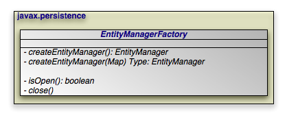 |
The EntityManagerFactory creates
EntityManager instances for application use.
Note
OpenJPA extends the standard EntityManagerFactory
interface with the
OpenJPAEntityManagerFactory to provide additional
functionality.
Within a container, you will typically use injection to
access an EntityManagerFactory. There are, however,
alternative mechanisms for EntityManagerFactory
construction.
Some vendors may supply public constructors for their
EntityManagerFactory implementations, but we recommend using the
Java Connector Architecture (JCA) in a managed environment, or the
Persistence class' createEntityManagerFactory
methods in an unmanaged environment, as described in
Chapter 6,
Persistence
. These strategies allow
vendors to pool factories, cutting down on resource utilization.
JPA allows you to create and configure an
EntityManagerFactory, then store it in a Java Naming and Directory
Interface (JNDI) tree for later retrieval and use.
public EntityManager createEntityManager(); public EntityManager createEntityManager(Map map);
The two createEntityManager methods above create a new
EntityManager each time they are invoked. The optional
Map is used to supply vendor-specific settings. If you
have configured your implementation for JTA transactions and a JTA transaction
is active, the returned EntityManager will be
synchronized with that transaction.
Note
OpenJPA recognizes the following string keys in the map supplied to
createEntityManager:
openjpa.ConnectionUserNameopenjpa.ConnectionPasswordopenjpa.ConnectionRetainModeopenjpa.TransactionModeopenjpa.<property>, where <property> is any JavaBean property of theorg.apache.openjpa.persistence.OpenJPAEntityManager.
The last option uses reflection to configure any property of OpenJPA's
EntityManager implementation with the value supplied in
your map. The first options correspond exactly to the same-named OpenJPA
configuration keys described in Chapter 2,
Configuration
of the
Reference Guide.
A persistence context is a set of entities such that for any persistent identity
there is a unique entity instance. Within a persistence context, entities are
managed. The EntityManager controls
their lifecycle, and they can access datastore resources.
When a persistence context ends, previously-managed entities become
detached. A detached entity is no longer under the control of the
EntityManager, and no longer has access to datastore
resources. We discuss detachment in detail in
Section 2, “
Entity Lifecycle Management
”. For now, it is sufficient to
know that detachment has two obvious consequences:
The detached entity cannot load any additional persistent state.
The
EntityManagerwill not return the detached entity fromfind, nor will queries include the detached entity in their results. Instead,findmethod invocations and query executions that would normally incorporate the detached entity will create a new managed entity with the same identity.
Note
OpenJPA offers several features related to detaching entities. See
Section 1, “
Detach and Attach
” in the Reference Guide.
Section 1.3, “
Defining the Detached Object Graph
” in particular describes how to
use the DetachState setting to boost the performance of
merging detached entities.
Injected EntityManagers have a transaction
persistence context,
while EntityManagers obtained through the
EntityManagerFactory have an extended
persistence context. We describe these persistence context types
below.
Under the transaction persistence context model, an EntityManager
begins a new persistence context with each transaction, and ends
the context when the transaction commits or rolls back. Within the transaction,
entities you retrieve through the EntityManager or via
Queries are managed entities. They can access datastore
resources to lazy-load additional persistent state as needed, and only one
entity may exist for any persistent identity.
When the transaction completes, all entities lose their association with the
EntityManager and become detached. Traversing a
persistent field that wasn't already loaded now has undefined results. And using
the EntityManager or a Query to
retrieve additional objects may now create new instances with the same
persistent identities as detached instances.
If you use an EntityManager with a transaction
persistence context model outside of an active transaction, each method
invocation creates a new persistence context, performs the method action, and
ends the persistence context. For example, consider using the
EntityManager.find method outside of a transaction. The
EntityManager will create a temporary persistence context, perform
the find operation, end the persistence context, and return the detached result
object to you. A second call with the same id will return a second detached
object.
When the next transaction begins, the EntityManager will
begin a new persistence context, and will again start returning managed
entities. As you'll see in Chapter 8,
EntityManager
, you can
also merge the previously-detached entities back into the new persistence
context.
Example 7.1. Behavior of Transaction Persistence Context
The following code illustrates the behavior of entities under an
EntityManager using a transaction persistence context.
EntityManager em; // injected ... // outside a transaction: // each operation occurs in a separate persistence context, and returns // a new detached instance Magazine mag1 = em.find(Magazine.class, magId); Magazine mag2 = em.find(Magazine.class, magId); assertTrue(mag2 != mag1); ... // transaction begins: // within a transaction, a subsequent lookup doesn't return any of the // detached objects. however, two lookups within the same transaction // return the same instance, because the persistence context spans the // transaction Magazine mag3 = em.find(Magazine.class, magId); assertTrue(mag3 != mag1 && mag3 != mag2); Magazine mag4 = em.find(Magazine.class, magId); assertTrue(mag4 == mag3); ... // transaction commits: // once again, each operation returns a new instance Magazine mag5 = em.find(Magazine.class, magId); assertTrue(mag5 != mag3);
An EntityManager using an extended persistence context
maintains the same persistence context for its entire lifecycle. Whether inside
a transaction or not, all entities returned from the EntityManager
are managed, and the EntityManager never
creates two entity instances to represent the same persistent identity. Entities
only become detached when you finally close the EntityManager
(or when they are serialized).
Example 7.2. Behavior of Extended Persistence Context
The following code illustrates the behavior of entities under an
EntityManager using an extended persistence context.
EntityManagerFactory emf = ... EntityManager em = emf.createEntityManager(); // persistence context active for entire life of EM, so only one entity // for a given persistent identity Magazine mag1 = em.find(Magazine.class, magId); Magazine mag2 = em.find(Magazine.class, magId); assertTrue(mag2 == mag1); em.getTransaction().begin(); // same persistence context active within the transaction Magazine mag3 = em.find(Magazine.class, magId); assertTrue(mag3 == mag1); Magazine mag4 = em.find(Magazine.class, magId); assertTrue(mag4 == mag1); em.getTransaction.commit(); // when the transaction commits, instance still managed Magazine mag5 = em.find(Magazine.class, magId); assertTrue(mag5 == mag1); // instance finally becomes detached when EM closes em.close();
There are two sets of properties that may be specified: those that are specific to openjpa and those that have been defined by the JPA specification. In some cases, two properties may be equivalent, but have different keys. For example, openjpa.LockTimeout and javax.persistence.lock.timeout are two different keys for the same property.
There are two methods that can be used to retrieve information related to properties:
getProperties() - This method provides a list of current properties. If a property has more than one key, the key that will be returned is the one that was used when the property was set. If the property was not explicitly set, the key defined by JPA specification will be returned with the default value.
getSupportedProperties() - This method returns a set of property keys. See the javadoc in the latest JPA specification for the definition of the set. If a property has more than one key, all possible keys will be returned.
public boolean isOpen(); public void close();
EntityManagerFactory instances are heavyweight objects.
Each factory might maintain a metadata cache, object state cache,
EntityManager pool, connection pool, and more. If your application
no longer needs an EntityManagerFactory, you should
close it to free these resources. When an EntityManagerFactory
closes, all EntityManagers from that
factory, and by extension all entities managed by those
EntityManagers, become invalid. Attempting to close an
EntityManagerFactory while one or more of its
EntityManagers has an active transaction may result in an
IllegalStateException.
Closing an EntityManagerFactory should not be taken
lightly. It is much better to keep a factory open for a long period of time than
to repeatedly create and close new factories. Thus, most applications will never
close the factory, or only close it when the application is exiting. Only
applications that require multiple factories with different configurations have
an obvious reason to create and close multiple EntityManagerFactory
instances. Once a factory is closed, all methods except
isOpen throw an
IllegalStateException.
public PersistenceUnitUtil getPersistenceUnitUtil();
The EntityManagerFactory method
getPersistenceUnitUtil to provide access to a
PersistenceUnitUtil utility. PersistenceUnitUtil
can be used to obtain the identity of a managed object and determine the load
state of the entity or one of its attributes. If the object is not
managed by one of the entity managers created from the entity manager factory
from which the utility was obtained, the getIdentifier method will
return null and the isLoaded methods will return false.
EntityManagerFactory emf = Persistence.createEntityManagerFactory();
PersistenceUnitUtil puUtil = emf.getPersistenceUnitUtil();
if (puUtil.getIdentifier(deptEntity) == null) {
throw new Exception("Identity is not valid.");
}
if (!puUtil.isLoaded(deptEntity, "employees")) {
throw new Exception("Employees not loaded.")
}
Table of Contents
| 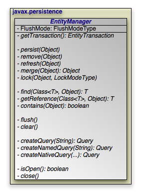 |
The diagram above presents an overview of the EntityManager
interface. For a complete treatment of the
EntityManager API, see the
Javadoc documentation. Methods whose parameter signatures consist of
an ellipsis (...) are overloaded to take multiple parameter types.
Note
OpenJPA extends the standard EntityManager interface with
the
org.apache.openjpa.persistence.OpenJPAEntityManager
interface to provide additional functionality.
The EntityManager is the primary interface used by
application developers to interact with the JPA runtime. The methods
of the EntityManager can be divided into the following
functional categories:
Transactionassociation.Entity lifecycle management.
Entity identity management.
Cache management.
Queryfactory.Closing.
public EntityTransaction getTransaction();
Every EntityManager has a one-to-one relation with an
EntityTransaction
instance. In fact, many vendors use a single class to implement both the
EntityManager and EntityTransaction
interfaces. If your application requires multiple concurrent
transactions, you will use multiple EntityManagers.
You can retrieve the EntityTransaction associated with an
EntityManager through the getTransaction
method. Note that most JPA implementations can
integrate with an application server's managed transactions. If you take
advantage of this feature, you will control transactions by declarative
demarcation or through the Java Transaction API (JTA) rather than through the
EntityTransaction.
EntityManagers perform several actions that affect the
lifecycle state of entity instances.
public void persist(Object entity);
Transitions new instances to managed. On the next flush or commit, the newly persisted instances will be inserted into the datastore.
For a given entity A, the persist
method behaves as follows:
If
Ais a new entity, it becomes managed.If
Ais an existing managed entity, it is ignored. However, the persist operation cascades as defined below.If
Ais a removed entity, it becomes managed.If
Ais a detached entity, anIllegalArgumentExceptionis thrown.The persist operation recurses on all relation fields of
Awhose cascades includeCascadeType.PERSIST.
This action can only be used in the context of an active transaction.
public void remove(Object entity);
Transitions managed instances to removed. The instances will be deleted from the datastore on the next flush or commit. Accessing a removed entity has undefined results.
For a given entity A, the remove
method behaves as follows:
If
Ais a new entity, it is ignored. However, the remove operation cascades as defined below.If
Ais an existing managed entity, it becomes removed.If
Ais a removed entity, it is ignored.If
Ais a detached entity, anIllegalArgumentExceptionis thrown.The remove operation recurses on all relation fields of
Awhose cascades includeCascadeType.REMOVE.
This action can only be used in the context of an active transaction.
public void refresh(Object entity);
Use the refresh action to make sure the persistent
state of an instance is synchronized with the values in the datastore.
refresh is intended for long-running optimistic
transactions in which there is a danger of seeing stale data.
For a given entity A, the refresh
method behaves as follows:
If
Ais a new entity, it is ignored. However, the refresh operation cascades as defined below.If
Ais an existing managed entity, its state is refreshed from the datastore.If
Ais a removed entity, it is ignored.If
Ais a detached entity, anIllegalArgumentExceptionis thrown.The refresh operation recurses on all relation fields of
Awhose cascades includeCascadeType.REFRESH.
public Object merge(Object entity);
A common use case for an application running in a servlet or application server is to "detach" objects from all server resources, modify them, and then "attach" them again. For example, a servlet might store persistent data in a user session between a modification based on a series of web forms. Between each form request, the web container might decide to serialize the session, requiring that the stored persistent state be disassociated from any other resources. Similarly, a client/server application might transfer persistent objects to a client via serialization, allow the client to modify their state, and then have the client return the modified data in order to be saved. This is sometimes referred to as the data transfer object or value object pattern, and it allows fine-grained manipulation of data objects without incurring the overhead of multiple remote method invocations.
JPA provides support for this pattern by automatically detaching
entities when they are serialized or when a persistence context ends (see
Section 3, “
Persistence Context
” for an exploration of
persistence contexts). The JPA merge API
re-attaches detached entities. This allows you to detach a persistent instance,
modify the detached instance offline, and merge the instance back into an
EntityManager (either the same one that detached the
instance, or a new one). The changes will then be applied to the existing
instance from the datastore.
A detached entity maintains its persistent identity, but cannot load additional state from the datastore. Accessing any persistent field or property that was not loaded at the time of detachment has undefined results. Also, be sure not to alter the version or identity fields of detached instances if you plan on merging them later.
The merge method returns a managed copy of the given
detached entity. Changes made to the persistent state of the detached entity are
applied to this managed instance. Because merging involves changing persistent
state, you can only merge within a transaction.
If you attempt to merge an instance whose representation has changed in the datastore since detachment, the merge operation will throw an exception, or the transaction in which you perform the merge will fail on commit, just as if a normal optimistic conflict were detected.
Note
OpenJPA offers enhancements to JPA detachment functionality, including additional options to control which fields are detached. See Section 1, “ Detach and Attach ” in the Reference Guide for details.
For a given entity A, the merge
method behaves as follows:
If
Ais a detached entity, its state is copied into existing managed instanceA'of the same entity identity, or a new managed copy ofAis created.If
Ais a new entity, a new managed entityA'is created and the state ofAis copied intoA'.If
Ais an existing managed entity, it is ignored. However, the merge operation still cascades as defined below.If
Ais a removed entity, anIllegalArgumentExceptionis thrown.The merge operation recurses on all relation fields of
Awhose cascades includeCascadeType.MERGE.
public void lock(Object entity, LockModeType mode);
This method locks the given entity using the named mode. The
javax.persistence.LockModeType enum defines two
modes:
READ: Other transactions may concurrently read the object, but cannot concurrently update it.WRITE: Other transactions cannot concurrently read or write the object. When a transaction is committed that holds WRITE locks on any entities, those entities will have their version incremented even if the entities themselves did not change in the transaction.
Note
OpenJPA has additional APIs for controlling object locking. See Section 3, “ Object Locking ” in the Reference Guide for details.
The following diagram illustrates the lifecycle of an entity with respect to the APIs presented in this section.
| 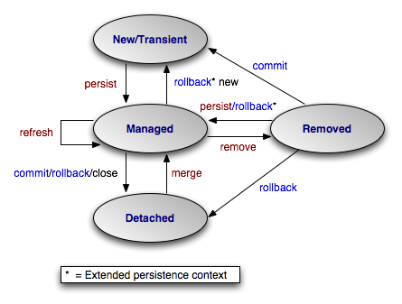 |
The examples below demonstrate how to use the lifecycle methods presented in the
previous section. The examples are appropriate for out-of-container use. Within
a container, EntityManagers are usually injected, and
transactions are usually managed. You would therefore omit the
createEntityManager and close calls, as
well as all transaction demarcation code.
Example 8.1. Persisting Objects
// create some objects
Magazine mag = new Magazine("1B78-YU9L", "JavaWorld");
Company pub = new Company("Weston House");
pub.setRevenue(1750000D);
mag.setPublisher(pub);
pub.addMagazine(mag);
Article art = new Article("JPA Rules!", "Transparent Object Persistence");
art.addAuthor(new Author("Fred", "Hoyle"));
mag.addArticle(art);
// persist
EntityManager em = emf.createEntityManager();
em.getTransaction().begin();
em.persist(mag);
em.persist(pub);
em.persist(art);
em.getTransaction().commit();
// or we could continue using the EntityManager...
em.close();
Example 8.2. Updating Objects
Magazine.MagazineId mi = new Magazine.MagazineId(); mi.isbn = "1B78-YU9L"; mi.title = "JavaWorld"; // updates should always be made within transactions; note that // there is no code explicitly linking the magazine or company // with the transaction; JPA automatically tracks all changes EntityManager em = emf.createEntityManager(); em.getTransaction().begin(); Magazine mag = em.find(Magazine.class, mi); mag.setPrice(5.99); Company pub = mag.getPublisher(); pub.setRevenue(1750000D); em.getTransaction().commit(); // or we could continue using the EntityManager... em.close();
Example 8.3. Removing Objects
// assume we have an object id for the company whose subscriptions
// we want to delete
Object oid = ...;
// deletes should always be made within transactions
EntityManager em = emf.createEntityManager();
em.getTransaction().begin();
Company pub = (Company) em.find(Company.class, oid);
for (Subscription sub : pub.getSubscriptions())
em.remove(sub);
pub.getSubscriptions().clear();
em.getTransaction().commit();
// or we could continue using the EntityManager...
em.close();
Example 8.4. Detaching and Merging
This example demonstrates a common client/server scenario. The client requests objects and makes changes to them, while the server handles the object lookups and transactions.
// CLIENT:
// requests an object with a given oid
Record detached = (Record) getFromServer(oid);
...
// SERVER:
// send object to client; object detaches on EM close
Object oid = processClientRequest();
EntityManager em = emf.createEntityManager();
Record record = em.find(Record.class, oid);
em.close();
sendToClient(record);
...
// CLIENT:
// makes some modifications and sends back to server
detached.setSomeField("bar");
sendToServer(detached);
...
// SERVER:
// merges the instance and commit the changes
Record modified = (Record) processClientRequest();
EntityManager em = emf.createEntityManager();
em.getTransaction().begin();
Record merged = (Record) em.merge(modified);
merged.setLastModified(System.currentTimeMillis());
merged.setModifier(getClientIdentityCode());
em.getTransaction().commit();
em.close();
Each EntityManager is responsible for managing the
persistent identities of the managed objects in the persistence context. The
following methods allow you to interact with the management of persistent
identities. The behavior of these methods is deeply affected by the persistence
context type of the EntityManager; see
Section 3, “
Persistence Context
” for an explanation of
persistence contexts.
public <T> T find(Class<T> cls, Object oid);
This method returns the persistent instance of the given type with the given persistent identity. If the instance is already present in the current persistence context, the cached version will be returned. Otherwise, a new instance will be constructed and loaded with state from the datastore. If no entity with the given type and identity exists in the datastore, this method returns null.
public <T> T getReference(Class<T> cls, Object oid);
This method is similar to find, but does not
necessarily go to the database when the entity is not found in cache. The
implementation may construct a hollow entity and return it
to you instead. Hollow entities do not have any state loaded. The state only
gets loaded when you attempt to access a persistent field. At that time, the
implementation may throw an EntityNotFoundException if it
discovers that the entity does not exist in the datastore. The implementation
may also throw an EntityNotFoundException from the
getReference method itself. Unlike
find, getReference does not return null.
public boolean contains(Object entity);
Returns true if the given entity is part of the current persistence context, and false otherwise. Removed entities are not considered part of the current persistence context.
public void flush();
The flush method writes any changes that have been made
in the current transaction to the datastore. If the EntityManager
does not already have a connection to the datastore, it obtains one
for the flush and retains it for the duration of the transaction. Any exceptions
during flush cause the transaction to be marked for rollback. See
Chapter 9,
Transaction
.
Flushing requires an active transaction. If there isn't a transaction in
progress, the flush method throws a
TransactionRequiredException.
public FlushModeType getFlushMode(); public void setFlushMode(FlushModeType flushMode);
The EntityManager's FlushMode property
controls whether to flush transactional changes before executing queries. This
allows the query results to take into account changes you have made during the
current transaction. Available
javax.persistence.FlushModeType constants are:
COMMIT: Only flush when committing, or when told to do so through theflushmethod. Query results may not take into account changes made in the current transaction.AUTO: The implementation is permitted to flush before queries to ensure that the results reflect the most recent object state.
You can also set the flush mode on individual
Query
instances.
Note
OpenJPA only flushes before a query if the query might be affected by data changed in the current transaction. Additionally, OpenJPA allows fine-grained control over flushing behavior. See the Reference Guide's Section 8, “ Configuring the Use of JDBC Connections ”.
public void clear();
Clearing the EntityManager effectively ends the
persistence context. All entities managed by the EntityManager
become detached.
public Query createQuery(String query);
Query objects are used to find entities matching certain
criteria. The createQuery method creates a query using
the given Java Persistence Query Language (JPQL) string. See
Chapter 10,
JPA Query
for details.
public Query createNamedQuery(String name);
This method retrieves a query defined in metadata by name. The returned
Query instance is initialized with the information
declared in metadata. For more information on named queries, read
Section 1.11, “
Named Queries
”.
public Query createNativeQuery(String sql); public Query createNativeQuery(String sql, Class resultCls); public Query createNativeQuery(String sql, String resultMapping);
Native queries are queries in the datastore's native language. For relational databases, this is the Structured Query Language (SQL). Chapter 12, SQL Queries elaborates on JPA's native query support.
There are two sets of properties that may be specified: those that are specific to openjpa and those that have been defined by the JPA specification. In some cases, two properties may be equivalent, but have different keys. For example, openjpa.LockTimeout and javax.persistence.lock.timeout are two different keys for the same property.
There are two methods that can be used to retrieve information related to properties:
getProperties() - This method provides a list of current properties. If a property has more than one key, the key that will be returned is the one that was used when the property was set. If the property was not explicitly set, the key defined by JPA specification will be returned with the default value.
getSupportedProperties() - This method returns a set of property keys. See the javadoc in the latest JPA specification for the definition of the set. If a property has more than one key, all possible keys will be returned.
public boolean isOpen(); public void close();
When an EntityManager is no longer needed, you should
call its close method. Closing an
EntityManager releases any resources it is using. The persistence
context ends, and the entities managed by the EntityManager
become detached. Any Query instances the
EntityManager created become invalid. Calling any method
other than isOpen on a closed EntityManager
results in an IllegalStateException. You
cannot close a EntityManager that is in the middle of a
transaction.
If you are in a managed environment using injected entity managers, you should not close them.
Table of Contents
Transactions are critical to maintaining data integrity. They are used to group operations into units of work that act in an all-or-nothing fashion. Transactions have the following qualities:
Atomicity. Atomicity refers to the all-or-nothing property of transactions. Either every data update in the transaction completes successfully, or they all fail, leaving the datastore in its original state. A transaction cannot be only partially successful.
Consistency. Each transaction takes the datastore from one consistent state to another consistent state.
Isolation. Transactions are isolated from each other. When you are reading persistent data in one transaction, you cannot "see" the changes that are being made to that data in other transactions. Similarly, the updates you make in one transaction cannot conflict with updates made in concurrent transactions. The form of conflict resolution employed depends on whether you are using pessimistic or optimistic transactions. Both types are described later in this chapter.
Durability. The effects of successful transactions are durable; the updates made to persistent data last for the lifetime of the datastore.
Together, these qualities are called the ACID properties of transactions. To understand why these properties are so important to maintaining data integrity, consider the following example:
Suppose you create an application to manage bank accounts. The application includes a method to transfer funds from one user to another, and it looks something like this:
public void transferFunds(User from, User to, double amnt) {
from.decrementAccount(amnt);
to.incrementAccount(amnt);
}
Now suppose that user Alice wants to transfer 100 dollars to user Bob. No
problem; you simply invoke your transferFunds method,
supplying Alice in the from parameter, Bob in the
to parameter, and 100.00 as the amnt
. The first line of the method is executed, and 100 dollars is
subtracted from Alice's account. But then, something goes wrong. An unexpected
exception occurs, or the hardware fails, and your method never completes.
You are left with a situation in which the 100 dollars has simply disappeared. Thanks to the first line of your method, it is no longer in Alice's account, and yet it was never transferred to Bob's account either. The datastore is in an inconsistent state.
The importance of transactions should now be clear. If the two lines of the
transferFunds method had been placed together in a
transaction, it would be impossible for only the first line to succeed. Either
the funds would be transferred properly or they would not be transferred at all,
and an exception would be thrown. Money could never vanish into thin air, and
the data store could never get into an inconsistent state.
There are two major types of transactions: pessimistic transactions and optimistic transactions. Each type has both advantages and disadvantages.
Pessimistic transactions generally lock the datastore records they act on, preventing other concurrent transactions from using the same data. This avoids conflicts between transactions, but consumes database resources. Additionally, locking records can result in deadlock, a situation in which two transactions are both waiting for the other to release its locks before completing. The results of a deadlock are datastore-dependent; usually one transaction is forcefully rolled back after some specified timeout interval, and an exception is thrown.
This document will often use the term datastore transaction in place of pessimistic transaction. This is to acknowledge that some datastores do not support pessimistic semantics, and that the exact meaning of a non-optimistic JPA transaction is dependent on the datastore. Most of the time, a datastore transaction is equivalent to a pessimistic transaction.
Optimistic transactions consume less resources than pessimistic/datastore transactions, but only at the expense of reliability. Because optimistic transactions do not lock datastore records, two transactions might change the same persistent information at the same time, and the conflict will not be detected until the second transaction attempts to flush or commit. At this time, the second transaction will realize that another transaction has concurrently modified the same records (usually through a timestamp or versioning system), and will throw an appropriate exception. Note that optimistic transactions still maintain data integrity; they are simply more likely to fail in heavily concurrent situations.
Despite their drawbacks, optimistic transactions are the best choice for most applications. They offer better performance, better scalability, and lower risk of hanging due to deadlock.
Note
OpenJPA uses optimistic semantics by default, but supports both optimistic and datastore transactions. OpenJPA also offers advanced locking and versioning APIs for fine-grained control over database resource allocation and object versioning. See Section 3, “ Object Locking ” of the Reference Guide for details on locking. Section 2.6, “ Version ” of this document covers standard object versioning, while Section 7, “ Additional JPA Mappings ” of the Reference Guide discusses additional versioning strategies available in OpenJPA.
JPA integrates with your container's managed transactions,
allowing you to use the container's declarative transaction demarcation and its
Java Transaction API (JTA) implementation for transaction management. Outside of
a container, though, you must demarcate transactions manually through JPA. The
EntityTransaction interface controls unmanaged
transactions in JPA.
public void begin(); public void commit(); public void rollback();
The begin, commit, and
rollback methods demarcate transaction boundaries. The
methods should be self-explanatory: begin starts a
transaction, commit attempts to commit the
transaction's changes to the datastore, and rollback
aborts the transaction, in which case the datastore is "rolled back" to its
previous state. JPA implementations will automatically roll back transactions if
any exception is thrown during the commit process.
Unless you are using an extended persistence context, committing or rolling back
also ends the persistence context. All managed entities will be detached from the
EntityManager.
public boolean isActive();
Finally, the isActive method returns true
if the transaction is in progress (begin
has been called more recently than commit or
rollback), and false otherwise.
Example 9.1. Grouping Operations with Transactions
public void transferFunds(EntityManager em, User from, User to, double amnt) {
// note: it would be better practice to move the transaction demarcation
// code out of this method, but for the purposes of example...
Transaction trans = em.getTransaction();
trans.begin();
try
{
from.decrementAccount(amnt);
to.incrementAccount(amnt);
trans.commit();
}
catch (RuntimeException re)
{
if (trans.isActive())
trans.rollback(); // or could attempt to fix error and retry
throw re;
}
}
Table of Contents
- 1. JPQL API
- 2. JPQL Language Reference
- 2.1. JPQL Statement Types
- 2.2. JPQL Abstract Schema Types and Query Domains
- 2.3. JPQL FROM Clause and Navigational Declarations
- 2.4. JPQL WHERE Clause
- 2.5. JPQL Conditional Expressions
- 2.5.1. JPQL Literals
- 2.5.2. JPQL Identification Variables
- 2.5.3. JPQL Path Expressions
- 2.5.4. JPQL Input Parameters
- 2.5.5. JPQL Conditional Expression Composition
- 2.5.6. JPQL Operators and Operator Precedence
- 2.5.7. JPQL Comparison Expressions
- 2.5.8. JPQL Between Expressions
- 2.5.9. JPQL In Expressions
- 2.5.10. JPQL Like Expressions
- 2.5.11. JPQL Null Comparison Expressions
- 2.5.12. JPQL Empty Collection Comparison Expressions
- 2.5.13. JPQL Collection Member Expressions
- 2.5.14. JPQL Exists Expressions
- 2.5.15. JPQL All or Any Expressions
- 2.5.16. JPQL Subqueries
- 2.6. JPQL Scalar Expressions
- 2.7. JPQL GROUP BY, HAVING
- 2.8. JPQL SELECT Clause
- 2.9. JPQL ORDER BY Clause
- 2.10. JPQL Bulk Update and Delete
- 2.11. JPQL Null Values
- 2.12. JPQL Equality and Comparison Semantics
- 2.13. JPQL BNF
| 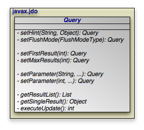 |
The javax.persistence.Query interface is the mechanism
for issuing queries in JPA. The primary query language used is the Java
Persistence Query Language, or JPQL. JPQL is syntactically
very similar to SQL, but is object-oriented rather than table-oriented.
The API for executing JPQL queries will be discussed in Section 1, “ JPQL API ”, and a full language reference will be covered in Section 2, “ JPQL Language Reference ”.
SELECT x FROM Magazine x
The preceding is a simple JPQL query for all Magazine
entities.
public Query createQuery(String jpql);
The
EntityManager.createQuery method creates a
Query instance from a given JPQL string.
public List getResultList();
Invoking
Query.getResultList executes the query and
returns a List containing the matching objects. The
following example executes our Magazine query above:
EntityManager em = ...
Query q = em.createQuery("SELECT x FROM Magazine x");
List<Magazine> results = (List<Magazine>) q.getResultList();
A JPQL query has an internal namespace declared in the from
clause of the query. Arbitrary identifiers are assigned to entities so that they
can be referenced elsewhere in the query. In the query example above, the
identifier x is assigned to the entity Magazine
.
Note
The as keyword can optionally be used when declaring
identifiers in the from clause. SELECT x FROM
Magazine x and SELECT x FROM Magazine AS x are
synonymous.
Following the select clause of the query is the object or
objects that the query returns. In the case of the query above, the query's
result list will contain instances of the Magazine class.
Note
When selecting entities, you can optionally use the keyword object
. The clauses select x and SELECT
OBJECT(x) are synonymous.
The optional where clause places criteria on matching
results. For example:
SELECT x FROM Magazine x WHERE x.title = 'JDJ'
Keywords in JPQL expressions are case-insensitive, but entity, identifier, and member names are not. For example, the expression above could also be expressed as:
select x from Magazine x where x.title = 'JDJ'
But it could not be expressed as:
SELECT x FROM Magazine x WHERE x.TITLE = 'JDJ'
As with the select clause, alias names in the where
clause are resolved to the entity declared in the from
clause. The query above could be described in English as "for all
Magazine instances x, return a list
of every x such that x's title
field is equal to 'JDJ'".
JPQL uses SQL-like syntax for query criteria. The and and
or logical operators chain multiple criteria together:
SELECT x FROM Magazine x WHERE x.title = 'JDJ' OR x.title = 'JavaPro'
The = operator tests for equality. <>
tests for inequality. JPQL also supports the following arithmetic
operators for numeric comparisons: >, >=, <, <=.
For example:
SELECT x FROM Magazine x WHERE x.price > 3.00 AND x.price <= 5.00
This query returns all magazines whose price is greater than 3.00 and less than or equal to 5.00.
SELECT x FROM Magazine x WHERE x.price <> 3.00
This query returns all Magazines whose price is not equal to 3.00.
You can group expressions together using parentheses in order to specify how they are evaluated. This is similar to how parentheses are used in Java. For example:
SELECT x FROM Magazine x WHERE (x.price > 3.00 AND x.price <= 5.00) OR x.price < 7.00
This expression would match magazines whose price is less than 7.00. Alternately:
SELECT x FROM Magazine x WHERE x.price > 3.00 AND (x.price <= 5.00 OR x.price < 7.00)
This expression would match magazines whose price is 4.00, 5.00 or 6.00, but not 1.00, 2.00 or 3.00.
JPQL also includes the following conditionals:
[NOT] BETWEEN: Shorthand for expressing that a value falls between two other values. The following two statements are synonymous:SELECT x FROM Magazine x WHERE x.price >= 3.00 AND x.price <= 5.00
SELECT x FROM Magazine x WHERE x.price BETWEEN 3.00 AND 5.00
[NOT] LIKE: Performs a string comparison with wildcard support. The special character '_' in the parameter means to match any single character, and the special character '%' means to match any sequence of characters. The following statement matches title fields "JDJ" and "JavaPro", but not "IT Insider":SELECT x FROM Magazine x WHERE x.title LIKE 'J%'
The following statement matches the title field "JDJ" but not "JavaPro":
SELECT x FROM Magazine x WHERE x.title LIKE 'J__'
[NOT] IN: Specifies that the member must be equal to one element of the provided list. The following two statements are synonymous:SELECT x FROM Magazine x WHERE x.title IN ('JDJ', 'JavaPro', 'IT Insider')SELECT x FROM Magazine x WHERE x.title = 'JDJ' OR x.title = 'JavaPro' OR x.title = 'IT Insider'
IS [NOT] EMPTY: Specifies that the collection field holds no elements. For example:SELECT x FROM Magazine x WHERE x.articles is empty
This statement will return all magazines whose
articlesmember contains no elements.IS [NOT] NULL: Specifies that the field is equal to null. For example:SELECT x FROM Magazine x WHERE x.publisher is null
This statement will return all Magazine instances whose "publisher" field is set to
null.NOT: Negates the contained expression. For example, the following two statements are synonymous:SELECT x FROM Magazine x WHERE NOT(x.price = 10.0)
SELECT x FROM Magazine x WHERE x.price <> 10.0
Relations between objects can be traversed using Java-like syntax. For example, if the Magazine class has a field named "publisher" of type Company, that relation can be queried as follows:
SELECT x FROM Magazine x WHERE x.publisher.name = 'Random House'
This query returns all Magazine instances whose
publisher field is set to a Company instance
whose name is "Random House".
Single-valued relation traversal implies that the relation is not null. In SQL terms, this is known as an inner join. If you want to also include relations that are null, you can specify:
SELECT x FROM Magazine x WHERE x.publisher.name = 'Random House' or x.publisher is null
You can also traverse collection fields in queries, but you must declare each
traversal in the from clause. Consider:
SELECT x FROM Magazine x, IN(x.articles) y WHERE y.authorName = 'John Doe'
This query says that for each Magazine x
, traverse the articles relation and check each
Article y, and pass the filter if
y's authorName field is equal to "John
Doe". In short, this query will return all magazines that have any articles
written by John Doe.
Note
The IN() syntax can also be expressed with the keywords
inner join. The statements SELECT x FROM Magazine
x, IN(x.articles) y WHERE y.authorName = 'John Doe' and
SELECT x FROM Magazine x inner join x.articles y WHERE y.authorName = 'John Doe'
are synonymous.
Similar to relation traversal, nested embeddable objects can be traversed using Java-like syntax.
For example, if the Compony class has a field named "address" of
an embeddable type Address,
and the Address has a field named "geocode" of
an embeddable type Geocode,
the geocode of a company's address can be queried as follows:
SELECT c.address.geocode FROM Company c WHERE c.name = 'Random House'
Note
The geocode returned by the above query will not be part of the state of any managed
entity. Modifications to these embeddable instances are not allowed.
Traverse into embeddable's state field is also allowed as shown in the following query:
SELECT c.address.geocode.latitude FROM Company c WHERE c.name = 'Random House'
Embeddable objects may contain single-valued or collection-valued relations.
These relations can also be traversed using Java-like syntax.
For example, if the Address has a relation field named "phoneLists" of
an entity type PhoneNumber,
the following query returns the PhoneNumber entities of the Company
named 'Random House':
SELECT p FROM Company c, IN(c.address.phoneLists) p WHERE c.name = 'Random House'
JPQL queries may specify one or more join fetch declarations,
which allow the query to specify which fields in the returned instances will be
pre-fetched.
SELECT x FROM Magazine x join fetch x.articles WHERE x.title = 'JDJ'
The query above returns Magazine instances and guarantees
that the articles field will already be fetched in the
returned instances.
Multiple fields may be specified in separate join fetch
declarations:
SELECT x FROM Magazine x join fetch x.articles join fetch x.authors WHERE x.title = 'JDJ'
Notice that in the above query, both articles and authors
are relation property in Magazine.
JPQL syntax does not allow range variable declared for paths on the right-hand side of
join fetch.
Therefore, if Article entity has a relation property of
publishers,
it is not possible to specify a query
that returns Magazine instances and pre-fetch
the articles and the publishers.
The following query will result in syntax error:
SELECT x FROM Magazine x join fetch x.articles a join fetch a.publishers p WHERE x.title = 'JDJ'
Note
Specifying the join fetch declaration is
functionally equivalent to adding the fields to the Query's
FetchConfiguration. See Section 7, “
Fetch Groups
”.
As well as supporting direct field and relation comparisons, JPQL supports a pre-defined set of functions that you can apply.
CONCAT(string1, string2): Concatenates two string fields or literals. For example:SELECT x FROM Magazine x WHERE CONCAT(x.title, 's') = 'JDJs'
SUBSTRING(string, startIndex, [length]): Returns the part of thestringargument starting atstartIndex(1-based) and optionally ending atlengthcharacters paststartIndex. If thelengthargument is not specified, the substring from thestartIndexto the end of thestringis returned.SELECT x FROM Magazine x WHERE SUBSTRING(x.title, 1, 1) = 'J'
TRIM([LEADING | TRAILING | BOTH] [character FROM] string: Trims the specified character from either the beginning (LEADING) end (TRAILING) or both (BOTH) of the string argument. If no trim character is specified, the space character will be trimmed.SELECT x FROM Magazine x WHERE TRIM(BOTH 'J' FROM x.title) = 'D'
LOWER(string): Returns the lower-case of the specified string argument.SELECT x FROM Magazine x WHERE LOWER(x.title) = 'jdj'
UPPER(string): Returns the upper-case of the specified string argument.SELECT x FROM Magazine x WHERE UPPER(x.title) = 'JAVAPRO'
LENGTH(string): Returns the number of characters in the specified string argument.SELECT x FROM Magazine x WHERE LENGTH(x.title) = 3
LOCATE(searchString, candidateString [, startIndex]): Returns the first index ofsearchStringincandidateString. Positions are 1-based. If the string is not found, returns 0.SELECT x FROM Magazine x WHERE LOCATE('D', x.title) = 2ABS(number): Returns the absolute value of the argument.SELECT x FROM Magazine x WHERE ABS(x.price) >= 5.00
SQRT(number): Returns the square root of the argument.SELECT x FROM Magazine x WHERE SQRT(x.price) >= 1.00
MOD(number, divisor): Returns the modulo ofnumberanddivisor.SELECT x FROM Magazine x WHERE MOD(x.price, 10) = 0
INDEX(identification_variable): Returns an integer value corresponding to the position of its argument in an ordered list. The INDEX function can only be applied to identification variables denoting types for which an order column has been specified.In the following example,
studentWaitlistis a list of students for which an order column has been specified, the query returns the name of the first student on the waiting list of the course named 'Calculus':SELECT w.name FROM Course c JOIN c.studentWaitlist w WHERE c.name = ‘Calculus’ AND INDEX(w) = 0
All JPQL queries are polymorphic, which means the from clause
of a query includes not only instances of the specific entity class to which it
refers, but all subclasses of that class as well. The instances returned by a
query include instances of the subclasses that satisfy the query conditions. For
example, the following query may return instances of Magazine
, as well as Tabloid and Digest
instances, where Tabloid and
Digest are Magazine subclasses.
SELECT x FROM Magazine x WHERE x.price < 5
Non-polymorphic queries or queries whose polymorphism is restricted can be specified using entity
type expressions (see Section 2.6.4, “
Entity Type Expressions
” )
in the WHERE clause to restrict the domain of the query.
For example, the following query returns instances of Digest:
SELECT x FROM Magazine WHERE TYPE(x) = Digest
JPQL provides support for parameterized queries. Either named parameters or positional parameters may be specified in the query string. Parameters allow you to re-use query templates where only the input parameters vary. A single query can declare either named parameters or positional parameters, but is not allowed to declare both named and positional parameters.
public Query setParameter (int pos, Object value);
Specify positional parameters in your JPQL string using an integer prefixed by a
question mark. You can then populate the Query object
with positional parameter values via calls to the setParameter
method above. The method returns the Query
instance for optional method chaining.
EntityManager em = ...
Query q = em.createQuery("SELECT x FROM Magazine x WHERE x.title = ?1 and x.price > ?2");
q.setParameter(1, "JDJ").setParameter(2, 5.0);
List<Magazine> results = (List<Magazine>) q.getResultList();
This code will substitute JDJ for the ?1
parameter and 5.0 for the ?2 parameter,
then execute the query with those values.
public Query setParameter(String name, Object value);
Named parameters are denoted by prefixing an arbitrary name with a colon in your
JPQL string. You can then populate the Query object with
parameter values using the method above. Like the positional parameter method,
this method returns the Query instance for optional
method chaining.
EntityManager em = ...
Query q = em.createQuery("SELECT x FROM Magazine x WHERE x.title = :titleParam and x.price > :priceParam");
q.setParameter("titleParam", "JDJ").setParameter("priceParam", 5.0);
List<Magazine> results = (List<Magazine>) q.getResultList();
This code substitutes JDJ for the :titleParam
parameter and 5.0 for the :priceParam
parameter, then executes the query with those values.
All input parameters must be single-valued, except in IN expressions (see Section 2.5.9, “ JPQL In Expressions ”), which support the use of collection-valued input parameters.
JPQL provides support for hints which are name/value pairs used to control locking and optimization keywords in SQL.
The following example shows how to use the JPA hint API to set the ReadLockMode
and ResultCount in the OpenJPA fetch plan. This will result in
a database-specific SQL keyword (usually FOR UPDATE) to be emitted into the SQL provided that a
pessimistic LockManager is being used. Additionally, if a DB2 database is being used,
the OPTIMIZE FOR 2 ROWS clause will also be emitted.
Example 10.1. Query Hints
...
Query q = em.createQuery("select m from Magazine m where ... ");
q.setHint("openjpa.hint.OptimizeResultCount", new Integer(2));
q.setHint("openjpa.FetchPlan.ReadLockMode","WRITE");
List r = q.getResultList();
...
Hints which can not be processed by a particular database or are unknown to OpenJPA are ignored.
Hints known to OpenJPA but supplied with an incompatible value will result in an
IllegalArgumentException being thrown.
To avoid deadlock and optimistic update exceptions among multiple updaters, use a pessimistic LockManager, specified in the persistence unit definition,
and use a hint name of "openjpa.FetchPlan.ReadLockMode" on queries for entities that must be locked for serialization.
The value of ReadLockMode can be either "READ" or "WRITE".
This results in a database-specific locking keyword (usually FOR UPDATE) to be emitted into the SQL.
Using a ReadLockMode hint with JPA optimistic locking (i.e. specifying LockManager = "version") will result in the entity version field either being reread at end of transaction in the case of a value of "READ" or the version field updated at end of transaction in the case of "WRITE". You must define a version field in the entity mapping when using a version LockManager and using ReadLockMode.
Table 10.1. Interaction of ReadLockMode hint and LockManager
| ReadLockMode | LockManager=pessimistic | LockManager=version |
|---|---|---|
| READ | SQL with FOR UPDATE | SQL without FOR UPDATE;
reread version field at the end of transaction and check for no change. |
| WRITE | SQL with FOR UPDATE |
SQL without FOR UPDATE;
force update version field at the end of transaction |
| not specified | SQL without FOR UPDATE | SQL without FOR UPDATE |
To specify a lock timeout hint in milliseconds to those databases that support it, specify a hint name of "openjpa.LockTimeout" or "javax.persistence.lock.timeout" with an integer value greater than zero, or zero for no timeout which is the default behavior.
To specify a query timeout hint in milliseconds to those database drivers that support it, specify a hint name of "javax.persistence.query.timeout" with an integer value greater than zero, or zero for no timeout which is the default behavior.
To specify a result set size hint to those databases that support it, specify a hint name of "openjpa.hint.OptimizeResultCount" with an integer value greater than zero. This causes the SQL keyword OPTIMIZE FOR to be generated.
To specify an isolation level, specify a hint name of "openjpa.FetchPlan.Isolation". The value will be used to specify isolation level using the SQL WITH <isolation> clause for those databases that support it. This hint only works in conjunction with the ReadLockMode hint.
Any property of an OpenJPA FetchPlan can be changed using a hint by using a name of the form "openjpa.FetchPlan."<property name>.Valid property names include :
MaxFetchDepth, FetchBatchSize, LockTimeOut, EagerFetchMode, SubclassFetchMode and Isolation.
The hint names "openjpa.hint.MySQLSelectHint" and "openjpa.hint.OracleSelectHint" can be used to specify a string value of a query hint that will be inserted into SQL for MySQL and Oracle databases. See Section 18.1, “ Using Query Hints with MySQL ” and Section 19.1, “ Using Query Hints with Oracle ” for examples.
Hints can also be included as part of a NamedQuery definition.
Example 10.2. Named Query using Hints
...
@NamedQuery(name="magsOverPrice",
query="SELECT x FROM Magazine x WHERE x.price > ?1",
hints={
@QueryHint(name="openjpa.hint.OptimizeResultCount", value="2"),
@QueryHint(name="openjpa.FetchPlan.ReadLockMode", value="WRITE")
}
)
...
When similar hints in different prefix scopes are specified in a query, the following prefix precedence order is used to select the effective hint:
- javax.persistence.*
- openjpa.FetchPlan.*
- openjpa.jdbc.*
- openjpa.*
Example 10.3.
...
Query q = em.createQuery(.....);
q.setHint("openjpa.FetchPlan.LockTimeout", 1000);
q.setHint("javax.persistence.lock.timeout", 2000);
q.setHint("openjpa.LockTimeout", 3000);
// Lock time out of 2000 ms is in effect for query q
...
JPQL queries may optionally contain an order by clause which
specifies one or more fields to order by when returning query results. You may
follow the order by field clause with the asc
or desc keywords, which indicate that ordering
should be ascending or descending, respectively. If the direction is omitted,
ordering is ascending by default.
SELECT x FROM Magazine x order by x.title asc, x.price desc
The query above returns Magazine instances sorted by
their title in ascending order. In cases where the titles of two or more
magazines are the same, those instances will be sorted by price in descending
order.
JPQL queries can select aggregate data as well as objects. JPQL includes the
min, max, avg, and
count aggregates. These functions can be used for reporting
and summary queries.
The following query will return the average of all the prices of all the magazines:
EntityManager em = ...
Query q = em.createQuery("SELECT AVG(x.price) FROM Magazine x");
Number result = (Number) q.getSingleResult();
The following query will return the highest price of all the magazines titled "JDJ":
EntityManager em = ...
Query q = em.createQuery("SELECT MAX(x.price) FROM Magazine x WHERE x.title = 'JDJ'");
Number result = (Number) q.getSingleResult();
Query templates can be statically declared using the NamedQuery
and NamedQueries annotations. For example:
@Entity
@NamedQueries({
@NamedQuery(name="magsOverPrice",
query="SELECT x FROM Magazine x WHERE x.price > ?1"),
@NamedQuery(name="magsByTitle",
query="SELECT x FROM Magazine x WHERE x.title = :titleParam")
})
public class Magazine {
...
}
These declarations will define two named queries called magsOverPrice
and magsByTitle.
public Query createNamedQuery(String name);
You retrieve named queries with the above EntityManager
method. For example:
EntityManager em = ...
Query q = em.createNamedQuery("magsOverPrice");
q.setParameter(1, 5.0f);
List<Magazine> results = (List<Magazine>) q.getResultList();
EntityManager em = ...
Query q = em.createNamedQuery("magsByTitle");
q.setParameter("titleParam", "JDJ");
List<Magazine> results = (List<Magazine>) q.getResultList();
Queries are useful not only for finding objects, but for efficiently deleting them as well. For example, you might delete all records created before a certain date. Rather than bring these objects into memory and delete them individually, JPA allows you to perform a single bulk delete based on JPQL criteria.
Delete by query uses the same JPQL syntax as normal queries, with one exception:
begin your query string with the delete keyword instead of
the select keyword. To then execute the delete, you call the
following Query method:
public int executeUpdate();
This method returns the number of objects deleted. The following example deletes all subscriptions whose expiration date has passed.
Example 10.4. Delete by Query
Query q = em.createQuery("DELETE FROM Subscription s WHERE s.subscriptionDate < :today");
q.setParameter("today", new Date());
int deleted = q.executeUpdate();
Similar to bulk deletes, it is sometimes necessary to perform updates against a large number of queries in a single operation, without having to bring all the instances down to the client. Rather than bring these objects into memory and modifying them individually, JPA allows you to perform a single bulk update based on JPQL criteria.
Update by query uses the same JPQL syntax as normal queries, except that the
query string begins with the update keyword instead of
select. To execute the update, you call the following
Query method:
public int executeUpdate();
This method returns the number of objects updated. The following example updates all subscriptions whose expiration date has passed to have the "paid" field set to true..
Example 10.5. Update by Query
Query q = em.createQuery("UPDATE Subscription s SET s.paid = :paid WHERE s.subscriptionDate < :today");
q.setParameter("today", new Date());
q.setParameter("paid", true);
int updated = q.executeUpdate();
- 2.1. JPQL Statement Types
- 2.2. JPQL Abstract Schema Types and Query Domains
- 2.3. JPQL FROM Clause and Navigational Declarations
- 2.4. JPQL WHERE Clause
- 2.5. JPQL Conditional Expressions
- 2.5.1. JPQL Literals
- 2.5.2. JPQL Identification Variables
- 2.5.3. JPQL Path Expressions
- 2.5.4. JPQL Input Parameters
- 2.5.5. JPQL Conditional Expression Composition
- 2.5.6. JPQL Operators and Operator Precedence
- 2.5.7. JPQL Comparison Expressions
- 2.5.8. JPQL Between Expressions
- 2.5.9. JPQL In Expressions
- 2.5.10. JPQL Like Expressions
- 2.5.11. JPQL Null Comparison Expressions
- 2.5.12. JPQL Empty Collection Comparison Expressions
- 2.5.13. JPQL Collection Member Expressions
- 2.5.14. JPQL Exists Expressions
- 2.5.15. JPQL All or Any Expressions
- 2.5.16. JPQL Subqueries
- 2.6. JPQL Scalar Expressions
- 2.7. JPQL GROUP BY, HAVING
- 2.8. JPQL SELECT Clause
- 2.9. JPQL ORDER BY Clause
- 2.10. JPQL Bulk Update and Delete
- 2.11. JPQL Null Values
- 2.12. JPQL Equality and Comparison Semantics
- 2.13. JPQL BNF
The Java Persistence Query Language (JPQL) is used to define searches against
persistent entities independent of the mechanism used to store those entities.
As such, JPQL is "portable", and not constrained to any particular data store.
The Java Persistence query language is an extension of the Enterprise JavaBeans
query language, EJB QL, adding operations such as bulk
deletes and updates, join operations, aggregates, projections, and subqueries.
Furthermore, JPQL queries can be declared statically in metadata, or can be
dynamically built in code. This chapter provides the full definition of the
language.
Note
Much of this section is paraphrased or taken directly from Chapter 4 of the JSR 317 Java Persistence API Specification.
A JPQL statement may be either a SELECT statement, an
UPDATE statement, or a DELETE statement.
This chapter refers to all such statements as "queries". Where it is important
to distinguish among statement types, the specific statement type is referenced.
In BNF syntax, a query language statement is defined as:
QL_statement ::= select_statement | update_statement | delete_statement
The complete BNF for JPQL is defined in Section 2.13, “ JPQL BNF ”. Any JPQL statement may be constructed dynamically or may be statically defined in a metadata annotation or XML descriptor element. All statement types may have parameters, as discussed in Section 2.5.4, “ JPQL Input Parameters ”.
A select statement is a string which consists of the following clauses:
a
SELECTclause, which determines the type of the objects or values to be selected.a
FROMclause, which provides declarations that designate the domain to which the expressions specified in the other clauses of the query apply.an optional
WHEREclause, which may be used to restrict the results that are returned by the query.an optional
GROUP BYclause, which allows query results to be aggregated in terms of groups.an optional
HAVINGclause, which allows filtering over aggregated groups.an optional
ORDER BYclause, which may be used to order the results that are returned by the query.
In BNF syntax, a select statement is defined as:
select_statement ::= select_clause from_clause [where_clause] [groupby_clause] [having_clause] [orderby_clause]
A select statement must always have a SELECT and a
FROM clause. The square brackets [] indicate that the other
clauses are optional.
Update and delete statements provide bulk operations over sets of entities. In BNF syntax, these operations are defined as:
update_statement ::= update_clause [where_clause]
delete_statement ::= delete_clause [where_clause]
The update and delete clauses determine the type of the entities to be updated
or deleted. The WHERE clause may be used to restrict the
scope of the update or delete operation. Update and delete statements are
described further in Section 2.10, “
JPQL Bulk Update and Delete
”.
The Java Persistence query language is a typed language, and every expression has a type. The type of an expression is derived from the structure of the expression, the abstract schema types of the identification variable declarations, the types to which the persistent fields and relationships evaluate, and the types of literals.
The abstract schema type of an entity or embeddable is derived from the entity class and the metadata information provided by Java language annotations or in the XML descriptor.
Informally, the abstract schema type of an entity or embeddable can be characterized as follows:
For every persistent field or get accessor method (for a persistent property) of the entity class, there is a field ("state-field") whose abstract schema type corresponds to that of the field or the result type of the accessor method.
For every persistent relationship field or get accessor method (for a persistent relationship property) of the entity class, there is a field ("association-field") whose type is the abstract schema type of the related entity (or, if the relationship is a one-to-many or many-to-many, a collection of such).
Abstract schema types are specific to the query language data model. The persistence provider is not required to implement or otherwise materialize an abstract schema type.
The domain of a query consists of the abstract schema types of all entities and embeddables that are defined in the same persistence unit.
The domain
of a query may be restricted by the navigability of the relationships of the
entity and associated embeddable classes on which it is based. The association-fields of an entity's
or embeddable's abstract
schema type determine navigability. Using the association fields and their
values, a query can select related entities and use their abstract schema types
in the query.
Entities are designated in query strings by their entity names. The entity name is defined by the name element of the Entity annotation (or the entity-name XML descriptor element), and defaults to the unqualified name of the entity class. Entity names are scoped within the persistence unit and must be unique within the persistence unit.
This example assumes that the application developer provides several entity
classes, representing magazines, publishers, authors, and articles. The abstract
schema types for these entities are Magazine,
Publisher, Author, and Article.
Several Entities with Abstract Persistence Schemas Defined in the Same
Persistence Unit. The entity Publisher has a one-to-many
relationships with Magazine. There is also a one-to-many
relationship between Magazine and Article
. The entity Article is related to Author
in a one-to-one relationship.
Queries to select magazines can be defined by navigating over the
association-fields and state-fields defined by Magazine and
Author. A query to
find all magazines that have unpublished articles is as follows:
SELECT DISTINCT mag FROM Magazine AS mag JOIN mag.articles AS art WHERE art.published = FALSE
This query navigates over the association-field authors of the
abstract schema type Magazine to find articles, and uses the
state-field published of Article to select
those magazines that have at least one article that is not published. Although
predefined reserved identifiers, such as DISTINCT,
FROM, AS, JOIN,
WHERE, and FALSE appear in upper case in this
example, predefined reserved identifiers are case insensitive.
The
SELECT clause of this example designates the return type of this
query to be of type Magazine.
Because the same persistence unit defines the
abstract persistence schemas of the related entities, the developer can also
specify a query over articles that utilizes the abstract
schema type for products, and hence the state-fields and association-fields of
both the abstract schema types Magazine and Author.
For example, if the
abstract schema type Author has a state-field named firstName,
a query over
articles can be specified using this state-field. Such a query might be to
find all magazines that have articles authored by someone with the first name
"John".
SELECT DISTINCT mag FROM Magazine mag JOIN mag.articles art JOIN art.author auth WHERE auth.firstName = 'John'
Because Magazine is related to Author by means of the
relationships between Magazine and Article
and between Article and Author,
navigation using the association-fields authors and
product is used to express
the query. This query is specified by using the abstract schema name Magazine,
which designates the abstract schema type over which the query ranges. The basis
for the navigation is provided by the association-fields authors
and product of
the abstract schema types Magazine and Article respectively.
The FROM clause of a query defines the domain of the query by
declaring identification variables. An identification variable is an identifier
declared in the FROM clause of a query. The domain of the
query may be constrained by path expressions (See section Section 2.3.4, “
JPQL Path Expressions
”.
Identification variables designate
instances of a particular entity abstract schema type. The FROM
clause can contain multiple identification variable declarations
separated by a comma (,).
from_clause ::= FROM identification_variable_declaration {, {identification_variable_declaration | collection_member_declaration}}*
identification_variable_declaration ::= range_variable_declaration { join | fetch_join }*
range_variable_declaration ::= abstract_schema_name [AS] identification_variable
join ::= join_spec join_association_path_expression [AS] identification_variable
fetch_join ::= join_spec FETCH join_association_path_expression
join_association_path_expression ::= join_collection_valued_path_expression | join_single_valued_association_path_expression
join_collection_valued_path_expression::= identification_variable.{single_valued_embeddable_object_field.}*collection_valued_field
join_single_valued_path_expression::= identification_variable.{single_valued_embeddable_object_field.}*single_valued_object_field
join_spec ::= [ LEFT [OUTER] | INNER ] JOIN
collection_member_declaration ::= IN (collection_valued_path_expression) [AS] identification_variable
The following subsections discuss the constructs used in the FROM clause.
An identifier is a character sequence of unlimited length. The character
sequence must begin with a Java identifier start character, and all other
characters must be Java identifier part characters. An identifier start
character is any character for which the method
Character.isJavaIdentifierStart returns true.
This includes the underscore (_) character and the dollar sign ($) character. An
identifier part character is any character for which the method
Character.isJavaIdentifierPart returns true.
The question mark (?) character is reserved for use by the Java Persistence
query language. The following are reserved identifiers:
ABSALLANDANYASASCAVGBETWEENBOTHBYCASECLASSCOALESCECONCATCOUNTCURRENT_DATECURRENT_TIMECURRENT_TIMESTAMPDELETEDESCDISTINCTELSEEMPTYENDENTRYESCAPEEXISTSFALSEFETCHFROMGROUPHAVINGININDEXINNERISJOINKEYLEADINGLEFTLENGTHLIKELOCATELOWERMAXMEMBERMINMODNEWNOTNULLNULLIFOBJECTOFORORDEROUTERSELECTSETSIZESOMESQRTSIBSTRINGSUMTHENTRAILINGTRIMTRUETYPEUPDATEUPPERVALUEWHENWHERECHARACTER_LENGTHCHAR_LENGTHBIT_LENGTHPOSITIONUNKNOWN
Reserved identifiers are case insensitive. Reserved identifiers must not be used as identification variables or result variables.
Note
It is recommended that other SQL reserved words also not be as identification variables in queries because they may be used as reserved identifiers in future releases of the specification.
Note
BIT_LENGTH, CHAR_LENGTH, CHARACTER_LENGTH, POSITION, and UNKNOWN are not currently used: they are reserved for future use.
An identification variable is a valid identifier declared in the FROM
clause of a query.
All identification variables must be declared in
the FROM clause. Identification variables cannot be declared
in other clauses.
An identification variable must not be a reserved identifier or have the same name as any entity in the same persistence unit.
Identification variables are case insensitive.
An identification variable evaluates to a value of the type of the expression used in declaring the variable. For example, consider the previous query:
SELECT DISTINCT mag FROM Magazine mag JOIN mag.articles art JOIN art.author auth WHERE auth.firstName = 'John'
In the FROM clause declaration
mag.articles art, the identification variable
art evaluates to any Article value
directly reachable from Magazine. The association-field
articles is a collection of instances of the abstract schema
type Article and the identification variable art
refers to an element of this collection. The type of auth
is the abstract schema type of Author.
An identification variable can range over an entity, embeddable, or basic abstract schema type. An identification variable designates an instance of an entity abstract schema type or an element of a collection of entity abstract schema type instances.
Note that for identification variables referring to an instance of an association or collection represented
as a java.util.Map, the identification variable is of the abstract schema type of the map
value.
An
identification variable always designates a reference to a single value. It is
declared in one of three ways: in a range variable declaration, in a join
clause, or in a collection member declaration. The identification variable
declarations are evaluated from left to right in the FROM
clause, and an identification variable declaration can use the result of a
preceding identification variable declaration of the query string.
All identification variables used in the SELECT,
WHERE,
ORDER BY,
GROUP BY, or
HAVING
clause of a SELECT or
DELETE statement must be declared in the FROM clause.
The identification
variables used in the WHERE clause of
an UPDATE statement must be declared in the UPDATE clause.
Identification variables are existentially quantified in these clauses. This means that an identification variable represents a member of a collection or an instance of an entity’s abstract schema type. An identification variable never designates a collection in its entirety.
An identification variable is scoped to the query (or subquery) in which it is defined and is also visible to any subqueries within that query scope that do not define an identification variable of the same name.
The syntax for declaring an identification variable as a range variable is similar to that of SQL; optionally, it uses the AS keyword. A range variable designates an entity abstract schema type.
Note
A range variable must not designate an embeddable class abstract schema type.
range_variable_declaration ::= entity_name [AS] identification_variable
Range variable declarations allow the developer to designate a "root" for objects which may not be reachable by navigation.
In order to select values by
comparing more than one instance of an entity abstract schema type, more than
one identification variable ranging over the abstract schema type is needed in
the FROM clause.
The following query returns magazines whose price is greater than the price of
magazines published by "Adventure" publishers. This example illustrates the use
of two different identification variables in the FROM clause,
both of the abstract schema type Magazine. The SELECT clause
of this query determines that it is the magazines with prices greater than those
of "Adventure" publisher's that are returned.
SELECT DISTINCT mag1 FROM Magazine mag1, Magazine mag2 WHERE mag1.price > mag2.price AND mag2.publisher.name = 'Adventure'
An identification variable followed by the navigation operator (.) and a state-field or association-field is a path expression. The type of the path expression is the type computed as the result of navigation; that is, the type of the state-field or association-field to which the expression navigates.
An identification variable qualified by the KEY,
VALUE, or ENTRY
operator is a path expression. The
KEY, VALUE,
and ENTRY operators may only be applied to identification variables that correspond to
map-valued associations or map-valued element collections. The type of the path expression is the type
computed as the result of the operation; that is, the abstract schema type of the field that is the value of
the KEY,
VALUE, or ENTRY
operator (the map key, map value, or map entry respectively).
Note
Note that use of VALUE is optional,
as an identification variable referring to an association of type
java.util.Map is of the
abstract schema type of the map value.
The syntax for qualified identification variables is as follows.
qualified_identification_variable :: = KEY(identification_variable) | VALUE(identification_variable) | ENTRY(identification_variable)
A path expression using the KEY or VALUE
operator may be further composed. A path expression
using the ENTRY operator is terminal.
It cannot be further composed and can only appear in the
SELECT list of a query.
In the following query, photos is a map from photo label to filename.
SELECT i.name, VALUE(p) FROM Item i JOIN i.photos p WHERE KEY(p) LIKE ‘egret’
In the above query the identification variable p designates
an abstract schema type corresponding to the
map value. The results of VALUE(p) and KEY(p)
are the map value and the map key associated with
p, respectively. The following query is equivalent:
SELECT i.name, p FROM Item i JOIN i.photos p WHERE KEY(p) LIKE ‘egret’
Depending on navigability, a path expression that leads to a association-field or to a field whose type is an embeddable class may be further composed. Path expressions can be composed from other path expressions if the original path expression evaluates to a single-valued type (not a collection) corresponding to a association-field.
In the following example, contactInfo denotes an embeddable
class consisting of an address and
set of phones. Phone is an entity.
SELECT p.vendor FROM Employee e JOIN e.contactInfo.phones p WHERE e.contactInfo.address.zipcode = '95054'
Path expression navigability is composed using "inner join" semantics. That is, if the value of a non-terminal association-field in the path expression is null, the path is considered to have no value, and does not participate in the determination of the result.
The following query is equivalent to the query above:
SELECT p.vendor FROM Employee e JOIN e.contactInfo c JOIN c.phones p WHERE e.contactInfo.address.zipcode = '95054'
The syntax for single-valued path expressions and collection valued path expressions is as follows:
single_valued_path_expression ::= qualified_identification_variable | state_field_path_expression | single_valued_object_path_expression
state_field_path_expression ::= general_identification_variable.{single_valued_object_field.}*state_field
single_valued_object_path_expression ::= general_identification_variable.{single_valued_object_field.}*single_valued_object_field
collection_valued_path_expression ::= general_identification_variable.{single_valued_object_field.}*collection_valued_field
A single_valued_object_field is designated by the name of an
association-field in a one-to-one or many-to-one relationship
or a field of embeddable class type. The type of a
single_valued_object_field is the abstract schema type of the
related entity or embeddable class.
A state_field is designated by the name of an entity or
embeddable class state field that corresponds to
a basic type.
A collection_valued_field is designated by the name
of an association-field in a one-to-many or a many-to-many relationship
or by the name of an element collection field. The
type of a collection_valued_field is
a collection of values of the
abstract schema type of the related entity
or element type.
An identification variable used in a
single_valued_object_path_expression or in a
collection_valued_path_expression
may be an unqualified identification variable or an identification
variable to which the KEY or VALUE function has been applied.
general_identification_variable ::= identification_variable | KEY(identification_variable) | VALUE(identification_variable)
It is syntactically illegal to compose a path expression from a
path expression that evaluates to a collection. For example, if mag
designates Magazine, the path expression
mag.articles.author is illegal since navigation to authors results in
a collection. This case should produce an error when the query string is
verified. To handle such a navigation, an identification variable must be
declared in the FROM clause to range over the elements of the
articles collection. Another path expression must be used to
navigate over each such element in the WHERE clause of the
query, as in the following query which returns all authors that have any
articles in any magazines:
SELECT DISTINCT art.author FROM Magazine AS mag, IN(mag.articles) art
It is illegal to use a collection_valued_path_expression other than
in the FROM clause of a query
except in an empty_collection_comparison_expression,
in a collection_member_expression, or
as an argument to the SIZE operator.
See Section 2.5.12, “
JPQL Empty Collection Comparison Expressions
”, Section 2.5.13, “
JPQL Collection Member Expressions
”,
and Section 2.6.2.2, “
JPQL Arithmetic Functions
”.
An inner join may be implicitly specified by the use of a cartesian product in
the FROM clause and a join condition in the WHERE
clause. In the absence of a join condition, this reduces to the cartesian product.
The main use case for this generalized style of join is when a join condition does not involve a foreign key relationship that is mapped to an entity relationship. For Example,
SELECT c FROM Customer c, Employee e WHERE c.hatsize = e.shoesize
In general, use of this style of inner join (also referred to as theta-join) is less typical than explicitly defined joins over relationships.
The syntax for explicit join operations is as follows:
join ::= join_spec join_association_path_expression [AS] identification_variable
fetch_join ::= join_spec FETCH join_association_path_expression
join_association_path_expression ::= join_collection_valued_path_expression | join_single_valued_path_expression
join_collection_valued_path_expression::= identification_variable.{single_valued_embeddable_object_field.}*collection_valued_field
join_single_valued_path_expression::= identification_variable.{single_valued_embeddable_object_field.}*single_valued_object_field
join_spec ::= [ LEFT [OUTER] | INNER ] JOIN
The inner and outer join operation types described in Section 2.3.5.1, “ JPQL Inner Joins (Relationship Joins) ” and Section 2.3.5.2, “ JPQL Outer Joins ” are supported.
The syntax for the inner join operation is
- [ INNER ] JOIN join_association_path_expression [AS] identification_variable
For example, the query below joins over the relationship between publishers and magazines. This type of join typically equates to a join over a foreign key relationship in the database.
SELECT pub FROM Publisher pub JOIN pub.magazines mag WHERE pub.revenue > 1000000
The keyword INNER may optionally be used:
SELECT pub FROM Publisher pub INNER JOIN pub.magazines mag WHERE pub.revenue > 1000000
This is equivalent to the following query using the earlier
IN construct. It selects those publishers with revenue of
over 1 million for which at least one magazine exists:
SELECT OBJECT(pub) FROM Publisher pub, IN(pub.magazines) mag WHERE pub.revenue > 1000000
The query below joins over Employee, ContactInfo and Phone. ContactInfo is an embeddable class that consists of an address and set of phones. Phone is an entity.
SELECT p.vendor FROM Employee e JOIN e.contactInfo c JOIN c.phones p WHERE c.address.zipcode = '95054'
LEFT JOIN and LEFT OUTER JOIN are
synonymous. They enable the retrieval of a set of entities where matching values
in the join condition may be absent. The syntax for a left outer join is:
- LEFT [OUTER] JOIN join_association_path_expression [AS] identification_variable
For example:
SELECT pub FROM Publisher pub LEFT JOIN pub.magazines mag WHERE pub.revenue > 1000000
The keyword OUTER may optionally be used:
SELECT pub FROM Publisher pub LEFT OUTER JOIN pub.magazines mags WHERE pub.revenue > 1000000
An important use case for LEFT JOIN is in
enabling the prefetching of related data items as a side effect of a query. This
is accomplished by specifying the LEFT JOIN as a
FETCH JOIN.
A FETCH JOIN enables the fetching of an association as a side
effect of the execution of a query. A FETCH JOIN is specified
over an entity and its related entities. The syntax for a fetch join is
fetch_join ::= [ LEFT [OUTER] | INNER ] JOIN FETCH join_association_path_expression
The association referenced by the right side of the FETCH JOIN
clause must be an association that belongs to an entity that is
returned as a result of the query. It is not permitted to specify an
identification variable for the entities referenced by the right side of the
FETCH JOIN clause, and hence references to the implicitly
fetched entities cannot appear elsewhere in the query.
The following query
returns a set of magazines. As a side effect, the associated articles for those
magazines are also retrieved, even though they are not part of the explicit
query result. The persistent fields or properties of the articles that are
eagerly fetched are fully initialized. The initialization of the relationship
properties of the articles that are retrieved is determined
by the metadata for the Article entity class.
SELECT mag FROM Magazine mag LEFT JOIN FETCH mag.articles WHERE mag.id = 1
A fetch join has the same join semantics as the corresponding inner or outer join, except that the related objects specified on the right-hand side of the join operation are not returned in the query result or otherwise referenced in the query. Hence, for example, if magazine id 1 has five articles, the above query returns five references to the magazine 1 entity.
The FETCH JOIN construct must not be used in the FROM clause of a subquery.
An identification variable declared by a collection_member_declaration ranges
over values of a collection obtained by navigation using a path expression. Such
a path expression represents a navigation involving the association-fields of an
entity abstract schema type. Because a path expression can be based on another
path expression, the navigation can use the association-fields of related
entities.
An identification variable of a collection member declaration is
declared using a special operator, the reserved identifier IN
. The argument to the IN operator is a collection-valued path
expression. The path expression evaluates to a collection type specified as a
result of navigation to a collection-valued association-field of an entity
or embeddable class
abstract schema type.
The syntax for declaring a collection member identification variable is as follows:
collection_member_declaration ::= IN (collection_valued_path_expression) [AS] identification_variable
For example, the query
SELECT DISTINCT mag FROM Magazine mag
JOIN mag.articles art
JOIN art.author auth
WHERE auth.lastName = 'Grisham' can equivalently be
expressed as follows, using the IN operator:
SELECT DISTINCT mag FROM Magazine mag,
IN(mag.articles) art
WHERE art.author.lastName = 'Grisham' In this example,
articles is the name of an association-field whose value is a
collection of instances of the abstract schema type Article.
The identification variable art designates a member of this
collection, a single Article abstract schema type instance.
In this example, mag is an identification variable of the
abstract schema type Magazine.
The Java Persistence query language treats the FROM clause similarly to SQL in that the declared identification variables affect the results of the query even if they are not used in the WHERE clause. Application developers should use caution in defining identification variables because the domain of the query can depend on whether there are any values of the declared type.
For example, the FROM clause below defines a query over
all orders that have line items and existing
products. If there are no Product instances in the database,
the domain of the query is empty and no
order is selected.
SELECT o FROM Order AS o JOIN o.lineItems l JOIN l.product p
Java Persistence queries are automatically polymorphic. The FROM
clause of a query designates not only instances of the specific
entity classes to which explicitly refers but of subclasses as well. The
instances returned by a query include instances of the subclasses that satisfy
the query criteria.
Non-polymorphic queries or queries whose polymorphism is restricted can be specified using entity
type expressions in the WHERE clause to restrict the domain of the query.
See Section 2.6.4, “
Entity Type Expressions
”.
The WHERE clause of a query consists of a conditional
expression used to select objects or values that satisfy the expression. The
WHERE clause restricts the result of a select statement or
the scope of an update or delete operation.
A WHERE clause is
defined as follows:
where_clause ::= WHERE conditional_expression
The GROUP BY construct enables the aggregation of values
according to the properties of an entity class. The HAVING
construct enables conditions to be specified that further restrict the query
result as restrictions upon the groups.
The syntax of the HAVING
clause is as follows:
having_clause ::= HAVING conditional_expression
The GROUP BY and HAVING constructs are
further discussed in Section 2.7, “
JPQL GROUP BY, HAVING
”.
- 2.5.1. JPQL Literals
- 2.5.2. JPQL Identification Variables
- 2.5.3. JPQL Path Expressions
- 2.5.4. JPQL Input Parameters
- 2.5.5. JPQL Conditional Expression Composition
- 2.5.6. JPQL Operators and Operator Precedence
- 2.5.7. JPQL Comparison Expressions
- 2.5.8. JPQL Between Expressions
- 2.5.9. JPQL In Expressions
- 2.5.10. JPQL Like Expressions
- 2.5.11. JPQL Null Comparison Expressions
- 2.5.12. JPQL Empty Collection Comparison Expressions
- 2.5.13. JPQL Collection Member Expressions
- 2.5.14. JPQL Exists Expressions
- 2.5.15. JPQL All or Any Expressions
- 2.5.16. JPQL Subqueries
The following sections describe the language constructs that can be used in a
conditional expression of the WHERE clause or
HAVING clause.
State-fields that are mapped in serialized form or as lobs may not be portably used in conditional expressions.
Note
The implementation is not expected to perform such query operations involving such fields in memory rather than in the database.
A string literal is enclosed in single quotes--for example: 'literal'. A string literal that includes a single quote is represented by two single quotes--for example: 'literal''s'. String literals in queries, like Java String literals, use unicode character encoding. The use of Java escape notation is not supported in query string literals.
Exact numeric literals support the use of Java integer literal syntax as well as SQL exact numeric literal syntax.
Approximate literals support the use of Java floating point literal syntax as well as SQL approximate numeric literal syntax.
Enum literals support the use of Java enum literal syntax. The enum class name must be specified.
Appropriate suffixes can be used
to indicate the specific type of a numeric literal in accordance with the Java
Language Specification. The boolean literals are TRUE and
FALSE. Although predefined reserved literals appear in upper
case, they are case insensitive.
The JDBC escape syntax may be used for the specification of date, time, and timestamp literals. For example:
SELECT o
FROM Customer c JOIN c.orders o
WHERE c.name = 'Smith'
AND o.submissionDate < {d '2008-12-31'}
Date, time, and timestamp literals are passed as it to the JDBC driver in use.
Entity type literals are specified by entity names—for example: Customer.
Although reserved literals appear in upper case, they are case insensitive.
All identification variables used in the WHERE or
HAVING clause of a SELECT or DELETE
statement must be declared in the FROM clause, as
described in Section 2.3.2, “
JPQL Identification Variables
”. The identification
variables used in the WHERE clause of an UPDATE
statement must be declared in the UPDATE clause.
Identification variables are existentially quantified in the WHERE
and HAVING clause. This means that an
identification variable represents a member of a collection or an instance of an
entity's abstract schema type. An identification variable never designates a
collection in its entirety.
It is illegal to use a collection_valued_path_expression within a
WHERE or HAVING clause as part of a conditional
expression except in an empty_collection_comparison_expression, in a
collection_member_expression, or as an argument to the SIZE
operator.
Either positional or named parameters may be used. Positional and named parameters may not be mixed in a single query.
Input parameters can only be used
in the WHERE clause or HAVING clause of a
query.
Note that if an input parameter value is null, comparison operations or arithmetic operations involving the input parameter will return an unknown value. See Section 2.11, “ JPQL Null Values ”.
All input parameters must be single-valued, except in IN expressions (see Section 2.5.9, “ JPQL In Expressions ” ), which support the use of collection-valued input parameters.
The following rules apply to positional parameters.
Input parameters are designated by the question mark (?) prefix followed by an integer. For example: ?1.
Input parameters are numbered starting from 1.
The same parameter can be used more than once in the query string.
The ordering of the use of parameters within the query string need not conform to the order of the positional parameters.
A named parameter is an identifier that is prefixed by the ":" symbol. It follows the rules for identifiers defined in Section 2.3.1, “ JPQL FROM Identifiers ”. Named parameters are case sensitive.
Example:
SELECT pub FROM Publisher pub WHERE pub.revenue > :rev
The same named parameter can be used more than once in the query string.
Conditional expressions are composed of other conditional expressions, comparison operations, logical operations, path expressions that evaluate to boolean values, boolean literals, and boolean input parameters.
The scalar expressions described in Section 2.6, “ JPQL Scalar Expressions ” can be used in conditional expressions.
Standard bracketing () for ordering expression evaluation is supported.
Aggregate functions can only be used in conditional expressions in a
HAVING clause. See Section 2.7, “
JPQL GROUP BY, HAVING
”.
Conditional expressions are defined as follows:
conditional_expression ::= conditional_term | conditional_expression OR conditional_term
conditional_term ::= conditional_factor | conditional_term AND conditional_factor
conditional_factor ::= [ NOT ] conditional_primary
conditional_primary ::= simple_cond_expression | (conditional_expression)
simple_cond_expression ::= comparison_expression | between_expression | like_expression | in_expression | null_comparison_expression | empty_collection_comparison_expression | collection_member_expression | exists_expression
The operators are listed below in order of decreasing precedence.
Navigation operator (.)
Arithmetic operators: +, - unary *, / multiplication and division +, - addition and subtraction
Comparison operators: =, >, >=, <, <=, <> (not equal), [
NOT]BETWEEN, [NOT]LIKE, [NOT]IN,IS[NOT]NULL,IS[NOT]EMPTY, [NOT]MEMBER[OF]Logical operators:
NOT,AND,OR
The following sections describe other operators used in specific expressions.
The syntax for the use of comparison expressions in a conditional expression is as follows:
comparison_expression ::= string_expression comparison_operator {string_expression | all_or_any_expression} | boolean_expression { =|<> } {boolean_expression | all_or_any_expression} | enum_expression { =|<> } {enum_expression | all_or_any_expression} | datetime_expression comparison_operator {datetime_expression | all_or_any_expression} | entity_expression { = | <> } {entity_expression | all_or_any_expression} | arithmetic_expression comparison_operator {arithmetic_expression | all_or_any_expression} | entity_type_expression { = | <> } entity_type_expression}
comparison_operator ::= = | > | >= | < | <= | <>
Examples:
item.cost * 1.08 <= 100.00
CONCAT(person.lastName, ‘, ’, person.firstName)) = ‘Jones, Sam’
TYPE(e) = ExemptEmployee
Note
Comparisons over instances of embeddable class types are not supported.
The syntax for the use of the comparison operator [ NOT ]
BETWEEN in a conditional expression is as follows:
arithmetic_expression [NOT] BETWEEN arithmetic_expression AND arithmetic_expression | string_expression [NOT] BETWEEN string_expression AND string_expression | datetime_expression [NOT] BETWEEN datetime_expression AND datetime_expression
The BETWEEN expression
x BETWEEN y AND z
is semantically equivalent to:
y <= x AND x <= z
The rules for unknown and NULL values in
comparison operations apply. See Section 2.11, “
JPQL Null Values
”
.
Examples are:
p.age BETWEEN 15 and 19
is equivalent to:
p.age >= 15 AND p.age <= 19
The following expression:
p.age NOT BETWEEN 15 and 19
excludes the range, and is equivalent to:
p.age < 15 OR p.age > 19
In the following example, transactionHistory is a list of credit card
transactions defined using an order column.
SELECT t FROM CreditCard c JOIN c.transactionHistory t WHERE c.holder.name = ‘John Doe’ AND INDEX(t) BETWEEN 0 AND 9
The syntax for the use of the comparison operator [ NOT ]
IN in a conditional expression is as follows:
in_expression ::= state_field_path_expression [NOT] IN {( in_item {, in_item}* ) | (subquery) | collection_valued_input_parameter }
in_item ::= literal | single_valued_input_parameter
The state_field_path_expression must have a string, numeric,
date, time, timestamp, or enum value.
The literal and/or input_parameter values must be like
the same abstract schema type
of the state_field_path_expression in type. (See
Section 2.12, “
JPQL Equality and Comparison Semantics
” ).
The results of the subquery must be like the same abstract schema type of the
state_field_path_expression in type. Subqueries are discussed in
Section 2.5.16, “
JPQL Subqueries
”.
Examples:
o.country IN ('UK', 'US', 'France')
is true for UK and false for Peru, and is equivalent to the
expression: (o.country = 'UK') OR (o.country = 'US') OR (o.country = ' France')In the following expression:
o.country NOT IN ('UK', 'US', 'France')
is false for UK and true for Peru, and is equivalent to the
expression: NOT ((o.country = 'UK') OR (o.country = 'US') OR (o.country = 'France'))
There must be at least one element in the comma separated list
that defines the set of values for the IN expression.
If the
value of a state_field_path_expression or in_item
in an IN or
NOT IN expression is NULL or unknown, the value of
the expression is unknown.
Note that use of a collection-valued input parameter will mean that a static query cannot be precompiled.
The syntax for the use of the comparison operator [ NOT ]
LIKE in a conditional expression is as follows:
like_expression ::=
string_expression [NOT] LIKE pattern_value [ESCAPE escape_character]
The string_expression must have a string value.
The pattern_value is a string
literal or a string-valued input parameter in which an underscore (_) stands for
any single character, a percent (%) character stands for any sequence of
characters (including the empty sequence), and all other characters stand for
themselves. The optional escape_character is a single-character string literal
or a character-valued input parameter (i.e., char or Character) and is used to
escape the special meaning of the underscore and percent characters in
pattern_value.
Examples:
address.phone LIKE '12%3'
is true for '123' '12993' and false for '1234'
asentence.word LIKE 'l_se'
is true for 'lose' and false for 'loose'
aword.underscored LIKE '\_%' ESCAPE '\'
is true for '_foo' and false for 'bar'
address.phone NOT LIKE '12%3'
is false for '123' and '12993' and true for '1234'.
If the value of the string_expression or
pattern_value is NULL or unknown, the value of the
LIKE expression is unknown. If the escape_character is specified and
is NULL, the value of the LIKE expression
is unknown.
The syntax for the use of the comparison operator IS NULL in
a conditional expression is as follows:
null_comparison_expression ::= {single_valued_path_expression | input_parameter } IS [NOT] NULL
A null comparison expression tests whether or not the single-valued path
expression or input parameter is a NULL value.
Null comparisons over instances of embeddable class types are not supported.
The syntax for the use of the comparison operator IS EMPTY in
an empty_collection_comparison_expression is as follows:
empty_collection_comparison_expression ::= collection_valued_path_expression IS [NOT] EMPTY
This expression tests whether or not the collection designated by the collection-valued path expression is empty (i.e. has no elements).
For example, the following query will return all magazines that don't have any articles at all:
SELECT mag FROM Magazine mag WHERE mag.articles IS EMPTY
If the value of the collection-valued path expression in an empty collection comparison expression is unknown, the value of the empty comparison expression is unknown.
The syntax for the use of the comparison operator MEMBER OF
in an collection_member_expression is as follows:
collection_member_expression ::= entity_or_value_expression [NOT] MEMBER [OF] collection_valued_path_expression
entity_or_value_expression ::= single_valued_object_path_expression | state_field_path_expression | simple_entity_or_value_expression
simple_entity_or_value_expression ::= identification_variable | input_parameter | literal
This expression tests whether the designated value is a member of the collection specified by the collection-valued path expression.
Expressions that evaluate to embeddable types are not supported in collection member expressions.
If the collection valued
path expression designates an empty collection, the value of the
MEMBER OF expression is FALSE and the value of the
NOT MEMBER OF expression is TRUE.
Otherwise, if the value of the collection_valued_path_expression or
entity_or_value_expression in the collection member
expression is NULL or unknown, the value of the collection
member expression is unknown.
The use of the reserved word OF is optional in this expression.
Example:
SELECT p
FROM Person p
WHERE 'Joe' MEMBER OF p.nicknames
An EXISTS expression is a predicate that is true only if the
result of the subquery consists of one or more values and that is false
otherwise. The syntax of an exists expression is
exists_expression ::= [NOT] EXISTS (subquery)
Example:
SELECT DISTINCT auth FROM Author auth
WHERE EXISTS
(SELECT spouseAuthor FROM Author spouseAuthor WHERE spouseAuthor = auth.spouse)
The result of this query consists of all authors whose spouse is also an author.
An ALL conditional expression is a predicate
over a subquery that is true if the comparison operation is
true for all values in the result of the subquery or the result of the subquery is empty.
An ALL conditional
expression is false if the result of the comparison is false for at least one
value of the result of the subquery,
and is unknown if neither true nor false.
An ANY
conditional expression is a predicate over a subquery that is true if the comparison operation
is true for some value in the result of the subquery. An ANY
conditional expression is false if the result of the subquery is empty or if the
comparison operation is false for every value in the result of the subquery, and
is unknown if neither true nor false. The keyword SOME is
synonymous with ANY.
The comparison operators used with
ALL or ANY conditional expressions are =,
<, <=, >, >=, <>. The result of the subquery must be like that
of the other argument to the comparison operator in type. See
Section 2.12, “
JPQL Equality and Comparison Semantics
”. The syntax of an ALL
or ANY expression is specified as follows:
all_or_any_expression ::= { ALL | ANY | SOME} (subquery)
The following example select the authors who make the highest salary for their magazine:
SELECT auth FROM Author auth
WHERE auth.salary >= ALL(SELECT a.salary FROM Author a WHERE a.magazine = auth.magazine)
Subqueries may be used in the WHERE or HAVING
clause. The syntax for subqueries is as follows:
subquery ::= simple_select_clause subquery_from_clause [where_clause] [groupby_clause] [having_clause]
simple_select_clause ::= SELECT [DISTINCT] simple_select_expression
subquery_from_clause ::= FROM subselect_identification_variable_declaration {, subselect_identification_variable_declaration | collection_member_declaration }*
subselect_identification_variable_declaration ::= identification_variable_declaration | derived_path_expression [AS] identification_variable {join}* | derived_collection_member_declaration
simple_select_expression ::= single_valued_path_expression | scalar_expression | aggregate_expression | identification_variable
derived_path_expression ::= superquery_identification_variable.{single_valued_object_field.}*collection_valued_field | superquery_identification_variable.{single_valued_object_field.}*single_valued_object_field
derived_collection_member_declaration ::= IN superquery_identification_variable.{single_valued_object_field.}*collection_valued_field
Subqueries are restricted to the WHERE and HAVING
clauses in this release. Support for subqueries in the FROM
clause will be considered in a later release of the specification.
Examples:
SELECT DISTINCT auth FROM Author auth
WHERE EXISTS (SELECT spouseAuth FROM Author spouseAuth WHERE spouseAuth = auth.spouse)
SELECT mag FROM Magazine mag
WHERE (SELECT COUNT(art) FROM mag.articles art) > 10Note that some contexts in which a subquery can be used require that the subquery be a scalar subquery (i.e., produce a single result). This is illustrated in the following example involving a numeric comparison operation.
SELECT goodPublisher FROM Publisher goodPublisher
WHERE goodPublisher.revenue < (SELECT AVG(p.revenue) FROM Publisher p)
SELECT goodCustomer FROM Customer goodCustomer WHERE goodCustomer.balanceOwed < ( SELECT AVG(c.balanceOwed)/2.0 FROM Customer c)
Numeric, string, datetime, case, and entity type expressions result in scalar values.
Scalar expressions may be used in the SELECT clause of a query as well as in the
WHERE and HAVING clauses.
scalar_expression::= arithmetic_expression | string_primary | enum_primary | datetime_primary | boolean_primary | case_expression | entity_type_expression
The arithmetic operators are:
- +, - unary
- *, / multiplication and division
- +, - addition and subtraction
Arithmetic operations use numeric promotion.
Arithmetic functions are described in Section 2.6.2.2, “ JPQL Arithmetic Functions ”.
JPQL includes the built-in functions described in subsections
Section 2.6.2.1, “
JPQL String Functions
”,
Section 2.6.2.2, “
JPQL Arithmetic Functions
”,
Section 2.6.2.3, “
JPQL Datetime Functions
”,
which may be used in the SELECT,
WHERE
or HAVING clause of a query.
If the value of any argument to a functional expression is null or unknown, the value of the functional expression is unknown.
functions_returning_strings ::= CONCAT(string_primary, string_primary) | SUBSTRING(string_primary, simple_arithmetic_expression[, simple_arithmetic_expression]) | TRIM([[trim_specification] [trim_character] FROM] string_primary) | LOWER(string_primary) | UPPER(string_primary)
trim_specification ::= LEADING | TRAILING | BOTH
functions_returning_numerics ::= LENGTH(string_primary) | LOCATE(string_primary, string_primary[, simple_arithmetic_expression])
The CONCAT function returns a string that is a concatenation
of its arguments.
The second and third arguments of the SUBSTRING
function denote the starting position and length of the substring to
be returned. These arguments are integers.
The third argument is optional. If it is not specified,
the substring from the start position to the end of the string is returned.
The first position of a string is
denoted by 1. The SUBSTRING function returns a string.
The
TRIM function trims the specified character from a string. If
the character to be trimmed is not specified, it is assumed to be space (or
blank). The optional trim_character is a single-character string literal or a
character-valued input parameter (i.e., char or Character). If a trim
specification is not provided, BOTH is assumed. The
TRIM function returns the trimmed string.
The LOWER
and UPPER functions convert a string to lower and upper case,
respectively. They return a string.
The LOCATE function
returns the position of a given string within a string, starting the search at a
specified position. It returns the first position at which the string was found
as an integer. The first argument is the string to be located; the second
argument is the string to be searched; the optional third argument is an integer
that represents the string position at which the search is started (by default,
the beginning of the string to be searched). The first position in a string is
denoted by 1. If the string is not found, 0 is returned.
The LENGTH
function returns the length of the string in characters as an
integer.
functions_returning_numerics ::= ABS(simple_arithmetic_expression) | SQRT(simple_arithmetic_expression) | MOD(simple_arithmetic_expression, simple_arithmetic_expression) | SIZE(collection_valued_path_expression) | INDEX(identification_variable)
The ABS function takes a numeric argument and returns a
number (integer, float, or double) of the same type as the argument to the
function.
The SQRT function takes a numeric argument and
returns a double.
Note that not all databases support the use of a trim character other than the
space character; use of this argument may result in queries that are not
portable. Note that not all databases support the use of the third argument to
LOCATE; use of this argument may result in queries that are
not portable.
The MOD function takes two integer arguments and returns an
integer.
The SIZE function returns an integer value, the
number of elements of the collection. If the collection is empty, the
SIZE function evaluates to zero. Numeric arguments to these functions
may correspond to the numeric Java object types as well as the primitive numeric
types.
The INDEX function returns an integer value corresponding to the position of its argument in an ordered list. The INDEX function can only be applied to identification variables denoting types for which an order column has been specified.
The following forms of case expressions are supported: general case expressions, simple case expressions, coalesce expressions, and nullif expressions.
CASEELSEEND- case_expression::= general_case_expression | simple_case_expression | coalesce_expression | nullif_expression
-
general_case_expression::=
CASEwhen_clause {when_clause}*ELSEscalar_expressionEND -
when_clause::=
WHENconditional_expressionTHENscalar_expression - case_operand::= state_field_path_expression | type_discriminator
-
simple_when_clause::=
WHENscalar_expressionTHENscalar_expression -
coalesce_expression::=
COALESCE(scalar_expression {, scalar_expression}+) -
nullif_expression::=
NULLIF(scalar_expression, scalar_expression)
Examples:
UPDATE Employee e
SET e.salary =
CASE WHEN e.rating = 1 THEN e.salary * 1.1
WHEN e.rating = 2 THEN e.salary * 1.05
ELSE e.salary * 1.01
END
UPDATE Employee e
SET e.salary =
CASE e.rating WHEN 1 THEN e.salary * 1.1
WHEN 2 THEN e.salary * 1.05
ELSE e.salary * 1.01
END
SELECT e.name,
CASE TYPE(e) WHEN Exempt THEN 'Exempt'
WHEN Contractor THEN 'Contractor'
WHEN Intern THEN 'Intern'
ELSE 'NonExempt'
END
FROM Employee e
WHERE e.dept.name = 'Engineering'
SELECT e.name,
f.name,
CONCAT(CASE WHEN f.annualMiles > 50000 THEN 'Platinum '
WHEN f.annualMiles > 25000 THEN 'Gold '
ELSE ''
END,
'Frequent Flyer')
FROM Employee e JOIN e.frequentFlierPlan f
An entity type expression can be used to restrict query polymorphism.
The TYPE operator returns the
exact type of the argument.
The syntax of an entity type expression is as follows:
- entity_type_expression ::= type_discriminator | entity_type_literal | input_parameter
- type_discriminator ::= TYPE(identification_variable | single_valued_object_path_expression | input_parameter )
An entity_type_literal is designated by the entity name.
The Java class of the entity is used as an input parameter to specify the entity type.
Examples:
SELECT e FROM Employee e WHERE TYPE(e) IN (Exempt, Contractor)
SELECT e FROM Employee e WHERE TYPE(e) IN (:empType1, :empType2)
SELECT e FROM Employee e WHERE TYPE(e) IN :empTypes
SELECT TYPE(e) FROM Employee e WHERE TYPE(e) <> Exempt
The GROUP BY construct enables the aggregation of values
according to a set of properties. The HAVING construct
enables conditions to be specified that further restrict the query result. Such
conditions are restrictions upon the groups.
The syntax of the GROUP
BY and HAVING clauses is as follows:
groupby_clause ::= GROUP BY groupby_item {, groupby_item}*
groupby_item ::= single_valued_path_expression | identification_variable
having_clause ::= HAVING conditional_expression
If a query contains both a WHERE clause and a GROUP
BY clause, the effect is that of first applying the where clause, and
then forming the groups and filtering them according to the HAVING
clause. The HAVING clause causes those groups to
be retained that satisfy the condition of the HAVING clause.
The requirements for the SELECT clause when GROUP
BY is used follow those of SQL: namely, any item that appears in the
SELECT clause (other than as an argument to an aggregate
function) must also appear in the GROUP BY clause. In forming
the groups, null values are treated as the same for grouping purposes.
Grouping by an entity is permitted. In this case, the entity must contain no serialized state fields or lob-valued state fields that are eagerly fetched.
Grouping by embeddables is not supported.
The HAVING clause
must specify search conditions over the grouping items or aggregate functions
that apply to grouping items.
If there is no GROUP BY clause and the HAVING
clause is used, the result is treated as a single group, and the
select list can only consist of aggregate functions. When a query declares a
HAVING clause, it must always also declare a GROUP
BY clause.
Examples:
SELECT c.status, AVG(c.filledOrderCount), COUNT(c) FROM Customer c GROUP BY c.status HAVING c.status IN (1, 2)
SELECT c.country, COUNT(c) FROM Customer c GROUP BY c.country HAVING COUNT(c) > 30
The SELECT clause denotes the query result. More than one
value may be returned from the SELECT clause of a query.
The SELECT clause can contain one or more of the following
elements: a single range variable or identification variable that ranges over an
entity abstract schema type, a single-valued path expression,
a scalar expression,
an aggregate expression, a constructor expression.
The SELECT
clause has the following syntax:
select_clause ::= SELECT [DISTINCT] select_item {, select_item}*
select_item ::= select_expression [ [AS] result_variable]
select_expression ::= single_valued_path_expression | scalar_expression | aggregate_expression | identification_variable | OBJECT(identification_variable) | constructor_expression
constructor_expression ::= NEW constructor_name ( constructor_item {, constructor_item}*)
constructor_item ::= single_valued_path_expression | scalar_expression | aggregate_expression | identification_variable
aggregate_expression ::= { AVG | MAX | MIN | SUM } ([DISTINCT] state_field_path_expression) | COUNT ([DISTINCT] identification_variable | state_field_path_expression | single_valued_object_path_expression)
For example:
SELECT pub.id, pub.revenue
FROM Publisher pub JOIN pub.magazines mag WHERE mag.price > 5.00
In the following example, videoInventory is a Map from the entity Movie to the number of copies in stock:
SELECT v.location.street, KEY(i).title, VALUE(i) FROM VideoStore v JOIN v.videoInventory i WHERE v.location.zipcode = '94301' AND VALUE(i) > 0
Note that the SELECT clause must be specified to return only
single-valued expressions. The query below is therefore not valid:
SELECT mag.authors FROM Magazine AS mag
The DISTINCT keyword is used to specify that duplicate values
must be eliminated from the query result.
If DISTINCT is not
specified, duplicate values are not eliminated.
The result of DISTINCT over embeddable objects or map entry results is undefined.
Standalone identification
variables in the SELECT clause may optionally be qualified by
the OBJECT operator. The SELECT clause
must not use the OBJECT operator to qualify path expressions.
A result_variable may be used to name a select_item in the query result.
For example,
SELECT c, COUNT(l) AS itemCount FROM Customer c JOIN c.Orders o JOIN o.lineItems l WHERE c.address.state = ‘CA’ ORDER BY itemCount
The type of the query result specified by the SELECT clause
of a query is an entity abstract schema type, a state-field type,
the result of of a scalar expression, the result of
an aggregate function, the result of a construction operation, or some sequence
of these.
The result type of the SELECT clause is defined by
the result types of the select_expressions contained in it. When multiple
select expressions are used in the SELECT clause, the result
of the query is of type Object[], and the elements in this result correspond in
order to the order of their specification in the SELECT
clause and in type to the result types of each of the select expressions.
The type of the result of a select_expression is as follows:
The result type of an
identification_variableis the type of the entity object or embeddable object to which the identification variable corresponds. The type of anidentification_variablethat refers to an entity abstract schema type is the type of the entity to which that identification variable corresponds or a subtype as determined by the object/relational mapping.The result type of a
single_valued_path_expressionthat is astate_field_path_expressionresults in an object of the same type as the corresponding state field of the entity or embeddable class. If the state field of the entity is a primitive type, the result type is the corresponding object type.The result type of a
single_valued_path_expressionthat is asingle_valued_object_path_expressionis the type of the entity object or embeddable object to which the path expression corresponds. Asingle_valued_object_path_expressionthat results in an entity object will result in an entity of the type of the relationship field or the subtype of the relationship field of the entity object as determined by the object/relational mapping.The result type of a
single_valued_path_expressionthat is an identification_variable to which theKEYorVALUEfunction has been applied is determined by the type of the map key or value respectively, as defined by the above rulesThe result type of a
single_valued_path_expressionthat is anidentification_variableto which theENTRYfunction has been applied isjava.util.Map.Entry, where the key and value types of the map entry are determined by the above rules as applied to the map key and map value respectively.The result type of a
scalar_expressionis the type of the scalar value to which the expression evaluates. The result type of a numericscalar_expressionis defined in Section 2.6, “ JPQL Scalar Expressions ”The result type of an
entity_type_expressionscalar expression is the Java class to which the resulting abstract schema type corresponds.The result type of aggregate_expression is defined in Section 2.8.5, “ JPQL Aggregate Functions ”.
The result type of a
constructor_expressionis the type of the class for which the constructor is defined. The types of the arguments to the constructor are defined by the above rules.
A constructor may be used in the
SELECT list to return one or more Java instances. The
specified class is not required to be an entity or to be mapped to the database.
The constructor name must be fully qualified.
If an entity class name is specified in the SELECT NEW
clause, the resulting entity instances are in the new state.
If a single_valued_path_expression or
identification_variable that is an argument to the constructor
references an entity, the resulting entity instance referenced by that
single_valued_path_expression or
identification_variable
will be in the managed state.
If PublisherInfo is an entity class, the following 2 queries return
instances of PublisherInfo that will be in the new state.
In the second example, mag is an identification_variable
passed as an argument to the constructor PublisherInfo(Magazine mag);
the entity instances of Magazine created during query evaluation
will be in the managed state.
Example:
SELECT NEW com.company.PublisherInfo(pub.id, pub.revenue, mag.price)
FROM Publisher pub JOIN pub.magazines mag WHERE mag.price > 5.00
SELECT NEW com.company.PublisherInfo(mag)
FROM Publisher pub JOIN pub.magazines mag WHERE mag.price > 5.00
If the result of a query corresponds to a association-field or state-field whose
value is null, that null value is returned in the result of the query method.
The IS NOT NULL construct can be used to eliminate such null
values from the result set of the query.
Note, however, that state-field types
defined in terms of Java numeric primitive types cannot produce NULL
values in the query result. A query that returns such a state-field
type as a result type must not return a null value.
If the result of a query corresponds to an identification variable or state field whose value is an embeddable, the embeddable instance returned by the query will not be in the managed state (i.e., it will not be part of the state of any managed entity).
In the following example, the Address instances returned by the query will reference Phone
instances. While the Phone instances will be managed,
the Address> instances referenced by the
addr result variable will not be.
Modifications to these embeddable instances are not allowed.
@Entity
public class Employee {
@Id int id;
Address address;
...
}
@Embeddable
public class Address {
String street;
...
@OneToOne Phone phone; // fetch=EAGER
}
@Entity
public class Phone {
@Id int id;
...
@OneToOne(mappedBy="address.phone") Employee emp; // fetch=EAGER
}
SELECT e.address AS addr
FROM Employee e
The result of a query may be the result of an aggregate function applied to a path expression.
The following aggregate
functions can be used in the SELECT clause of a query:
AVG, COUNT, MAX,
MIN, SUM.
For all aggregate functions
except COUNT, the path expression that is the argument to
the aggregate function must terminate in a state-field. The path expression
argument to COUNT may terminate in either a state-field or a
association-field, or the argument to COUNT may be an
identification variable.
Arguments to the functions SUM and
AVG must be numeric. Arguments to the functions MAX
and MIN must correspond to orderable state-field
types (i.e., numeric types, string types, character types, or date types).
The Java type that is contained in the result of a query using an aggregate function is as follows:
COUNTreturns Long.MAX,MINreturn the type of the state-field to which they are applied.AVGreturns Double.SUMreturns Long when applied to state-fields of integral types (other than BigInteger); Double when applied to state-fields of floating point types; BigInteger when applied to state-fields of type BigInteger; and BigDecimal when applied to state-fields of type BigDecimal.
If SUM
, AVG, MAX, or MIN
is used, and there are no values to which the aggregate function can
be applied, the result of the aggregate function is NULL.
If COUNT is used, and there are no values to which
COUNT can be applied, the result of the aggregate function is 0.
The argument to an aggregate function may be preceded by the keyword
DISTINCT to specify that duplicate values are to be eliminated before
the aggregate function is applied.
It is legal to specify DISTINCT with MAX
or MIN, but it does not affect the result.
Null values are eliminated before the
aggregate function is applied, regardless of whether the keyword
DISTINCT is specified.
The use of DISTINCT with COUNT is not supported for arguments of
embeddable types or map entry types.
The following query returns the average price of all magazines:
SELECT AVG(mag.price) FROM Magazine mag
The following query returns the sum of all the prices from all the magazines published by 'Larry':
SELECT SUM(mag.price) FROM Publisher pub JOIN pub.magazines mag WHERE pub.firstName = 'Larry'
The following query returns the total number of magazines:
SELECT COUNT(mag) FROM Magazine mag
The type of a numeric expression in the query result is determined as follows:
An operand that corresponds to a persistent state-field is of the same type as that persistent state-field.
An operand that corresponds to one of arithmetic functions described in Section 2.6.2.2, “ JPQL Arithmetic Functions ” is of the type defined by Section 2.6.2.2, “ JPQL Arithmetic Functions ”.
An operand that corresponds to one of an aggregate functions described in Section 2.8.5, “ JPQL Aggregate Functions ” is of the type defined by Section 2.8.5, “ JPQL Aggregate Functions ”.
The result of a case expression, coalesce expression, nullif expression, or arithmetic expression (+, -, *, /) is determined by applying the following rule to its operands.
If there is an operand of type Double or double, the result of the operation is of type Double;
otherwise, if there is an operand of type Float or float, the result of the operation is of type Float;
otherwise, if there is an operand of type BigDecimal, the result of the operation is of type Big- Decimal;
otherwise, if there is an operand of type BigInteger, the result of the operation is of type BigInteger;
otherwise, if there is an operand of type Long or long, the result of the operation is of type Long;
otherwise, if there is an operand of integral type, the result of the operation is of type Integer.
The ORDER BY clause allows the objects or values that are
returned by the query to be ordered. The syntax of the ORDER BY
clause is
orderby_clause ::= ORDER BY orderby_item {, orderby_item}*
orderby_item ::= { state_field_path_expression | result_variable } [ASC | DESC]
An orderby_item must be one of the following:
A
state_field_path_expressionthat evaluates to an orderable state field of an entity or embeddable class abstract schema type designated in the SELECT clause by one of the following:a
general_identification_variablea
single_valued_object_path_expression
A
state_field_path_expressionthat evaluates to the same state field of the same entity or embeddable abstract schema type as astate_field_path_expressionin theSELECTclause.A
result_variablethat refers to an orderable item in theSELECTclause for which the sameresult_variablehas been specified. This may be the result of anaggregate_expression, ascalar_expression, or astate_field_path_expressionin theSELECTclause.
For example, the five queries below are legal.
SELECT pub FROM Publisher pub ORDER BY pub.revenue, pub.name
SELECT o FROM Customer c JOIN c.orders o JOIN c.address a WHERE a.state = ‘CA’ ORDER BY o.quantity DESC, o.totalcost
SELECT o.quantity, a.zipcode FROM Customer c JOIN c.orders o JOIN c.address a WHERE a.state = ‘CA’ ORDER BY o.quantity, a.zipcode
SELECT o.quantity, o.cost*1.08 AS taxedCost, a.zipcode FROM Customer c JOIN c.orders o JOIN c.address a WHERE a.state = ‘CA’ AND a.county = ‘Santa Clara’ ORDER BY o.quantity, taxedCost, a.zipcode
SELECT AVG(o.quantity) as q, a.zipcode FROM Customer c JOIN c.orders o JOIN c.address a WHERE a.state = ‘CA’ GROUP BY a.zipcode ORDER BY q DESC
The following two queries are not legal because the orderby_item
is not reflected in the SELECT
clause of the query.
SELECT p.product_name FROM Order o JOIN o.lineItems l JOIN l.product p JOIN o.customer c WHERE c.lastname = ‘Smith’ AND c.firstname = ‘John’ ORDER BY p.price
SELECT p.product_name FROM Order o, IN(o.lineItems) l JOIN o.customer c WHERE c.lastname = ‘Smith’ AND c.firstname = ‘John’ ORDER BY o.quantity
If more than one orderby_item is specified, the left-to-right
sequence of the orderby_item elements determines the precedence, whereby the
leftmost orderby_item has highest precedence.
The keyword ASC
specifies that ascending ordering be used; the keyword DESC
specifies that descending ordering be used. Ascending ordering is the default.
SQL rules for the ordering of null values apply: that is, all null values must appear before all non-null values in the ordering or all null values must appear after all non-null values in the ordering, but it is not specified which.
The
ordering of the query result is preserved in the result of the query method if
the ORDER BY clause is used.
Bulk update and delete operations apply to entities of a single
entity class (together with its subclasses, if any). Only one entity abstract
schema type may be specified in the FROM or UPDATE
clause. The syntax of these operations is as follows:
update_statement ::= update_clause [where_clause]
update_clause ::= UPDATE entity_name [[AS] identification_variable] SET update_item {, update_item}*
update_item ::= [identification_variable.]{state_field | single_valued_object_field} = new_value
new_value ::= scalar_expression | simple_entity_expression | NULL
delete_statement ::= delete_clause [where_clause]
delete_clause ::= DELETE FROM entity_name [[AS] identification_variable]
The syntax of the WHERE clause is described in
Section 2.4, “
JPQL WHERE Clause
”.
A delete operation only applies to entities of the specified class and its subclasses. It does not cascade to related entities.
The new_value specified for an update operation must be
compatible in type with the state-field to which it is assigned.
Bulk update maps directly to a database update operation, bypassing optimistic locking checks. Portable applications must manually update the value of the version column, if desired, and/or manually validate the value of the version column.
The persistence context is not synchronized with the result of the bulk update or delete.
Caution should be used when executing bulk update or delete operations because they may result in inconsistencies between the database and the entities in the active persistence context. In general, bulk update and delete operations should only be performed within a transaction in a new persistence context or at the beginning of a transaction (before entities have been accessed whose state might be affected by such operations).
Examples:
DELETE FROM Publisher pub WHERE pub.revenue > 1000000.0
DELETE FROM Publisher pub WHERE pub.revenue = 0 AND pub.magazines IS EMPTY
UPDATE Publisher pub SET pub.status = 'outstanding'
WHERE pub.revenue < 1000000 AND 20 > (SELECT COUNT(mag) FROM pub.magazines mag)
When the target of a reference does not exist in the database, its value is
regarded as NULL. SQL 92 NULL semantics
defines the evaluation of conditional expressions containing NULL
values. The following is a brief description of these semantics:
Comparison or arithmetic operations with a
NULLvalue always yield an unknown value.Two
NULLvalues are not considered to be equal, the comparison yields an unknown value.Comparison or arithmetic operations with an unknown value always yield an unknown value.
The
IS NULLandIS NOT NULLoperators convert aNULLstate-field or single-valued association-field value into the respectiveTRUEorFALSEvalue.
Note: The JPQL defines the empty string, "", as a string with 0 length, which is
not equal to a NULL value. However, NULL
values and empty strings may not always be distinguished when queries are mapped
to some databases. Application developers should therefore not rely on the
semantics of query comparisons involving the empty string and NULL
value.
Only the values of like types are permitted to be compared. A type is like
another type if they correspond to the same Java language type, or if one is a
primitive Java language type and the other is the wrappered Java class type
equivalent (e.g., int and Integer are like types in this sense). There is one
exception to this rule: it is valid to compare numeric values for which the
rules of numeric promotion apply. Conditional expressions attempting to compare
non-like type values are disallowed except for this numeric case.
Note that the arithmetic operators and comparison operators are permitted to be applied to state-fields and input parameters of the wrappered Java class equivalents to the primitive numeric Java types.
Two entities of the same abstract schema type are equal if and only if they have the same primary key value.
Equality/inequality comparisons over enums are supported.
Comparisons over instances of embeddable class or map entry types are not supported.
The following is the BNF for the Java Persistence query language, from section 4.14 of the JSR 317 specification.
select_item ::= select_expression [[AS] result_variable]
QL_statement ::= select_statement | update_statement | delete_statement
select_statement ::= select_clause from_clause [where_clause] [groupby_clause] [having_clause] [orderby_clause]
update_statement ::= update_clause [where_clause]
delete_statement ::= delete_clause [where_clause]
from_clause ::=
FROMidentification_variable_declaration {, {identification_variable_declaration | collection_member_declaration}}*identification_variable_declaration ::= range_variable_declaration { join | fetch_join }*
range_variable_declaration ::= entity_name [
AS] identification_variablejoin ::= join_spec join_association_path_expression [
AS] identification_variablefetch_join ::= join_spec
FETCHjoin_association_path_expressionjoin_spec ::= [
LEFT[OUTER]|INNER]JOINjoin_association_path_expression ::= join_collection_valued_path_expression | join_single_valued_path_expression
join_collection_valued_path_expression ::= identification_variable.{single_valued_embeddable_object_field.}*collection_valued_field
join_single_valued_path_expression ::= identification_variable.{single_valued_embeddable_object_field.}*single_valued_object_field
collection_member_declaration ::=
IN(join_collection_valued_path_expression) [AS] identification_variablequalified_identification_variable ::= KEY(identification_variable) | VALUE(identification_variable) | ENTRY(identification_variable)
single_valued_path_expression ::= qualified_identification_variable | state_field_path_expression | single_valued_object_path_expression
general_identification_variable ::= identification_variable | KEY(identification_variable) | VALUE(identification_variable)
state_field_path_expression ::= general_identification_variable.{single_valued_object_field.}*state_field
single_valued_object_path_expression ::= general_identification_variable.{single_valued_object_field.}* single_valued_object_field
collection_valued_path_expression ::= general_identification_variable.{single_valued_object_field.}*collection_valued_field
update_clause ::=
UPDATEentity_name [[AS] identification_variable]SETupdate_item {, update_item}*update_item ::= [identification_variable.]{state_field | single_valued_object_field}= new_value
new_value ::= scalar_expression | simple_entity_expression |
NULLdelete_clause ::=
DELETEFROMentity_name [[AS] identification_variable]select_clause ::=
SELECT[DISTINCT] select_item {, select_item}*select_expression ::= single_valued_path_expression | scalar_expression | aggregate_expression | identification_variable |
OBJECT(identification_variable)| constructor_expressionconstructor_expression ::=
NEWconstructor_name( constructor_item {, constructor_item}*)constructor_item ::= single_valued_path_expression | scalar_expression | aggregate_expression | identification_variable
aggregate_expression ::= {
AVG|MAX|MIN|SUM}([DISTINCT] state_field_path_expression) |COUNT([DISTINCT] identification_variable | state_field_path_expression | single_valued_object_path_expression)where_clause ::=
WHEREconditional_expressiongroupby_clause ::=
GROUPBYgroupby_item {, groupby_item}*groupby_item ::= single_valued_path_expression | identification_variable
having_clause ::=
HAVINGconditional_expressionorderby_clause ::=
ORDERBYorderby_item {, orderby_item}*orderby_item ::= state_field_path_expression | result_variable [
ASC|DESC]subquery ::= simple_select_clause subquery_from_clause [where_clause] [groupby_clause] [having_clause]
subquery_from_clause ::=
FROMsubselect_identification_variable_declaration {, subselect_identification_variable_declaration | collection_member_declaration}*subselect_identification_variable_declaration ::= identification_variable_declaration | derived_path_expression [
AS] identification_variable | derived_collection_member_declarationderived_path_expression ::= superquery_identification_variable.{single_valued_object_field.}*collection_valued_field | superquery_identification_variable.{single_valued_object_field.}*single_valued_object_field
derived_collection_member_declaration ::= IN superquery_identification_variable.{single_valued_object_field.}*collection_valued_field
simple_select_clause ::=
SELECT[DISTINCT] simple_select_expressionsimple_select_expression ::= single_valued_path_expression | scalar_expression | aggregate_expression | identification_variable
scalar_expression ::= simple_arithmetic_expression | string_primary | enum_primary | datetime_primary | boolean_primary | case_expression | entity_type_expression
conditional_expression ::= conditional_term | conditional_expression
ORconditional_termconditional_term ::= conditional_factor | conditional_term
ANDconditional_factorconditional_factor ::= [
NOT] conditional_primaryconditional_primary ::= simple_cond_expression |(conditional_expression)
simple_cond_expression ::= comparison_expression | between_expression | like_expression | in_expression | null_comparison_expression | empty_collection_comparison_expression | collection_member_expression | exists_expression
between_expression ::= arithmetic_expression [
NOT]BETWEENarithmetic_expressionANDarithmetic_expression | string_expression [NOT]BETWEENstring_expressionANDstring_expression | datetime_expression [NOT]BETWEENdatetime_expressionANDdatetime_expressionin_expression ::= {state_field_path_expression | type_discriminator} [
NOT]IN{( in_item {, in_item}*) | (subquery) | collection_valued_input_parameter }in_item ::= literal | single_valued_input_parameter
like_expression ::= string_expression [
NOT]LIKEpattern_value [ESCAPEescape_character]null_comparison_expression ::= {single_valued_path_expression | input_parameter}
IS[NOT]NULLempty_collection_comparison_expression ::= collection_valued_path_expression
IS[NOT]EMPTYcollection_member_expression ::= entity_expression [
NOT]MEMBER[OF] collection_valued_path_expressionentity_or_value_expression ::= single_valued_object_path_expression | state_field_path_expression | simple_entity_or_value_expression
simple_entity_or_value_expression ::= identification_variable | input_parameter | literal
exists_expression ::= [
NOT]EXISTS(subquery)all_or_any_expression ::= {
ALL|ANY|SOME}(subquery)comparison_expression ::= string_expressioncomparison_operator{string_expression|all_or_any_expression}| boolean_expression {=|<>} {boolean_expression | all_or_any_expression} | enum_expression {=|<>} {enum_expression | all_or_any_expression} | datetime_expression comparison_operator {datetime_expression | all_or_any_expression} | entity_expression {= |<> } {entity_expression | all_or_any_expression} | arithmetic_expression comparison_operator {arithmetic_expression | all_or_any_expression} | entity_type_expression { =|<>>} entity_type_expression}
comparison_operator ::== |> |>= |< |<= |<>
arithmetic_expression ::= simple_arithmetic_expression |(subquery)
simple_arithmetic_expression ::= arithmetic_term | simple_arithmetic_expression {+ |- } arithmetic_term
arithmetic_term ::= arithmetic_factor | arithmetic_term {* |/ } arithmetic_factor
arithmetic_factor ::= [{+ |-}] arithmetic_primary
arithmetic_primary ::= state_field_path_expression | numeric_literal | (simple_arithmetic_expression) | input_parameter | functions_returning_numerics | aggregate_expression | case_expression
string_expression ::= string_primary |(subquery)
string_primary ::= state_field_path_expression | string_literal | input_parameter | functions_returning_strings | aggregate_expression | case_expression
datetime_expression ::= datetime_primary |(subquery)
datetime_primary ::= state_field_path_expression | input_parameter | functions_returning_datetime | aggregate_expression | case_expression | date_time_timestamp_literal
boolean_expression ::= boolean_primary |(subquery)
boolean_primary ::= state_field_path_expression | boolean_literal | input_parameter | case_expression
enum_expression ::= enum_primary |(subquery)
enum_primary ::= state_field_path_expression | enum_literal | input_parameter | case_expression
entity_expression ::= single_valued_object_path_expression | simple_entity_expression
simple_entity_expression ::= identification_variable | input_parameter
entity_type_expression ::= type_discriminator | entity_type_literal | input_parameter
type_discriminator ::=
TYPE(identification_variable | single_valued_object_path_expression | input_parameter)functions_returning_numerics ::=
LENGTH(string_primary)|LOCATE(string_primary,string_primary [, simple_arithmetic_expression]) |ABS(simple_arithmetic_expression) |SQRT(simple_arithmetic_expression) |MOD(simple_arithmetic_expression, simple_arithmetic_expression) |SIZE(collection_valued_path_expression) |INDEX(identification_variable)functions_returning_datetime ::=
CURRENT_DATE|CURRENT_TIME|CURRENT_TIMESTAMPfunctions_returning_strings ::=
CONCAT(string_primary, string_primary) |SUBSTRING(string_primary, simple_arithmetic_expression[,simple_arithmetic_expression])|TRIM([[trim_specification] [trim_character]FROM] string_primary) |LOWER(string_primary) |UPPER(string_primary)trim_specification ::=
LEADING|TRAILING|BOTHcase_expression ::= general_case_expression | simple_case_expression | coalesce_expression | nullif_expression
general_case_expression::=
CASEwhen_clause {when_clause}*ELSEscalar_expressionENDwhen_clause::=
WHENconditional_expressionTHENscalar_expressionsimple_case_expression::=
CASEcase_operand simple_when_clause {simple_when_clause}*ELSEscalar_expressionENDcase_operand::= state_field_path_expression | type_discriminator
simple_when_clause::=
WHENscalar_expressionTHENscalar_expressioncoalesce_expression::=
COALESCE(scalar_expression {, scalar_expression}+)nullif_expression::=
NULLIF(scalar_expression, scalar_expression)
Table of Contents
JPA 2.0 Specification introduces a new API to define queries dynamically
via construction of an object-based
javax.persistence.CriteriaQuery instance, rather
than string-based approach used in JPQL (Java Persistence Query Language).
This dynamic query definition capability, referred as Criteria API, is
based on the abstract persistent schema of the entities, their embedded
objects and their relationships. The syntax is designed to construct a
Query Tree whose nodes represent the semantic query
elements such as projections, conditional predicates of WHERE clause or
GROUP BY elements etc.
The CriteriaBuilder interface is the factory for CriteriaQuery. A CriteriaBuilder is obtained from either an EntityManagerFactory or an EntityManager as follows:
EntityManager em = ... ;
CriteriaBuilder queryBuilder = em.getCriteriaBuilder();
CriteriaQuery qdef = queryBuilder.createCriteriaQuery();
The first step in constructing a query definition is specification of
query roots. Query roots specify the domain objects on which the query
is evaluated. Query root is an instance of the Root<T> interface. A
query root is added to a CriteriaQuery by
addRoot(Class c) method.
Root<Customer> customer = qdef.from(Customer.class);
A query domain can be further refined by joining to other domain objects.
For example, for the above query definition to operate over customers
and their orders, use join(String attribute):
Root<Order> order = customer.join(customer.get(Customer_.orders));
where Customer_.orders represent a field of canonical metamodel class for Customer. These canonical metamodel classes are generated during compilation by processing the persistent annotation in the source code of Customer.java.
The condition of a query definition is set via
where(Predicate p) where the argument
designates a conditional predicate. Conditional predicates are often
composed of one or more comparisons between the attribute values of
the domain objects and some variable. For example, to select the
Customer whose name is "John Doe" and has
orders that are not yet delivered, you can build the predicate and set
it to the query definition as:
qdef.where(customer.get(Customer_.name).equal("John Doe")
.and(order.get(Order_.status).equal(OrderStatus.DELIVERED).not()));
The select() method defines the result of the
query. If left unspecified, the select projection is assumed to be the
root domain object. However, you can specify the selected projections
explicitly as a list:
qdef.select(customer.get(Customer_.name), order.get(Order_.status));
An attribute of a domain object can also be specified by navigating via
get(String attr). The attribute
should refer
to a valid persistent property of the receiving domain object, however
no such validation is enforced during the construction of the query
definition. All validation is deferred until the query is actually executed.
On the other hand, using canonical metamodel for path navigate enforces
compile type checking.
A CriteriaQuery is executed in a similar fashion of a string-based JPQL query via the EntityManager and Query interfaces.
EntityManager em = ...
Query query = em.createQuery(qdef);
List result = query.getResultList();
A query definition can use named parameters, and the parameter values are set as usual in the Query instance.
The JPA 2.0 Specification on Criteria API can be found at public draft.
A developerworks article explains details and further usage of Criteria API and its OpenJPA extensions.
Criteria API has provided an alternative means to string-based JPQL to execute a query. However, JPA 2.0 Specification has not explicitly specified any equivalence between a dynamically constructed CriteriaQuery and a JPQL string. OpenJPA provides a mechanism to convert a CriteriaQuery to an equivalent JPQL query string via the extended OpenJPACriteriaQuery API.
public interface OpenJPACriteriaQuery extends CriteriaQuery {
/**
* Gets equivalent JPQL String for the given CriteriaQuery.
*/
public String toCQL();
}
Annotation processing tool generates source code for a metamodel class given
the annotated source code of persistent entity.
This tool is invoked during compilation for JDK6 compiler if OpenJPA and JPA
libraries are specified in the compiler -classpath option and
Annotation processor option -Aopenjpa.metamodel=true is specified.
$ javac -classpath path/to/openjpa-all.jar -Aopenjpa.metamodel=true mypackage/MyEntity.java
will generate source code for canonical meta-model class mypackage.MyEntity_.java.
The Annotation Processor recognizes the following options specified in the command-line with -A
(none of them are mandatory).
-Aopenjpa.log=TRACE|INFO|WARN|ERROR : The logging level. Default is
WARN.-Aopenjpa.source=<n> : where <n> denotes the integral number for Java source version of the generated code. Default is
6.-Aopenjpa.naming=class name : fully-qualified name of a class implementing
org.apache.openjpa.meta.MetaDataFactorythat determines the name of a meta-class given the name of the original persistent Java entity class. Defaults toorg.apache.openjpa.persistence.PersistenceMetaDataFactorywhich appends a underscore character (_) to the original Java class name.-Aopenjpa.header=<url> : A url whose content will appear as comment header to the generated file(s). Recognizes special value
ASLfor Apache Source License header as comment. By default, adds a OpenJPA proprietary text as comment block.-Aout=dir : A directory in the local file system. The generated files will be written relative to this directory according to the package structure i.e. if
diris specified as/myproject/generated-srcthen the generated source code will be written to/myproject/generated-src/mypackage/MyEntity_.java. If this option is not specified, then an attempt will be made to write the generated source file in the same directory of the source code of original classmypackage.MyEntity. The source code location formypackage.MyEntitycan only be determined for Sun JDK6 and whentools.jarbeing available to the compiler classpath. If the source code location for the original class can not be determined, and the option is not specified, then the generated source code is written relative to the current directory according to the package structure.
Table of Contents
JPQL is a powerful query language, but there are times when it is not enough. Maybe you're migrating a JDBC application to JPA on a strict deadline, and you don't have time to translate your existing SQL selects to JPQL. Or maybe a certain query requires database-specific SQL your JPA implementation doesn't support. Or maybe your DBA has spent hours crafting the perfect select statement for a query in your application's critical path. Whatever the reason, SQL queries can remain an essential part of an application.
You are probably familiar with executing SQL queries by obtaining a
java.sql.Connection, using the JDBC APIs to create a
Statement, and executing that Statement to
obtain a ResultSet. And of course, you are free to
continue using this low-level approach to SQL execution in your JPA
applications. However, JPA also supports executing SQL queries through the
javax.persistence.Query interface introduced in
Chapter 10,
JPA Query
. Using a JPA SQL query, you can
retrieve either persistent objects or projections of column values. The
following sections detail each use.
The EntityManager has two factory methods suitable for
creating SQL queries:
public Query createNativeQuery(String sqlString, Class resultClass); public Query createNativeQuery(String sqlString, String resultSetMapping);
The first method is used to create a new Query instance
that will return instances of the specified class.
The second method uses a SqlResultSetMapping to determine the
type of object or objects to return. The example below shows these methods in
action.
Example 12.1. Creating a SQL Query
EntityManager em = ...;
Query query = em.createNativeQuery("SELECT * FROM MAG", Magazine.class);
processMagazines(query.getResultList());
When you give a SQL Query a candidate class, it will
return persistent instances of that class. At a minimum, your SQL must select
the class' primary key columns, discriminator column (if mapped), and version
column (also if mapped). The JPA runtime uses the values of the primary key
columns to construct each result object's identity, and possibly to match it
with a persistent object already in the EntityManager's
cache. When an object is not already cached, the implementation creates a new
object to represent the current result row. It might use the discriminator
column value to make sure it constructs an object of the correct subclass.
Finally, the query records available version column data for use in optimistic
concurrency checking, should you later change the result object and flush it
back to the database.
Aside from the primary key, discriminator, and version columns, any columns you select are used to populate the persistent fields of each result object. JPA implementations will compete on how effectively they map your selected data to your persistent instance fields.
Let's make the discussion above concrete with an example. It uses the following simple mapping between a class and the database:
| 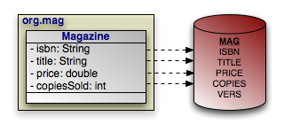 |
Example 12.2. Retrieving Persistent Objects
Query query = em.createNativeQuery("SELECT ISBN, TITLE, PRICE, "
+ "VERS FROM MAG WHERE PRICE > 5 AND PRICE < 10", Magazine.class);
List<Magazine> results = (List<Magazine>) query.getResultList();
for (Magazine mag : results)
processMagazine(mag);
The query above works as advertised, but isn't very flexible. Let's update it to take in parameters for the minimum and maximum price, so we can reuse it to find magazines in any price range:
Example 12.3. SQL Query Parameters
Query query = em.createNativeQuery("SELECT ISBN, TITLE, PRICE, "
+ "VERS FROM MAG WHERE PRICE > ?1 AND PRICE < ?2", Magazine.class);
query.setParameter(1, 5d);
query.setParameter(2, 10d);
List<Magazine> results = (List<Magazine>) query.getResultList();
for (Magazine mag : results)
processMagazine(mag);
Like JDBC prepared statements, SQL queries represent parameters with question marks, but are followed by an integer to represent its index.
Table of Contents
Object-relational mapping is the process of mapping entities to relational database tables. In JPA, you perform object/relational mapping through mapping metadata. Mapping metadata uses annotations to describe how to link your object model to your relational model.
Note
OpenJPA offers tools to automate mapping and schema creation. See Chapter 7, Mapping in the Reference Guide.
Throughout this chapter, we will draw on the object model introduced in Chapter 5, Metadata . We present that model again below. As we discuss various aspects of mapping metadata, we will zoom in on specific areas of the model and show how we map the object layer to the relational layer.
All mapping metadata is optional. Where no explicit mapping metadata is given, JPA uses the defaults defined by the specification. As we present each mapping throughout this chapter, we also describe the defaults that apply when the mapping is absent.
The Table annotation specifies the table for an entity
class. If you omit the Table annotation, base entity
classes default to a table with their unqualified class name. The default table
of an entity subclass depends on the inheritance strategy, as you will see in
Section 6, “
Inheritance
”.
Tables have the following properties:
String name: The name of the table. Defaults to the unqualified entity class name.String schema: The table's schema. If you do not name a schema, JPA uses the default schema for the database connection.String catalog: The table's catalog. If you do not name a catalog, JPA uses the default catalog for the database connection.UniqueConstraint[] uniqueConstraints: An array of unique constraints to place on the table. We cover unique constraints below. Defaults to an empty array.
The equivalent XML element is table. It has the following
attributes, which correspond to the annotation properties above:
nameschemacatalog
The table element also accepts nested
unique-constraint elements representing unique constraints. We will
detail unique constraints shortly.
Sometimes, some of the fields in a class are mapped to secondary tables. In that
case, use the class' Table annotation to name what you
consider the class' primary table. Later, we will see how to map certain fields
to other tables.
The example below maps classes to tables to separate schemas. The
CONTRACT, SUB, and LINE_ITEM
tables are in the CNTRCT schema; all other tables
are in the default schema.
Example 13.1. Mapping Classes
package org.mag;
@Entity
@IdClass(Magazine.MagazineId.class)
@Table(name="MAG")
public class Magazine {
...
public static class MagazineId {
...
}
}
@Entity
@Table(name="ART")
public class Article {
...
}
package org.mag.pub;
@Entity
@Table(name="COMP")
public class Company {
...
}
@Entity
@Table(name="AUTH")
public class Author {
...
}
@Embeddable
public class Address {
...
}
package org.mag.subscribe;
@MappedSuperclass
public abstract class Document {
...
}
@Entity
@Table(schema="CNTRCT")
public class Contract
extends Document {
...
}
@Entity
@Table(name="SUB", schema="CNTRCT")
public class Subscription {
...
@Entity
@Table(name="LINE_ITEM", schema="CNTRCT")
public static class LineItem
extends Contract {
...
}
}
@Entity(name="Lifetime")
public class LifetimeSubscription
extends Subscription {
...
}
@Entity(name="Trial")
public class TrialSubscription
extends Subscription {
...
}
The same mapping information expressed in XML:
<entity-mappings xmlns="http://java.sun.com/xml/ns/persistence/orm"
xmlns:xsi="http://www.w3.org/2001/XMLSchema-instance"
xsi:schemaLocation="http://java.sun.com/xml/ns/persistence/orm orm_1_0.xsd"
version="1.0">
<mapped-superclass class="org.mag.subscribe.Document">
...
</mapped-superclass>
<entity class="org.mag.Magazine">
<table name="MAG"/>
<id-class="org.mag.Magazine.MagazineId"/>
...
</entity>
<entity class="org.mag.Article">
<table name="ART"/>
...
</entity>
<entity class="org.mag.pub.Company">
<table name="COMP"/>
...
</entity>
<entity class="org.mag.pub.Author">
<table name="AUTH"/>
...
</entity>
<entity class="org.mag.subcribe.Contract">
<table schema="CNTRCT"/>
...
</entity>
<entity class="org.mag.subcribe.Subscription">
<table name="SUB" schema="CNTRCT"/>
...
</entity>
<entity class="org.mag.subscribe.Subscription.LineItem">
<table name="LINE_ITEM" schema="CNTRCT"/>
...
</entity>
<entity class="org.mag.subscribe.LifetimeSubscription" name="Lifetime">
...
</entity>
<entity class="org.mag.subscribe.TrialSubscription" name="Trial">
...
</entity>
<embeddable class="org.mag.pub.Address">
...
</embeddable>
</entity-mappings>
Unique constraints ensure that the data in a column or combination of columns is
unique for each row. A table's primary key, for example, functions as an
implicit unique constraint. In JPA, you represent other unique
constraints with an array of UniqueConstraint
annotations within the table annotation. The unique constraints you define are
used during table creation to generate the proper database constraints, and may
also be used at runtime to order INSERT, UPDATE
, and DELETE statements. For example, suppose there
is a unique constraint on the columns of field F. In the
same transaction, you remove an object A and persist a new
object B, both with the same F value. The
JPA runtime must ensure that the SQL deleting A
is sent to the database before the SQL inserting B to avoid a
unique constraint violation.
UniqueConstraint has these properties:
String name: The name of the constraint. OpenJPA will choose a name if you do not provide one, or will create an anonymous constraint.String[] columnNames: The names of the columns the constraint spans.
In XML, unique constraints are represented by nesting
unique-constraint elements within the table
element. Each unique-constraint element in turn nests
column-name text elements to enumerate the constraint's
columns.
Example 13.2. Defining a Unique Constraint
The following defines a unique constraint on the TITLE
column of the ART table:
@Entity
@Table(name="ART", uniqueConstraints=@UniqueConstraint(name="TITLE_CNSTR", columnNames="TITLE"))
public class Article {
...
}
The same metadata expressed in XML form:
<entity class="org.mag.Article">
<table name="ART">
<unique-constraint>
<name>TITLE_CNSTR</name>
<column-name>TITLE</column-name>
</unique-constraint>
</table>
...
</entity>
In the previous section, we saw that a UniqueConstraint
uses an array of column names. Field mappings, however, use full-fledged
Column annotations. Column annotations have the following
properties:
String columnDefinition: The database-specific column type name. This property is only used by vendors that support creating tables from your mapping metadata. During table creation, the vendor will use the value of thecolumnDefinitionas the declared column type. If nocolumnDefinitionis given, the vendor will choose an appropriate default based on the field type combined with the column's length, precision, and scale.int length: The column length. This property is typically only used during table creation, though some vendors might use it to validate data before flushing.CHARandVARCHARcolumns typically default to a length of 255; other column types use the database default.int precision: The precision of a numeric column. This property is often used in conjunction withscaleto form the proper column type name during table creation.int scale: The number of decimal digits a numeric column can hold. This property is often used in conjunction withprecisionto form the proper column type name during table creation.boolean nullable: Whether the column can store null values. Vendors may use this property both for table creation and at runtime; however, it is never required. Defaults totrue.boolean insertable: By setting this property tofalse, you can omit the column from SQLINSERTstatements. Defaults totrue.boolean updatable: By setting this property tofalse, you can omit the column from SQLUPDATEstatements. Defaults totrue.String table: Sometimes you will need to map fields to tables other than the primary table. This property allows you specify that the column resides in a secondary table. We will see how to map fields to secondary tables later in the chapter.
The equivalent XML element is column. This element has
attributes that are exactly equivalent to the Column
annotation's properties described above:
namecolumn-definitionlengthprecisionscaleinsertableupdatabletable
With our new knowledge of columns, we can map the identity fields of our
entities. The diagram below now includes primary key columns for our model's
tables. The primary key column for Author uses
nonstandard type INTEGER64, and the Magazine.isbn
field is mapped to a VARCHAR(9) column instead of
a VARCHAR(255) column, which is the default for string
fields. We do not need to point out either one of these oddities to the JPA
implementation for runtime use. If, however, we want to use the JPA
implementation to create our tables for us, it needs to know about
any desired non-default column types. Therefore, the example following the
diagram includes this data in its encoding of our mappings.
| 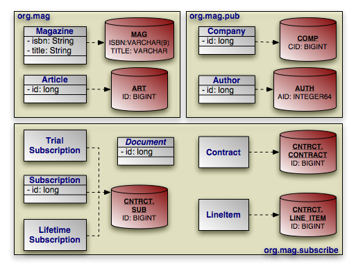 |
Note that many of our identity fields do not need to specify column information, because they use the default column name and type.
Example 13.3. Identity Mapping
package org.mag;
@Entity
@IdClass(Magazine.MagazineId.class)
@Table(name="MAG")
public class Magazine {
@Column(length=9)
@Id private String isbn;
@Id private String title;
...
public static class MagazineId {
...
}
}
@Entity
@Table(name="ART", uniqueConstraints=@Unique(columnNames="TITLE"))
public class Article {
@Id private long id;
...
}
package org.mag.pub;
@Entity
@Table(name="COMP")
public class Company {
@Column(name="CID")
@Id private long id;
...
}
@Entity
@Table(name="AUTH")
public class Author {
@Column(name="AID", columnDefinition="INTEGER64")
@Id private long id;
...
}
@Embeddable
public class Address {
...
}
package org.mag.subscribe;
@MappedSuperclass
public abstract class Document {
@Id
@GeneratedValue(strategy=GenerationType.IDENTITY)
private long id;
...
}
@Entity
@Table(schema="CNTRCT")
public class Contract
extends Document {
...
}
@Entity
@Table(name="SUB", schema="CNTRCT")
public class Subscription {
@Id private long id;
...
@Entity
@Table(name="LINE_ITEM", schema="CNTRCT")
public static class LineItem
extends Contract {
...
}
}
@Entity(name="Lifetime")
public class LifetimeSubscription
extends Subscription {
...
}
@Entity(name="Trial")
public class TrialSubscription
extends Subscription {
...
}
The same metadata for Magazine and Company
expressed in XML form:
<entity class="org.mag.Magazine">
<id-class class="org.mag.Magazine.Magazine.MagazineId"/>
<table name="MAG"/>
<attributes>
<id name="isbn">
<column length="9"/>
</id>
<id name="title"/>
...
</attributes>
</entity>
<entity class="org.mag.pub.Company">
<table name="COMP"/>
<attributes>
<id name="id">
<column name="CID"/>
</id>
...
</attributes>
</entity>
One aspect of identity mapping not covered in the previous section is JPA's ability to automatically assign a value to your numeric identity fields using generators. We discussed the available generator types in Section 2.3, “ Id ”. Now we show you how to define named generators.
Most databases allow you to create native sequences. These are database
structures that generate increasing numeric values. The
SequenceGenerator annotation represents a named database sequence.
You can place the annotation on any package, entity class, persistent field
declaration (if your entity uses field access), or getter method for a
persistent property (if your entity uses property access).
SequenceGenerator has the following properties:
String sequenceName: The name of the database sequence. If you do not specify the database sequence, your vendor will choose an appropriate default.int allocationSize: Some databases can pre-allocate groups of sequence values. This allows the database to service sequence requests from cache, rather than physically incrementing the sequence with every request. This allocation size defaults to 50.String schema: The sequence's schema. If you do not name a schema, JPA uses the default schema for the database connection.
Note
OpenJPA allows you to use one of OpenJPA's built-in generator
implementations in the sequenceName property. You can also
set the sequenceName to system to use the
system sequence defined by the
openjpa.Sequence configuration property. See the Reference
Guide's Section 6, “
Generators
” for details.
The XML element for a sequence generator is sequence-generator
. Its attributes mirror the above annotation's properties:
namesequence-nameinitial-valueallocation-sizeschema
To use a sequence generator, set your GeneratedValue
annotation's strategy property to
GenerationType.SEQUENCE, and its generator property
to the sequence generator's declared name. Or equivalently, set your
generated-value XML element's strategy attribute to
SEQUENCE and its generator attribute to
the generator name.
A TableGenerator refers to a database table used to store
increasing sequence values for one or more entities. As with
SequenceGenerator, you can place the TableGenerator
annotation on any package, entity class, persistent field
declaration (if your entity uses field access), or getter method for a
persistent property (if your entity uses property access).
TableGenerator has the following properties:
String table: The name of the generator table. If left unspecified, your vendor will choose a default table.String pkColumnName: The name of the primary key column in the generator table. If unspecified, your implementation will choose a default.String valueColumnName: The name of the column that holds the sequence value. If unspecified, your implementation will choose a default.String pkColumnValue: The primary key column value of the row in the generator table holding this sequence value. You can use the same generator table for multiple logical sequences by supplying differentpkColumnValues. If you do not specify a value, the implementation will supply a default.int initialValue: The value of the generator's first issued number.int allocationSize: The number of values to allocate in memory for each trip to the database. Allocating values in memory allows the JPA runtime to avoid accessing the database for every sequence request. This number also specifies the amount that the sequence value is incremented each time the generator table is updated. Defaults to 50.
The XML equivalent is the table-generator element. This
element's attributes correspond exactly to the above annotation's properties:
nametableschemacatalogpk-column-namevalue-column-namepk-column-valueinitial-valueallocation-size
To use a table generator, set your GeneratedValue
annotation's strategy property to
GenerationType.TABLE, and its generator property to
the table generator's declared name. Or equivalently, set your
generated-value XML element's strategy attribute to
TABLE and its generator attribute to the
generator name.
Let's take advantage of generators in our entity model. Here are our updated mappings.
Example 13.4. Generator Mapping
package org.mag;
@Entity
@IdClass(Magazine.MagazineId.class)
@Table(name="MAG")
public class Magazine {
@Column(length=9)
@Id private String isbn;
@Id private String title;
...
public static class MagazineId {
...
}
}
@Entity
@Table(name="ART", uniqueConstraints=@Unique(columnNames="TITLE"))
@SequenceGenerator(name="ArticleSeq", sequenceName="ART_SEQ")
public class Article {
@Id
@GeneratedValue(strategy=GenerationType.SEQUENCE, generator="ArticleSeq")
private long id;
...
}
package org.mag.pub;
@Entity
@Table(name="COMP")
public class Company {
@Column(name="CID")
@Id private long id;
...
}
@Entity
@Table(name="AUTH")
public class Author {
@Id
@GeneratedValue(strategy=GenerationType.TABLE, generator="AuthorGen")
@TableGenerator(name="AuthorGen", table="AUTH_GEN", pkColumnName="PK",
valueColumnName="AID")
@Column(name="AID", columnDefinition="INTEGER64")
private long id;
...
}
@Embeddable
public class Address {
...
}
package org.mag.subscribe;
@MappedSuperclass
public abstract class Document {
@Id
@GeneratedValue(generate=GenerationType.IDENTITY)
private long id;
...
}
@Entity
@Table(schema="CNTRCT")
public class Contract
extends Document {
...
}
@Entity
@Table(name="SUB", schema="CNTRCT")
public class Subscription {
@Id
@GeneratedValue(strategy=GenerationType.IDENTITY)
private long id;
...
@Entity
@Table(name="LINE_ITEM", schema="CNTRCT")
public static class LineItem
extends Contract {
...
}
}
@Entity(name="Lifetime")
public class LifetimeSubscription
extends Subscription {
...
}
@Entity(name="Trial")
public class TrialSubscription
extends Subscription {
...
}
The same metadata for Article and Author
expressed in XML form:
<entity class="org.mag.Article">
<table name="ART">
<unique-constraint>
<column-name>TITLE</column-name>
</unique-constraint>
</table>
<sequence-generator name="ArticleSeq" sequence-name="ART_SEQ"/>
<attributes>
<id name="id">
<generated-value strategy="SEQUENCE" generator="ArticleSeq"/>
</id>
...
</attributes>
</entity>
<entity class="org.mag.pub.Author">
<table name="AUTH"/>
<attributes>
<id name="id">
<column name="AID" column-definition="INTEGER64"/>
<generated-value strategy="TABLE" generator="AuthorGen"/>
<table-generator name="AuthorGen" table="AUTH_GEN"
pk-column-name="PK" value-column-name="AID"/>
</id>
...
</attributes>
</entity>
In the 1990's programmers coined the term impedance mismatch to describe the difficulties in bridging the object and relational worlds. Perhaps no feature of object modeling highlights the impedance mismatch better than inheritance. There is no natural, efficient way to represent an inheritance relationship in a relational database.
Luckily, JPA gives you a choice of inheritance strategies, making
the best of a bad situation. The base entity class defines the inheritance
strategy for the hierarchy with the Inheritance
annotation. Inheritance has the following properties:
InheritanceType strategy: Enum value declaring the inheritance strategy for the hierarchy. Defaults toInheritanceType.SINGLE_TABLE. We detail each of the available strategies below.
The corresponding XML element is inheritance, which has a
single attribute:
strategy: One ofSINGLE_TABLE,JOINED, orTABLE_PER_CLASS.
The following sections describe JPA's standard inheritance strategies.
Note
OpenJPA allows you to vary your inheritance strategy for each class, rather than forcing a single strategy per inheritance hierarchy. See Section 7, “ Additional JPA Mappings ” in the Reference Guide for details.
The InheritanceType.SINGLE_TABLE strategy maps all classes in
the hierarchy to the base class' table.
| 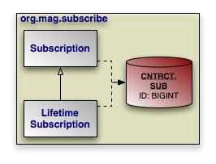 |
In our model, Subscription is mapped to the
CNTRCT.SUB table. LifetimeSubscription, which
extends Subscription, adds its field data to this table
as well.
Example 13.5. Single Table Mapping
@Entity
@Table(name="SUB", schema="CNTRCT")
@Inheritance(strategy=InheritanceType.SINGLE_TABLE)
public class Subscription {
...
}
@Entity(name="Lifetime")
public class LifetimeSubscription
extends Subscription {
...
}
The same metadata expressed in XML form:
<entity class="org.mag.subcribe.Subscription">
<table name="SUB" schema="CNTRCT"/>
<inheritance strategy="SINGLE_TABLE"/>
...
</entity>
<entity class="org.mag.subscribe.LifetimeSubscription">
...
</entity>
Single table inheritance is the default strategy. Thus, we could omit the
@Inheritance annotation in the example above and get the same
result.
Single table inheritance mapping is the fastest of all inheritance models, since
it never requires a join to retrieve a persistent instance from the database.
Similarly, persisting or updating a persistent instance requires only a single
INSERT or UPDATE statement. Finally,
relations to any class within a single table inheritance hierarchy are just as
efficient as relations to a base class.
The larger the inheritance model gets, the "wider" the mapped table gets, in that for every field in the entire inheritance hierarchy, a column must exist in the mapped table. This may have undesirable consequence on the database size, since a wide or deep inheritance hierarchy will result in tables with many mostly-empty columns.
The InheritanceType.JOINED strategy uses a different table
for each class in the hierarchy. Each table only includes state declared in its
class. Thus to load a subclass instance, the JPA implementation must
read from the subclass table as well as the table of each ancestor class, up to
the base entity class.
| 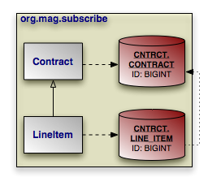 |
PrimaryKeyJoinColumn annotations tell the JPA
implementation how to join each subclass table record to the corresponding
record in its direct superclass table. In our model, the LINE_ITEM.ID
column joins to the CONTRACT.ID column. The
PrimaryKeyJoinColumn annotation has the following
properties:
String name: The name of the subclass table column. When there is a single identity field, defaults to that field's column name.String referencedColumnName: The name of the superclass table column this subclass table column joins to. When there is a single identity field, defaults to that field's column name.String columnDefinition: This property has the same meaning as thecolumnDefinitionproperty on theColumnannotation, described in Section 3, “ Column ”.
The XML equivalent is the primary-key-join-column element.
Its attributes mirror the annotation properties described above:
namereferenced-column-namecolumn-definition
The example below shows how we use InheritanceTable.JOINED
and a primary key join column to map our sample model according to the diagram
above. Note that a primary key join column is not strictly needed, because there
is only one identity column, and the subclass table column has the same name as
the superclass table column. In this situation, the defaults suffice. However,
we include the primary key join column for illustrative purposes.
Example 13.6. Joined Subclass Tables
@Entity
@Table(schema="CNTRCT")
@Inheritance(strategy=InheritanceType.JOINED)
public class Contract
extends Document {
...
}
public class Subscription {
...
@Entity
@Table(name="LINE_ITEM", schema="CNTRCT")
@PrimaryKeyJoinColumn(name="ID", referencedColumnName="ID")
public static class LineItem
extends Contract {
...
}
}
The same metadata expressed in XML form:
<entity class="org.mag.subcribe.Contract">
<table schema="CNTRCT"/>
<inheritance strategy="JOINED"/>
...
</entity>
<entity class="org.mag.subscribe.Subscription.LineItem">
<table name="LINE_ITEM" schema="CNTRCT"/>
<primary-key-join-column name="ID" referenced-column-name="PK"/>
...
</entity>
When there are multiple identity columns, you must define multiple
PrimaryKeyJoinColumns using the aptly-named
PrimaryKeyJoinColumns annotation. This annotation's value is an
array of PrimaryKeyJoinColumn s. We could rewrite
LineItem's mapping as:
@Entity
@Table(name="LINE_ITEM", schema="CNTRCT")
@PrimaryKeyJoinColumns({
@PrimaryKeyJoinColumn(name="ID", referencedColumnName="ID")
})
public static class LineItem
extends Contract {
...
}
In XML, simply list as many primary-key-join-column elements
as necessary.
The joined strategy has the following advantages:
Using joined subclass tables results in the most normalized database schema, meaning the schema with the least spurious or redundant data.
As more subclasses are added to the data model over time, the only schema modification that needs to be made is the addition of corresponding subclass tables in the database (rather than having to change the structure of existing tables).
Relations to a base class using this strategy can be loaded through standard joins and can use standard foreign keys, as opposed to the machinations required to load polymorphic relations to table-per-class base types, described below.
Aside from certain uses of the table-per-class strategy described below, the
joined strategy is often the slowest of the inheritance models. Retrieving any
subclass requires one or more database joins, and storing subclasses requires
multiple INSERT or UPDATE statements. This
is only the case when persistence operations are performed on subclasses; if
most operations are performed on the least-derived persistent superclass, then
this mapping is very fast.
Note
When executing a select against a hierarchy that uses joined subclass table inheritance, you must consider how to load subclass state. Section 8, “ Eager Fetching ” in the Reference Guide describes OpenJPA's options for efficient data loading.
Like the JOINED strategy, the
InheritanceType.TABLE_PER_CLASS strategy uses a different table for
each class in the hierarchy. Unlike the JOINED strategy,
however, each table includes all state for an instance of the corresponding
class. Thus to load a subclass instance, the JPA implementation must
only read from the subclass table; it does not need to join to superclass
tables.
| 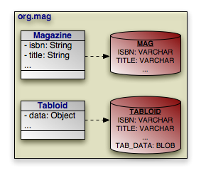 |
Suppose that our sample model's Magazine class has a
subclass Tabloid. The classes are mapped using the
table-per-class strategy, as in the diagram above. In a table-per-class mapping,
Magazine's table MAG contains all
state declared in the base Magazine class.
Tabloid maps to a separate table, TABLOID. This
table contains not only the state declared in the Tabloid
subclass, but all the base class state from Magazine as
well. Thus the TABLOID table would contain columns for
isbn, title, and other
Magazine fields. These columns would default to the names used in
Magazine's mapping metadata.
Section 8.3, “
Embedded Mapping
” will show you how to use
AttributeOverrides and AssociationOverride
s to override superclass field mappings.
Example 13.7. Table Per Class Mapping
@Entity
@Table(name="MAG")
@Inheritance(strategy=InheritanceType.TABLE_PER_CLASS)
public class Magazine {
...
}
@Entity
@Table(name="TABLOID")
public class Tabloid
extends Magazine {
...
}
And the same classes in XML:
<entity class="org.mag.Magazine">
<table name="MAG"/>
<inheritance strategy="TABLE_PER_CLASS"/>
...
</entity>
<entity class="org.mag.Tabloid">
<table name="TABLOID"/>
...
</entity>
The table-per-class strategy is very efficient when operating on instances of a known class. Under these conditions, the strategy never requires joining to superclass or subclass tables. Reads, joins, inserts, updates, and deletes are all efficient in the absence of polymorphic behavior. Also, as in the joined strategy, adding additional classes to the hierarchy does not require modifying existing class tables.
Polymorphic relations to non-leaf classes in a table-per-class hierarchy have
many limitations. When the concrete subclass is not known, the related object
could be in any of the subclass tables, making joins through the relation
impossible. This ambiguity also affects identity lookups and queries; these
operations require multiple SQL SELECTs (one for each
possible subclass), or a complex UNION.
Note
Section 8.1, “ Table Per Class ” in the Reference Guide describes the limitations OpenJPA places on table-per-class mapping.
Now that we have covered JPA's inheritance strategies, we can update our mapping document with inheritance information. Here is the complete model:
| 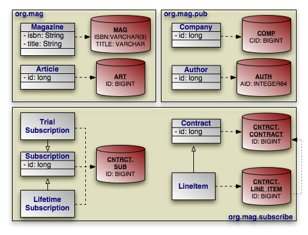 |
And here is the corresponding mapping metadata:
Example 13.8. Inheritance Mapping
package org.mag;
@Entity
@IdClass(Magazine.MagazineId.class)
@Table(name="MAG")
public class Magazine {
@Column(length=9)
@Id private String isbn;
@Id private String title;
...
public static class MagazineId {
...
}
}
@Entity
@Table(name="ART", uniqueConstraints=@Unique(columnNames="TITLE"))
@SequenceGenerator(name="ArticleSeq", sequenceName="ART_SEQ")
public class Article {
@Id
@GeneratedValue(strategy=GenerationType.SEQUENCE, generator="ArticleSeq")
private long id;
...
}
package org.mag.pub;
@Entity
@Table(name="COMP")
public class Company {
@Column(name="CID")
@Id private long id;
...
}
@Entity
@Table(name="AUTH")
public class Author {
@Id
@GeneratedValue(strategy=GenerationType.TABLE, generator="AuthorGen")
@TableGenerator(name="AuthorGen", table="AUTH_GEN", pkColumnName="PK",
valueColumnName="AID")
@Column(name="AID", columnDefinition="INTEGER64")
private long id;
...
}
@Embeddable
public class Address {
...
}
package org.mag.subscribe;
@MappedSuperclass
public abstract class Document {
@Id
@GeneratedValue(strategy=GenerationType.IDENTITY)
private long id;
...
}
@Entity
@Table(schema="CNTRCT")
@Inheritance(strategy=InheritanceType.JOINED)
public class Contract
extends Document {
...
}
@Entity
@Table(name="SUB", schema="CNTRCT")
@Inheritance(strategy=InheritanceType.SINGLE_TABLE)
public class Subscription {
@Id
@GeneratedValue(strategy=GenerationType.IDENTITY)
private long id;
...
@Entity
@Table(name="LINE_ITEM", schema="CNTRCT")
@PrimaryKeyJoinColumn(name="ID", referencedColumnName="ID")
public static class LineItem
extends Contract {
...
}
}
@Entity(name="Lifetime")
public class LifetimeSubscription
extends Subscription {
...
}
@Entity(name="Trial")
public class TrialSubscription
extends Subscription {
...
}
The same metadata expressed in XML form:
<entity-mappings xmlns="http://java.sun.com/xml/ns/persistence/orm"
xmlns:xsi="http://www.w3.org/2001/XMLSchema-instance"
xsi:schemaLocation="http://java.sun.com/xml/ns/persistence/orm orm_1_0.xsd"
version="1.0">
<mapped-superclass class="org.mag.subscribe.Document">
<attributes>
<id name="id">
<generated-value strategy="IDENTITY"/>
</id>
...
</attributes>
</mapped-superclass>
<entity class="org.mag.Magazine">
<table name="MAG"/>
<id-class="org.mag.Magazine.MagazineId"/>
<attributes>
<id name="isbn">
<column length="9"/>
</id>
<id name="title"/>
...
</attributes>
</entity>
<entity class="org.mag.Article">
<table name="ART">
<unique-constraint>
<column-name>TITLE</column-name>
</unique-constraint>
</table>
<sequence-generator name="ArticleSeq" sequence-name="ART_SEQ"/>
<attributes>
<id name="id">
<generated-value strategy="SEQUENCE" generator="ArticleSeq"/>
</id>
...
</attributes>
</entity>
<entity class="org.mag.pub.Company">
<table name="COMP"/>
<attributes>
<id name="id">
<column name="CID"/>
</id>
...
</attributes>
</entity>
<entity class="org.mag.pub.Author">
<table name="AUTH"/>
<attributes>
<id name="id">
<column name="AID" column-definition="INTEGER64"/>
<generated-value strategy="TABLE" generator="AuthorGen"/>
<table-generator name="AuthorGen" table="AUTH_GEN"
pk-column-name="PK" value-column-name="AID"/>
</id>
...
</attributes>
</entity>
<entity class="org.mag.subcribe.Contract">
<table schema="CNTRCT"/>
<inheritance strategy="JOINED"/>
<attributes>
...
</attributes>
</entity>
<entity class="org.mag.subcribe.Subscription">
<table name="SUB" schema="CNTRCT"/>
<inheritance strategy="SINGLE_TABLE"/>
<attributes>
<id name="id">
<generated-value strategy="IDENTITY"/>
</id>
...
</attributes>
</entity>
<entity class="org.mag.subscribe.Subscription.LineItem">
<table name="LINE_ITEM" schema="CNTRCT"/>
<primary-key-join-column name="ID" referenced-column-name="PK"/>
...
</entity>
<entity class="org.mag.subscribe.LifetimeSubscription" name="Lifetime">
...
</entity>
<entity class="org.mag.subscribe.TrialSubscription" name="Trial">
...
</entity>
</entity-mappings>
The single table inheritance strategy results in a single table containing records for two or more different classes in an inheritance hierarchy. Similarly, using the joined strategy results in the superclass table holding records for superclass instances as well as for the superclass state of subclass instances. When selecting data, JPA needs a way to differentiate a row representing an object of one class from a row representing an object of another. That is the job of the discriminator column.
The discriminator column is always in the table of the base entity. It holds a different value for records of each class, allowing the JPA runtime to determine what class of object each row represents.
The DiscriminatorColumn annotation represents a
discriminator column. It has these properties:
String name: The column name. Defaults toDTYPE.length: For string discriminator values, the length of the column. Defaults to 31.String columnDefinition: This property has the same meaning as thecolumnDefinitionproperty on theColumnannotation, described in Section 3, “ Column ”.DiscriminatorType discriminatorType: Enum value declaring the discriminator strategy of the hierarchy.
The corresponding XML element is discriminator-column. Its
attributes mirror the annotation properties above:
namelengthcolumn-definitiondiscriminator-type: One ofSTRING,CHAR, orINTEGER.
The DiscriminatorValue annotation specifies the
discriminator value for each class. Though this annotation's value is always a
string, the implementation will parse it according to the
DiscriminatorColumn's discriminatorType property
above. The type defaults to DiscriminatorType.STRING, but
may be DiscriminatorType.CHAR or
DiscriminatorType.INTEGER. If you do not specify a
DiscriminatorValue, the provider will choose an appropriate
default.
The corresponding XML element is discriminator-value. The
text within this element is parsed as the discriminator value.
Note
OpenJPA assumes your model employs a discriminator column if any of the following are true:
The base entity explicitly declares an inheritance type of
SINGLE_TABLE.The base entity sets a discriminator value.
The base entity declares a discriminator column.
Only SINGLE_TABLE inheritance hierarchies require a
discriminator column and values. JOINED hierarchies can use
a discriminator to make some operations more efficient, but do not require one.
TABLE_PER_CLASS hierarchies have no use for a discriminator.
OpenJPA defines additional discriminator strategies; see Section 7, “ Additional JPA Mappings ” in the Reference Guide for details. OpenJPA also supports final entity classes. OpenJPA does not use a discriminator on final classes.
We can now translate our newfound knowledge of JPA discriminators into concrete JPA mappings. We first extend our diagram with discriminator columns:
| 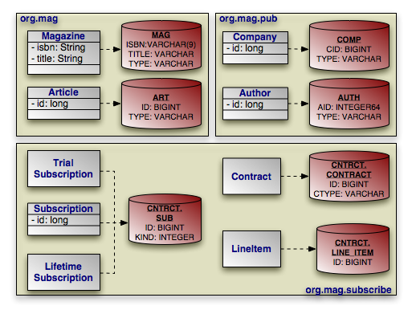 |
Next, we present the updated mapping document. Notice that in this version, we
have removed explicit inheritance annotations when the defaults sufficed. Also,
notice that entities using the default DTYPE discriminator
column mapping do not need an explicit DiscriminatorColumn
annotation.
Example 13.9. Discriminator Mapping
package org.mag;
@Entity
@IdClass(Magazine.MagazineId.class)
@Table(name="MAG")
@DiscriminatorValue("Mag")
public class Magazine {
@Column(length=9)
@Id private String isbn;
@Id private String title;
...
public static class MagazineId {
...
}
}
@Entity
@Table(name="ART", uniqueConstraints=@Unique(columnNames="TITLE"))
@SequenceGenerator(name="ArticleSeq", sequenceName="ART_SEQ")
public class Article {
@Id
@GeneratedValue(strategy=GenerationType.SEQUENCE, generator="ArticleSeq")
private long id;
...
}
package org.mag.pub;
@Entity
@Table(name="COMP")
public class Company {
@Column(name="CID")
@Id private long id;
...
}
@Entity
@Table(name="AUTH")
public class Author {
@Id
@GeneratedValue(strategy=GenerationType.TABLE, generator="AuthorGen")
@TableGenerator(name="AuthorGen", table="AUTH_GEN", pkColumnName="PK",
valueColumnName="AID")
@Column(name="AID", columnDefinition="INTEGER64")
private long id;
...
}
@Embeddable
public class Address {
...
}
package org.mag.subscribe;
@MappedSuperclass
public abstract class Document {
@Id
@GeneratedValue(strategy=GenerationType.IDENTITY)
private long id;
...
}
@Entity
@Table(schema="CNTRCT")
@Inheritance(strategy=InheritanceType.JOINED)
@DiscriminatorColumn(name="CTYPE")
public class Contract
extends Document {
...
}
@Entity
@Table(name="SUB", schema="CNTRCT")
@DiscriminatorColumn(name="KIND", discriminatorType=DiscriminatorType.INTEGER)
@DiscriminatorValue("1")
public class Subscription {
@Id
@GeneratedValue(strategy=GenerationType.IDENTITY)
private long id;
...
@Entity
@Table(name="LINE_ITEM", schema="CNTRCT")
public static class LineItem
extends Contract {
...
}
}
@Entity(name="Lifetime")
@DiscriminatorValue("2")
public class LifetimeSubscription
extends Subscription {
...
}
@Entity(name="Trial")
@DiscriminatorValue("3")
public class TrialSubscription
extends Subscription {
...
}
The same metadata expressed in XML:
<entity-mappings xmlns="http://java.sun.com/xml/ns/persistence/orm"
xmlns:xsi="http://www.w3.org/2001/XMLSchema-instance"
xsi:schemaLocation="http://java.sun.com/xml/ns/persistence/orm orm_1_0.xsd"
version="1.0">
<mapped-superclass class="org.mag.subscribe.Document">
<attributes>
<id name="id">
<generated-value strategy="IDENTITY"/>
</id>
...
</attributes>
</mapped-superclass>
<entity class="org.mag.Magazine">
<table name="MAG"/>
<id-class="org.mag.Magazine.MagazineId"/>
<discriminator-value>Mag</discriminator-value>
<attributes>
<id name="isbn">
<column length="9"/>
</id>
<id name="title"/>
...
</attributes>
</entity>
<entity class="org.mag.Article">
<table name="ART">
<unique-constraint>
<column-name>TITLE</column-name>
</unique-constraint>
</table>
<sequence-generator name="ArticleSeq" sequence-name="ART_SEQ"/>
<attributes>
<id name="id">
<generated-value strategy="SEQUENCE" generator="ArticleSeq"/>
</id>
...
</attributes>
</entity>
<entity class="org.mag.pub.Company">
<table name="COMP"/>
<attributes>
<id name="id">
<column name="CID"/>
</id>
...
</attributes>
</entity>
<entity class="org.mag.pub.Author">
<table name="AUTH"/>
<attributes>
<id name="id">
<column name="AID" column-definition="INTEGER64"/>
<generated-value strategy="TABLE" generator="AuthorGen"/>
<table-generator name="AuthorGen" table="AUTH_GEN"
pk-column-name="PK" value-column-name="AID"/>
</id>
...
</attributes>
</entity>
<entity class="org.mag.subcribe.Contract">
<table schema="CNTRCT"/>
<inheritance strategy="JOINED"/>
<discriminator-column name="CTYPE"/>
<attributes>
...
</attributes>
</entity>
<entity class="org.mag.subcribe.Subscription">
<table name="SUB" schema="CNTRCT"/>
<inheritance strategy="SINGLE_TABLE"/>
<discriminator-value>1</discriminator-value>
<discriminator-column name="KIND" discriminator-type="INTEGER"/>
<attributes>
<id name="id">
<generated-value strategy="IDENTITY"/>
</id>
...
</attributes>
</entity>
<entity class="org.mag.subscribe.Subscription.LineItem">
<table name="LINE_ITEM" schema="CNTRCT"/>
<primary-key-join-column name="ID" referenced-column-name="PK"/>
...
</entity>
<entity class="org.mag.subscribe.LifetimeSubscription" name="Lifetime">
<discriminator-value>2</discriminator-value>
...
</entity>
<entity class="org.mag.subscribe.TrialSubscription" name="Trial">
<discriminator-value>3</discriminator-value>
...
</entity>
</entity-mappings>
The following sections enumerate the myriad of field mappings JPA supports. JPA augments the persistence metadata covered in Chapter 5, Metadata with many new object-relational annotations. As we explore the library of standard mappings, we introduce each of these enhancements in context.
Note
OpenJPA supports many additional field types, and allows you to create custom mappings for unsupported field types or database schemas. See the Reference Guide's Chapter 7, Mapping for complete coverage of OpenJPA's mapping capabilities.
A basic field mapping stores the field value directly into a database column. The following field metadata types use basic mapping. These types were defined in Section 2, “ Field and Property Metadata ”.
In fact, you have already seen examples of basic field mappings in this chapter
- the mapping of all identity fields in
Example 13.3, “
Identity Mapping
”. As you saw in that
section, to write a basic field mapping you use the Column
annotation to describe the column the field value is stored in. We
discussed the Column annotation in
Section 3, “
Column
”. Recall that the name of
the column defaults to the field name, and the type of the column defaults to an
appropriate type for the field type. These defaults allow you to sometimes omit
the annotation altogether.
Adding the Lob marker annotation to a basic field signals
that the data is to be stored as a LOB (Large OBject). If the field holds string
or character data, it will map to a CLOB (Character Large
OBject) database column. If the field holds any other data type, it will be
stored as binary data in a BLOB (Binary Large OBject) column.
The implementation will serialize the Java value if needed.
The equivalent XML element is lob, which has no children or
attributes.
Note
OpenJPA also supports LOB streaming. See Section 7.11, “ LOB Streaming ” in the Reference Guide for details.
You can apply the Enumerated annotation to your
Enum fields to control how they map to the database. The
Enumerated annotation's value one of the following
constants from the EnumType enum:
EnumType.ORDINAL: The default. The persistence implementation places the ordinal value of the enum in a numeric column. This is an efficient mapping, but may break if you rearrange the Java enum declaration.EnumType.STRING: Store the name of the enum value rather than the ordinal. This mapping uses aVARCHARcolumn rather than a numeric one.
The Enumerated annotation is optional. Any un-annotated
enumeration field defaults to ORDINAL mapping.
The corresponding XML element is enumerated. Its embedded
text must be one of STRING or ORIDINAL.
The Temporal annotation determines how the implementation
handles your basic java.util.Date and
java.util.Calendar fields at the JDBC level. The
Temporal annotation's value is a constant from the
TemporalType enum. Available values are:
TemporalType.TIMESTAMP: The default. Use JDBC's timestamp APIs to manipulate the column data.TemporalType.DATE: Use JDBC's SQL date APIs to manipulate the column data.TemporalType.TIME: Use JDBC's time APIs to manipulate the column data.
If the Temporal annotation is omitted, the implementation
will treat the data as a timestamp.
The corresponding XML element is temporal, whose text value
must be one of: TIME, DATE, or
TIMESTAMP.
Below we present an updated diagram of our model and its associated database
schema, followed by the corresponding mapping metadata. Note that the mapping
metadata relies on defaults where possible. Also note that as a mapped
superclass, Document can define mappings that will
automatically transfer to its subclass' tables. In
Section 8.3, “
Embedded Mapping
”, you will see how a subclass
can override its mapped superclass' mappings.
| 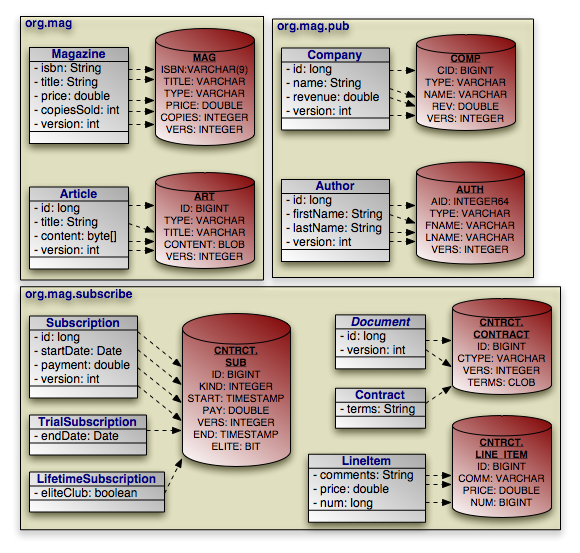 |
Example 13.10. Basic Field Mapping
package org.mag;
@Entity
@IdClass(Magazine.MagazineId.class)
@Table(name="MAG")
@DiscriminatorValue("Mag")
public class Magazine {
@Column(length=9)
@Id private String isbn;
@Id private String title;
@Column(name="VERS")
@Version private int version;
private String name;
private double price;
@Column(name="COPIES")
private int copiesSold;
...
public static class MagazineId {
...
}
}
@Entity
@Table(name="ART", uniqueConstraints=@Unique(columnNames="TITLE"))
@SequenceGenerator(name="ArticleSeq", sequenceName="ART_SEQ")
public class Article {
@Id
@GeneratedValue(strategy=GenerationType.SEQUENCE, generator="ArticleSeq")
private long id;
@Column(name="VERS")
@Version private int version;
private String title;
private byte[] content;
...
}
package org.mag.pub;
@Entity
@Table(name="COMP")
public class Company {
@Column(name="CID")
@Id private long id;
@Column(name="VERS")
@Version private int version;
private String name;
@Column(name="REV")
private double revenue;
...
}
@Entity
@Table(name="AUTH")
public class Author {
@Id
@GeneratedValue(strategy=GenerationType.TABLE, generator="AuthorGen")
@TableGenerator(name="AuthorGen", table="AUTH_GEN", pkColumnName="PK",
valueColumnName="AID")
@Column(name="AID", columnDefinition="INTEGER64")
private long id;
@Column(name="VERS")
@Version private int version;
@Column(name="FNAME")
private String firstName;
@Column(name="LNAME")
private String lastName;
...
}
@Embeddable
public class Address {
...
}
package org.mag.subscribe;
@MappedSuperclass
public abstract class Document {
@Id
@GeneratedValue(strategy=GenerationType.IDENTITY)
private long id;
@Column(name="VERS")
@Version private int version;
...
}
@Entity
@Table(schema="CNTRCT")
@Inheritance(strategy=InheritanceType.JOINED)
@DiscriminatorColumn(name="CTYPE")
public class Contract
extends Document {
@Lob
private String terms;
...
}
@Entity
@Table(name="SUB", schema="CNTRCT")
@DiscriminatorColumn(name="KIND", discriminatorType=DiscriminatorType.INTEGER)
@DiscriminatorValue("1")
public class Subscription {
@Id
@GeneratedValue(strategy=GenerationType.IDENTITY)
private long id;
@Column(name="VERS")
@Version private int version;
@Column(name="START")
private Date startDate;
@Column(name="PAY")
private double payment;
...
@Entity
@Table(name="LINE_ITEM", schema="CNTRCT")
public static class LineItem
extends Contract {
@Column(name="COMM")
private String comments;
private double price;
private long num;
...
}
}
@Entity(name="Lifetime")
@DiscriminatorValue("2")
public class LifetimeSubscription
extends Subscription {
@Basic(fetch=FetchType.LAZY)
@Column(name="ELITE")
private boolean getEliteClub() { ... }
public void setEliteClub(boolean elite) { ... }
...
}
@Entity(name="Trial")
@DiscriminatorValue("3")
public class TrialSubscription
extends Subscription {
@Column(name="END")
public Date getEndDate() { ... }
public void setEndDate(Date end) { ... }
...
}
The same metadata expressed in XML:
<entity-mappings xmlns="http://java.sun.com/xml/ns/persistence/orm"
xmlns:xsi="http://www.w3.org/2001/XMLSchema-instance"
xsi:schemaLocation="http://java.sun.com/xml/ns/persistence/orm orm_1_0.xsd"
version="1.0">
<mapped-superclass class="org.mag.subscribe.Document">
<attributes>
<id name="id">
<generated-value strategy="IDENTITY"/>
</id>
<version name="version">
<column name="VERS"/>
</version>
...
</attributes>
</mapped-superclass>
<entity class="org.mag.Magazine">
<table name="MAG"/>
<id-class="org.mag.Magazine.MagazineId"/>
<discriminator-value>Mag</discriminator-value>
<attributes>
<id name="isbn">
<column length="9"/>
</id>
<id name="title"/>
<basic name="name"/>
<basic name="price"/>
<basic name="copiesSold">
<column name="COPIES"/>
</basic>
<version name="version">
<column name="VERS"/>
</version>
...
</attributes>
</entity>
<entity class="org.mag.Article">
<table name="ART">
<unique-constraint>
<column-name>TITLE</column-name>
</unique-constraint>
</table>
<sequence-generator name="ArticleSeq", sequenceName="ART_SEQ"/>
<attributes>
<id name="id">
<generated-value strategy="SEQUENCE" generator="ArticleSeq"/>
</id>
<basic name="title"/>
<basic name="content"/>
<version name="version">
<column name="VERS"/>
</version>
...
</attributes>
</entity>
<entity class="org.mag.pub.Company">
<table name="COMP"/>
<attributes>
<id name="id">
<column name="CID"/>
</id>
<basic name="name"/>
<basic name="revenue">
<column name="REV"/>
</basic>
</attributes>
</entity>
<entity class="org.mag.pub.Author">
<table name="AUTH"/>
<attributes>
<id name="id">
<column name="AID" column-definition="INTEGER64"/>
<generated-value strategy="TABLE" generator="AuthorGen"/>
<table-generator name="AuthorGen" table="AUTH_GEN"
pk-column-name="PK" value-column-name="AID"/>
</id>
<basic name="firstName">
<column name="FNAME"/>
</basic>
<basic name="lastName">
<column name="LNAME"/>
</basic>
<version name="version">
<column name="VERS"/>
</version>
...
</attributes>
</entity>
<entity class="org.mag.subcribe.Contract">
<table schema="CNTRCT"/>
<inheritance strategy="JOINED"/>
<discriminator-column name="CTYPE"/>
<attributes>
<basic name="terms">
<lob/>
</basic>
...
</attributes>
</entity>
<entity class="org.mag.subcribe.Subscription">
<table name="SUB" schema="CNTRCT"/>
<inheritance strategy="SINGLE_TABLE"/>
<discriminator-value>1</discriminator-value>
<discriminator-column name="KIND" discriminator-type="INTEGER"/>
<attributes>
<id name="id">
<generated-value strategy="IDENTITY"/>
</id>
<basic name="payment">
<column name="PAY"/>
</basic>
<basic name="startDate">
<column name="START"/>
</basic>
<version name="version">
<column name="VERS"/>
</version>
...
</attributes>
</entity>
<entity class="org.mag.subscribe.Subscription.LineItem">
<table name="LINE_ITEM" schema="CNTRCT"/>
<primary-key-join-column name="ID" referenced-column-name="PK"/>
<attributes>
<basic name="comments">
<column name="COMM"/>
</basic>
<basic name="price"/>
<basic name="num"/>
...
</attributes>
</entity>
<entity class="org.mag.subscribe.LifetimeSubscription" name="Lifetime">
<discriminator-value>2</discriminator-value>
<attributes>
<basic name="eliteClub" fetch="LAZY">
<column name="ELITE"/>
</basic>
...
</attributes>
</entity>
<entity class="org.mag.subscribe.TrialSubscription" name="Trial">
<discriminator-value>3</discriminator-value>
<attributes>
<basic name="endDate">
<column name="END"/>
</basic>
...
</attributes>
</entity>
</entity-mappings>
Sometimes a logical record is spread over multiple database tables. JPA calls a class' declared table the primary table, and calls other tables that make up a logical record secondary tables. You can map any persistent field to a secondary table. Just write the standard field mapping, then perform these two additional steps:
Set the
tableattribute of each of the field's columns or join columns to the name of the secondary table.Define the secondary table on the entity class declaration.
You define secondary tables with the SecondaryTable
annotation. This annotation has all the properties of the Table
annotation covered in Section 1, “
Table
”
, plus a pkJoinColumns property.
The pkJoinColumns property is an array of
PrimaryKeyJoinColumns dictating how to join secondary table records
to their owning primary table records. Each PrimaryKeyJoinColumn
joins a secondary table column to a primary key column in the
primary table. See Section 6.2, “
Joined
”
above for coverage of PrimaryKeyJoinColumn's properties.
The corresponding XML element is secondary-table. This
element has all the attributes of the table element, but also
accepts nested primary-key-join-column elements.
In the following example, we move the Article.content field
we mapped in Section 8.1, “
Basic Mapping
” into a joined
secondary table, like so:
| 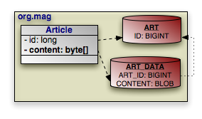 |
Example 13.11. Secondary Table Field Mapping
package org.mag;
@Entity
@Table(name="ART")
@SecondaryTable(name="ART_DATA",
pkJoinColumns=@PrimaryKeyJoinColumn(name="ART_ID", referencedColumnName="ID"))
public class Article {
@Id private long id;
@Column(table="ART_DATA")
private byte[] content;
...
}
And in XML:
<entity class="org.mag.Article">
<table name="ART"/>
<secondary-table name="ART_DATA">
<primary-key-join-column name="ART_ID" referenced-column-name="ID"/>
</secondary-table>
<attributes>
<id name="id"/>
<basic name="content">
<column table="ART_DATA"/>
</basic>
...
</attributes>
</entity>
Chapter 5, Metadata describes JPA's concept of embeddable objects. The field values of embedded objects are stored as part of the owning record, rather than as a separate database record. Thus, instead of mapping a relation to an embeddable object as a foreign key, you map all the fields of the embeddable instance to columns in the owning field's table.
| 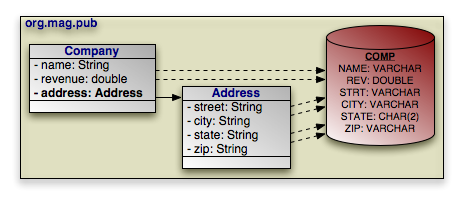 |
JPA defaults the embedded column names and descriptions to those of
the embeddable class' field mappings. The AttributeOverride
annotation overrides a basic embedded mapping. This annotation has
the following properties:
String name: The name of the embedded class' field being mapped to this class' table.Column column: The column defining the mapping of the embedded class' field to this class' table.
The corresponding XML element is attribute-override. It has
a single name attribute to name the field being overridden,
and a single column child element.
To declare multiple overrides, use the AttributeOverrides
annotation, whose value is an array of AttributeOverride
s. In XML, simply list multiple attribute-override elements
in succession.
To override a many to one or one to one relationship, use the
AssociationOverride annotation in place of
AttributeOverride. AssociationOverride has
the following properties:
String name: The name of the embedded class' field being mapped to this class' table.JoinColumn[] joinColumns: The foreign key columns joining to the related record.
The corresponding XML element is association-override. It
has a single name attribute to name the field being
overridden, and one or more join-column child elements.
To declare multiple relation overrides, use the AssociationOverrides
annotation, whose value is an array of
AssociationOverride s. In XML, simply list multiple
association-override elements in succession.
Example 13.12. Embedded Field Mapping
In this example, Company overrides the default mapping of
Address.street and Address.city. All
other embedded mappings are taken from the Address
embeddable class.
package org.mag.pub;
@Entity
@Table(name="COMP")
public class Company {
@Embedded
@AttributeOverrides({
@AttributeOverride(name="street", column=@Column(name="STRT")),
@AttributeOverride(name="city", column=@Column(name="ACITY"))
})
private Address address;
...
}
@Entity
@Table(name="AUTH")
public class Author {
// use all defaults from Address class mappings
private Address address;
...
}
@Embeddable
public class Address {
private String street;
private String city;
@Column(columnDefinition="CHAR(2)")
private String state;
private String zip;
}
The same metadata expressed in XML:
<entity class="org.mag.pub.Company">
<table name="COMP"/>
<attributes>
...
<embedded name="address">
<attribute-override name="street">
<column name="STRT"/>
</attribute-override>
<attribute-override name="city">
<column name="ACITY"/>
</attribute-override>
</embedded>
</attributes>
</entity>
<entity class="org.mag.pub.Author">
<table name="AUTH"/>
<attributes>
<embedded name="address">
<!-- use all defaults from Address -->
</embedded>
</attributes>
</entity>
<embeddable class="org.mag.pub.Address">
<attributes>
<basic name="street"/>
<basic name="city"/>
<basic name="state">
<column column-definition="CHAR(2)"/>
</basic>
<basic name="zip"/>
</attributes>
</embeddable>
You can also use attribute overrides on an entity class to override mappings
defined by its mapped superclass or table-per-class superclass. The example
below re-maps the Document.version field to the
Contract table's CVERSION column.
Example 13.13. Mapping Mapped Superclass Field
@MappedSuperclass
public abstract class Document {
@Column(name="VERS")
@Version private int version;
...
}
@Entity
@Table(schema="CNTRCT")
@Inheritance(strategy=InheritanceType.JOINED)
@DiscriminatorColumn(name="CTYPE")
@AttributeOverride(name="version", column=@Column(name="CVERSION"))
public class Contract
extends Document {
...
}
The same metadata expressed in XML form:
<mapped-superclass class="org.mag.subcribe.Document">
<attributes>
<version name="version">
<column name="VERS">
</version>
...
</attributes>
</mapped-superclass>
<entity class="org.mag.subcribe.Contract">
<table schema="CNTRCT"/>
<inheritance strategy="JOINED"/>
<discriminator-column name="CTYPE"/>
<attribute-override name="version">
<column name="CVERSION"/>
</attribute-override>
<attributes>
...
</attributes>
</entity>
A direct relation is a non-embedded persistent field that holds a reference to
another entity. many to one
and one to one metadata field
types are mapped as direct relations. Our model has three direct relations:
Magazine's publisher field is a direct
relation to a Company, Magazine's
coverArticle field is a direct relation to
Article, and the LineItem.magazine field is a
direct relation to a Magazine. Direct relations are
represented in the database by foreign key columns:
| 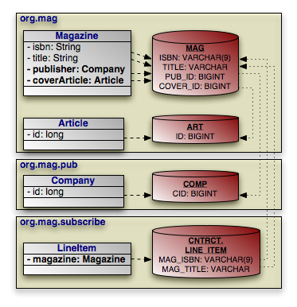 |
You typically map a direct relation with JoinColumn
annotations describing how the local foreign key columns join to the primary key
columns of the related record. The JoinColumn annotation
exposes the following properties:
String name: The name of the foreign key column. Defaults to the relation field name, plus an underscore, plus the name of the referenced primary key column.String referencedColumnName: The name of the primary key column being joined to. If there is only one identity field in the related entity class, the join column name defaults to the name of the identity field's column.boolean unique: Whether this column is guaranteed to hold unique values for all rows. Defaults to false.
JoinColumn also has the same nullable
, insertable, updatable,
columnDefinition, and table properties as the
Column annotation. See
Section 3, “
Column
” for details on these
properties.
The join-column element represents a join column in XML. Its
attributes mirror the above annotation's properties:
namereferenced-column-nameuniquenullableinsertableupdatablecolumn-definitiontable
When there are multiple columns involved in the join, as when a
LineItem references a Magazine in our model,
the JoinColumns annotation allows you to specify an array
of JoinColumn values. In XML, simply list multiple
join-column elements.
Note
OpenJPA supports many non-standard joins. See Section 6, “ Non-Standard Joins ” in the Reference Guide for details.
Example 13.14. Direct Relation Field Mapping
package org.mag;
@Table(name="AUTH")
public class Magazine {
@Column(length=9)
@Id private String isbn;
@Id private String title;
@OneToOne
@JoinColumn(name="COVER_ID" referencedColumnName="ID")
private Article coverArticle;
@ManyToOne
@JoinColumn(name="PUB_ID" referencedColumnName="CID")
private Company publisher;
...
}
@Table(name="ART")
public class Article {
@Id private long id;
...
}
package org.mag.pub;
@Table(name="COMP")
public class Company {
@Column(name="CID")
@Id private long id;
...
}
package org.mag.subscribe;
public class Subscription {
...
@Table(name="LINE_ITEM", schema="CNTRCT")
public static class LineItem
extends Contract {
@ManyToOne
@JoinColumns({
@JoinColumn(name="MAG_ISBN" referencedColumnName="ISBN"),
@JoinColumn(name="MAG_TITLE" referencedColumnName="TITLE")
})
private Magazine magazine;
...
}
}
The same metadata expressed in XML form:
<entity class="org.mag.Magazine">
<table name="MAG"/>
<id-class="org.mag.Magazine.MagazineId"/>
<attributes>
<id name="isbn">
<column length="9"/>
</id>
<id name="title"/>
<one-to-one name="coverArticle">
<join-column name="COVER_ID" referenced-column-name="ID"/>
</one-to-one>
<many-to-one name="publisher">
<join-column name="PUB_IC" referenced-column-name="CID"/>
</many-to-one>
...
</attributes>
</entity>
<entity class="org.mag.Article">
<table name="ART"/>
<attributes>
<id name="id"/>
...
</attributes>
</entity>
<entity class="org.mag.pub.Company">
<table name="COMP"/>
<attributes>
<id name="id">
<column name="CID"/>
</id>
...
</attributes>
</entity>
<entity class="org.mag.subscribe.Subscription.LineItem">
<table name="LINE_ITEM" schema="CNTRCT"/>
<primary-key-join-column name="ID" referenced-column-name="PK"/>
<attributes>
<many-to-one name="magazine">
<join-column name="MAG_ISBN" referenced-column-name="ISBN"/>
<join-column name="MAG_TITLE" referenced-column-name="TITLE"/>
</many-to-one>
...
</attributes>
</entity>
When the entities in a one to one relation join on shared primary key values
rather than separate foreign key columns, use the
PrimaryKeyJoinColumn(s) annotation or
primary-key-join-column elements in place of JoinColumn(s)
/ join-column elements.
A join table consists of two foreign keys. Each row of a join table associates two objects together. JPA uses join tables to represent collections of entity objects: one foreign key refers back to the collection's owner, and the other refers to a collection element.
one to many and
many to many metadata field
types can map to join tables. Several fields in our model use join table
mappings, including Magazine.articles and
Article.authors.
| 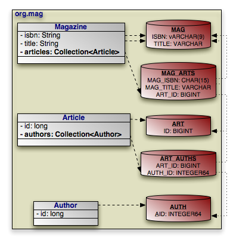 |
You define join tables with the JoinTable annotation.
This annotation has the following properties:
String name: Table name. If not given, the name of the table defaults to the name of the owning entity's table, plus an underscore, plus the name of the related entity's table.String catalog: Table catalog.String schema: Table schema.JoinColumn[] joinColumns: Array ofJoinColumnshowing how to associate join table records with the owning row in the primary table. This property mirrors thepkJoinColumnsproperty of theSecondaryTableannotation in functionality. See Section 8.2, “ Secondary Tables ” to refresh your memory on secondary tables.If this is a bidirectional relation (see Section 2.10.1, “ Bidirectional Relations ” ), the name of a join column defaults to the inverse field name, plus an underscore, plus the referenced primary key column name. Otherwise, the join column name defaults to the field's owning entity name, plus an underscore, plus the referenced primary key column name.
JoinColumn[] inverseJoinColumns: Array ofJoinColumnsshowing how to associate join table records with the records that form the elements of the collection. These join columns are used just like the join columns for direct relations, and they have the same naming defaults. Read Section 8.4, “ Direct Relations ” for a review of direct relation mapping.
join-table is the corresponding XML element. It has the same
attributes as the table element, but includes the ability to
nest join-column and inverse-join-column
elements as children. We have seen join-column elements
already; inverse-join-column elements have the same
attributes.
Here are the join table mappings for the diagram above.
Example 13.15. Join Table Mapping
package org.mag;
@Entity
@Table(name="MAG")
public class Magazine {
@Column(length=9)
@Id private String isbn;
@Id private String title;
@OneToMany(...)
@OrderBy
@JoinTable(name="MAG_ARTS",
joinColumns={
@JoinColumn(name="MAG_ISBN", referencedColumnName="ISBN"),
@JoinColumn(name="MAG_TITLE", referencedColumnName="TITLE")
},
inverseJoinColumns=@JoinColumn(name="ART_ID", referencedColumnName="ID"))
private Collection<Article> articles;
...
}
@Entity
@Table(name="ART")
public class Article {
@Id private long id;
@ManyToMany(cascade=CascadeType.PERSIST)
@OrderBy("lastName, firstName")
@JoinTable(name="ART_AUTHS",
joinColumns=@JoinColumn(name="ART_ID", referencedColumnName="ID"),
inverseJoinColumns=@JoinColumn(name="AUTH_ID", referencedColumnName="AID"))
private Collection<Author> authors;
...
}
package org.mag.pub;
@Entity
@Table(name="AUTH")
public class Author {
@Column(name="AID", columnDefinition="INTEGER64")
@Id private long id;
...
}
The same metadata expressed in XML:
<entity class="org.mag.Magazine">
<table name="MAG"/>
<attributes>
<id name="isbn">
<column length="9"/>
</id>
<id name="title"/>
<one-to-many name="articles">
<order-by/>
<join-table name="MAG_ARTS">
<join-column name="MAG_ISBN" referenced-column-name="ISBN"/>
<join-column name="MAG_TITLE" referenced-column-name="TITLE"/>
<inverse-join-column name="ART_ID" referenced-column-name="ID"/>
</join-table>
</one-to-many>
...
</attributes>
</entity>
<entity class="org.mag.Article">
<table name="ART"/>
<attributes>
<id name="id"/>
<many-to-many name="authors">
<order-by>lastName, firstName</order-by>
<join-table name="ART_AUTHS">
<join-column name="ART_ID" referenced-column-name="ID"/>
<inverse-join-column name="AUTH_ID" referenced-column-name="AID"/>
</join-table>
<cascade>
<cascade-persist/>
</cascade>
</many-to-many>
...
</attributes>
</entity>
<entity class="org.mag.pub.Author">
<table name="AUTH"/>
<attributes>
<id name="id">
<column name="AID" column-definition="INTEGER64"/>
</id>
...
</attributes>
</entity>
Section 2.10.1, “
Bidirectional Relations
” introduced bidirectional
relations. To map a bidirectional relation, you map one field normally using the
annotations we have covered throughout this chapter. Then you use the
mappedBy property of the other field's metadata annotation or the
corresponding mapped-by XML attribute to refer to the mapped
field. Look for this pattern in these bidirectional relations as you peruse the
complete mappings below:
Magazine.publisherandCompany.mags.Article.authorsandAuthor.articles.
All map fields in JPA are modeled on either one to many or many to
many associations. The map key is always derived from an associated entity's
field. Thus map fields use the same mappings as any one to many or many to many
fields, namely dedicated join
tables or bidirectional
relations. The only additions are the MapKey
annotation and map-key element to declare the key field. We
covered these additions in Section 2.14, “
Map Key
”.
| 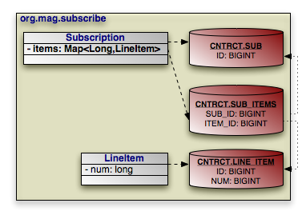 |
The example below maps Subscription's map of
LineItems to the SUB_ITEMS join table. The key
for each map entry is the LineItem's num
field value.
Example 13.16. Join Table Map Mapping
package org.mag.subscribe;
@Entity
@Table(name="SUB", schema="CNTRCT")
public class Subscription {
@OneToMany(cascade={CascadeType.PERSIST,CascadeType.REMOVE})
@MapKey(name="num")
@JoinTable(name="SUB_ITEMS", schema="CNTRCT",
joinColumns=@JoinColumn(name="SUB_ID"),
inverseJoinColumns=@JoinColumn(name="ITEM_ID"))
private Map<Long,LineItem> items;
...
@Entity
@Table(name="LINE_ITEM", schema="CNTRCT")
public static class LineItem
extends Contract {
private long num;
...
}
}
The same metadata expressed in XML:
<entity class="org.mag.subscribe.Subscription">
<table name="SUB" schema="CNTRCT"/>
<attributes>
...
<one-to-many name="items">
<map-key name="num">
<join-table name="SUB_ITEMS" schema="CNTRCT">
<join-column name="SUB_ID"/>
<inverse-join-column name="ITEM_ID"/>
</join-table>
<cascade>
<cascade-persist/>
<cascade-remove/>
</cascade>
</one-to-many>
...
</attributes>
</entity>
<entity class="org.mag.subscribe.Subscription.LineItem">
<table name="LINE_ITEM" schema="CNTRCT"/>
<attributes>
...
<basic name="num"/>
...
</attributes>
</entity>
We began this chapter with the goal of mapping the following object model:
That goal has now been met. In the course of explaining JPA's object-relational mapping metadata, we slowly built the requisite schema and mappings for the complete model. First, the database schema:
| 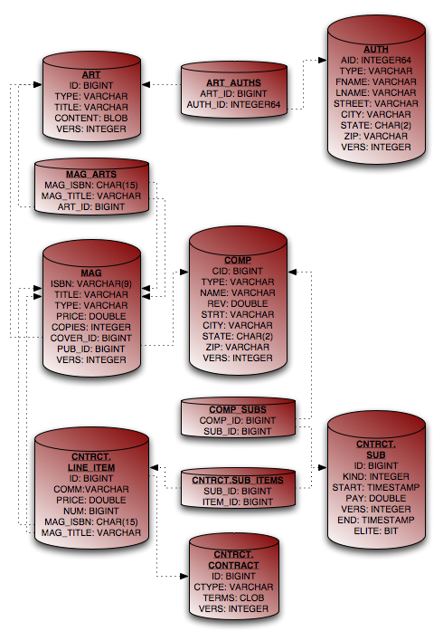 |
And finally, the complete entity mappings. We have trimmed the mappings to take advantage of JPA defaults where possible.
Example 13.17. Full Entity Mappings
package org.mag;
@Entity
@IdClass(Magazine.MagazineId.class)
@Table(name="MAG")
@DiscriminatorValue("Mag")
public class Magazine {
@Column(length=9)
@Id private String isbn;
@Id private String title;
@Column(name="VERS")
@Version private int version;
private String name;
private double price;
@Column(name="COPIES")
private int copiesSold;
@OneToOne(fetch=FetchType.LAZY,
cascade={CascadeType.PERSIST,CascadeType.REMOVE})
@JoinColumn(name="COVER_ID")
private Article coverArticle;
@OneToMany(cascade={CascadeType.PERSIST,CascadeType.REMOVE})
@OrderBy
@JoinTable(name="MAG_ARTS",
joinColumns={
@JoinColumn(name="MAG_ISBN", referencedColumnName="ISBN"),
@JoinColumn(name="MAG_TITLE", referencedColumnName="TITLE")
},
inverseJoinColumns=@JoinColumn(name="ART_ID"))
private Collection<Article> articles;
@ManyToOne(fetch=FetchType.LAZY, cascade=CascadeType.PERSIST)
@JoinColumn(name="PUB_ID")
private Company publisher;
@Transient private byte[] data;
...
public static class MagazineId {
...
}
}
@Entity
@Table(name="ART", uniqueConstraints=@Unique(columnNames="TITLE"))
@SequenceGenerator(name="ArticleSeq", sequenceName="ART_SEQ")
public class Article {
@Id
@GeneratedValue(strategy=GenerationType.SEQUENCE, generator="ArticleSeq")
private long id;
@Column(name="VERS")
@Version private int version;
private String title;
private byte[] content;
@ManyToMany(cascade=CascadeType.PERSIST)
@OrderBy("lastName, firstName")
@JoinTable(name="ART_AUTHS",
joinColumns=@JoinColumn(name="ART_ID"),
inverseJoinColumns=@JoinColumn(name="AUTH_ID"))
private Collection<Author> authors;
...
}
package org.mag.pub;
@Entity
@Table(name="COMP")
public class Company {
@Column(name="CID")
@Id private long id;
@Column(name="VERS")
@Version private int version;
private String name;
@Column(name="REV")
private double revenue;
@Embedded
@AttributeOverrides({
@AttributeOverride(name="street", column=@Column(name="STRT")),
@AttributeOverride(name="city", column=@Column(name="ACITY"))
})
private Address address;
@OneToMany(mappedBy="publisher", cascade=CascadeType.PERSIST)
private Collection<Magazine> mags;
@OneToMany(cascade=CascadeType.PERSIST,CascadeType.REMOVE)
@JoinTable(name="COMP_SUBS",
joinColumns=@JoinColumn(name="COMP_ID"),
inverseJoinColumns=@JoinColumn(name="SUB_ID"))
private Collection<Subscription> subscriptions;
...
}
@Entity
@Table(name="AUTH")
public class Author {
@Id
@GeneratedValue(strategy=GenerationType.TABLE, generator="AuthorGen")
@TableGenerator(name="AuthorGen", tableName="AUTH_GEN", pkColumnName="PK",
valueColumnName="AID")
@Column(name="AID", columnDefinition="INTEGER64")
private long id;
@Column(name="VERS")
@Version private int version;
@Column(name="FNAME")
private String firstName;
@Column(name="LNAME")
private String lastName;
private Address address;
@ManyToMany(mappedBy="authors", cascade=CascadeType.PERSIST)
private Collection<Article> arts;
...
}
@Embeddable
public class Address {
private String street;
private String city;
@Column(columnDefinition="CHAR(2)")
private String state;
private String zip;
}
package org.mag.subscribe;
@MappedSuperclass
public abstract class Document {
@Id
@GeneratedValue(strategy=GenerationType.IDENTITY)
private long id;
@Column(name="VERS")
@Version private int version;
...
}
@Entity
@Table(schema="CNTRCT")
@Inheritance(strategy=InheritanceType.JOINED)
@DiscriminatorColumn(name="CTYPE")
public class Contract
extends Document {
@Lob
private String terms;
...
}
@Entity
@Table(name="SUB", schema="CNTRCT")
@DiscriminatorColumn(name="KIND", discriminatorType=DiscriminatorType.INTEGER)
@DiscriminatorValue("1")
public class Subscription {
@Id
@GeneratedValue(strategy=GenerationType.IDENTITY)
private long id;
@Column(name="VERS")
@Version private int version;
@Column(name="START")
private Date startDate;
@Column(name="PAY")
private double payment;
@OneToMany(cascade={CascadeType.PERSIST,CascadeType.REMOVE})
@MapKey(name="num")
@JoinTable(name="SUB_ITEMS", schema="CNTRCT",
joinColumns=@JoinColumn(name="SUB_ID"),
inverseJoinColumns=@JoinColumn(name="ITEM_ID"))
private Map<Long,LineItem> items;
...
@Entity
@Table(name="LINE_ITEM", schema="CNTRCT")
public static class LineItem
extends Contract {
@Column(name="COMM")
private String comments;
private double price;
private long num;
@ManyToOne
@JoinColumns({
@JoinColumn(name="MAG_ISBN", referencedColumnName="ISBN"),
@JoinColumn(name="MAG_TITLE", referencedColumnName="TITLE")
})
private Magazine magazine;
...
}
}
@Entity(name="Lifetime")
@DiscriminatorValue("2")
public class LifetimeSubscription
extends Subscription {
@Basic(fetch=FetchType.LAZY)
@Column(name="ELITE")
private boolean getEliteClub() { ... }
public void setEliteClub(boolean elite) { ... }
...
}
@Entity(name="Trial")
@DiscriminatorValue("3")
public class TrialSubscription
extends Subscription {
@Column(name="END")
public Date getEndDate() { ... }
public void setEndDate(Date end) { ... }
...
}
The same metadata expressed in XML form:
<entity-mappings xmlns="http://java.sun.com/xml/ns/persistence/orm"
xmlns:xsi="http://www.w3.org/2001/XMLSchema-instance"
xsi:schemaLocation="http://java.sun.com/xml/ns/persistence/orm orm_1_0.xsd"
version="1.0">
<mapped-superclass class="org.mag.subscribe.Document">
<attributes>
<id name="id">
<generated-value strategy="IDENTITY"/>
</id>
<version name="version">
<column name="VERS"/>
</version>
</attributes>
</mapped-superclass>
<entity class="org.mag.Magazine">
<table name="MAG"/>
<id-class="org.mag.Magazine.MagazineId"/>
<discriminator-value>Mag</discriminator-value>
<attributes>
<id name="isbn">
<column length="9"/>
</id>
<id name="title"/>
<basic name="name"/>
<basic name="price"/>
<basic name="copiesSold">
<column name="COPIES"/>
</basic>
<version name="version">
<column name="VERS"/>
</version>
<many-to-one name="publisher" fetch="LAZY">
<join-column name="PUB_ID"/>
<cascade>
<cascade-persist/>
</cascade>
</many-to-one>
<one-to-many name="articles">
<order-by/>
<join-table name="MAG_ARTS">
<join-column name="MAG_ISBN" referenced-column-name="ISBN"/>
<join-column name="MAG_TITLE" referenced-column-name="TITLE"/>
<inverse-join-column name="ART_ID"/>
</join-table>
<cascade>
<cascade-persist/>
<cascade-remove/>
</cascade>
</one-to-many>
<one-to-one name="coverArticle" fetch="LAZY">
<join-column name="COVER_ID"/>
<cascade>
<cascade-persist/>
<cascade-remove/>
</cascade>
</one-to-one>
<transient name="data"/>
</attributes>
</entity>
<entity class="org.mag.Article">
<table name="ART">
<unique-constraint>
<column-name>TITLE</column-name>
</unique-constraint>
</table>
<sequence-generator name="ArticleSeq", sequenceName="ART_SEQ"/>
<attributes>
<id name="id">
<generated-value strategy="SEQUENCE" generator="ArticleSeq"/>
</id>
<basic name="title"/>
<basic name="content"/>
<version name="version">
<column name="VERS"/>
</version>
<many-to-many name="articles">
<order-by>lastName, firstName</order-by>
<join-table name="ART_AUTHS">
<join-column name="ART_ID" referenced-column-name="ID"/>
<inverse-join-column name="AUTH_ID" referenced-column-name="AID"/>
</join-table>
</many-to-many>
</attributes>
</entity>
<entity class="org.mag.pub.Company">
<table name="COMP"/>
<attributes>
<id name="id">
<column name="CID"/>
</id>
<basic name="name"/>
<basic name="revenue">
<column name="REV"/>
</basic>
<version name="version">
<column name="VERS"/>
</version>
<one-to-many name="mags" mapped-by="publisher">
<cascade>
<cascade-persist/>
</cascade>
</one-to-many>
<one-to-many name="subscriptions">
<join-table name="COMP_SUBS">
<join-column name="COMP_ID"/>
<inverse-join-column name="SUB_ID"/>
</join-table>
<cascade>
<cascade-persist/>
<cascade-remove/>
</cascade>
</one-to-many>
<embedded name="address">
<attribute-override name="street">
<column name="STRT"/>
</attribute-override>
<attribute-override name="city">
<column name="ACITY"/>
</attribute-override>
</embedded>
</attributes>
</entity>
<entity class="org.mag.pub.Author">
<table name="AUTH"/>
<attributes>
<id name="id">
<column name="AID" column-definition="INTEGER64"/>
<generated-value strategy="TABLE" generator="AuthorGen"/>
<table-generator name="AuthorGen" table="AUTH_GEN"
pk-column-name="PK" value-column-name="AID"/>
</id>
<basic name="firstName">
<column name="FNAME"/>
</basic>
<basic name="lastName">
<column name="LNAME"/>
</basic>
<version name="version">
<column name="VERS"/>
</version>
<many-to-many name="arts" mapped-by="authors">
<cascade>
<cascade-persist/>
</cascade>
</many-to-many>
<embedded name="address"/>
</attributes>
</entity>
<entity class="org.mag.subcribe.Contract">
<table schema="CNTRCT"/>
<inheritance strategy="JOINED"/>
<discriminator-column name="CTYPE"/>
<attributes>
<basic name="terms">
<lob/>
</basic>
</attributes>
</entity>
<entity class="org.mag.subcribe.Subscription">
<table name="SUB" schema="CNTRCT"/>
<inheritance strategy="SINGLE_TABLE"/>
<discriminator-value>1</discriminator-value>
<discriminator-column name="KIND" discriminator-type="INTEGER"/>
<attributes>
<id name="id">
<generated-value strategy="IDENTITY"/>
</id>
<basic name="payment">
<column name="PAY"/>
</basic>
<basic name="startDate">
<column name="START"/>
</basic>
<version name="version">
<column name="VERS"/>
</version>
<one-to-many name="items">
<map-key name="num">
<join-table name="SUB_ITEMS" schema="CNTRCT">
<join-column name="SUB_ID"/>
<inverse-join-column name="ITEM_ID"/>
</join-table>
<cascade>
<cascade-persist/>
<cascade-remove/>
</cascade>
</one-to-many>
</attributes>
</entity>
<entity class="org.mag.subscribe.Subscription.LineItem">
<table name="LINE_ITEM" schema="CNTRCT"/>
<attributes>
<basic name="comments">
<column name="COMM"/>
</basic>
<basic name="price"/>
<basic name="num"/>
<many-to-one name="magazine">
<join-column name="MAG_ISBN" referenced-column-name="ISBN"/>
<join-column name="MAG_TITLE" referenced-column-name="TITLE"/>
</many-to-one>
</attributes>
</entity>
<entity class="org.mag.subscribe.LifetimeSubscription" name="Lifetime">
<discriminator-value>2</discriminator-value>
<attributes>
<basic name="eliteClub" fetch="LAZY">
<column name="ELITE"/>
</basic>
</attributes>
</entity>
<entity class="org.mag.subscribe.TrialSubscription" name="Trial">
<discriminator-value>3</discriminator-value>
<attributes>
<basic name="endDate">
<column name="END"/>
</basic>
</attributes>
</entity>
<embeddable class="org.mag.pub.Address">
<attributes>
<basic name="street"/>
<basic name="city"/>
<basic name="state">
<column column-definition="CHAR(2)"/>
</basic>
<basic name="zip"/>
</attributes>
</embeddable>
</entity-mappings>
This concludes our overview of the JPA specification. The OpenJPA Reference Guide contains detailed documentation on all aspects of the OpenJPA implementation and core development tools.
Table of Contents
- 1. Introduction
- 2. Configuration
- 1. Introduction
- 2. Runtime Configuration
- 3. Command Line Configuration
- 4. Plugin Configuration
- 5. OpenJPA Properties
- 5.1. openjpa.AutoClear
- 5.2. openjpa.AutoDetach
- 5.3. openjpa.BrokerFactory
- 5.4. openjpa.BrokerImpl
- 5.5. openjpa.Callbacks
- 5.6. openjpa.ClassResolver
- 5.7. openjpa.Compatibility
- 5.8. openjpa.ConnectionDriverName
- 5.9. openjpa.Connection2DriverName
- 5.10. openjpa.ConnectionFactory
- 5.11. openjpa.ConnectionFactory2
- 5.12. openjpa.ConnectionFactoryName
- 5.13. openjpa.ConnectionFactory2Name
- 5.14. openjpa.ConnectionFactoryMode
- 5.15. openjpa.ConnectionFactoryProperties
- 5.16. openjpa.ConnectionFactory2Properties
- 5.17. openjpa.ConnectionPassword
- 5.18. openjpa.Connection2Password
- 5.19. openjpa.ConnectionProperties
- 5.20. openjpa.Connection2Properties
- 5.21. openjpa.ConnectionURL
- 5.22. openjpa.Connection2URL
- 5.23. openjpa.ConnectionUserName
- 5.24. openjpa.Connection2UserName
- 5.25. openjpa.ConnectionRetainMode
- 5.26. openjpa.DataCache
- 5.27. openjpa.DataCacheManager
- 5.28. openjpa.DataCacheMode
- 5.29. openjpa.DataCacheTimeout
- 5.30. openjpa.DetachState
- 5.31. openjpa.DynamicDataStructs
- 5.32. openjpa.FetchBatchSize
- 5.33. openjpa.EncryptionProvider
- 5.34. openjpa.FetchGroups
- 5.35. openjpa.FlushBeforeQueries
- 5.36. openjpa.IgnoreChanges
- 5.37. openjpa.Id
- 5.38. openjpa.InitializeEagerly
- 5.39. openjpa.InverseManager
- 5.40. openjpa.LockManager
- 5.41. openjpa.LockTimeout
- 5.42. openjpa.Log
- 5.43. openjpa.ManagedRuntime
- 5.44. openjpa.Mapping
- 5.45. openjpa.MaxFetchDepth
- 5.46. openjpa.MetaDataFactory
- 5.47. openjpa.MetaDataRepository
- 5.48. openjpa.Multithreaded
- 5.49. openjpa.Optimistic
- 5.50. openjpa.OrphanedKeyAction
- 5.51. openjpa.NontransactionalRead
- 5.52. openjpa.NontransactionalWrite
- 5.53. openjpa.ProxyManager
- 5.54. openjpa.QueryCache
- 5.55. openjpa.QueryCompilationCache
- 5.56. openjpa.ReadLockLevel
- 5.57. openjpa.RemoteCommitProvider
- 5.58. openjpa.RestoreState
- 5.59. openjpa.RetainState
- 5.60. openjpa.RetryClassRegistration
- 5.61. openjpa.RuntimeUnenhancedClasses
- 5.62. openjpa.DynamicEnhancementAgent
- 5.63. openjpa.SavepointManager
- 5.64. openjpa.Sequence
- 5.65. openjpa.Specification
- 5.66. openjpa.TransactionMode
- 5.67. openjpa.WriteLockLevel
- 6. OpenJPA JDBC Properties
- 6.1. openjpa.jdbc.ConnectionDecorators
- 6.2. openjpa.jdbc.DBDictionary
- 6.3. openjpa.jdbc.DriverDataSource
- 6.4. openjpa.jdbc.EagerFetchMode
- 6.5. openjpa.jdbc.FetchDirection
- 6.6. openjpa.jdbc.JDBCListeners
- 6.7. openjpa.jdbc.LRSSize
- 6.8. openjpa.jdbc.MappingDefaults
- 6.9. openjpa.jdbc.MappingFactory
- 6.10. openjpa.jdbc.QuerySQLCache
- 6.11. openjpa.jdbc.ResultSetType
- 6.12. openjpa.jdbc.Schema
- 6.13. openjpa.jdbc.SchemaFactory
- 6.14. openjpa.jdbc.Schemas
- 6.15. openjpa.jdbc.SQLFactory
- 6.16. openjpa.jdbc.SubclassFetchMode
- 6.17. openjpa.jdbc.SynchronizeMappings
- 6.18. openjpa.jdbc.TransactionIsolation
- 6.19. openjpa.jdbc.UpdateManager
- 6.20. Compatibility with Specification
- 3. Logging
- 4. JDBC
- 1. Using the OpenJPA DataSource
- 2. Using a Third-Party DataSource
- 3. Runtime Access to DataSource
- 4. Database Support
- 5. Setting the Transaction Isolation
- 6. Setting the SQL Join Syntax
- 7. Accessing Multiple Databases
- 8. Configuring the Use of JDBC Connections
- 9. Statement Batching
- 10. Large Result Sets
- 11. Default Schema
- 12. Schema Reflection
- 13. Schema Tool
- 14. XML Schema Format
- 5. Persistent Classes
- 6. Metadata
- 7. Mapping
- 1. Forward Mapping
- 2. Reverse Mapping
- 3. Meet-in-the-Middle Mapping
- 4. Mapping Defaults
- 5. Mapping Factory
- 6. Non-Standard Joins
- 7. Additional JPA Mappings
- 8. Mapping Limitations
- 9. Mapping Extensions
- 10. Custom Mappings
- 11. Orphaned Keys
- 8. Deployment
- 9. Runtime Extensions
- 10. Caching
- 11. Encryption Provider
- 12. Remote and Offline Operation
- 13. Distributed Persistence
- 14. Third Party Integration
- 15. Optimization Guidelines
Table of Contents
OpenJPA is a JDBC-based implementation of the JPA standard. This document is a reference for the configuration and use of OpenJPA.
This document is intended for OpenJPA developers. It assumes strong knowledge of Java, familiarity with the eXtensible Markup Language (XML), and an understanding of JPA. If you are not familiar with JPA, please read the JPA Overview before proceeding.
Certain sections of this guide cover advanced topics such as custom object-relational mapping, enterprise integration, and using OpenJPA with third-party tools. These sections assume prior experience with the relevant subject.
Table of Contents
- 1. Introduction
- 2. Runtime Configuration
- 3. Command Line Configuration
- 4. Plugin Configuration
- 5. OpenJPA Properties
- 5.1. openjpa.AutoClear
- 5.2. openjpa.AutoDetach
- 5.3. openjpa.BrokerFactory
- 5.4. openjpa.BrokerImpl
- 5.5. openjpa.Callbacks
- 5.6. openjpa.ClassResolver
- 5.7. openjpa.Compatibility
- 5.8. openjpa.ConnectionDriverName
- 5.9. openjpa.Connection2DriverName
- 5.10. openjpa.ConnectionFactory
- 5.11. openjpa.ConnectionFactory2
- 5.12. openjpa.ConnectionFactoryName
- 5.13. openjpa.ConnectionFactory2Name
- 5.14. openjpa.ConnectionFactoryMode
- 5.15. openjpa.ConnectionFactoryProperties
- 5.16. openjpa.ConnectionFactory2Properties
- 5.17. openjpa.ConnectionPassword
- 5.18. openjpa.Connection2Password
- 5.19. openjpa.ConnectionProperties
- 5.20. openjpa.Connection2Properties
- 5.21. openjpa.ConnectionURL
- 5.22. openjpa.Connection2URL
- 5.23. openjpa.ConnectionUserName
- 5.24. openjpa.Connection2UserName
- 5.25. openjpa.ConnectionRetainMode
- 5.26. openjpa.DataCache
- 5.27. openjpa.DataCacheManager
- 5.28. openjpa.DataCacheMode
- 5.29. openjpa.DataCacheTimeout
- 5.30. openjpa.DetachState
- 5.31. openjpa.DynamicDataStructs
- 5.32. openjpa.FetchBatchSize
- 5.33. openjpa.EncryptionProvider
- 5.34. openjpa.FetchGroups
- 5.35. openjpa.FlushBeforeQueries
- 5.36. openjpa.IgnoreChanges
- 5.37. openjpa.Id
- 5.38. openjpa.InitializeEagerly
- 5.39. openjpa.InverseManager
- 5.40. openjpa.LockManager
- 5.41. openjpa.LockTimeout
- 5.42. openjpa.Log
- 5.43. openjpa.ManagedRuntime
- 5.44. openjpa.Mapping
- 5.45. openjpa.MaxFetchDepth
- 5.46. openjpa.MetaDataFactory
- 5.47. openjpa.MetaDataRepository
- 5.48. openjpa.Multithreaded
- 5.49. openjpa.Optimistic
- 5.50. openjpa.OrphanedKeyAction
- 5.51. openjpa.NontransactionalRead
- 5.52. openjpa.NontransactionalWrite
- 5.53. openjpa.ProxyManager
- 5.54. openjpa.QueryCache
- 5.55. openjpa.QueryCompilationCache
- 5.56. openjpa.ReadLockLevel
- 5.57. openjpa.RemoteCommitProvider
- 5.58. openjpa.RestoreState
- 5.59. openjpa.RetainState
- 5.60. openjpa.RetryClassRegistration
- 5.61. openjpa.RuntimeUnenhancedClasses
- 5.62. openjpa.DynamicEnhancementAgent
- 5.63. openjpa.SavepointManager
- 5.64. openjpa.Sequence
- 5.65. openjpa.Specification
- 5.66. openjpa.TransactionMode
- 5.67. openjpa.WriteLockLevel
- 6. OpenJPA JDBC Properties
- 6.1. openjpa.jdbc.ConnectionDecorators
- 6.2. openjpa.jdbc.DBDictionary
- 6.3. openjpa.jdbc.DriverDataSource
- 6.4. openjpa.jdbc.EagerFetchMode
- 6.5. openjpa.jdbc.FetchDirection
- 6.6. openjpa.jdbc.JDBCListeners
- 6.7. openjpa.jdbc.LRSSize
- 6.8. openjpa.jdbc.MappingDefaults
- 6.9. openjpa.jdbc.MappingFactory
- 6.10. openjpa.jdbc.QuerySQLCache
- 6.11. openjpa.jdbc.ResultSetType
- 6.12. openjpa.jdbc.Schema
- 6.13. openjpa.jdbc.SchemaFactory
- 6.14. openjpa.jdbc.Schemas
- 6.15. openjpa.jdbc.SQLFactory
- 6.16. openjpa.jdbc.SubclassFetchMode
- 6.17. openjpa.jdbc.SynchronizeMappings
- 6.18. openjpa.jdbc.TransactionIsolation
- 6.19. openjpa.jdbc.UpdateManager
- 6.20. Compatibility with Specification
This chapter describes the OpenJPA configuration framework. It concludes with descriptions of all the configuration properties recognized by OpenJPA. You may want to browse these properties now, but it is not necessary. Most of them will be referenced later in the documentation as we explain the various features they apply to.
The OpenJPA runtime includes a comprehensive system of configuration defaults and overrides:
OpenJPA first looks for an optional
openjpa.xmlresource. OpenJPA searches for this resource in each top-level directory of yourCLASSPATH. OpenJPA will also find the resource if you place it within aMETA-INFdirectory in any top-level directory of theCLASSPATH. Theopenjpa.xmlresource contains property settings in JPA's XML format.You can customize the name or location of the above resource by specifying the correct resource path in the
openjpa.propertiesSystem property.You can override any value defined in the above resource by setting the System property of the same name to the desired value.
In JPA, the values in the standard
META-INF/persistence.xmlbootstrapping file used by thePersistenceclass at runtime override the values in the above resource, as well as any System property settings. TheMappassed toPersistence.createEntityManagerFactoryat runtime also overrides previous settings, including properties defined inpersistence.xml.In JPA, The
Mappassed to the methods defined in theQueryandEntityManagerinterfaces at runtime also overrides previous settings, including properties defined inpersistence.xml. TheMapis in effect only during the method invocation.When using JCA deployment the
config-propertyvalues in yourra.xmlfile override other settings.All OpenJPA command-line tools accept flags that allow you to specify the configuration resource to use, and to override any property. Section 3, “ Command Line Configuration ” describes these flags.
Note
Internally, the OpenJPA runtime environment and development
tools manipulate property settings through a general
Configuration interface, and in particular its
OpenJPAConfiguration and
JDBCConfiguration subclasses. For advanced
customization, OpenJPA's extended runtime interfaces and its development tools
allow you to access these interfaces directly. See the
Javadoc for details.
OpenJPA development tools share the same set of configuration defaults and overrides as the runtime system. They also allow you to specify property values on the command line:
-properties/-p <configuration file or resource>: Use the-propertiesflag, or its shorter-pform, to specify a configuration file to use. Note that OpenJPA always searches the default file locations described above, so this flag is only needed when you do not have a default resource in place, or when you wish to override the defaults. The given value can be the path to a file, or the resource name of a file somewhere in theCLASSPATH. OpenJPA will search the given location as well as the location prefixed byMETA-INF/. Thus, to point an OpenJPA tool atMETA-INF/my-persistence.xml, you can use:<tool> -p my-persistence.xml
If you want to run a tool against just one particular persistence unit in a configuration file, you can do so by specifying an anchor along with the resource. If you do not specify an anchor, the tools will run against all the persistence units defined within the specified resource, or the default resource if none is specified. If the persistence unit is defined within the default resource location, then you can just specify the raw anchor itself:
<tool> -p my-persistence.xml#sales-persistence-unit <tool> -p #invoice-persistence-unit
-<property name> <property value>: Any configuration property that you can specify in a configuration file can be overridden with a command line flag. The flag name is always the last token of the corresponding property name, with the first letter in either upper or lower case. For example, to override theopenjpa.ConnectionUserNameproperty, you could pass the-connectionUserName <value>flag to any tool. Values set this way override both the values in the configuration file and values set via System properties.
Some OpenJPA development tools generate Java code. These tools share a common
set of command-line flags for formatting their output to match your coding
style. All code formatting flags can begin with either the codeFormat
or cf prefix.
-codeFormat./-cf.tabSpaces <spaces>: The number of spaces that make up a tab, or 0 to use tab characters. Defaults to using tab characters.-codeFormat./-cf.spaceBeforeParen <true/t | false/f>: Whether or not to place a space before opening parentheses on method calls, if statements, loops, etc. Defaults tofalse.-codeFormat./-cf.spaceInParen <true/t | false/f>: Whether or not to place a space within parentheses; i.e.method( arg). Defaults tofalse.-codeFormat./-cf.braceOnSameLine <true/t | false/f>: Whether or not to place opening braces on the same line as the declaration that begins the code block, or on the next line. Defaults totrue.-codeFormat./-cf.braceAtSameTabLevel <true/t | false/f>: When thebraceOnSameLineoption is disabled, you can choose whether to place the brace at the same tab level of the contained code. Defaults tofalse.-codeFormat./-cf.scoreBeforeFieldName <true/t | false/f>: Whether to prefix an underscore to names of private member variables. Defaults tofalse.-codeFormat./-cf.linesBetweenSections <lines>: The number of lines to skip between sections of code. Defaults to 1.
Example 2.1. Code Formatting with the Application Id Tool
java org.apache.openjpa.enhance.ApplicationIdTool -cf.spaceBeforeParen true -cf.tabSpaces 4
Because OpenJPA is a highly customizable environment, many configuration properties relate to the creation and configuration of system plugins. Plugin properties have a syntax very similar to that of Java 5 annotations. They allow you to specify both what class to use for the plugin and how to configure the public fields or bean properties of the instantiated plugin instance. The easiest way to describe the plugin syntax is by example:
OpenJPA has a pluggable L2 caching mechanism that is controlled by the
openjpa.DataCache configuration property. Suppose that you have
created a new class, com.xyz.MyDataCache, that you want
OpenJPA to use for caching. You've made instances of MyDataCache
configurable via two methods, setCacheSize(int size)
and setRemoteHost(String host). The
sample below shows how you would tell OpenJPA to use an instance of your custom
plugin with a max size of 1000 and a remote host of cacheserver
.
<property name="openjpa.DataCache"
value="com.xyz.MyDataCache(CacheSize=1000, RemoteHost=cacheserver)"/>
As you can see, plugin properties take a class name, followed by a comma-separated list of values for the plugin's public fields or bean properties in parentheses. OpenJPA will match each named property to a field or setter method in the instantiated plugin instance, and set the field or invoke the method with the given value (after converting the value to the right type, of course). The first letter of the property names can be in either upper or lower case. The following would also have been valid:
com.xyz.MyDataCache(cacheSize=1000, remoteHost=cacheserver)
If you do not need to pass any property settings to a plugin, you can just name the class to use:
com.xyz.MyDataCache
Similarly, if the plugin has a default class that you do not want to change, you
can simply specify a list of property settings, without a class name. For
example, OpenJPA's query cache companion to the data cache has a default
implementation suitable to most users, but you still might want to change the
query cache's size. It has a CacheSize property for this
purpose:
CacheSize=1000
Finally, many of OpenJPA's built-in options for plugins have short alias names
that you can use in place of the full class name. The data cache property, for
example, has an available alias of true for the standard
cache implementation. The property value simply becomes:
true
The standard cache implementation class also has a CacheSize
property, so to use the standard implementation and configure the size, specify:
true(CacheSize=1000)
The remainder of this chapter reviews the set of configuration properties OpenJPA recognizes.
- 5.1. openjpa.AutoClear
- 5.2. openjpa.AutoDetach
- 5.3. openjpa.BrokerFactory
- 5.4. openjpa.BrokerImpl
- 5.5. openjpa.Callbacks
- 5.6. openjpa.ClassResolver
- 5.7. openjpa.Compatibility
- 5.8. openjpa.ConnectionDriverName
- 5.9. openjpa.Connection2DriverName
- 5.10. openjpa.ConnectionFactory
- 5.11. openjpa.ConnectionFactory2
- 5.12. openjpa.ConnectionFactoryName
- 5.13. openjpa.ConnectionFactory2Name
- 5.14. openjpa.ConnectionFactoryMode
- 5.15. openjpa.ConnectionFactoryProperties
- 5.16. openjpa.ConnectionFactory2Properties
- 5.17. openjpa.ConnectionPassword
- 5.18. openjpa.Connection2Password
- 5.19. openjpa.ConnectionProperties
- 5.20. openjpa.Connection2Properties
- 5.21. openjpa.ConnectionURL
- 5.22. openjpa.Connection2URL
- 5.23. openjpa.ConnectionUserName
- 5.24. openjpa.Connection2UserName
- 5.25. openjpa.ConnectionRetainMode
- 5.26. openjpa.DataCache
- 5.27. openjpa.DataCacheManager
- 5.28. openjpa.DataCacheMode
- 5.29. openjpa.DataCacheTimeout
- 5.30. openjpa.DetachState
- 5.31. openjpa.DynamicDataStructs
- 5.32. openjpa.FetchBatchSize
- 5.33. openjpa.EncryptionProvider
- 5.34. openjpa.FetchGroups
- 5.35. openjpa.FlushBeforeQueries
- 5.36. openjpa.IgnoreChanges
- 5.37. openjpa.Id
- 5.38. openjpa.InitializeEagerly
- 5.39. openjpa.InverseManager
- 5.40. openjpa.LockManager
- 5.41. openjpa.LockTimeout
- 5.42. openjpa.Log
- 5.43. openjpa.ManagedRuntime
- 5.44. openjpa.Mapping
- 5.45. openjpa.MaxFetchDepth
- 5.46. openjpa.MetaDataFactory
- 5.47. openjpa.MetaDataRepository
- 5.48. openjpa.Multithreaded
- 5.49. openjpa.Optimistic
- 5.50. openjpa.OrphanedKeyAction
- 5.51. openjpa.NontransactionalRead
- 5.52. openjpa.NontransactionalWrite
- 5.53. openjpa.ProxyManager
- 5.54. openjpa.QueryCache
- 5.55. openjpa.QueryCompilationCache
- 5.56. openjpa.ReadLockLevel
- 5.57. openjpa.RemoteCommitProvider
- 5.58. openjpa.RestoreState
- 5.59. openjpa.RetainState
- 5.60. openjpa.RetryClassRegistration
- 5.61. openjpa.RuntimeUnenhancedClasses
- 5.62. openjpa.DynamicEnhancementAgent
- 5.63. openjpa.SavepointManager
- 5.64. openjpa.Sequence
- 5.65. openjpa.Specification
- 5.66. openjpa.TransactionMode
- 5.67. openjpa.WriteLockLevel
OpenJPA defines many configuration properties. Most of these properties are provided for advanced users who wish to customize OpenJPA's behavior; the majority of developers can omit them. The following properties apply to any OpenJPA back-end, though the given descriptions are tailored to OpenJPA's default JDBC store.
Few of the properties recognized by OpenJPA have been standardized in JPA 2.0 Specification using equivalent names. These properties can be specified either by the JPA standard key or equivalent OpenJPA key. Specifying the same key once as JPA standard key and again as equivalent OpenJPA key in the same configuration, however, is not allowed. The following table lists these standard JPA properties and their OpenJPA equivalent.
Table 2.1. Standard JPA Properties and OpenJPA equivalents
| Standard JPA 2.0 | OpenJPA Equivalent |
|---|---|
| javax.persistence.jdbc.driver | openjpa.ConnectionDriverName |
| javax.persistence.jdbc.url | openjpa.ConnectionURL |
| javax.persistence.jdbc.user | openjpa.ConnectionUserName |
| javax.persistence.jdbc.password | openjpa.ConnectionPassword |
Property name: openjpa.AutoClear
Configuration API:
org.apache.openjpa.conf.OpenJPAConfiguration.getAutoClear
Resource adaptor config-property:
AutoClear
Default: datastore
Possible values: datastore,
all
Description: When to automatically clear instance state: on entering a datastore transaction, or on entering any transaction.
Property name: openjpa.AutoDetach
Configuration API:
org.apache.openjpa.conf.OpenJPAConfiguration.getAutoDetach
Resource adaptor config-property:
AutoDetach
Default: -
Possible values: close,
commit, nontx-read
Description: A comma-separated list of events when managed instances will be automatically detached.
Property name: openjpa.BrokerFactory
Configuration API:
org.apache.openjpa.conf.OpenJPAConfiguration.getBrokerFactory
Resource adaptor config-property:
BrokerFactory
Default: jdbc
Possible values: jdbc,
abstractstore, remote
Description: A plugin string (see
Section 4, “
Plugin Configuration
”) describing the
org.apache.openjpa.kernel.BrokerFactory type to
use.
Property name: openjpa.BrokerImpl
Configuration API:
org.apache.openjpa.conf.OpenJPAConfiguration.getBrokerImpl
Resource adaptor config-property:
BrokerImpl
Default: default
Description: A plugin string (see
Section 4, “
Plugin Configuration
”) describing the
org.apache.openjpa.kernel.Broker type to use at runtime. See
Section 1.2, “
Broker Customization and Eviction
” on for details.
Property name: openjpa.Callbacks
Configuration API:
org.apache.openjpa.conf.OpenJPAConfiguration.getCallbackOptionsInstance
Resource adaptor config-property: Callbacks
Default: default
Description: A plugin string (see Section 4, “ Plugin Configuration ”) to fine tune some of the configurable properties related to callbacks. The plug-in supports two boolean properties:
PostPersistCallbackImmediate: whether the post-persist callback is invoked as soon as a new instance is managed. The default isfalse, implies that the post-persist callback is invoked after the instance been committed or flushed to the datastore.AllowsMultipleMethodsForSameCallback: whether multiple methods of the same class can handle the same callback event. Defaults tofalse.
Property name: openjpa.ClassResolver
Configuration API:
org.apache.openjpa.conf.OpenJPAConfiguration.getClassResolver
Resource adaptor config-property:
ClassResolver
Default: default
Description: A plugin string (see
Section 4, “
Plugin Configuration
”) describing the
org.apache.openjpa.util.ClassResolver implementation to use
for class name resolution. You may wish to plug in your own resolver if you have
special classloading needs.
Property name: openjpa.Compatibility
Configuration API:
org.apache.openjpa.conf.OpenJPAConfiguration.getCompatibility
Resource adaptor config-property:
Compatibility
Default: -
Description: Encapsulates options to mimic the behavior of previous OpenJPA releases.
Property name:
openjpa.ConnectionDriverName
Configuration API:
org.apache.openjpa.conf.OpenJPAConfiguration.getConnectionDriverName
Resource adaptor config-property:
ConnectionDriverName
Default: -
Description: The full class name of either the
JDBC java.sql.Driver, or a
javax.sql.DataSource implementation to use to connect to the
database. See Chapter 4,
JDBC
for details.
Property name:
openjpa.Connection2DriverName
Configuration API:
org.apache.openjpa.conf.OpenJPAConfiguration.getConnection2DriverName
Resource adaptor config-property:
Connection2DriverName
Default: -
Description: This property is equivalent to the
openjpa.ConnectionDriverName property described in
Section 5.8, “
openjpa.ConnectionDriverName
”, but applies to the
alternate connection factory used for unmanaged connections. See
Section 2.1, “
Managed and XA DataSources
” for details.
Property name:
openjpa.ConnectionFactory
Configuration API:
org.apache.openjpa.conf.OpenJPAConfiguration.getConnectionFactory
Resource adaptor config-property:
ConnectionFactory
Default: -
Description: A javax.sql.DataSource
to use to connect to the database. See
Chapter 4,
JDBC
for details.
Property name:
openjpa.ConnectionFactory2
Configuration API:
org.apache.openjpa.conf.OpenJPAConfiguration.getConnectionFactory2
Resource adaptor config-property:
ConnectionFactory2
Default: -
Description: An unmanaged
javax.sql.DataSource to use to connect to the database. See
Chapter 4,
JDBC
for details.
Property name:
openjpa.ConnectionFactoryName
Configuration API:
org.apache.openjpa.conf.OpenJPAConfiguration.getConnectionFactoryName
Resource adaptor config-property:
ConnectionFactoryName
Default: -
Description: The JNDI location of a
javax.sql.DataSource to use to connect to the database. See
Chapter 4,
JDBC
for details.
Property name:
openjpa.ConnectionFactory2Name
Configuration API:
org.apache.openjpa.conf.OpenJPAConfiguration.getConnectionFactory2Name
Resource adaptor config-property:
ConnectionFactory2Name
Default: -
Description: The JNDI location of an unmanaged
javax.sql.DataSource to use to connect to the database.
See Section 3, “
XA Transactions
” for details.
Property name:
openjpa.ConnectionFactoryMode
Configuration API:
org.apache.openjpa.conf.OpenJPAConfiguration.getConnectionFactoryMode
Resource adaptor config-property:
ConnectionFactoryMode
Default: local
Possible values: local,
managed
Description: The connection factory mode to use when integrating with the application server's managed transactions. See Section 2.1, “ Managed and XA DataSources ” for details.
Property name:
openjpa.ConnectionFactoryProperties
Configuration API:
org.apache.openjpa.conf.OpenJPAConfiguration.getConnectionFactoryProperties
Resource adaptor config-property:
ConnectionFactoryProperties
Default: -
Description: A plugin string (see Section 4, “ Plugin Configuration ”) listing properties for configuration of the datasource in use. See the Chapter 4, JDBC for details.
Property name:
openjpa.ConnectionFactory2Properties
Configuration API:
org.apache.openjpa.conf.OpenJPAConfiguration.getConnectionFactory2Properties
Resource adaptor config-property:
ConnectionFactory2Properties
Default: -
Description: This property is equivalent to the
openjpa.ConnectionFactoryProperties property described in
Section 5.15, “
openjpa.ConnectionFactoryProperties
”, but applies to the
alternate connection factory used for unmanaged connections. See
Section 2.1, “
Managed and XA DataSources
” for details.
Property name:
openjpa.ConnectionPassword
Configuration API:
org.apache.openjpa.conf.OpenJPAConfiguration.getConnectionPassword
Resource adaptor config-property:
ConnectionPassword
Default: -
Description: The password for the user
specified in the ConnectionUserName property. See
Chapter 4,
JDBC
for details.
Property name:
openjpa.Connection2Password
Configuration API:
org.apache.openjpa.conf.OpenJPAConfiguration.getConnection2Password
Resource adaptor config-property:
Connection2Password
Default: -
Description: This property is equivalent to the
openjpa.ConnectionPassword property described in
Section 5.17, “
openjpa.ConnectionPassword
”, but applies to the
alternate connection factory used for unmanaged connections. See
Section 2.1, “
Managed and XA DataSources
” for details.
Property name:
openjpa.ConnectionProperties
Configuration API:
org.apache.openjpa.conf.OpenJPAConfiguration.getConnectionProperties
Resource adaptor config-property:
ConnectionProperties
Default: -
Description: A plugin string (see
Section 4, “
Plugin Configuration
”) listing properties to configure
the driver listed in the ConnectionDriverName property
described below. See Chapter 4,
JDBC
for details.
Property name:
openjpa.Connection2Properties
Configuration API:
org.apache.openjpa.conf.OpenJPAConfiguration.getConnection2Properties
Resource adaptor config-property:
Connection2Properties
Default: -
Description: This property is equivalent to the
openjpa.ConnectionProperties property described in
Section 5.19, “
openjpa.ConnectionProperties
”, but applies to the
alternate connection factory used for unmanaged connections. See
Section 2.1, “
Managed and XA DataSources
” for details.
Property name: openjpa.ConnectionURL
Configuration API:
org.apache.openjpa.conf.OpenJPAConfiguration.getConnectionURL
Resource adaptor config-property:
ConnectionURL
Default: -
Description: The JDBC URL for the database. See Chapter 4, JDBC for details.
Property name: openjpa.Connection2URL
Configuration API:
org.apache.openjpa.conf.OpenJPAConfiguration.getConnection2URL
Resource adaptor config-property:
Connection2URL
Default: -
Description: This property is equivalent to the
openjpa.ConnectionURL property described in
Section 5.21, “
openjpa.ConnectionURL
”, but applies to the alternate
connection factory used for unmanaged connections. See
Section 2.1, “
Managed and XA DataSources
” for details.
Property name:
openjpa.ConnectionUserName
Configuration API:
org.apache.openjpa.conf.OpenJPAConfiguration.getConnectionUserName
Resource adaptor config-property:
ConnectionUserName
Default: -
Description: The user name to use when connecting to the database. See the Chapter 4, JDBC for details.
Property name:
openjpa.Connection2UserName
Configuration API:
org.apache.openjpa.conf.OpenJPAConfiguration.getConnection2UserName
Resource adaptor config-property:
Connection2UserName
Default: -
Description: This property is equivalent to the
openjpa.ConnectionUserName property described in
Section 5.23, “
openjpa.ConnectionUserName
”, but applies to the
alternate connection factory used for unmanaged connections. See
Section 2.1, “
Managed and XA DataSources
” for details.
Property name:
openjpa.ConnectionRetainMode
Configuration API:
org.apache.openjpa.conf.OpenJPAConfiguration.getConnectionRetainMode
Resource adaptor config-property:
ConnectionRetainMode
Default: on-demand
Description: Controls how OpenJPA uses datastore connections. This property can also be specified for individual sessions. See Section 8, “ Configuring the Use of JDBC Connections ” for details.
Property name: openjpa.DataCache
Configuration API:
org.apache.openjpa.conf.OpenJPAConfiguration.getDataCache
Resource adaptor config-property:
DataCache
Default: false
Description: A plugin list string (see
Section 4, “
Plugin Configuration
”) describing the
org.apache.openjpa.datacache.DataCaches to use for data
caching. See Section 1.1, “
Data Cache Configuration
” for details.
Property name:
openjpa.DataCacheManager
Configuration API:
org.apache.openjpa.conf.OpenJPAConfiguration.getDataCacheManager
Resource adaptor config-property:
DataCacheManager
Default: default
Description: A plugin string (see
Section 4, “
Plugin Configuration
”) describing the
openjpa.datacache.DataCacheManager that manages
the system data caches. See Section 1, “
Data Cache
” for details
on data caching.
Property name:
openjpa.DataCacheMode
Configuration API:
org.apache.openjpa.conf.OpenJPAConfiguration.getDataCacheMode
Resource adaptor config-property:
DataCacheMode
Default: DataCacheMode.UNSPECIFIED (see javadoc for details)
Description:Determines which entities will be included in the DataCache. May be any of the values defined in ../javadoc/org/apache/openjpa/datacache/DataCacheMode.html.
Property name:
openjpa.DataCacheTimeout
Configuration API:
org.apache.openjpa.conf.OpenJPAConfiguration.getDataCacheTimeout
Resource adaptor config-property:
DataCacheTimeout
Default: -1
Description: The number of milliseconds that data in the data cache is valid. Set this to -1 to indicate that data should not expire from the cache. This property can also be specified for individual classes. See Section 1.1, “ Data Cache Configuration ” for details.
Property name: openjpa.DetachState
Configuration API:
org.apache.openjpa.conf.OpenJPAConfiguration.getDetachState
Resource adaptor config-property:
DetachState
Default: loaded
Possible values: loaded,
fetch-groups, all
Description: Determines which fields are part of the detached graph and related options. For more details, see Section 1.3, “ Defining the Detached Object Graph ”.
Property name:
openjpa.DynamicDataStructs
Configuration API:
org.apache.openjpa.conf.OpenJPAConfiguration.getDynamicDataStructs
Resource adaptor config-property:
DynamicDataStructs
Default: false
Description: Whether to dynamically generate
customized structs to hold persistent data. Both the OpenJPA data cache and the
remote framework rely on data structs to cache and transfer persistent state.
With dynamic structs, OpenJPA can customize data storage for each class,
eliminating the need to generate primitive wrapper objects. This saves memory
and speeds up certain runtime operations. The price is a longer warm-up time for
the application - generating and loading custom classes into the JVM takes time.
Therefore, only set this property to true if you have a
long-running application where the initial cost of class generation is offset by
memory and speed optimization over time.
Property name: openjpa.FetchBatchSize
Configuration API:
org.apache.openjpa.conf.OpenJPAConfiguration.getFetchBatchSize
Resource adaptor config-property:
FetchBatchSize
Default: -1
Description: The number of rows to fetch at once when scrolling through a result set. The fetch size can also be set at runtime. See Section 10, “ Large Result Sets ” for details.
Property name: openjpa.EncryptionProvider
Configuration API:
org.apache.openjpa.conf.OpenJPAConfiguration.getEncryptionProvider
Resource adaptor config-property:
EncryptionProvider
Default: false
Description: A plugin list string (see
Section 4, “
Plugin Configuration
”) describing the
org.apache.openjpa.lib.encryption.EncryptionProviders to use for connection password
encryption. See Chapter 11,
Encryption Provider
for details.
Property name: openjpa.FetchGroups
Configuration API:
org.apache.openjpa.conf.OpenJPAConfiguration.getFetchGroups
Resource adaptor config-property:
FetchGroups
Default: -
Description: A comma-separated list of fetch group names that are to be loaded when retrieving objects from the datastore. Fetch groups can also be set at runtime. See Section 7, “ Fetch Groups ” for details.
Property name:
openjpa.FlushBeforeQueries
Property name:
openjpa.FlushBeforeQueries
Configuration API:
org.apache.openjpa.conf.OpenJPAConfiguration.getFlushBeforeQueries
Resource adaptor config-property:
FlushBeforeQueries
Default: true
Description: Whether or not to flush any changes made in the current transaction to the datastore before executing a query. See Section 8, “ Configuring the Use of JDBC Connections ” for details.
Property name: openjpa.IgnoreChanges
Configuration API:
org.apache.openjpa.conf.OpenJPAConfiguration.getIgnoreChanges
Resource adaptor config-property:
IgnoreChanges
Default: false
Description: Whether to consider modifications
to persistent objects made in the current transaction when evaluating queries.
Setting this to true allows OpenJPA to ignore changes and
execute the query directly against the datastore. A value of false
forces OpenJPA to consider whether the changes in the current
transaction affect the query, and if so to either evaluate the query in-memory
or flush before running it against the datastore.
Property name:
openjpa.Id
Resource adaptor config-property:
Id
Default: none
Description: An environment-specific identifier for this configuration. This might correspond to a JPA persistence-unit name, or to some other more-unique value available in the current environment.
Property name: openjpa.InitializeEagerly
Configuration API:
org.apache.openjpa.conf.OpenJPAConfiguration.isInitializeEagerly
Resource adaptor config-property:
InitializeEagerly
Default: false
Possible values: false,
true
Description: Controls whether initialization is eager or lazy. Eager initialization imply all persistent classes, their mapping information, database connectivity and all other resources specified in the configuration of a persistence unit will be initialized when a persistent unit is constructed. The default behavior is lazy i.e. persistent classes, database and other resources are initialized only when the application refers to a resource for the first time.
Property name: openjpa.InverseManager
Configuration API:
org.apache.openjpa.conf.OpenJPAConfiguration.getInverseManager
Resource adaptor config-property:
InverseManager
Default: false
Possible values: false,
true
Description: A plugin string (see
Section 4, “
Plugin Configuration
”) describing a
org.apache.openjpa.kernel.InverseManager to use
for managing bidirectional relations upon a flush. See
Section 5, “
Managed Inverses
” for usage documentation.
Property name: openjpa.LockManager
Configuration API:
org.apache.openjpa.conf.OpenJPAConfiguration.getLockManager
Resource adaptor config-property:
LockManager
Default: mixed
Possible values: none,
sjvm, version,
pessimistic, mixed
Description: A plugin string (see
Section 4, “
Plugin Configuration
”) describing a
org.apache.openjpa.kernel.LockManager to use for acquiring
locks on persistent instances during transactions. See
Section 3.4, “
Lock Manager
” for more information.
Property name: openjpa.LockTimeout
Configuration API:
org.apache.openjpa.conf.OpenJPAConfiguration.getLockTimeout
Resource adaptor config-property:
LockTimeout
Default: -1
Description: The number of milliseconds to wait for an object lock before throwing an exception, or -1 for no limit. See Section 3, “ Object Locking ” for details.
Property name: openjpa.Log
Configuration API:
org.apache.openjpa.conf.OpenJPAConfiguration.getLog
Resource adaptor config-property: Log
Default: true
Possible values: openjpa,
commons, log4j, none
Description: A plugin string (see
Section 4, “
Plugin Configuration
”) describing a
org.apache.openjpa.lib.log.LogFactory to use for logging.
For details on logging, see Chapter 3,
Logging
.
Property name: openjpa.ManagedRuntime
Configuration API:
org.apache.openjpa.conf.OpenJPAConfiguration.getManagedRuntime
Resource adaptor config-property:
ManagedRuntime
Default: auto
Description: A plugin string (see
Section 4, “
Plugin Configuration
”) describing the
org.apache.openjpa.ee.ManagedRuntime implementation to use
for obtaining a reference to the TransactionManager in an
enterprise environment.
Property name: openjpa.Mapping
Configuration API:
org.apache.openjpa.conf.OpenJPAConfiguration.getMapping
Resource adaptor config-property:
Mapping
Default: -
Description: The symbolic name of the object-to-datastore mapping to use.
Property name: openjpa.MaxFetchDepth
Configuration API:
org.apache.openjpa.conf.OpenJPAConfiguration.getMaxFetchDepth
Resource adaptor config-property:
MaxFetchDepth
Default: -1
Description: The maximum depth of relations to traverse when eager fetching. Use -1 for no limit. Defaults to no limit. See Section 8, “ Eager Fetching ” for details on eager fetching.
Property name: openjpa.MetaDataFactory
Configuration API:
org.apache.openjpa.conf.OpenJPAConfiguration.getMetaDataFactory
Resource adaptor config-property:
MetaDataFactory
Default: jpa
Description: A plugin string (see
Section 4, “
Plugin Configuration
”) describing the
openjpa.meta.MetaDataFactory to use to store and
retrieve metadata for your persistent classes. See
Section 1, “
Metadata Factory
” for details.
Property name: openjpa.MetaDataRepository
Configuration API:
org.apache.openjpa.conf.OpenJPAConfiguration.getMetaDataRepository
Resource adaptor config-property:
MetaDataRepository
Default:none
Description: A plugin string (see
Section 4, “
Plugin Configuration
”) describing the
openjpa.meta.MetaDataRepository to use to store and
retrieve metadata for your persistent classes. See
Section 2, “Metadata Repository” for details.
Property name: openjpa.Multithreaded
Configuration API:
org.apache.openjpa.conf.OpenJPAConfiguration.getMultithreaded
Resource adaptor config-property:
Multithreaded
Default: false
Description: Whether persistent instances and
OpenJPA components other than the EntityManagerFactory
will be accessed by multiple threads at once.
Property name: openjpa.Optimistic
Configuration API:
org.apache.openjpa.conf.OpenJPAConfiguration.getOptimistic
Resource adaptor config-property:
Optimistic
Default: true
Description: Selects between optimistic and pessimistic (datastore) transactional modes.
Property name:
openjpa.OrphanedKeyAction
Configuration API:
org.apache.openjpa.conf.OpenJPAConfiguration.getOrphanedKeyAction
Resource adaptor config-property:
OrphanedKeyAction
Default: log
Possible values: log,
exception, none
Description: A plugin string (see
Section 4, “
Plugin Configuration
”) describing a
org.apache.openjpa.event.OrphanedKeyAction to
invoke when OpenJPA discovers an orphaned datastore key. See
Section 11, “
Orphaned Keys
” for details.
Property name:
openjpa.NontransactionalRead
Configuration API:
org.apache.openjpa.conf.OpenJPAConfiguration.getNontransactionalRead
Resource adaptor config-property:
NontransactionalRead
Default: true
Description: Whether the OpenJPA runtime will allow you to read data outside of a transaction.
Property name:
openjpa.NontransactionalWrite
Configuration API:
org.apache.openjpa.conf.OpenJPAConfiguration.getNontransactionalWrite
Resource adaptor config-property:
NontransactionalWrite
Default: true
Description: Whether you can modify persistent objects and perform persistence operations outside of a transaction. Changes will take effect on the next transaction.
Property name: openjpa.ProxyManager
Configuration API:
org.apache.openjpa.conf.OpenJPAConfiguration.getProxyManager
Resource adaptor config-property:
ProxyManager
Default: default
Description: A plugin string (see
Section 4, “
Plugin Configuration
”) describing a
org.apache.openjpa.util.ProxyManager to use for proxying
mutable second class objects. See
Section 6.4.3, “
Custom Proxies
” for details.
Property name: openjpa.QueryCache
Configuration API:
org.apache.openjpa.conf.OpenJPAConfiguration.getQueryCache
Resource adaptor config-property:
QueryCache
Default: false
Description: A plugin string (see
Section 4, “
Plugin Configuration
”) describing the
org.apache.openjpa.datacache.QueryCache
implementation to use for caching of queries loaded from the data store. See
Section 1.4, “
Query Cache
” for details.
Property name:
openjpa.QueryCompilationCache
Resource adaptor config-property:
QueryCompilationCache
Default: true.
Description: A plugin string (see
Section 4, “
Plugin Configuration
”) describing the
java.util.Map to use for caching of data used during
query compilation. See Section 2, “
Query Compilation Cache
” for details.
Property name: openjpa.ReadLockLevel
Configuration API:
org.apache.openjpa.conf.OpenJPAConfiguration.getReadLockLevel
Resource adaptor config-property:
ReadLockLevel
Default: read
Possible values: none,
read, write,
optimistic, optimistic-force-increment,
pessimistic-read, pessimistic-write,
pessimistic-force-increment, numeric values for
lock-manager specific lock levels
Description: The default level at which to lock
objects retrieved during a non-optimistic transaction. Note that for the default
JDBC lock manager, read and write lock
levels are equivalent. Lock levels pessimistic-read,
pessimistic-write and
pessimistic-force-increment are in effect only when the
mixed lock manager is used.
Property name:
openjpa.RemoteCommitProvider
Configuration API:
org.apache.openjpa.conf.OpenJPAConfiguration.getRemoteCommitProvider
Resource adaptor config-property:
RemoteCommitProvider
Default: -
Description: A plugin string (see
Section 4, “
Plugin Configuration
”) describing the
org.apache.openjpa.event.RemoteCommitProvider
implementation to use for distributed event notification. See
Section 2.1, “
Remote Commit Provider Configuration
” for more information.
Property name: openjpa.RestoreState
Configuration API:
org.apache.openjpa.conf.OpenJPAConfiguration.getRestoreState
Resource adaptor config-property:
RestoreState
Default: none
Possible values: none,
immutable, all
Description: Whether to restore managed fields to their pre-transaction values when a rollback occurs.
Property name: openjpa.RetainState
Configuration API:
org.apache.openjpa.conf.OpenJPAConfiguration.getRetainState
Resource adaptor config-property:
RetainState
Default: true
Description: Whether persistent fields retain their values on transaction commit.
Property name:
openjpa.RetryClassRegistration
Configuration API:
org.apache.openjpa.conf.OpenJPAConfiguration.getRetryClassRegistration
Resource adaptor config-property:
RetryClassRegistration
Default: false
Description: Controls whether to log a warning and defer registration instead of throwing an exception when a persistent class cannot be fully processed. This property should only be used in complex classloader situations where security is preventing OpenJPA from reading registered classes. Setting this to true unnecessarily may obscure more serious problems.
Property name:
openjpa.RuntimeUnenhancedClasses
Configuration API: org.apache.openjpa.conf.OpenJPAConfiguration.getRuntimeUnenhancedClasses
Resource adaptor config property: RuntimeUnenhancedClasses
Default:
unsupported
Possible values:
supported,
unsupported,
warn
Description:
The RuntimeUnenhancedClasses property controls how OpenJPA
handles classes that have not been enhanced by the PCEnhancer
tool or automatically by a javaagent. If RuntimeUnenhancedClasses is
set to supported OpenJPA will automatically
create subclasses for unenhanced entity classes. If set to
unsupported OpenJPA will not create subclasses
for unenhanced entity classes and will throw an exception when
they are detected. If set to warn OpenJPA
will not create subclasses for unenhanced entity classes
but will log a warning message.
This function is often useful for rapid prototyping but is not generally recommended for use in production. Please consult the reference guide before changing the default value.
See the reference guide section on unenhanced types for more information Section 2.5, “ Omitting the OpenJPA enhancer ”
Property name:
openjpa.DynamicEnhancementAgent
Configuration API: org.apache.openjpa.conf.OpenJPAConfiguration.getDynamicEnhancementAgent
Resource adaptor config property: DynamicEnhancementAgent
Default:
true
Description: The DynamicEnhancementAgent property controls whether or not OpenJPA will attempt to dynamically load the PCEnhancer javaagent.
See the reference guide for more information Section 2.4, “ Enhancing Dynamically at Runtime ”
Property name:
openjpa.SavepointManager
Configuration API: org.apache.openjpa.conf.OpenJPAConfiguration.getSavepointManager
Resource adaptor config-property: SavepointManager
Default: in-mem
Possible values: in-mem,
jdbc, oracle
Description: A plugin string (see
Section 4, “
Plugin Configuration
”) describing a
org.apache.openjpa.kernel.SavepointManager to
use for managing transaction savepoints. See
Section 4, “
Savepoints
” for details.
Property name: openjpa.Sequence
Configuration API:
org.apache.openjpa.conf.OpenJPAConfiguration.getSequence
Resource adaptor config-property:
Sequence
Default: table
Description: A plugin string (see
Section 4, “
Plugin Configuration
”) describing the
org.apache.openjpa.kernel.Seq implementation to use for the
system sequence. See Section 6, “
Generators
” for more
information.
Property name: openjpa.Specification
Configuration API:
org.apache.openjpa.conf.OpenJPAConfiguration.getSpecificationInstance
Resource adaptor config-property:
Specification
Default: table
Description: A formatted string describing the Specification
to use for the default configuration options. The format of the Specifcation string is
name [major.[minor]] where name denotes the name of the
Specification such as JPA or JDO, major
denotes the major integral version number of the Specification and minor
denotes a minor version which can be an arbitrary string.
See Section 6.20, “Compatibility with Specification” for more information.
Property name: openjpa.TransactionMode
Configuration API:
org.apache.openjpa.conf.OpenJPAConfiguration.getTransactionMode
Resource adaptor config-property:
TransactionMode
Default: local
Possible values: local,
managed
Description: The default transaction mode to use. You can override this setting per-session.
Property name: openjpa.WriteLockLevel
Configuration API:
org.apache.openjpa.conf.OpenJPAConfiguration.getWriteLockLevel
Resource adaptor config-property:
WriteLockLevel
Default: write
Possible values: none,
read, write,
optimistic, optimistic-force-increment,
pessimistic-read, pessimistic-write,
pessimistic-force-increment, numeric values for
lock-manager specific lock levels.
Description: The default level at which to lock
objects changed during a non-optimistic transaction. Note that for the default
JDBC lock manager, read and write lock
levels are equivalent. Lock levels pessimistic-read,
pessimistic-write and
pessimistic-force-increment are in effect only when the
mixed lock manager is used.
- 6.1. openjpa.jdbc.ConnectionDecorators
- 6.2. openjpa.jdbc.DBDictionary
- 6.3. openjpa.jdbc.DriverDataSource
- 6.4. openjpa.jdbc.EagerFetchMode
- 6.5. openjpa.jdbc.FetchDirection
- 6.6. openjpa.jdbc.JDBCListeners
- 6.7. openjpa.jdbc.LRSSize
- 6.8. openjpa.jdbc.MappingDefaults
- 6.9. openjpa.jdbc.MappingFactory
- 6.10. openjpa.jdbc.QuerySQLCache
- 6.11. openjpa.jdbc.ResultSetType
- 6.12. openjpa.jdbc.Schema
- 6.13. openjpa.jdbc.SchemaFactory
- 6.14. openjpa.jdbc.Schemas
- 6.15. openjpa.jdbc.SQLFactory
- 6.16. openjpa.jdbc.SubclassFetchMode
- 6.17. openjpa.jdbc.SynchronizeMappings
- 6.18. openjpa.jdbc.TransactionIsolation
- 6.19. openjpa.jdbc.UpdateManager
- 6.20. Compatibility with Specification
The following properties apply exclusively to the OpenJPA JDBC back-end.
Property name:
openjpa.jdbc.ConnectionDecorators
Configuration API:
org.apache.openjpa.jdbc.conf.JDBCConfiguration.getConnectionDecorators
Resource adaptor config-property:
ConnectionDecorators
Default: -
Description: A comma-separated list of plugin
strings (see Section 4, “
Plugin Configuration
”) describing
org.apache.openjpa.lib.jdbc.ConnectionDecorator
instances to install on the connection factory. These decorators can wrap
connections passed from the underlying DataSource to add
functionality. OpenJPA will pass all connections through the list of decorators
before using them. Note that by default OpenJPA employs all
of the built-in decorators in the org.apache.openjpa.lib.jdbc
package already; you do not need to list them here.
Property name:
openjpa.jdbc.DBDictionary
Configuration API:
org.apache.openjpa.jdbc.conf.JDBCConfiguration.getDBDictionary
Resource adaptor config-property:
DBDictionary
Default: Based on the
openjpa.ConnectionURL
openjpa.ConnectionDriverName
Description: A plugin string (see
Section 4, “
Plugin Configuration
”) describing the
org.apache.openjpa.jdbc.sql.DBDictionary to use
for database interaction. OpenJPA typically auto-configures the dictionary based
on the JDBC URL, but you may have to set this property explicitly if you are
using an unrecognized driver, or to plug in your own dictionary for a database
OpenJPA does not support out-of-the-box. See
Section 4, “
Database Support
” for details.
Property name:
openjpa.jdbc.DriverDataSource
Configuration API:
org.apache.openjpa.jdbc.conf.JDBCConfiguration.getDriverDataSource
Resource adaptor config-property:
DriverDataSource
Default: pooling
Description: The alias or full class name of
the
org.apache.openjpa.jdbc.schema.DriverDataSource
implementation to use to wrap JDBC Driver classes with javax.sql.DataSource
instances.
Property name:
openjpa.jdbc.EagerFetchMode
Configuration API:
org.apache.openjpa.jdbc.conf.JDBCConfiguration.getEagerFetchMode
Resource adaptor config-property:
EagerFetchMode
Default: parallel
Possible values: parallel,
join, none
Description: Optimizes how OpenJPA loads persistent relations. This setting can also be varied at runtime. See Section 8, “ Eager Fetching ” for details.
Property name:
openjpa.jdbc.FetchDirection
Configuration API:
org.apache.openjpa.jdbc.conf.JDBCConfiguration.getFetchDirection
Resource adaptor config-property:
FetchDirection
Default: forward
Possible values: forward,
reverse, unknown
Description: The expected order in which query result lists will be accessed. This property can also be varied at runtime. See Section 10, “ Large Result Sets ” for details.
Property name:
openjpa.jdbc.JDBCListeners
Configuration API:
org.apache.openjpa.jdbc.conf.JDBCConfiguration.getJDBCListeners
Resource adaptor config-property:
JDBCListeners
Default: -
Description: A comma-separated list of plugin
strings (see Section 4, “
Plugin Configuration
”) describing
org.apache.openjpa.lib.jdbc.JDBCListener event
listeners to install. These listeners will be notified on various JDBC-related
events.
Property name: openjpa.jdbc.LRSSize
Configuration API:
org.apache.openjpa.jdbc.conf.JDBCConfiguration.getLRSSize
Resource adaptor config-property:
LRSSize
Default: query
Possible values: query,
last, unknown
Description: The strategy to use to calculate the size of a result list. This property can also be varied at runtime. See Section 10, “ Large Result Sets ” for details.
Property name:
openjpa.jdbc.MappingDefaults
Configuration API:
org.apache.openjpa.jdbc.conf.JDBCConfiguration.getMappingDefaults
Resource adaptor config-property:
MappingDefaults
Default: jpa
Description: A plugin string (see
Section 4, “
Plugin Configuration
”) describing the
org.apache.openjpa.jdbc.meta.MappingDefaults to
use to define default column names, table names, and constraints for your
persistent classes. See Section 5, “
Mapping Factory
” for
details.
Property name:
openjpa.jdbc.MappingFactory
Configuration API:
org.apache.openjpa.jdbc.conf.JDBCConfiguration.getMappingFactory
Resource adaptor config-property:
MappingFactory
Default: -
Description: A plugin string (see
Section 4, “
Plugin Configuration
”) describing the
org.apache.openjpa.meta.MetaDataFactory to use to
store and retrieve object-relational mapping information for your persistent
classes. See Section 5, “
Mapping Factory
” for details.
Property name:
openjpa.jdbc.QuerySQLCache
Resource adaptor config-property:
QuerySQLCache
Default: true.
Description: A plugin string (see Section 4, “ Plugin Configuration ”) describing the options to cache and reuse SQL statements generated for JPQL queries. See Section 3, “Prepared SQL Cache” for details.
Property name:
openjpa.jdbc.ResultSetType
Configuration API:
org.apache.openjpa.jdbc.conf.JDBCConfiguration.getResultSetType
Resource adaptor config-property:
ResultSetType
Default: forward-only
Possible values: forward-only
, scroll-sensitive, scroll-insensitive
Description: The JDBC result set type to use when fetching result lists. This property can also be varied at runtime. See Section 10, “ Large Result Sets ” for details.
Property name: openjpa.jdbc.Schema
Configuration API:
org.apache.openjpa.jdbc.conf.JDBCConfiguration.getSchema
Resource adaptor config-property:
Schema
Default: -
Description: The default schema name to prepend to unqualified table names. Also, the schema in which OpenJPA will create new tables. See Section 11, “ Default Schema ” for details.
Property name:
openjpa.jdbc.SchemaFactory
Configuration API:
org.apache.openjpa.jdbc.conf.JDBCConfiguration.getSchemaFactory
Resource adaptor config-property:
SchemaFactory
Default: dynamic
Possible values: dynamic,
native, file, table,
others
Description: A plugin string (see
Section 4, “
Plugin Configuration
”) describing the
org.apache.openjpa.jdbc.schema.SchemaFactory to
use to store and retrieve information about the database schema. See
Section 12.2, “
Schema Factory
” for details.
Property name: openjpa.jdbc.Schemas
Configuration API:
org.apache.openjpa.jdbc.conf.JDBCConfiguration.getSchemas
Resource adaptor config-property:
Schemas
Default: -
Description: A comma-separated list of the schemas and/or tables used for your persistent data. See Section 12.1, “ Schemas List ” for details.
Property name: openjpa.jdbc.SQLFactory
Configuration API:
org.apache.openjpa.jdbc.conf.JDBCConfiguration.getSQLFactory
Resource adaptor config-property:
SQLFactory
Default: default
Description: A plugin string (see
Section 4, “
Plugin Configuration
”) describing the
org.apache.openjpa.jdbc.sql.SQLFactory to use to abstract
common SQL constructs.
Property name:
openjpa.jdbc.SubclassFetchMode
Configuration API:
org.apache.openjpa.jdbc.conf.JDBCConfiguration.getSubclassFetchMode
Resource adaptor config-property:
SubclassFetchMode
Default: parallel
Possible values: parallel,
join, none
Description: How to select subclass data when it is in other tables. This setting can also be varied at runtime. See Section 8, “ Eager Fetching ”.
Property name:
openjpa.jdbc.SynchronizeMappings
Configuration API:
org.apache.openjpa.jdbc.conf.JDBCConfiguration.getSynchronizeMappings
Resource adaptor config-property:
SynchronizeMappings
Default: -
Description: Controls whether OpenJPA will attempt to run the mapping tool on all persistent classes to synchronize their mappings and schema at runtime. Useful for rapid test/debug cycles. See Section 1.3, “ Runtime Forward Mapping ” for more information.
Property name:
openjpa.jdbc.TransactionIsolation
Configuration API:
org.apache.openjpa.jdbc.conf.JDBCConfiguration.getTransactionIsolation
Resource adaptor config-property:
TransactionIsolation
Default: default
Possible values: default,
none, read-committed,
read-uncommitted, repeatable-read,
serializable
Description: The JDBC transaction isolation level to use. See Section 5, “ Setting the Transaction Isolation ” for details.
Property name:
openjpa.jdbc.UpdateManager
Configuration API:
org.apache.openjpa.jdbc.conf.JDBCConfiguration.getUpdateManager
Resource adaptor config-property:
UpdateManager
Default: batching-constraint
Possible values: default,
operation-order, constraint,
batching-constraint, batching-operation-order
Description: The full class name of the
org.apache.openjpa.jdbc.kernel.UpdateManager to
use to flush persistent object changes to the datastore. The provided default
implementation is
org.apache.openjpa.jdbc.kernel.BatchingConstraintUpdateManager
.
The default behavior of certain OpenJPA API methods can evolve to align with the behaviors defined in JPA specification. To maintain backward compatibility, OpenJPA allows configuration options such that while the default behavior changes to align with current JPA Specification, the previous behaviors can always be emulated.
For example, JPA 2.0 specification
introduces a new API void EntityManager.detach(Object entity) that detaches
the given entity from the current persistence context. OpenJPA has provided similar
feature via <T> T OpenJPAEntityManager.detach(T entity) prior to JPA 2.0.
OpenJPA detach(), however, has different default behavior than what JPA 2.0
specification mandates. Firstly, OpenJPA creates a copy of the given entity as a detached instance
and returns it, whereas JPA 2.0 behavior requires the same given entity instance be detached.
Secondly, the given instance is removed from the persistence context for JPA 2.0, whereas
OpenJPA detach() method, prior to JPA 2.0, does not remove the instance
from the persistence context as a copy is returned. Thirdly, OpenJPA will flush before
detaching a dirty instance so that the detached instance can later be merged, whereas
JPA 2.0 detach() semantics does not require a dirty instance be flushed
before detach.
A user application running with OpenJPA that is compliant to a specific version of JPA of specification,
the older behavior can be emulated by configuring OpenJPA Compatibility options.
For example, openjpa.Compatibility=FlushBeforeDetach=false,CopyOnDetach=true
will emulate the older behavior of detach even when running with OpenJPA that are
compliant to JPA 2.0 Specification. The configuration can also be set to a different version of the specification.
For example, openjpa.Specification="JPA 1.0" configuration setting will emulate
default OpenJPA behavior as it were for JPA Specification version 1.0. Setting via
openjpa.Specification is a shorthand for more fine-grained control available via
openjpa.Compatibility.
Table of Contents
Logging is an important means of gaining insight into your application's runtime behavior. OpenJPA provides a flexible logging system that integrates with many existing runtime systems, such as application servers and servlet runners.
There are four built-in logging plugins: a default logging framework that covers most needs, a Log4J delegate, an Apache Commons Logging delegate, and a no-op implementation for disabling logging.
Warning
Logging can have a negative impact on performance. Disable verbose logging (such
as logging of SQL statements) before running any performance tests. It is
advisable to limit or disable logging for a production system. You can disable
logging altogether by setting the openjpa.Log property to
none.
Logging is done over a number of logging channels, each of which has a logging level which controls the verbosity of log messages recorded for the channel. OpenJPA uses the following logging channels:
openjpa.Tool: Messages issued by the OpenJPA command line and Ant tools. Most messages are basic statements detailing which classes or files the tools are running on. Detailed output is only available via the logging category the tool belongs to, such asopenjpa.Enhancefor the enhancer (see Section 2, “ Enhancement ”) oropenjpa.MetaDatafor the mapping tool (see Section 1, “ Forward Mapping ”). This logging category is provided so that you can get a general idea of what a tool is doing without having to manipulate logging settings that might also affect runtime behavior.openjpa.Enhance: Messages pertaining to enhancement and runtime class generation.openjpa.MetaData: Details about the generation of metadata and object-relational mappings.openjpa.Runtime: General OpenJPA runtime messages.openjpa.Query: Messages about queries. Query strings and any parameter values, if applicable, will be logged to theTRACElevel at execution time. Information about possible performance concerns will be logged to theINFOlevel.openjpa.jdbc.JDBC: JDBC connection information. General JDBC information will be logged to theTRACElevel. Information about possible performance concerns will be logged to theINFOlevel.openjpa.jdbc.SQL: This is the most common logging channel to use. Detailed information about the execution of SQL statements will be sent to theTRACElevel. It is useful to enable this channel if you are curious about the exact SQL that OpenJPA issues to the datastore.When using the built-in OpenJPA logging facilities, you can enable SQL logging by adding
SQL=TRACEto youropenjpa.Logproperty.OpenJPA can optionally reformat the logged SQL to make it easier to read. To enable pretty-printing, add
PrettyPrint=trueto theopenjpa.ConnectionFactoryPropertiesproperty. You can control how many columns wide the pretty-printed SQL will be with thePrettyPrintLineLengthproperty. The default line length is 60 columns.While pretty printing makes things easier to read, it can make output harder to process with tools like grep.
Pretty-printing properties configuration might look like so:
<property name="openjpa.Log" value="SQL=TRACE"/> <property name="openjpa.ConnectionFactoryProperties" value="PrettyPrint=true, PrettyPrintLineLength=72"/>openjpa.jdbc.SQLDiag: This logging channel provides additional information about entity actitvies such as create, find, update or delete, and eager loading of relation or field properties. If you enable this channel, it is recommended thatopenjpa.jdbc.SQLchannel is also enabled. The additional trace can help you relate the entity activities to the execution of SQL statements that OpenJPA issued to the datastore.When using the built-in OpenJPA logging facilities, you can enable SQLDiag logging by adding
SQLDiag=TRACEto youropenjpa.Logproperty.openjpa.jdbc.Schema: Details about operations on the database schema.
By default, OpenJPA uses a basic logging framework with the following output format:
millis diagnostic context level [thread name] channel - message
For example, when loading an application that uses OpenJPA, a message like the
following will be sent to the openjpa.Runtime channel:
2107 INFO [main] openjpa.Runtime - Starting OpenJPA 0.9.7
The default logging system accepts the following parameters:
File: The name of the file to log to, orstdoutorstderrto send messages to standard out and standard error, respectively. By default, OpenJPA sends log messages to standard error.DefaultLevel: The default logging level of unconfigured channels. Recognized values areTRACE, DEBUG, INFO, WARN,andERROR. Defaults toINFO.DiagnosticContext: A string that will be prepended to all log messages. If this is not supplied and anopenjpa.Idproperty value is available, that value will be used.<channel>: Using the last token of the logging channel name, you can configure the log level to use for that channel. See the examples below.
Example 3.1. Standard OpenJPA Log Configuration
<property name="openjpa.Log" value="DefaultLevel=WARN, Runtime=INFO, Tool=INFO"/>
Example 3.2. Standard OpenJPA Log Configuration + All SQL Statements
<property name="openjpa.Log" value="DefaultLevel=WARN, Runtime=INFO, Tool=INFO, SQL=TRACE"/>
Example 3.3. Logging to a File
<property name="openjpa.Log" value="File=/tmp/org.apache.openjpa.log, DefaultLevel=WARN, Runtime=INFO, Tool=INFO"/>
Disabling logging can be useful to analyze performance without any I/O overhead
or to reduce verbosity at the console. To do this, set the openjpa.Log
property to none.
Disabling logging permanently, however, will cause all warnings to be consumed. We recommend using one of the more sophisticated mechanisms described in this chapter.
When openjpa.Log is set to log4j, OpenJPA
will delegate to Log4J for logging. In a standalone application, Log4J logging
levels are controlled by a resource named log4j.properties
, which should be available as a top-level resource (either at the top level of
a jar file, or in the root of one of the CLASSPATH
directories). When deploying to a web or EJB application server, Log4J
configuration is often performed in a log4j.xml file
instead of a properties file. For further details on configuring Log4J, please
see the Log4J
Manual. We present an example log4j.properties file
below.
Example 3.4. Standard Log4J Logging
log4j.rootCategory=WARN, console log4j.category.openjpa.Tool=INFO log4j.category.openjpa.Runtime=INFO log4j.category.openjpa.Remote=WARN log4j.category.openjpa.DataCache=WARN log4j.category.openjpa.MetaData=WARN log4j.category.openjpa.Enhance=WARN log4j.category.openjpa.Query=WARN log4j.category.openjpa.jdbc.SQL=WARN log4j.category.openjpa.jdbc.SQLDiag=WARN log4j.category.openjpa.jdbc.JDBC=WARN log4j.category.openjpa.jdbc.Schema=WARN log4j.appender.console=org.apache.log4j.ConsoleAppender
Set the openjpa.Log property to commons to
use the Apache
Commons Logging thin library for issuing log messages. The
Commons Logging library act as a wrapper around a number of popular logging
APIs, including the
Jakarta Log4J
project, and the native
java.util.logging package in JDK.
When using the Commons Logging framework in conjunction with Log4J, configuration will be the same as was discussed in the Log4J section above.
When using JDK logging in conjunction with OpenJPA's Commons Logging support, logging will proceed through Java's built-in logging provided by the java.util.logging package. For details on configuring the built-in logging system, please see the Java Logging Overview.
By default, JDK's logging package looks in the
JAVA_HOME/lib/logging.properties file for logging configuration. This
can be overridden with the java.util.logging.config.file
system property. For example:
java -Djava.util.logging.config.file=mylogging.properties com.company.MyClass
Example 3.5. JDK Log Properties
# specify the handlers to create in the root logger
# (all loggers are children of the root logger)
# the following creates two handlers
handlers=java.util.logging.ConsoleHandler, java.util.logging.FileHandler
# set the default logging level for the root logger
.level=ALL
# set the default logging level for new ConsoleHandler instances
java.util.logging.ConsoleHandler.level=INFO
# set the default logging level for new FileHandler instances
java.util.logging.FileHandler.level=ALL
# set the default formatter for new ConsoleHandler instances
java.util.logging.ConsoleHandler.formatter=java.util.logging.SimpleFormatter
# set the default logging level for all OpenJPA logs
openjpa.Tool.level=INFO
openjpa.Runtime.level=INFO
openjpa.Remote.level=INFO
openjpa.DataCache.level=INFO
openjpa.MetaData.level=INFO
openjpa.Enhance.level=INFO
openjpa.Query.level=INFO
openjpa.jdbc.SQL.level=INFO
openjpa.jdbc.SQLDiag.level=INFO
openjpa.jdbc.JDBC.level=INFO
openjpa.jdbc.Schema.level=INFO
If none of available logging systems meet your needs, you can configure the logging system with a custom logger. You might use custom logging to integrate with a proprietary logging framework used by some applications servers, or for logging to a graphical component for GUI applications.
A custom logging framework must include an implementation of the
org.apache.openjpa.lib.log.LogFactory interface. We present
a custom LogFactory below.
Example 3.6. Custom Logging Class
package com.xyz;
import org.apache.openjpa.lib.log.*;
public class CustomLogFactory
implements LogFactory {
private String _prefix = "CUSTOM LOG";
public void setPrefix(String prefix) {
_prefix = prefix;
}
public Log getLog(String channel) {
// Return a simple extension of AbstractLog that will log
// everything to the System.err stream. Note that this is
// roughly equivalent to OpenJPA's default logging behavior.
return new AbstractLog() {
protected boolean isEnabled(short logLevel) {
// log all levels
return true;
}
protected void log(short type, String message, Throwable t) {
// just send everything to System.err
System.err.println(_prefix + ": " + type + ": "
+ message + ": " + t);
}
};
}
}
To make OpenJPA use your custom log factory, set the
openjpa.Log configuration
property to your factory's full class name. Because this property is a plugin
property (see Section 4, “
Plugin Configuration
” ), you can also
pass parameters to your factory. For example, to use the example factory above
and set its prefix to "LOG MSG", you would set the openjpa.Log
property to the following string:
com.xyz.CustomLogFactory(Prefix="LOG MSG")
Table of Contents
- 1. Using the OpenJPA DataSource
- 2. Using a Third-Party DataSource
- 3. Runtime Access to DataSource
- 4. Database Support
- 5. Setting the Transaction Isolation
- 6. Setting the SQL Join Syntax
- 7. Accessing Multiple Databases
- 8. Configuring the Use of JDBC Connections
- 9. Statement Batching
- 10. Large Result Sets
- 11. Default Schema
- 12. Schema Reflection
- 13. Schema Tool
- 14. XML Schema Format
OpenJPA uses a relational database for object persistence. It communicates with the database using the Java DataBase Connectivity (JDBC) APIs. This chapter describes how to configure OpenJPA to work with the JDBC driver for your database, and how to access JDBC functionality at runtime.
OpenJPA includes its own simple javax.sql.DataSource
implementation. If you choose to use OpenJPA's DataSource
, then you must specify the following properties:
To configure advanced features, use the following optional properties. The syntax of these property strings follows the syntax of OpenJPA plugin parameters described in Section 4, “ Plugin Configuration ”.
openjpa.ConnectionProperties: If the listed driver is an instance ofjava.sql.Driver, this string will be parsed into aPropertiesinstance, which will then be used to obtain database connections through theDriver.connect(String url, Properties props)method. If, on the other hand, the listed driver is ajavax.sql.DataSource, the string will be treated as a plugin properties string, and matched to the bean setter methods of theDataSourceinstance.openjpa.ConnectionFactoryProperties: OpenJPA's built-inDataSourceallows you to set the following options via this plugin string:
Example 4.1. Properties for the OpenJPA DataSource
<property name="openjpa.ConnectionUserName" value="user"/>
<property name="openjpa.ConnectionPassword" value="pass"/>
<property name="openjpa.ConnectionURL" value="jdbc:hsqldb:db-hypersonic"/>
<property name="openjpa.ConnectionDriverName" value="org.hsqldb.jdbcDriver"/>
<property name="openjpa.ConnectionFactoryProperties"
value="PrettyPrint=true, PrettyPrintLineLength=80"/>
You can use OpenJPA with any third-party javax.sql.DataSource
. There are multiple ways of telling OpenJPA about a
DataSource:
Set the
DataSourceinto the map passed toPersistence.createEntityManagerFactoryunder theopenjpa.ConnectionFactorykey.Bind the
DataSourceinto JNDI, and then specify its location in thejta-data-sourceornon-jta-data-sourceelement of the JPA XML format (depending on whether theDataSourceis managed by JTA), or in theopenjpa.ConnectionFactoryNameproperty.Specify the full class name of the
DataSourceimplementation in theopenjpa.ConnectionDriverNameproperty in place of a JDBC driver. In this configuration OpenJPA will instantiate an instance of the named class via reflection. It will then configure theDataSourcewith the properties in theopenjpa.ConnectionPropertiessetting.
The features of OpenJPA's own DataSource can
also be used with third-party implementations. OpenJPA layers on top of the
third-party DataSource to provide the extra
functionality. To configure these features use the
openjpa.ConnectionFactoryProperties property described
in the previous section.
Example 4.2. Properties File for a Third-Party DataSource
<property name="openjpa.ConnectionDriverName" value="oracle.jdbc.pool.OracleDataSource"/>
<property name="openjpa.ConnectionProperties"
value="PortNumber=1521, ServerName=saturn, DatabaseName=solarsid, DriverType=thin"/>
<property name="openjpa.ConnectionFactoryProperties" value="QueryTimeout=5000"/>
Certain application servers automatically enlist their DataSource
s in global transactions. When this is the case, OpenJPA should not
attempt to commit the underlying connection, leaving JDBC transaction completion
to the application server. To notify OpenJPA that your third-party
DataSource is managed by the application server, use the
jta-data-source element of your
persistence.xml file or set the
openjpa.ConnectionFactoryMode property to
managed.
Note that OpenJPA can only use managed DataSources when
it is also integrating with the application server's managed transactions. Also
note that all XA DataSources are enlisted, and you must
set this property when using any XA DataSource.
When using a managed DataSource, you should also
configure a second unmanaged DataSource that OpenJPA can
use to perform tasks that are independent of the global transaction. The most
common of these tasks is updating the sequence table OpenJPA uses to generate
unique primary key values for your datastore identity objects. Configure the
second DataSource using the non-jta-data-source
persistence.xml element, or OpenJPA's various
"2" connection properties, such as openjpa.ConnectionFactory2Name
or openjpa.Connection2DriverName. These
properties are outlined in Chapter 2,
Configuration
.
Example 4.3. Managed DataSource Configuration
<!-- managed DataSource -->
<jta-data-source>java:/OracleXASource</jta-data-source>
<properties>
<!-- use OpenJPA's built-in DataSource for unmanaged connections -->
<property name="openjpa.Connection2UserName" value="scott"/>
<property name="openjpa.Connection2Password" value="tiger"/>
<property name="openjpa.Connection2URL" value="jdbc:oracle:thin:@CROM:1521:OpenJPADB"/>
<property name="openjpa.Connection2DriverName" value="oracle.jdbc.driver.OracleDriver"/>
</properties>
The JPA standard defines how to access JDBC connections from enterprise beans.
OpenJPA also provides APIs to access an EntityManager's
connection, or to retrieve a connection directly from the
EntityManagerFactory's DataSource.
The
OpenJPAEntityManager.getConnection method
returns an EntityManager's connection. If the
EntityManager does not already have a connection, it will obtain
one. The returned connection is only guaranteed to be transactionally consistent
with other EntityManager operations if the
EntityManager is in a managed or non-optimistic transaction, if the
EntityManager has flushed in the current transaction, or
if you have used the OpenJPAEntityManager.beginStore
method to ensure that a datastore transaction is in progress. Always close the
returned connection before attempting any other EntityManager
operations. OpenJPA will ensure that the underlying native
connection is not released if a datastore transaction is in progress.
Example 4.4. Using the EntityManager's Connection
import java.sql.*; import org.apache.openjpa.persistence.*; ... OpenJPAEntityManager kem = OpenJPAPersistence.cast(em); Connection conn = (Connection) kem.getConnection(); // do JDBC stuff conn.close();
The example below shows how to use a connection directly from the
DataSource, rather than using an EntityManager
's connection.
Example 4.5. Using the EntityManagerFactory's DataSource
import java.sql.*; import javax.sql.*; import org.apache.openjpa.conf.*; import org.apache.openjpa.persistence.*; ... OpenJPAEntityManagerFactory kemf = OpenJPAPersistence.cast(emf); OpenJPAConfiguration conf = kemf.getConfiguration(); DataSource dataSource = (DataSource) conf.getConnectionFactory(); Connection conn = dataSource.getConnection(); // do JDBC stuff conn.close();
OpenJPA can take advantage of any JDBC 2.x compliant driver, making almost any major database a candidate for use. See our officially supported database list in Appendix 2, Supported Databases for more information. Typically, OpenJPA auto-configures its JDBC behavior and SQL dialect for your database, based on the values of your connection-related configuration properties.
If OpenJPA cannot detect what type of database you are using, or if you are
using an unsupported database, you will have to tell OpenJPA what
org.apache.openjpa.jdbc.sql.DBDictionary to use.
The DBDictionary abstracts away the differences between
databases. You can plug a dictionary into OpenJPA using the
openjpa.jdbc.DBDictionary
configuration property. The built-in dictionaries are listed
below. If you are using an unsupported database, you may have to write your own
DBDictionary subclass, a simple process.
access: Dictionary for Microsoft Access. This is an alias for theorg.apache.openjpa.jdbc.sql.AccessDictionaryclass.db2: Dictionary for IBM's DB2 database. This is an alias for theorg.apache.openjpa.jdbc.sql.DB2Dictionaryclass.derby: Dictionary for the Apache Derby database. This is an alias for theorg.apache.openjpa.jdbc.sql.DerbyDictionaryclass.empress: Dictionary for Empress database This is an alias for theorg.apache.openjpa.jdbc.sql.EmpressDictionaryclass.foxpro: Dictionary for Microsoft Visual FoxPro. This is an alias for theorg.apache.openjpa.jdbc.sql.FoxProDictionaryclass.hsql: Dictionary for the Hypersonic SQL database. This is an alias for theorg.apache.openjpa.jdbc.sql.HSQLDictionaryclass.informix: Dictionary for the Informix database. This is an alias for theorg.apache.openjpa.jdbc.sql.InformixDictionaryclass.ingres: Dictionary for Ingres. This is an alias for theorg.apache.openjpa.jdbc.sql.IngresDictionaryclass.jdatastore: Dictionary for Borland JDataStore. This is an alias for theorg.apache.openjpa.jdbc.sql.JDataStoreDictionaryclass.mysql: Dictionary for the MySQL database. This is an alias for theorg.apache.openjpa.jdbc.sql.MySQLDictionaryclass.oracle: Dictionary for Oracle. This is an alias for theorg.apache.openjpa.jdbc.sql.OracleDictionaryclass.pointbase: Dictionary for Pointbase Embedded database. This is an alias for theorg.apache.openjpa.jdbc.sql.PointbaseDictionaryclass.postgres: Dictionary for PostgreSQL. This is an alias for theorg.apache.openjpa.jdbc.sql.PostgresDictionaryclass.sqlserver: Dictionary for Microsoft's SQL Server database. This is an alias for theorg.apache.openjpa.jdbc.sql.SQLServerDictionaryclass.sybase: Dictionary for Sybase. This is an alias for theorg.apache.openjpa.jdbc.sql.SybaseDictionaryclass.
The example below demonstrates how to set a dictionary and configure its
properties in your configuration file. The DBDictionary
property uses OpenJPA's plugin syntax
.
Example 4.6. Specifying a DBDictionary
<property name="openjpa.jdbc.DBDictionary" value="hsql(SimulateLocking=true)"/>
The standard dictionaries all recognize the following properties. These
properties will usually not need to be overridden, since the dictionary
implementation should use the appropriate default values for your database. You
typically won't use these properties unless you are designing your own
DBDictionary for an unsupported database.
AllowsAliasInBulkClause: When true, SQL delete and update statements may use table aliases.ArrayTypeName: The overridden default column type forjava.sql.Types.ARRAY. This is used only when the schema is generated by themappingtool.AutoAssignClause: The column definition clause to append to a creation statement. For example,"AUTO_INCREMENT"for MySQL. This property is set automatically in the dictionary, and should not need to be overridden, and is only used when the schema is generated using themappingtool.AutoAssignTypeName: The column type name for auto-increment columns. For example,"BIGSERIAL"for PostgreSQL. This property is set automatically in the dictionary and should not need to be overridden. It is used only when the schema is generated using themappingtool.BatchLimit: The default batch limit for sending multiple SQL statements at once to the database. A value of -1 indicates unlimited batching, and any positive integer indicates the maximum number of SQL statements to batch together. Defaults to 0 which disables batching.BigintTypeName: The overridden default column type forjava.sql.Types.BIGINT. This is used only when the schema is generated by themappingtool.BinaryTypeName: The overridden default column type forjava.sql.Types.BINARY. This is used only when the schema is generated by themappingtool.BitTypeName: The overridden default column type forjava.sql.Types.BIT. This is used only when the schema is generated by themappingtool.BlobBufferSize: This property establishes the buffer size in theINSERT/UPDATEoperations with anjava.io.InputStream. This is only used with OpenJPA's Section 7.11, “ LOB Streaming ”. Defaults to 50000.BlobTypeName: The overridden default column type forjava.sql.Types.BLOB. This is used only when the schema is generated by themappingtool.BooleanTypeName: The overridden default column type forjava.sql.Types.BOOLEAN. This is used only when the schema is generated by themappingtool.CastFunction: The SQL function call to cast a value to another SQL type. Use the tokens{0}and{1}to represent the two arguments. The result of the function is convert the{0}value to a{1}type. The default is"CAST({0} AS {1})".CatalogSeparator: The string the database uses to delimit between the schema name and the table name. This is typically".", which is the default.CharTypeName: The overridden default column type forjava.sql.Types.CHAR. This is used only when the schema is generated by themappingtool.CharacterColumnSize: The default size ofvarcharandcharcolumns. Typically 255.ClobBufferSize: This property establish the buffer size in theINSERT/UPDATEoperations with ajava.io.Reader. This is only used with OpenJPA's Section 7.11, “ LOB Streaming ”. Defaults to 50000.ClobTypeName: The overridden default column type forjava.sql.Types.CLOB. This is used only when the schema is generated by themappingtool.ClosePoolSQL: A special command to issue to the database when shutting down the pool. Usually the pool of connections to the database is closed when the application is ending. For embedded databases, whose lifecycle is coterminous with the application, there may be a special command, usually"SHUTDOWN", that will cause the embedded database to close cleanly. Defaults tonull.ConcatenateFunction: The SQL function call or operation to concatenate two strings. Use the tokens{0}and{1}to represent the two arguments. The result of the function or operation is to concatenate the{1}string to the end of the{0}string. Defaults to"({0}||{1})".ConstraintNameMode: When creating constraints, whether to put the constraint name before the definition ("before"), just after the constraint type name ("mid"), or after the constraint definition ("after"). Defaults to"before".CreatePrimaryKeys: When false, do not create database primary keys for identifiers. Defaults totrue.CrossJoinClause: The clause to use for a cross join (cartesian product). Defaults to"CROSS JOIN".CurrentDateFunction: The SQL function call to obtain the current date from the database. Defaults to"CURRENT_DATE".CurrentTimeFunction: The SQL function call to obtain the current time from the database. Defaults to"CURRENT_TIME".CurrentTimestampFunction: The SQL function call to obtain the current timestamp from the database. Defaults to"CURRENT_TIMESTAMP".DatePrecision: The database is able to store time values to this degree of precision, which is expressed in nanoseconds. This value is usually one million, meaning that the database is able to store time values with a precision of one millisecond. Particular databases may have more or less precision. OpenJPA will round all time values to this degree of precision before storing them in the database. Defaults to 1000000.DateTypeName: The overridden default column type forjava.sql.Types.DATE. This is used only when the schema is generated by themappingtool.DecimalTypeName: The overridden default column type forjava.sql.Types.DECIMAL. This is used only when the schema is generated by themappingtool.DelimitedCase: The case to use when querying the database about identifiers that have been delimited. It defaults to preserving the case of the originally specified name. Available values are:upper, lower, preserve.DistinctCountColumnSeparator: The string the database uses to delimit between column expressions in aSELECT COUNT(DISTINCT column-list)clause. Defaults tonullfor most databases, meaning that multiple columns in a distinct COUNT clause are not supported.DistinctTypeName: The overridden default column type forjava.sql.Types.DISTINCT. This is used only when the schema is generated by themappingtool.DoubleTypeName: The overridden default column type forjava.sql.Types.DOUBLE. This is used only when the schema is generated by themappingtool.DriverVendor: The vendor of the particular JDBC driver you are using. Some dictionaries must alter their behavior depending on the driver vendor. Dictionaries usually detect the driver vendor and set this property themselves. See theVENDOR_XXXconstants defined in theDBDictionaryJavadoc for available options.DropTableSQL: The SQL statement used to drop a table. Use the token{0}as the argument for the table name. Defaults to"DROP TABLE {0}".FixedSizeTypeNames: A comma separated list of additional database types that have a size defined by the database. In other words, when a column of a fixed size type is declared, its size cannot be defined by the user. Common examples would beDATE,FLOAT, andINTEGER. Each database dictionary has its own internal set of fixed size type names that include the names mentioned here and many others. Names added to this property are added to the dictionary's internal set. Defaults tonull.FloatTypeName: The overridden default column type forjava.sql.Types.FLOAT. This is used only when the schema is generated by themappingtool.ForUpdateClause: The clause to append toSELECTstatements to issue queries that obtain pessimistic locks. Defaults to"FOR UPDATE".GetStringVal: A special function to return the value of an XML column in a select statement. For example, Oracle uses".getStringVal()", as in,"select t0.xmlcol.getStringVal() from xmltab t0". Defaults to the empty string.InClauseLimit: The maximum number of elements in anINclause. OpenJPA works around cases where the limit is exceeded. Defaults to -1 meaning no limit.InitializationSQL: A piece of SQL to issue against the database whenever a connection is retrieved from theDataSource.InnerJoinClause: The clause to use for an inner join. Defaults to"INNER JOIN".IntegerTypeName: The overridden default column type forjava.sql.Types.INTEGER. This is used only when the schema is generated by themappingtool.JavaObjectTypeName: The overridden default column type forjava.sql.Types.JAVAOBJECT. This is used only when the schema is generated by themappingtool.JoinSyntax: The SQL join syntax to use in select statements. See Section 6, “ Setting the SQL Join Syntax ”.LastGeneratedKeyQuery: The query to issue to obtain the last automatically generated key for an auto-increment column. For example,"SELECT LAST_INSERT_ID()"for MySQL. This property is set automatically in the dictionary, and should not need to be overridden. IfSupportsGetGeneratedKeysis true, the query will not be issued but a more efficient JDBC 3.0 mechanism for obtaining generated keys will be used instead.LeadingDelimiter: The characters to use as the leading delimiter for a delimited identifier. The default value is a double quote,("). See Section 4.6, “ Delimited Identifiers Support ” for the default value for some specific databases.LongVarbinaryTypeName: The overridden default column type forjava.sql.Types.LONGVARBINARY. This is used only when the schema is generated by themappingtool.LongVarcharTypeName: The overridden default column type forjava.sql.Types.LONGVARCHAR. This is used only when the schema is generated by themappingtool.MaxAutoAssignNameLength: Set this property to the maximum length of the sequence name used for auto-increment columns. Names longer than this value are truncated. Defaults to 31.MaxColumnNameLength: The maximum number of characters in a column name. Defaults to 128.MaxConstraintNameLength: The maximum number of characters in a constraint name. Defaults to 128.MaxEmbeddedBlobSize: When greater than -1, the maximum size of aBLOBvalue that can be sent directly to the database within an insert or update statement. Values whose size is greater thanMaxEmbeddedBlobSizeforce OpenJPA to work around this limitation. A value of -1 means that there is no limitation. Defaults to -1.MaxEmbeddedClobSize: When greater than -1, the maximum size of aCLOBvalue that can be sent directly to the database within an insert or update statement. Values whose size is greater thanMaxEmbeddedClobSizeforce OpenJPA to work around this limitation. A value of -1 means that there is no limitation. Defaults to -1.MaxIndexNameLength: The maximum number of characters in an index name. Defaults to 128.MaxIndexesPerTable: The maximum number of indexes that can be placed on a single table. Defaults to no limit.MaxTableNameLength: The maximum number of characters in a table name. Defaults to 128.NameConcatenator: The value used when names are concatenated to create a generated name. The default value is the underscore"_".NextSequenceQuery: A SQL string for obtaining a native sequence value. May use a placeholder of{0}for the variable sequence name. Defaults to a database-appropriate value. For example,"SELECT {0}.NEXTVAL FROM DUAL"for Oracle.NullTypeName: The overridden default column type forjava.sql.Types.NULL. This is used only when the schema is generated by themappingtool.NumericTypeName: The overridden default column type forjava.sql.Types.NUMERIC. This is used only when the schema is generated by themappingtool.OtherTypeName: The overridden default column type forjava.sql.Types.OTHER. This is used only when the schema is generated by themappingtool.OuterJoinClause: The clause to use for an left outer join. Defaults to"LEFT OUTER JOIN".Platform: The name of the database that this dictionary targets. Defaults to"Generic", but all dictionaries override this value.RangePosition: Indicates where to specify in the SQL select statement the range, if any, of the result rows to be returned. When limiting the number of returned result rows to a subset of all those that satisfy the query's conditions, the position of the range clause varies by database. Defaults to 0, meaning that the range is expressed at the end of the select statement but before any locking clause. See the RANGE_XXX constants defined inDBDictionary.RealTypeName: The overridden default column type forjava.sql.Types.REAL. This is used only when the schema is generated by themappingtool.RefTypeName: The overridden default column type forjava.sql.Types.REF. This is used only when the schema is generated by themappingtool.RequiresAliasForSubselect: When true, the database requires that subselects in a FROM clause be assigned an alias.RequiresAutoCommitForMetadata: When true, the JDBC driver requires that autocommit be enabled before any schema interrogation operations can take place.RequiresCastForComparisons: When true, comparisons of two values of different types or of two literals requires a cast in the generated SQL. Defaults tofalse.RequiresCastForMathFunctions: When true, math operations on two values of different types or on two literals requires a cast in the generated SQL. Defaults tofalse.RequiresConditionForCrossJoin: Some databases require that there always be a conditional statement for a cross join. If set, this parameter ensures that there will always be some condition to the join clause.RequiresTargetForDelete: When true, the database requires a target for delete statements. Defaults tofalse.ReservedWords: A comma-separated list of reserved words for this database, beyond the standard SQL92 keywords.SchemaCase: The case to use when querying the database metadata about schema components. Defaults to making all names upper case. Available values are:upper, lower, preserve.SearchStringEscape: The default escape character used when generating SQLLIKEclauses. The escape character is used to escape the wildcard meaning of the_and%characters. Note: since JPQL provides the ability to define the escape character in the query, this setting is primarily used when translating other query languages, such as JDOQL. Defaults to"\\"(a single backslash in Java speak).RequiresSearchStringEscapeForLike: When true, the database requires an escape string for queries that useLIKE. The escape string can be specified usingsearchStringEscape. Defaults totrue.SelectWords: A comma-separated list of keywords which may be used to start a SELECT statement for this database. If an application executes a native SQL statement which begins with SelectWords OpenJPA will treat the statement as a SELECT statement rather than an UPDATE statement.SequenceNameSQL: Additional phrasing to use withSequenceSQL. Defaults tonull.SequenceSQL: General structure of the SQL query to use when interrogating the database for sequence names. As there is no standard way to obtain sequence names, it defaults tonull.SequenceSchemaSQL: Additional phrasing to use withSequenceSQL. Defaults tonull.SimulateLocking: Some databases do not support pessimistic locking, which will result in an exception when you attempt a transaction while using the pessimistic lock manager. Setting this property totruesuppresses the locking of rows in the database, thereby allowing pessimistic transactions even on databases that do not support locking. At the same time, setting this property totruemeans that you do not obtain the semantics of a pessimistic transaction with the database. Defaults tofalse.SmallintTypeName: The overridden default column type forjava.sql.Types.SMALLINT. This is used only when the schema is generated by themappingtool.StorageLimitationsFatal: When true, any data truncation/rounding that is performed by the dictionary in order to store a value in the database will be treated as a fatal error, rather than just issuing a warning.StoreCharsAsNumbers: Set this property tofalseto store Javacharfields asCHARvalues rather than numbers. Defaults totrue.StoreLargeNumbersAsStrings: When true, the dictionary prefers to store Java fields of typeBigIntegerandBigDecimalas string values in the database. Likewise, the dictionary will instruct the mapping tool to map these Java types to character columns. Because some databases have limitations on the number of digits that can be stored in a numeric column (for example, Oracle can only store 38 digits), this option may be necessary for some applications. Note that this option may prevent OpenJPA from executing meaningful numeric queries against the columns. Defaults tofalse.StringLengthFunction: Name of the SQL function for getting the length of a string. Use the token{0}to represent the argument.StructTypeName: The overridden default column type forjava.sql.Types.STRUCT. This is used only when the schema is generated by themappingtool.SubstringFunctionName: Name of the SQL function for getting the substring of a string.SupportsAlterTableWithAddColumn: When true, the database supports adding a new column in an ALTER TABLE statement. Defaults totrue.SupportsAlterTableWithDropColumn: When true, the database supports dropping a column in an ALTER TABLE statement. Defaults totrue.SupportsAutoAssign: When true, the database supports auto-assign columns, where the value of column is assigned upon insertion of the row into the database. Defaults tofalse.SupportsCascadeDeleteAction: When true, the database supports theCASCADEdelete action on foreign keys. Defaults totrue.SupportsCascadeUpdateAction: When true, the database supports theCASCADEupdate action on foreign keys. Defaults totrue.SupportsComments: When true, comments can be associated with the table in the table creation statement. Defaults tofalse.SupportsCorrelatedSubselect: When true, the database supports correlated subselects. Correlated subselects are select statements nested within select statements that refers to a column in the outer select statement. For performance reasons, correlated subselects are generally a last resort. Defaults totrue.SupportsDefaultDeleteAction: When true, the database supports theSET DEFAULTdelete action on foreign keys. Defaults totrue.SupportsDefaultUpdateAction: When true, the database supports theSET DEFAULTupdate action on foreign keys. Defaults totrue.SupportsDeferredConstraints: When true, the database supports deferred constraints. The database supports deferred constraints by checking for constraint violations when the transaction commits, rather than checking for violations immediately after receiving each SQL statement within the transaction. Defaults totrue.SupportsDelimitedIdentifiers: When true, the database supports delimited identifiers. It defaults totrue.SupportsForeignKeys: When true, the database supports foreign keys. Defaults totrue.SupportsForeignKeysComposite: When true, the database supports composite foreign keys. Defaults totrue.SupportsGetGeneratedKeys: When true, OpenJPA will usejava.sql.Statement.getGeneratedKeysmethod to obtain values of auto-increment columns. When false, a query specified byLastGeneratedKeyQuerywill be used for that purpose. If not set, the value will be auto-detected by querying the JDBC driver. Setting the value to true requires that the JDBC driver supports version 3.0 or higher of the JDBC specification and supports thejava.sql.Statement.getGeneratedKeysmethod.SupportsHaving: When true, the database supports HAVING clauses in selects.SupportsLockingWithDistinctClause: When true, the database supportsFOR UPDATEselect clauses withDISTINCTclauses.SupportsLockingWithInnerJoin: When true, the database supportsFOR UPDATEselect clauses with inner join queries.SupportsLockingWithMultipleTables: When true, the database supportsFOR UPDATEselect clauses that select from multiple tables.SupportsLockingWithOrderClause: When true, the database supportsFOR UPDATEselect clauses withORDER BYclauses.SupportsLockingWithOuterJoin: When true, the database supportsFOR UPDATEselect clauses with outer join queries.SupportsLockingWithSelectRange: When true, the database supportsFOR UPDATEselect clauses with queries that select a range of data usingLIMIT,TOPor the database equivalent. Defaults totrue.SupportsModOperator: When true, the database supports the modulus operator (%) instead of theMODfunction. Defaults tofalse.SupportsMultipleNontransactionalResultSets: When true, a nontransactional connection is capable of having multiple openResultSetinstances.SupportsNullDeleteAction: When true, the database supports theSET NULLdelete action on foreign keys. Defaults totrue.SupportsNullTableForGetColumns: When true, the database supports passing anullparameter toDatabaseMetaData.getColumnsas an optimization to get information about all the tables. Defaults totrue.SupportsNullTableForGetImportedKeys: When true, the database supports passing anullparameter toDatabaseMetaData.getImportedKeysas an optimization to get information about all the tables. Defaults tofalse.SupportsNullTableForGetIndexInfo: When true, the database supports passing anullparameter toDatabaseMetaData.getIndexInfoas an optimization to get information about all the tables. Defaults tofalse.SupportsNullTableForGetPrimaryKeys: When true, the database supports passing anullparameter toDatabaseMetaData.getPrimaryKeysas an optimization to get information about all the tables. Defaults tofalse.SupportsNullUpdateAction: When true, the database supports theSET NULLupdate action on foreign keys. Defaults totrue.SupportsQueryTimeout: When true, the JDBC driver supports calls tojava.sql.Statement.setQueryTimeout.SupportsRestrictDeleteAction: When true, the database supports theRESTRICTdelete action on foreign keys. Defaults totrue.SupportsRestrictUpdateAction: When true, the database supports theRESTRICTupdate action on foreign keys. Defaults totrue.SupportsSchemaForGetColumns: When false, the database driver does not support using the schema name for schema reflection on column names.SupportsSchemaForGetTables: If false, then the database driver does not support using the schema name for schema reflection on table names.SupportsSelectEndIndex: When true, the database can create a select that is limited to the first N results.SupportsSelectForUpdate: When true, the database supportsSELECTstatements with a pessimistic locking (FOR UPDATE) clause. Defaults totrue.SupportsSelectStartIndex: When true, the database can create a select that skips the first N results.SupportsSimpleCaseExpression: When true, the database supports the simple form ofCASEexpression:CASE <a> WHEN <b> THEN <c> WHEN <d> THEN <e> ELSE <f> END. When false, the general form ofCASEexpression will be used:CASE WHEN <a> = <b> THEN <c> WHEN <a> = <d> THEN <e> ELSE <f> END. Defaults totrue.SupportsSubselect: When true, the database supports subselects in queries.SupportsTimestampNanos: When true, the database supports nanoseconds with TIMESTAMP columns. Defaults totrue.SupportsUniqueConstraints: When true, the database supports unique constraints. Defaults totrue.SupportsXMLColumn: When true, the database supports an XML column type. See Section 7.10, “ XML Column Mapping ” for information on using this capability. Defaults tofalse.SystemSchemas: A comma-separated list of schema names that should be ignored.SystemTables: A comma-separated list of table names that should be ignored.TableForUpdateClause: The clause to append to the end of each table alias in queries that obtain pessimistic locks. Defaults tonull.TableTypes: Comma-separated list of table types to use when looking for tables during schema reflection, as defined in thejava.sql.DatabaseMetaData.getTableInfoJDBC method. An example is:"TABLE,VIEW,ALIAS". Defaults to"TABLE".TimeTypeName: The overridden default column type forjava.sql.Types.TIME. This is used only when the schema is generated by themappingtool.TimestampTypeName: The overridden default column type forjava.sql.Types.TIMESTAMP. This is used only when the schema is generated by themappingtool.TinyintTypeName: The overridden default column type forjava.sql.Types.TINYINT. This is used only when the schema is generated by themappingtool.ToLowerCaseFunction: Name of the SQL function for converting a string to lower case. Use the token{0}to represent the argument.ToUpperCaseFunction: SQL function call for converting a string to upper case. Use the token{0}to represent the argument.TrailingDelimiter: The characters to use as the trailing delimiter for a delimited identifier. The default value is a double quote,("). See Section 4.6, “ Delimited Identifiers Support ” for the default value for some specific databases.TrimBothFunction: The SQL function call to trim any number of a particular character from both the start and end of a string. Note: some databases do not support specifying the character in which case only spaces or whitespace can be trimmed. Use the token{1}when possible to represent the character, and the token{0}to represent the string. Defaults to"TRIM(BOTH {1} FROM {0})".TrimLeadingFunction: The SQL function call to trim any number of a particular character from the start of a string. Note: some databases do not support specifying the character in which case only spaces or whitespace can be trimmed. Use the token{1}when possible to represent the character, and the token{0}to represent the string. Defaults to"TRIM(LEADING {1} FROM {0})".TrimTrailingFunction: The SQL function call to trim any number of a particular character from the end of a string. Note: some databases do not support specifying the character in which case only spaces or whitespace can be trimmed. Use the token{1}when possible to represent the character, and the token{0}to represent the string. Defaults to"TRIM(TRAILING {1} FROM {0})".UseGetBestRowIdentifierForPrimaryKeys: When true, metadata queries will useDatabaseMetaData.getBestRowIdentifierto obtain information about primary keys, rather thanDatabaseMetaData.getPrimaryKeys.UseGetBytesForBlobs: When true,ResultSet.getByteswill be used to obtain blob data rather thanResultSet.getBinaryStream.UseGetObjectForBlobs: When true,ResultSet.getObjectwill be used to obtain blob data rather thanResultSet.getBinaryStream.UseGetStringForClobs: When true,ResultSet.getStringwill be used to obtain clob data rather thanResultSet.getCharacterStream.UseSchemaName: Iffalse, then avoid including the schema name in table name references. Defaults totrue.UseSetBytesForBlobs: When true,PreparedStatement.setByteswill be used to set blob data, rather thanPreparedStatement.setBinaryStream.UseSetStringForClobs: When true,PreparedStatement.setStringwill be used to set clob data, rather thanPreparedStatement.setCharacterStream.UseWildCardForCount: When true, the JPQLCOUNTaggregate function will be translated into SQLCOUNT(*)expression if the SQL query does not involve joins. Defaults tofalse.ValidationSQL: The SQL used to validate that a connection is still in a valid state. For example,"SELECT SYSDATE FROM DUAL"for Oracle.VarbinaryTypeName: The overridden default column type forjava.sql.Types.VARBINARY. This is used only when the schema is generated by themappingtool.VarcharTypeName: The overridden default column type forjava.sql.Types.VARCHAR. This is used only when the schema is generated by themappingtool.XmlTypeName: The column type name for XML columns. This property is set automatically in the dictionary and should not need to be overridden. It is used only when the schema is generated using themappingtool. Defaults to"XML".
The firebird dictionary understands the following additional
properties:
FirebirdVersion: The database version OpenJPA connects to. This property affects the SQL statements executed by OpenJPA. Available values are: 15, 20 and 21 - they indicate Firebird versions 1.5, 2.0 and 2.1 respectively. If not set, the value will be auto-detected.IndexedVarcharMaxSizeFB15: Firebird 1.5 imposes tight limits on index size. In particular, an indexedVARCHARcolumn size cannot exceed 252. When schema is created, OpenJPA will use this property to reduce the size of indexedVARCHARcolumns. Defaults to 252 but you might want to decrease this value if multi-column indexes are used. If the Firebird version is 2.0 or later or schema creation is not used, this property does not matter.RangeSyntax: Firebird 2.0 and later support two ways of handling queries that select a range of data:"FIRST <p> SKIP <q>"and"ROWS <m> TO <n>". Earlier versions support only"FIRST <p> SKIP <q>"syntax. This property determines the syntax to be used. Available values are:"firstskip"and"rows". Defaults to using"ROWS <m> TO <n>"if the Firebird version is 2.0 or later, and"FIRST <p> SKIP <q>"otherwise.
The mysql dictionary also understands the following
properties:
DriverDeserializesBlobs: Many older MySQL drivers automatically deserialize BLOBs on calls toResultSet.getObject. TheMySQLDictionaryoverrides the standardDBDictionary.getBlobObjectmethod to take this into account. Defaults totrueif driver version is less than 5.0,falseotherwise. If your driver deserializes automatically, you may want to set this property totrue.TableType: The MySQL table type to use when creating tables. Defaults to"innodb".UseClobs: Some older versions of MySQL do not handle CLOBs correctly. To disable CLOB functionality, set this tofalse. Defaults totrue.OptimizeMultiTableDeletes: MySQL as of version 4.0.0 supports multiple tables inDELETEstatements. When this option is set, OpenJPA will use that syntax when doing bulk deletes from multiple tables. This can happen when thedeleteTableContentsSchemaToolaction is used. (See Section 13, “ Schema Tool ” for more info aboutdeleteTableContents.) Defaults tofalse, since the statement may fail if using InnoDB tables and delete constraints.
Starting with Connector/J 3.1.7, MySQL supports a variant of the driver
com.mysql.jdbc.ReplicationDriver that automatically sends
queries to a read/write master, or a failover or round-robin load balanced set
of slaves based on the state of read-only status of the connection.
See
MySQL Reference for more details.
This replication feature can be used transparently with OpenJPA application by following configuration:
openjpa.ConnectionDriverName: com.mysql.jdbc.ReplicationDriveropenjpa.ConnectionFactoryProperties: autoReconnect=true,roundRobinLoadBalance=trueOpenJPA will use a read-only connection with replicated database configuration and will automatically switch the connection to a non-readonly mode if the transaction is writing to the database.
The oracle dictionary understands the following additional
properties:
UseTriggersForAutoAssign: When true, OpenJPA will allow simulation of auto-increment columns by the use of Oracle triggers. OpenJPA will assume that the current sequence value from the sequence specified in theAutoAssignSequenceNameparameter will hold the value of the new primary key for rows that have been inserted. For more details on auto-increment support, see Section 4.4, “ Autoassign / Identity Strategy Caveats ” .AutoAssignSequenceName: The global name of the sequence that OpenJPA will assume to hold the value of primary key value for rows that use auto-increment. If left unset, OpenJPA will use a sequence named"<table name>_<column name>_SEQ".MaxEmbeddedBlobSize: Oracle is unable to persist BLOBs using the embedded update method when BLOBs get over a certain size. The size depends on database configuration, e.g. encoding. This property defines the maximum size BLOB to persist with the embedded method. Defaults to 4000 bytes.MaxEmbeddedClobSize: Oracle is unable to persist CLOBs using the embedded update method when CLOBs get over a certain size. The size depends on database configuration, e.g. encoding. This property defines the maximum size CLOB to persist with the embedded method. Defaults to 4000 characters.UseSetFormOfUseForUnicode: Prior to Oracle 10i, statements executed against unicode capable columns (theNCHAR,NVARCHAR,NCLOBOracle types) required special handling to be able to store unicode values. Setting this property totrue(the default) will cause OpenJPA to attempt to detect when the column is one of these types, and if so, will attempt to correctly configure the statement using theOraclePreparedStatement.setFormOfUse. For more details, see the Oracle Readme For NChar. Note that this can only work if OpenJPA is able to access the underlyingOraclePreparedStatementinstance, which may not be possible when using some third-party datasources. If OpenJPA detects that this is the case, a warning will be logged.
OpenJPA provides support for delimited identifiers as defined in the 2.0 JPA specification.
Identifiers can either be automatically delimited or individually manually
delimited. To have OpenJPA automatically delimit identifiers, add the
<delimited-identifiers/> tag
to the mapping file as documented in the JPA specification.
You can manually delimit individual identifiers either in the annotations or in the
definitions in the mapping file. To delimit an identifier element in an annotation,
surround it with double quotes. In a mapping file, add
"e; to both the beginning and end of the element.
When delimited identifiers has been specified, OpenJPA will delimit SQL identifiers
in the generated SQL statements. It will use database-specific delimiters as defined
in the appropriate database dictionary. By default, the leading and trailing
delimiters are both double quotes, ("). Different defaults for other
dictionaries provided by OpenJPA are in the following table.
Table 4.1. Default delimiters for delimited identifiers
| Dictionary | Leading Delimiter | Trailing Delimiter |
|---|---|---|
| MySQLDictionary | ` | ` |
| AccessDictionary | [ | ] |
Some databases support more than one set of delimiters, often based on configuration.
If you need values different than the default values, you can set the
LeadingDelimiter
and the
TrailingDelimiter
dictionary properties.
You can specify whether or not the particular database that you are using supports delimited
identifiers by setting the
SupportsDelimitedIdentifiers
dictionary property. If this value is set to false, identifiers will not be automatically
delimited, even if the <delimited-identifiers/> tag is specified
in the mapping file.
Limitation: The columnDefinition elements in identifiers
are not automatically delimited by OpenJPA when using the
<delimited-identifiers/> tag
in the mapping file. If you want these to be delimited, you must manually delimit them in
the annotation or mapping file definitions.
OpenJPA typically retains the default transaction isolation level of the JDBC
driver. However, you can specify a transaction isolation level to use through
the
openjpa.jdbc.TransactionIsolation configuration property. The
following is a list of standard isolation levels. Note that not all databases
support all isolation levels.
default: Use the JDBC driver's default isolation level. OpenJPA uses this option if you do not explicitly specify any other.none: No transaction isolation.read-committed: Dirty reads are prevented; non-repeatable reads and phantom reads can occur.read-uncommitted: Dirty reads, non-repeatable reads and phantom reads can occur.repeatable-read: Dirty reads and non-repeatable reads are prevented; phantom reads can occur.serializable: Dirty reads, non-repeatable reads, and phantom reads are prevented.
Example 4.7. Specifying a Transaction Isolation
<property name="openjpa.jdbc.TransactionIsolation" value="repeatable-read"/>
Object queries often involve using SQL joins behind the scenes. You can
configure OpenJPA to use either SQL 92-style join syntax, in which joins are
placed in the SQL FROM clause, the traditional join syntax, in which join
criteria are part of the WHERE clause, or a database-specific join syntax
mandated by the
DBDictionary. OpenJPA only supports outer joins when using
SQL 92 syntax or a database-specific syntax with outer join support.
The
openjpa.jdbc.DBDictionary plugin accepts the
JoinSyntax property to set the system's default syntax. The available
values are:
traditional: Traditional SQL join syntax; outer joins are not supported.database: The database's native join syntax. Databases that do not have a native syntax will default to one of the other options.sql92: ANSI SQL92 join syntax. Outer joins are supported. Not all databases support this syntax.
You can change the join syntax at runtime through the OpenJPA fetch configuration API, which is described in Chapter 9, Runtime Extensions .
Example 4.8. Specifying the Join Syntax Default
<property name="openjpa.jdbc.DBDictionary" value="JoinSyntax=sql92"/>
Example 4.9. Specifying the Join Syntax at Runtime
import org.apache.openjpa.persistence.jdbc.*;
...
Query q = em.createQuery("select m from Magazine m where m.title = 'JDJ'");
OpenJPAQuery kq = OpenJPAPersistence.cast(q);
JDBCFetchPlan fetch = (JDBCFetchPlan) kq.getFetchPlan();
fetch.setJoinSyntax(JoinSyntax.SQL92);
List results = q.getResultList();
Through the properties we've covered thus far, you can configure each
EntityManagerFactory to access a different
database. If your application accesses multiple databases, we recommend that you
maintain a separate persistence unit for each one. This will allow you to easily
load the appropriate resource for each database at runtime, and to give the
correct configuration file to OpenJPA's command-line tools during development.
In its default configuration, OpenJPA obtains JDBC connections on an as-needed
basis. OpenJPA EntityManagers do not retain a connection
to the database unless they are in a datastore transaction or there are open
Query results that are using a live JDBC result set. At
all other times, including during optimistic transactions,
EntityManagers request a connection for each query, then
immediately release the connection back to the pool.
In some cases, it may be more efficient to retain connections for longer periods
of time. You can configure OpenJPA's use of JDBC connections through the
openjpa.ConnectionRetainMode configuration property. The
property accepts the following values:
always: EachEntityManagerobtains a single connection and uses it until theEntityManagercloses. Great care should be taken when using this property if the application cannot close the EntityManager (i.e. container-managed EntityManagers in a JEE Application Server). In this case the connection will remain open for an undefined time and the application may not be able to recover from a terminated connection (for example, if a TCP/IP timeout severs the connection to the database). For this reason thealwaysoption should not be used with container-managed EntityManagers.transaction: A connection is obtained when each transaction begins (optimistic or datastore), and is released when the transaction completes. Non-transactional connections are obtained on-demand.on-demand: Connections are obtained only when needed. This option is equivalent to thetransactionoption when datastore transactions are used. For optimistic transactions, though, it means that a connection will be retained only for the duration of the datastore flush and commit process.
You can also specify the connection retain mode of individual
EntityManagers when you retrieve them from the
EntityManagerFactory. See
Section 2.1, “
OpenJPAEntityManagerFactory
” for details.
The
openjpa.FlushBeforeQueries configuration property controls
another aspect of connection usage: whether to flush transactional changes
before executing object queries. This setting only applies to queries that would
otherwise have to be executed in-memory because the
IgnoreChanges
property is set to false and the query may involve objects that have been
changed in the current transaction. Legal values are:
true: Always flush rather than executing the query in-memory. If the current transaction is optimistic, OpenJPA will begin a non-locking datastore transaction. This is the default.false: Never flush before a query.with-connection: Flush only if theEntityManagerhas already established a dedicated connection to the datastore, otherwise execute the query in-memory. This option is useful if you use long-running optimistic transactions and want to ensure that these transactions do not consume database resources until commit. OpenJPA's behavior with this option is dependent on the transaction status and mode, as well as the configured connection retain mode described earlier in this section.
The flush mode can also be varied at runtime using the OpenJPA fetch configuration API, discussed in Chapter 9, Runtime Extensions .
The table below describes the behavior of automatic flushing in various situations. In all cases, flushing will only occur if OpenJPA detects that you have made modifications in the current transaction that may affect the query's results.
Table 4.2. OpenJPA Automatic Flush Behavior
| FlushBeforeQueries = false | FlushBeforeQueries = true | FlushBeforeQueries = with-connection; ConnectionRetainMode = on-demand | FlushBeforeQueries = with-connection; ConnectionRetainMode = transaction or always | |
|---|---|---|---|---|
| IgnoreChanges = true | no flush | no flush | no flush | no flush |
| IgnoreChanges = false; no tx active | no flush | no flush | no flush | no flush |
| IgnoreChanges = false; datastore tx active | no flush | flush | flush | flush |
| IgnoreChanges = false; optimistic tx active | no flush | flush |
no flush unless flush has already been invoked
| flush |
Example 4.10. Specifying Connection Usage Defaults
<property name="openjpa.ConnectionRetainMode" value="on-demand"/> <property name="openjpa.FlushBeforeQueries" value="true"/>
Example 4.11. Specifying Connection Usage at Runtime
import org.apache.openjpa.persistence.*;
// obtaining an em with a certain connection retain mode
Map props = new HashMap();
props.put("openjpa.ConnectionRetainMode", "always");
EntityManager em = emf.createEntityManager(props);
In addition to connection pooling and prepared statement caching, OpenJPA employs statement batching to speed up JDBC updates. Statement batching is enabled by default for any JDBC driver that supports it. When batching is on, OpenJPA automatically orders its SQL statements to maximize the size of each batch. This can result in large performance gains for transactions that modify a lot of data.
You configure statement batching through the system DBDictionary, which is controlled by the openjpa.jdbc.DBDictionary configuration property. You can enable the statement batching by setting the batchLimit in the value. The batch limit is the maximum number of statements OpenJPA will ever batch together. A value has the following meaning:
-1: Unlimited number of statements for a batch.0: Disable batch support. This is the default for most dictionaries.any positive number: Maximum number of statements for a batch.
Note
By default, the batch support is based on each Dictionary to define the default batch limit. Currently only DB2 and Oracle dictionaries are set the default batch limit to 100. The default batch limit for the rest of the dictionaries is set to zero (disabled).
The example below shows how to enable and disable statement batching via your configuration properties.
Example 4.12. Enable SQL statement batching
<property name="openjpa.jdbc.DBDictionary" value="db2(batchLimit=25)"/> <property name="openjpa.jdbc.DBDictionary" value="oracle(batchLimit=-1)"/> Or <property name="openjpa.jdbc.DBDictionary" value="batchLimit=25"/> <property name="openjpa.jdbc.DBDictionary" value="batchLimit=-1"/>
Example 4.13. Disable SQL statement batching
<property name="openjpa.jdbc.DBDictionary" value="db2(batchLimit=0)"/> Or <property name="openjpa.jdbc.DBDictionary" value="batchLimit=0"/>
By default, org.apache.openjpa.jdbc.kernel.BatchingConstraintUpdateManager is the default statement batching implementation. OPENJPA also provides another update manager org.apache.openjpa.jdbc.kernel.BatchingOperationOrderUpdateManager for the statements that required ordering. You can plug-in this update manager through the "openjpa.jdbc.UpdateManager" property. Or you can plug-in your own statement batching implementation by providing the implementation that extends from AbstractUpdateManager, ConstraitUpdateManager or OperationOrderUpdateManager. Add this implementation class as a property in the persistence.xml file. For example, a custom statement batching implementation mycomp.MyUpdateManager extends ConstraitUpdateManager. You specify this implementation in the persistence.xml file as the following example:
Example 4.14. Plug-in custom statement batching implementation
<property name="openjpa.jdbc.UpdateManager" value="mycomp.MyUpdateManager"/>
By default, OpenJPA uses standard forward-only JDBC result sets, and completely instantiates the results of database queries on execution. When using a JDBC driver that supports version 2.0 or higher of the JDBC specification, however, you can configure OpenJPA to use scrolling result sets that may not bring all results into memory at once. You can also configure the number of result objects OpenJPA keeps references to, allowing you to traverse potentially enormous amounts of data without exhausting JVM memory.
Note
You can also configure on-demand loading for individual collection and map fields via large result set proxies. See Section 6.4.2, “ Large Result Set Proxies ”.
Use the following properties to configure OpenJPA's handling of result sets:
openjpa.FetchBatchSize: The number of objects to instantiate at once when traversing a result set. This number will be set as the fetch size on JDBCStatementobjects used to obtain result sets. It also factors in to the number of objects OpenJPA will maintain a hard reference to when traversing a query result.The fetch size defaults to -1, meaning all results will be instantiated immediately on query execution. A value of 0 means to use the JDBC driver's default batch size. Thus to enable large result set handling, you must set this property to 0 or to a positive number.
openjpa.jdbc.ResultSetType: The type of result set to use when executing database queries. This property accepts the following values, each of which corresponds exactly to the same-namedjava.sql.ResultSetconstant:forward-only: This is the default.scroll-sensitivescroll-insensitive
Different JDBC drivers treat the different result set types differently. Not all drivers support all types.
openjpa.jdbc.FetchDirection: The expected order in which you will access the query results. This property affects the type of data structure OpenJPA will use to hold the results, and is also given to the JDBC driver in case it can optimize for certain access patterns. This property accepts the following values, each of which corresponds exactly to the same-namedjava.sql.ResultSetFETCH constant:forward: This is the default.reverseunknown
Not all drivers support all fetch directions.
openjpa.jdbc.LRSSize: The strategy OpenJPA will use to determine the size of result sets. This property is only used if you change the fetch batch size from its default of -1, so that OpenJPA begins to use on-demand result loading. Available values are:query: This is the default. The first time you ask for the size of a query result, OpenJPA will perform aSELECT COUNT(*)query to determine the number of expected results. Note that depending on transaction status and settings, this can mean that the reported size is slightly different than the actual number of results available.last: If you have chosen a scrollable result set type, this setting will use theResultSet.lastmethod to move to the last element in the result set and get its index. Unfortunately, some JDBC drivers will bring all results into memory in order to access the last one. Note that if you do not choose a scrollable result set type, then this will behave exactly likeunknown. The default result set type isforward-only, so you must change the result set type in order for this property to have an effect.unknown: Under this setting OpenJPA will returnInteger.MAX_VALUEas the size for any query result that uses on-demand loading.
Example 4.15. Specifying Result Set Defaults
<property name="openjpa.FetchBatchSize" value="20"/> <property name="openjpa.jdbc.ResultSetType" value="scroll-insensitive"/> <property name="openjpa.jdbc.FetchDirection" value="forward"/> <property name="openjpa.jdbc.LRSSize" value="last"/>
Many OpenJPA runtime components also have methods to configure these properties on a case-by-case basis through their fetch configuration. See Chapter 9, Runtime Extensions .
Example 4.16. Specifying Result Set Behavior at Runtime
import java.sql.*;
import org.apache.openjpa.persistence.jdbc.*;
...
Query q = em.createQuery("select m from Magazine m where m.title = 'JDJ'");
OpenJPAQuery kq = OpenJPAPersistence.cast(q);
JDBCFetchPlan fetch = (JDBCFetchPlan) kq.getFetchPlan();
fetch.setFetchBatchSize(20);
fetch.setResultSetType(ResultSetType.SCROLL_INSENSITIVE);
fetch.setFetchDirection(FetchDirection.FORWARD);
fetch.setLRSSizeAlgorithm(LRSSizeAlgorithm.LAST);
List results = q.getResultList();
It is common to duplicate a database model in multiple schemas. You may have one
schema for development and another for production, or different database users
may access different schemas. OpenJPA facilitates these patterns with the
openjpa.jdbc.Schema
configuration property. This property establishes a default schema for
any unqualified table names, allowing you to leave schema names out of your
mapping definitions.
The Schema property also establishes the default schema for
new tables created through OpenJPA tools, such as the mapping tool covered in
Section 1, “
Forward Mapping
”.
If the entities are mapped to the same table name but with different schema
name within one PersistenceUnit intentionally, and the
strategy of GeneratedType.AUTO is used to generate the ID
for each entity, a schema name for each entity must be explicitly declared
either through the annotation or the mapping.xml file. Otherwise, the mapping
tool only creates the tables for those entities with the schema names under
each schema. In addition, there will be only one
OPENJPA_SEQUENCE_TABLE created for all the entities within
the PersistenceUnit if the entities are not identified
with the schema name.
Read Section 6, “
Generators
” in the Reference Guide.
OpenJPA needs information about your database schema for two reasons. First, it
can use schema information at runtime to validate that your schema is compatible
with your persistent class definitions. Second, OpenJPA requires schema
information during development so that it can manipulate the schema to match
your object model. OpenJPA uses the SchemaFactory interface
to provide runtime mapping information, and the SchemaTool
for development-time data. Each is presented below.
By default, schema reflection acts on all the schemas your JDBC driver can
"see". You can limit the schemas and tables OpenJPA acts on with the
openjpa.jdbc.Schemas configuration property. This property accepts a
comma-separated list of schemas and tables. To list a schema, list its name. To
list a table, list its full name in the form
<schema-name>.<table-name>. If a table does not have a
schema or you do not know its schema, list its name as
.<table-name> (notice the preceding '.'). For example, to list
the BUSOBJS schema, the ADDRESS table in
the GENERAL schema, and the SYSTEM_INFO
table, regardless of what schema it is in, use the string:
BUSOBJS,GENERAL.ADDRESS,.SYSTEM_INFO
Note
Some databases are case-sensitive with respect to schema and table names. Oracle, for example, requires names in all upper case.
OpenJPA relies on the
openjpa.jdbc.SchemaFactory interface for runtime
schema information. You can control the schema factory OpenJPA uses through the
openjpa.jdbc.SchemaFactory property. There are several
built-in options to choose from:
dynamic: This is the default setting. It is an alias for theorg.apache.openjpa.jdbc.schema.DynamicSchemaFactory. TheDynamicSchemaFactoryis the most performant schema factory, because it does not validate mapping information against the database. Instead, it assumes all object-relational mapping information is correct, and dynamically builds an in-memory representation of the schema from your mapping metadata. When using this factory, it is important that your mapping metadata correctly represent your database's foreign key constraints so that OpenJPA can order its SQL statements to meet them.native: This is an alias for theorg.apache.openjpa.jdbc.schema.LazySchemaFactory. As persistent classes are loaded by the application, OpenJPA reads their metadata and object-relational mapping information. This factory uses thejava.sql.DatabaseMetaDatainterface to reflect on the schema and ensure that it is consistent with the mapping data being read. Use this factory if you want up-front validation that your mapping metadata is consistent with the database during development. This factory accepts the following important properties:ForeignKeys: Set totrueto automatically read foreign key information during schema validation.
table: This is an alias for theorg.apache.openjpa.jdbc.schema.TableSchemaFactory. This schema factory stores schema information as an XML document in a database table it creates for this purpose. If your JDBC driver doesn't support thejava.sql.DatabaseMetaDatastandard interface, but you still want some schema validation to occur at runtime, you might use this factory. It is not recommended for most users, though, because it is easy for the stored XML schema definition to get out-of-synch with the actual database. This factory accepts the following properties:Table: The name of the table to create to store schema information. Defaults toOPENJPA_SCHEMA.PrimaryKeyColumn: The name of the table's numeric primary key column. Defaults toID.SchemaColumn: The name of the table's string column for holding the schema definition as an XML string. Defaults toSCHEMA_DEF.
file: This is an alias for theorg.apache.openjpa.jdbc.schema.FileSchemaFactory. This factory is a lot like theTableSchemaFactory, and has the same advantages and disadvantages. Instead of storing its XML schema definition in a database table, though, it stores it in a file. This factory accepts the following properties:File: The resource name of the XML schema file. By default, the factory looks for a resource calledpackage.schema, located in any top-level directory of theCLASSPATHor in the top level of any jar in yourCLASSPATH.
You can switch freely between schema factories at any time. The XML file format used by some factories is detailed in Section 14, “ XML Schema Format ” . As with any OpenJPA plugin, you can also implement your own schema factory if you have needs not met by the existing options.
Most users will only access the schema tool indirectly, through the interfaces provided by other tools. You may find, however, that the schema tool is a powerful utility in its own right. The schema tool has two functions:
To reflect on the current database schema, optionally translating it to an XML representation for further manipulation.
To take in an XML schema definition, calculate the differences between the XML and the existing database schema, and apply the necessary changes to make the database match the XML.
The XML format used by the schema tool abstracts away the differences between SQL dialects used by different database vendors. The tool also automatically adapts its SQL to meet foreign key dependencies. Thus the schema tool is useful as a general way to manipulate schemas.
You can invoke the schema tool through its Java class,
org.apache.openjpa.jdbc.schema.SchemaTool. In
addition to the universal flags of the
configuration framework, the schema tool accepts the following command
line arguments:
-ignoreErrors/-i <true/t | false/f>: Iffalse, an exception will be thrown if the tool encounters any database errors. Defaults tofalse.-file/-f <stdout | output file>: Use this option to write a SQL script for the planned schema modifications, rather them committing them to the database. When used in conjunction with theexportorreflectactions, the named file will be used to write the exported schema XML. If the file names a resource in theCLASSPATH, data will be written to that resource. Usestdoutto write to standard output. Defaults tostdout.-openjpaTables/-ot <true/t | false/f>: When reflecting on the schema, whether to reflect on tables and sequences whose names start withOPENJPA_. Certain OpenJPA components may use such tables - for example, thetableschema factory option covered in Section 12.2, “ Schema Factory ”. When using other actions,openjpaTablescontrols whether these tables can be dropped. Defaults tofalse.-dropTables/-dt <true/t | false/f>: Set this option totrueto drop tables that appear to be unused duringretainandrefreshactions. Defaults totrue.-dropSequences/-dsq <true/t | false/f>: Set this option totrueto drop sequences that appear to be unused duringretainandrefreshactions. Defaults totrue.-sequences/-sq <true/t | false/f>: Whether to manipulate sequences. Defaults totrue.-indexes/-ix <true/t | false/f>: Whether to manipulate indexes on existing tables. Defaults totrue.-primaryKeys/-pk <true/t | false/f>: Whether to manipulate primary keys on existing tables. Defaults totrue.-foreignKeys/-fk <true/t | false/f>: Whether to manipulate foreign keys on existing tables. Defaults totrue.-record/-r <true/t | false/f>: Usefalseto prevent writing the schema changes made by the tool to the currentschema factory. Defaults totrue.-schemas/-s <schema list>: A list of schema and table names that OpenJPA should access during this run of the schema tool. This is equivalent to setting the openjpa.jdbc.Schemas property for a single run.
The schema tool also accepts an -action or -a
flag. Multiple actions can be composed in a comma-separated list.
The available actions are:
add: This is the default action if you do not specify one. It brings the schema up-to-date with the given XML document by adding tables, columns, indexes, etc. This action never drops any schema components.retain: Keep all schema components in the given XML definition, but drop the rest from the database. This action never adds any schema components.drop: Drop all schema components in the schema XML. Tables will only be dropped if they would have 0 columns after dropping all columns listed in the XML.refresh: Equivalent toretain, thenadd.build: Generate SQL to build a schema matching the one in the given XML file. Unlikeadd, this option does not take into account the fact that part of the schema defined in the XML file might already exist in the database. Therefore, this action is typically used in conjunction with the-fileflag to write a SQL script. This script can later be used to recreate the schema in the XML.reflect: Generate an XML representation of the current database schema.createDB: Generate SQL to re-create the current database. This action is typically used in conjunction with the-fileflag to write a SQL script that can be used to recreate the current schema on a fresh database.dropDB: Generate SQL to drop the current database. LikecreateDB, this action can be used with the-fileflag to script a database drop rather than perform it.import: Import the given XML schema definition into the current schema factory. Does nothing if the factory does not store a record of the schema.export: Export the current schema factory's stored schema definition to XML. May produce an empty file if the factory does not store a record of the schema.deleteTableContents: Execute SQL to delete all rows from all tables that OpenJPA knows about.
Note
The schema tool manipulates tables, columns, indexes, constraints, and sequences. It cannot create or drop the database schema objects in which the tables reside, however. If your XML documents refer to named database schemas, those schemas must exist.
We present some examples of schema tool usage below.
Example 4.18. SQL Scripting
Repeat the same action as the first example, but this time don't change the database. Instead, write any planned changes to a SQL script:
java org.apache.openjpa.jdbc.schema.SchemaTool -f script.sql targetSchema.xml
Write a SQL script that will re-create the current database:
java org.apache.openjpa.jdbc.schema.SchemaTool -a createDB -f script.sql
Example 4.20. Schema Drop
Drop the current database:
java org.apache.openjpa.jdbc.schema.SchemaTool -a dropDB
The schema tool and schema factories all use the same XML format to represent database schema. The Document Type Definition (DTD) for schema information is presented below, followed by examples of schema definitions in XML.
<!ELEMENT schemas (schema)+>
<!ELEMENT schema (table|sequence)+>
<!ATTLIST schema name CDATA #IMPLIED>
<!ELEMENT sequence EMPTY>
<!ATTLIST sequence name CDATA #REQUIRED>
<!ATTLIST sequence initial-value CDATA #IMPLIED>
<!ATTLIST sequence increment CDATA #IMPLIED>
<!ATTLIST sequence allocate CDATA #IMPLIED>
<!ELEMENT table (column|index|pk|fk|unique)+>
<!ATTLIST table name CDATA #REQUIRED>
<!ELEMENT column EMPTY>
<!ATTLIST column name CDATA #REQUIRED>
<!ATTLIST column type (array | bigint | binary | bit | blob | char | clob
| date | decimal | distinct | double | float | integer | java_object
| longvarbinary | longvarchar | null | numeric | other | real | ref
| smallint | struct | time | timestamp | tinyint | varbinary | varchar)
#REQUIRED>
<!ATTLIST column not-null (true|false) "false">
<!ATTLIST column auto-assign (true|false) "false">
<!ATTLIST column default CDATA #IMPLIED>
<!ATTLIST column size CDATA #IMPLIED>
<!ATTLIST column decimal-digits CDATA #IMPLIED>
<!-- the type-name attribute can be used when you want OpenJPA to -->
<!-- use a particular SQL type declaration when creating the -->
<!-- column. It is up to you to ensure that this type is -->
<!-- compatible with the JDBC type used in the type attribute. -->
<!ATTLIST column type-name CDATA #IMPLIED>
<!-- the 'column' attribute of indexes, pks, and fks can be used -->
<!-- when the element has only one column (or for foreign keys, -->
<!-- only one local column); in these cases the on/join child -->
<!-- elements can be omitted -->
<!ELEMENT index (on)*>
<!ATTLIST index name CDATA #REQUIRED>
<!ATTLIST index column CDATA #IMPLIED>
<!ATTLIST index unique (true|false) "false">
<!-- the 'logical' attribute of pks should be set to 'true' if -->
<!-- the primary key does not actually exist in the database, -->
<!-- but the given column should be used as a primary key for -->
<!-- O-R purposes -->
<!ELEMENT pk (on)*>
<!ATTLIST pk name CDATA #IMPLIED>
<!ATTLIST pk column CDATA #IMPLIED>
<!ATTLIST pk logical (true|false) "false">
<!ELEMENT on EMPTY>
<!ATTLIST on column CDATA #REQUIRED>
<!-- fks with a delete-action of 'none' are similar to logical -->
<!-- pks; they do not actually exist in the database, but -->
<!-- represent a logical relation between tables (or their -->
<!-- corresponding Java classes) -->
<!ELEMENT fk (join)*>
<!ATTLIST fk name CDATA #IMPLIED>
<!ATTLIST fk deferred (true|false) "false">
<!ATTLIST fk to-table CDATA #REQUIRED>
<!ATTLIST fk column CDATA #IMPLIED>
<!ATTLIST fk delete-action (cascade|default|exception|none|null) "none">
<!ELEMENT join EMPTY>
<!ATTLIST join column CDATA #REQUIRED>
<!ATTLIST join to-column CDATA #REQUIRED>
<!ATTLIST join value CDATA #IMPLIED>
<!-- unique constraint -->
<!ELEMENT unique (on)*>
<!ATTLIST unique name CDATA #IMPLIED>
<!ATTLIST unique column CDATA #IMPLIED>
<!ATTLIST unique deferred (true|false) "false">
Example 4.22. Basic Schema
A very basic schema definition.
<schemas>
<schema>
<sequence name="S_ARTS"/>
<table name="ARTICLE">
<column name="TITLE" type="varchar" size="255" not-null="true"/>
<column name="AUTHOR_FNAME" type="varchar" size="28">
<column name="AUTHOR_LNAME" type="varchar" size="28">
<column name="CONTENT" type="clob">
</table>
<table name="AUTHOR">
<column name="FIRST_NAME" type="varchar" size="28" not-null="true">
<column name="LAST_NAME" type="varchar" size="28" not-null="true">
</table>
</schema>
</schemas>
Example 4.23. Full Schema
Expansion of the above schema with primary keys, constraints, and indexes, some of which span multiple columns.
<schemas>
<schema>
<sequence name="S_ARTS"/>
<table name="ARTICLE">
<column name="TITLE" type="varchar" size="255" not-null="true"/>
<column name="AUTHOR_FNAME" type="varchar" size="28">
<column name="AUTHOR_LNAME" type="varchar" size="28">
<column name="CONTENT" type="clob">
<pk column="TITLE"/>
<fk to-table="AUTHOR" delete-action="exception">
<join column="AUTHOR_FNAME" to-column="FIRST_NAME"/>
<join column="AUTHOR_LNAME" to-column="LAST_NAME"/>
</fk>
<index name="ARTICLE_AUTHOR">
<on column="AUTHOR_FNAME"/>
<on column="AUTHOR_LNAME"/>
</index>
</table>
<table name="AUTHOR">
<column name="FIRST_NAME" type="varchar" size="28" not-null="true">
<column name="LAST_NAME" type="varchar" size="28" not-null="true">
<pk>
<on column="FIRST_NAME"/>
<on column="LAST_NAME"/>
</pk>
</table>
</schema>
</schemas>
Table of Contents
Persistent class basics are covered in Chapter 4, Entity of the JPA Overview. This chapter details the persistent class features OpenJPA offers beyond the core JPA specification.
Unlike many ORM products, OpenJPA does not need to know about all of your persistent classes at startup. OpenJPA discovers new persistent classes automatically as they are loaded into the JVM; in fact you can introduce new persistent classes into running applications under OpenJPA. However, there are certain situations in which providing OpenJPA with a persistent class list is helpful:
OpenJPA must be able to match entity names in JPQL queries to persistent classes. OpenJPA automatically knows the entity names of any persistent classes already loaded into the JVM. To match entity names to classes that have not been loaded, however, you must supply a persistent class list.
When OpenJPA manipulates classes in a persistent inheritance hierarchy, OpenJPA must be aware of all the classes in the hierarchy. If some of the classes have not been loaded into the JVM yet, OpenJPA may not know about them, and queries may return incorrect results.
If you configure OpenJPA to create the needed database schema on startup (see Section 1.3, “ Runtime Forward Mapping ”), OpenJPA must know all of your persistent classes up-front.
When any of these conditions are a factor in your JPA application, use the
class, mapping-file, and
jar-file elements of JPA's standard XML format to list your persistent
classes. See Section 1, “
persistence.xml
” for details.
Alternately, you can tell OpenJPA to search through your classpath for persistent types. This is described in more detail in Section 1, “ Metadata Factory ”.
Note
Listing persistent classes (or their metadata or jar files) is an all-or-nothing endeavor. If your persistent class list is non-empty, OpenJPA will assume that any unlisted class is not persistent.
In order to provide optimal runtime performance, flexible lazy loading, and
efficient, immediate dirty tracking, OpenJPA can use an enhancer
. An enhancer is a tool that automatically adds code to your
persistent classes after you have written them. The enhancer post-processes the
bytecode generated by your Java compiler, adding the necessary fields and
methods to implement the required persistence features. This bytecode
modification perfectly preserves the line numbers in stack traces and is
compatible with Java debuggers. In fact, the only change to debugging
is that the persistent setter and getter methods of entity classes using
property access will be prefixed with pc in stack traces and
step-throughs. For example, if your entity has a getId
method for persistent property id, and that method throws an
exception, the stack trace will report the exception from method
pcgetId. The line numbers, however, will correctly correspond to
the getId method in your source file.
| 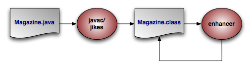 |
The diagram above illustrates the compilation of a persistent class.
You can add the OpenJPA enhancer to your build process, or use Java 1.5's instrumentation features to transparently enhance persistent classes when they are loaded into the JVM. The following sections describe each option.
The enhancer can be invoked at build time
via its Java class,
org.apache.openjpa.enhance.PCEnhancer.
Note
You can also enhance via Ant; see Section 1.2, “ Enhancer Ant Task ”.
The enhancer accepts the standard set of command-line arguments defined by the configuration framework (see Section 3, “ Command Line Configuration ” ), along with the following flags:
-directory/-d <output directory>: Path to the output directory. If the directory does not match the enhanced class' package, the package structure will be created beneath the directory. By default, the enhancer overwrites the original.classfile.-enforcePropertyRestrictions/-epr <true/t | false/f>: Whether to throw an exception when it appears that a property access entity is not obeying the restrictions placed on property access. Defaults to false.-addDefaultConstructor/-adc <true/t | false/f>: The spec requires that all persistent classes define a no-arg constructor. This flag tells the enhancer whether to add a protected no-arg constructor to any persistent classes that don't already have one. Defaults totrue.-tmpClassLoader/-tcl <true/t | false/f>: Whether to load persistent classes with a temporary class loader. This allows other code to then load the enhanced version of the class within the same JVM. Defaults totrue. Try setting this flag tofalseas a debugging step if you run into class loading problems when running the enhancer.
Each additional argument to the enhancer must be one of the following:
The full name of a class.
The .java file for a class.
The
.classfile of a class.
If you do not supply any arguments to the enhancer, it will run on the classes in your persistent class list (see Section 1, “ Persistent Class List ”).
You can run the enhancer over classes that have already been enhanced, in which case it will not further modify the class. You can also run it over classes that are not persistence-capable, in which case it will treat the class as persistence-aware. Persistence-aware classes can directly manipulate the persistent fields of persistence-capable classes.
Note that the enhancement process for subclasses introduces dependencies on the persistent parent class being enhanced. This is normally not problematic; however, when running the enhancer multiple times over a subclass whose parent class is not yet enhanced, class loading errors can occur. In the event of a class load error, simply re-compile and re-enhance the offending classes.
The Java EE 5 specification includes hooks to automatically enhance JPA entities when they are deployed into a container. Thus, if you are using a Java EE 5-compliant application server, OpenJPA will enhance your entities automatically at runtime. Note that if you prefer build-time enhancement, OpenJPA's runtime enhancer will correctly recognize and skip pre-enhanced classes.
If your application server does not support the Java EE 5 enhancement hooks, consider using the build-time enhancement described above, or the more general runtime enhancement described in the next section.
OpenJPA includes a Java agent for automatically enhancing
persistent classes as they are loaded into the JVM. Java agents are classes that
are invoked prior to your application's main method.
OpenJPA's agent uses JVM hooks to intercept all class loading to enhance classes
that have persistence metadata before the JVM loads them.
Searching for metadata for every class loaded by the JVM can slow application initialization. One way to speed things up is to take advantage of the optional persistent class list described in Section 1, “ Persistent Class List ”. If you declare a persistent class list, OpenJPA will only search for metadata for classes in that list.
To employ the OpenJPA agent, invoke java with the
-javaagent set to the path to your OpenJPA jar file.
Example 5.2. Using the OpenJPA Agent for Runtime Enhancement
java -javaagent:/home/dev/openjpa/lib/openjpa.jar com.xyz.Main
You can pass settings to the agent using OpenJPA's plugin syntax (see Section 4, “ Plugin Configuration ”). The agent accepts the long form of any of the standard configuration options (Section 3, “ Command Line Configuration ” ). It also accepts the following options, the first three of which correspond exactly to the same-named options of the enhancer tool described in Section 2.1, “ Enhancing at Build Time ”:
addDefaultConstructorenforcePropertyRestrictionsscanDevPath: Boolean indicating whether to scan the classpath for persistent types if none have been configured. If you do not specify a persistent types list and do not set this option to true, OpenJPA will check whether each class loaded into the JVM is persistent, and enhance it accordingly. This may slow down class load times significantly.classLoadEnhancement: Boolean controlling whether OpenJPA load-time class enhancement should be available in this JVM execution. Default:trueruntimeRedefinition: Boolean controlling whether OpenJPA class redefinition should be available in this JVM execution. Default:true
Example 5.3. Passing Options to the OpenJPA Agent
java -javaagent:/home/dev/openjpa/lib/openjpa.jar=addDefaultConstructor=false com.xyz.Main
If a javaagent is not provided via the command line and OpenJPA is running on the Sun 1.6 SDK (not the JRE), OpenJPA will attempt to dynamically load the Enhancer that was mentioned in the previous section. This support is provided as an ease of use feature and it is not recommended for use in a production system. Using this method of enhancement has the following caveats:
As stated previously, this is only supported on the Sun 1.6 SDK.
The dynamic runtime enhancer is plugged into the JVM during creation of the EntityManagerFactory. Any Entity classes that are loaded before the EntityManagerFactory is created will not be enhanced.
The command line javaagent settings are not configurable when using this method of enhancement.
When then dynamic enhancer is loaded, the following informational message is logged:
[java] jpa.enhancement INFO [main] openjpa.Runtime - OpenJPA dynamically loaded the class enhancer. Any classes that were not enhanced at build time will be enhanced when they are loaded by the JVM.
Setting the property openjpa.DynamicEnhancementAgent to false will disable this function.
OpenJPA does not require that the enhancer be run. If you do not run the enhancer, OpenJPA will fall back to one of several possible alternatives for state tracking, depending on the execution environment.
Deploy-time enhancement: if you are running your application inside a Java EE 5 container, or another environment that supports the JPA container contract, then OpenJPA will automatically perform class transformation at deploy time.
Java 6 class retransformation: if you are running your application in a Java 6 environment, OpenJPA will attempt to dynamically register a
ClassTransformerthat will redefine your persistent classes on the fly to track access to persistent data. Additionally, OpenJPA will create a subclass for each of your persistent classes. When you execute a query or traverse a relation, OpenJPA will return an instance of the subclass. This means that theinstanceofoperator will work as expected, buto.getClass()will return the subclass instead of the class that you wrote.You do not need to do anything at all to get this behavior. OpenJPA will automatically detect whether or not the execution environment is capable of Java 6 class retransformation.
Java 5 class redefinition: if you are running your application in a Java 5 environment, and you specify the OpenJPA javaagent, OpenJPA will use Java 5 class redefinition to redefine any persistent classes that are not enhanced by the OpenJPA javaagent. Aside from the requirement that you specify a javaagent on the command line, this behavior is exactly the same as the Java 6 class retransformation behavior. Of course, since the OpenJPA javaagent performs enhancement by default, this will only be available if you set the
classLoadEnhancementjavaagent flag tofalse, or on any classes that are skipped by the OpenJPA runtime enhancement process for some reason.Runtime Unenhanced Classes: AKA state comparison and subclassing. If you are running in a Java 5 environment without a javaagent, or in a Java 6 environment that does not support class retransformation, OpenJPA will still create subclasses as outlined above. However, in some cases, OpenJPA may not be able to receive notifications when you read or write persistent data.
Note
Runtime Unenhanced Classes has some known limitations which are discussed below and documented in JIRA issues on the OpenJPA website. As a result this option is disabled by default. Support for this method of automatic enhancement may be enabled via theSection 5.61, “openjpa.RuntimeUnenhancedClasses”option.To enable Runtime Unenhanced Classes for a specific persistence unit add the following property to persistence.xml :
<properties> . . . <property name="openjpa.RuntimeUnenhancedClasses" value="supported"/> . . . <properties>If you are using property access for your persistent data, then OpenJPA will be able to track all accesses for instances that you load from the database, but not for instances that you create. This is because OpenJPA will create new instances of its dynamically-generated subclass when it loads data from the database. The dynamically-generated subclass has code in the setters and getters that notify OpenJPA about persistent data access. This means that new instances that you create will be subject to state-comparison checks (see discussion below) to compute which fields to write to the database, and that OpenJPA will ignore requests to evict persistent data from such instances. In practice, this is not a particularly bad limitation, since OpenJPA already knows that it must insert all field values for new instances. So, this is only really an issue if you flush changes to the database while inserting new records; after such a flush, OpenJPA will need to hold potentially-unneeded hard references to the new-flushed instances.
If you are using field access for your persistent data, then OpenJPA will not be able to track accesses for any instances, including ones that you load from the database. So, OpenJPA will perform state-comparison checks to determine which fields are dirty. These state comparison checks are costly in two ways. First, there is a performance penalty at flush / commit time, since OpenJPA must walk through every field of every instance to determine which fields of which records are dirty. Second, there is a memory penalty, since OpenJPA must hold hard references to all instances that were loaded at any time in a given transaction, and since OpenJPA must keep a copy of all the initial values of the loaded data for later comparison. Additionally, OpenJPA will ignore requests to evict persistent state for these types of instances. Finally, the default lazy loading configuration will be ignored for single-valued fields (one-to-one, many-to-one, and any other non-collection or non-map field that has a lazy loading configuration). If you use fetch groups or programmatically configure your fetch plan, OpenJPA will obey these directives, but will be unable to lazily load any data that you exclude from loading. As a result of these limitations, it is not recommended that you use field access if you are not either running the enhancer or using OpenJPA with a javaagent or in a Java 6 environment.
OpenJPA's managed interface feature allows you to define your object model
entirely in terms of interfaces, instead of concrete classes. To use this
feature, you must annotate your managed interfaces with the
ManagedInterface annotation, and use the
OpenJPAEntityManager.createInstance(Class) method to
create new records. Note that createInstance() returns
unmanaged instances; you must pass them to
EntityManager.persist() to store them in the database.
@ManagedInterface
public interface PersonIface {
@Id @GeneratedValue
int getId();
void setId(int id);
// implicitly persistent per JPA property rules
String getName();
void setName(String name);
}
OpenJPAEntityManager em = ...;
PersonIface person = em.createInstance(PersonIface.class);
person.setName("Homer Simpson");
em.getTransaction().begin();
em.persist(person);
em.getTransaction().commit();
OpenJPA makes several enhancements to JPA's standard entity identity.
The JPA specification requires you to declare one or more identity fields in your persistent classes. OpenJPA fully supports this form of object identity, called application identity. OpenJPA, however, also supports datastore identity. In datastore identity, you do not declare any primary key fields. OpenJPA manages the identity of your persistent objects for you through a surrogate key in the database.
You can control how your JPA datastore identity value is generated through
OpenJPA's
org.apache.openjpa.persistence.DataStoreId class
annotation. This annotation has strategy and
generator properties that mirror the same-named properties on the
standard javax.persistence.GeneratedValue annotation
described in Section 2.3, “
Id
” of the JPA Overview.
To retrieve the identity value of a datastore identity entity, use the
OpenJPAEntityManager.getObjectId(Object entity)
method. See Section 2.2, “
OpenJPAEntityManager
” for more information on
the OpenJPAEntityManager.
Example 5.4. JPA Datastore Identity Metadata
import org.apache.openjpa.persistence.*;
@Entity
@DataStoreId
public class LineItem {
... no @Id fields declared ...
}
Internally, OpenJPA uses the public
org.apache.openjpa.util.Id class for datastore identity
objects. When writing OpenJPA plugins, you can manipulate datastore identity
objects by casting them to this class. You can also create your own
Id instances and pass them to any internal OpenJPA method that
expects an identity object.
In JPA, you will never see Id instances directly.
Instead, calling OpenJPAEntityManager.getObjectId on a
datastore identity object will return the Long surrogate
primary key value for that object. You can then use this value in calls to
EntityManager.find for subsequent lookups of the same
record.
OpenJPA allows ManyToOne and OneToOne
relations to be identity fields. To identify a relation field as an identity
field, simply annotate it with both the @ManyToOne or
@OneToOne relation annotation and the @Id
identity annotation.
When finding an entity identified by a relation, pass the id of the
relation to the EntityManager.find
method:
Example 5.5. Finding an Entity with an Entity Identity Field
public Delivery createDelivery(Order order) {
Delivery delivery = new Delivery();
delivery.setId(order);
delivery.setDelivered(new Date());
return delivery;
}
public Delivery findDelivery(EntityManager em, Order order) {
// use the identity of the related instance
return em.find(Delivery.class, order.getId());
}
When your entity has multiple identity fields, at least one of which is a
relation to another entity, you can use an identity class (see
Section 2.1, “
Identity Class
” in the JPA Overview), or
an embedded identity object. Identity class fields corresponding to
entity identity fields should be of the same type as the related entity's
identity. If an embedded identity object is used, you must annotate the
relation field with both the @ManyToOne or
@OneToOne relation annotation and the
@MappedById annotation.
Example 5.6. Id Class for Entity Identity Fields
@Entity
public class Order {
@Id
private long id;
...
}
/**
* LineItem uses a compound primary key. Part of the compound key
* LineItemId is relation or reference to Order instance.
**/
@Entity
@IdClass(LineItemId.class)
public class LineItem {
@Id
private int index;
@Id
@ManyToOne
private Order order;
...
}
public class LineItemId {
public int index;
public long order; // same type as identity of Order i.e Order.id
// also the variable name must match the name of the
// variable in LineItem that refers to Order.
}
In the example above, if Order had used an identity
class OrderId in place of a simple long
value, then the LineItemId.order field would
have been of type OrderId.
Example 5.7. Embedded Id for Entity Identity Fields
@Entity
public class Order {
@Id
private long id;
...
}
/**
* LineItem uses a compound primary key. Part of the compound key
* LineItemId is relation or reference to Order instance.
**/
@Entity
public class LineItem {
@EmbeddedId LineItemId id;
@ManyToOne
@MappedById("orderId") // The value element of the MappedById annotation
// must be used to specify the name of the primary
// key attribute to which the relationship
// corresponds. If the primary key referenced by
// the relationship attribute is of the same Java
// type as the dependent's primary key, then the
// value element is not specified.
private Order order;
...
}
@Embeddable
public class LineItemId {
public int index;
public long orderId;
}
In the example above, the LineItem uses an embedded id to
represent its primary key. The primary key attribute corresponding to the
relationship in the LineItemId must be of the same
type as the primary key of the Order. The
MappedById annotation must be applied to the relationship
field LineItem.order.
If you choose to use application identity, you may want to take advantage of OpenJPA's application identity tool. The application identity tool generates Java code implementing the identity class for any persistent type using application identity. The code satisfies all the requirements the specification places on identity classes. You can use it as-is, or simply use it as a starting point, editing it to meet your needs.
Before you can run the application identity tool on a persistent class, the class must be compiled and must have complete metadata. All primary key fields must be marked as such in the metadata.
In JPA metadata, do not attempt to specify the @IdClass
annotation unless you are using the application identity tool to overwrite an
existing identity class. Attempting to set the value of the @IdClass
to a non-existent class will prevent your persistent class from
compiling. Instead, use the -name or -suffix
options described below to tell OpenJPA what name to give your
generated identity class. Once the application identity tool has generated the
class code, you can set the @IdClass annotation.
The application identity tool can be invoked via its Java class,
org.apache.openjpa.enhance.ApplicationIdTool.
Note
Section 1.3, “ Application Identity Tool Ant Task ” describes the application identity tool's Ant task.
Example 5.8. Using the Application Identity Tool
java org.apache.openjpa.enhance.ApplicationIdTool -s Id Magazine.java
The application identity tool accepts the standard set of command-line arguments defined by the configuration framework (see Section 3, “ Command Line Configuration ”), including code formatting flags described in Section 3.1, “ Code Formatting ”. It also accepts the following arguments:
-directory/-d <output directory>: Path to the output directory. If the directory does not match the generated oid class' package, the package structure will be created beneath the directory. If not specified, the tool will first try to find the directory of the.javafile for the persistence-capable class, and failing that will use the current directory.-ignoreErrors/-i <true/t | false/f>: Iffalse, an exception will be thrown if the tool is run on any class that does not use application identity, or is not the base class in the inheritance hierarchy (recall that subclasses never define the application identity class; they inherit it from their persistent superclass).-token/-t <token>: The token to use to separate stringified primary key values in the string form of the object id. This option is only used if you have multiple primary key fields. It defaults to "::".-name/-n <id class name>: The name of the identity class to generate. If this option is specified, you must run the tool on exactly one class. If the class metadata already names an object id class, this option is ignored. If the name is not fully qualified, the persistent class' package is prepended to form the qualified name.-suffix/-s <id class suffix>: A string to suffix each persistent class name with to form the identity class name. This option is overridden by-nameor by any object id class specified in metadata.
Each additional argument to the tool must be one of the following:
The full name of a persistent class.
The .java file for a persistent class.
The
.classfile of a persistent class.
If you do not supply any arguments to the tool, it will act on the classes in your persistent classes list (see Section 1, “ Persistent Class List ”).
Section 2.4, “
Generated Value
” explains how to use JPA's
IDENTITY generation type to automatically assign field
values. However, here are some additional caveats you should be aware of when
using IDENTITY generation:
Your database must support auto-increment / identity columns, or some equivalent (see Section 4.4, “ OracleDictionary Properties ” for how to configure a combination of triggers and sequences to fake auto-increment support in Oracle).
Auto-increment / identity columns must be an integer or long integer type.
Databases support auto-increment / identity columns to varying degrees. Some do not support them at all. Others only allow a single such column per table, and require that it be the primary key column. More lenient databases may allow non-primary key auto-increment columns, and may allow more than one per table. See your database documentation for details.
Bidirectional relations are an essential part of data modeling.
Chapter 13,
Mapping Metadata
in the JPA Overview explains how to
use the mappedBy annotation attribute to form bidirectional
relations that also share datastore storage in JPA.
OpenJPA also allows you to define purely logical bidirectional relations. The
org.apache.openjpa.persistence.InverseLogical
annotation names a logical inverse in JPA metadata.
Example 5.9. Specifying Logical Inverses
Magazine.coverPhoto and Photograph.mag are
each mapped to different foreign keys in their respective tables, but form a
logical bidirectional relation. Only one of the fields needs to declare the
other as its logical inverse, though it is not an error to set the logical
inverse of both fields.
import org.apache.openjpa.persistence.*;
@Entity
public class Magazine {
@OneToOne
private Photograph coverPhoto;
...
}
@Entity
public class Photograph {
@OneToOne
@InverseLogical("coverPhoto")
private Magazine mag;
...
}
Java does not provide any native facilities to ensure that both sides of a bidirectional relation remain consistent. Whenever you set one side of the relation, you must manually set the other side as well.
By default, OpenJPA behaves the same way. OpenJPA does not automatically propagate changes from one field in bidirectional relation to the other field. This is in keeping with the philosophy of transparency, and also provides higher performance, as OpenJPA does not need to analyze your object graph to correct inconsistent relations.
If convenience is more important to you than strict transparency, however, you
can enable inverse relation management in OpenJPA. Set the
openjpa.InverseManager
plugin property to true for standard
management. Under this setting, OpenJPA detects changes to either side of a
bidirectional relation (logical or physical), and automatically sets the other
side appropriately on flush.
The inverse manager has options to log a warning or throw an exception when it
detects an inconsistent bidirectional relation, rather than correcting it. To
use these modes, set the manager's Action property to
warn or exception, respectively.
By default, OpenJPA excludes large
result set fields from management. You can force large result set fields
to be included by setting the ManageLRS plugin property to
true.
Example 5.11. Log Inconsistencies
<property name="openjpa.InverseManager" value="true(Action=warn)"/>
OpenJPA enhances the specification's support for persistent fields in many ways. This section documents aspects of OpenJPA's persistent field handling that may affect the way you design your persistent classes.
While the JPA specification says that you should not use rolled back objects,
such objects are perfectly valid in OpenJPA. You can control whether the
objects' managed state is rolled back to its pre-transaction values with the
openjpa.RestoreState
configuration property. none does not roll back state
(the object becomes hollow, and will re-load its state the next time it is
accessed), immutable restores immutable values (primitives,
primitive wrappers, strings) and clears mutable values so that they are reloaded
on next access, and all restores all managed values to their
pre-transaction state.
When loading data into a field, OpenJPA examines the value you assign the field in your declaration code or in your no-args constructor. If the field value's type is more specific than the field's declared type, OpenJPA uses the value type to hold the loaded data. OpenJPA also uses the comparator you've initialized the field with, if any. Therefore, you can use custom comparators on your persistent field simply by setting up the comparator and using it in your field's initial value.
Example 5.12. Using Initial Field Values
Though the annotations are left out for simplicity, assume
employeesBySal and departments are persistent
fields in the class below.
public class Company {
// OpenJPA will detect the custom comparator in the initial field value
// and use it whenever loading data from the database into this field
private Collection employeesBySal = new TreeSet(new SalaryComparator());
private Map departments;
public Company {
// or we can initialize fields in our no-args constructor; even though
// this field is declared type Map, OpenJPA will detect that it's
// actually a TreeMap and use natural ordering for loaded data
departments = new TreeMap();
}
// rest of class definition...
}
OpenJPA's support for the java.util.Calendar type will
store only the Date part of the field, not the
TimeZone associated with the field. When loading the date
into the Calendar field, OpenJPA will use the
TimeZone that was used to initialize the field.
At runtime, the values of all mutable second class object fields in persistent and transactional objects are replaced with implementation-specific proxies. On modification, these proxies notify their owning instance that they have been changed, so that the appropriate updates can be made on the datastore.
Most proxies only track whether or not they have been modified. Smart proxies for collection and map fields, however, keep a record of which elements have been added, removed, and changed. This record enables the OpenJPA runtime to make more efficient database updates on these fields.
When designing your persistent classes, keep in mind that you can optimize for
OpenJPA smart proxies by using fields of type java.util.Set
, java.util.TreeSet, and
java.util.HashSet for your collections whenever possible. Smart
proxies for these types are more efficient than proxies for
Lists. You can also design your own smart proxies to further
optimize OpenJPA for your usage patterns. See the section on
custom proxies for
details.
Under standard ORM behavior, traversing a persistent collection or map field brings the entire contents of that field into memory. Some persistent fields, however, might represent huge amounts of data, to the point that attempting to fully instantiate them can overwhelm the JVM or seriously degrade performance.
OpenJPA uses special proxy types to represent these "large result set" fields.
OpenJPA's large result set proxies do not cache any data in memory. Instead,
each operation on the proxy offloads the work to the database and returns the
proper result. For example, the contains method of a
large result set collection will perform a SELECT COUNT(*)
query with the proper WHERE conditions to find out if the
given element exists in the database's record of the collection. Similarly, each
time you obtain an iterator OpenJPA performs the proper query using the current
large result set settings, as
discussed in the JDBC chapter. As you
invoke Iterator.next, OpenJPA instantiates the result
objects on-demand.
You can free the resources used by a large result set iterator by passing it to
the static
OpenJPAPersistence.close method.
Example 5.13. Using a Large Result Set Iterator
import org.apache.openjpa.persistence.*;
...
Collection employees = company.getEmployees(); // employees is a lrs collection
Iterator itr = employees.iterator();
while (itr.hasNext())
process((Employee) itr.next());
OpenJPAPersistence.close(itr);
You can also add and remove from large result set proxies, just as with standard fields. OpenJPA keeps a record of all changes to the elements of the proxy, which it uses to make sure the proper results are always returned from collection and map methods, and to update the field's database record on commit.
In order to use large result set proxies in JPA, add the
org.apache.openjpa.persistence.LRS annotation to the
persistent field.
The following restrictions apply to large result set fields:
The field must be declared as either a
java.util.Collectionorjava.util.Map. It cannot be declared as any other type, including any sub-interface of collection or map, or any concrete collection or map class.The field cannot have an externalizer (see Section 6.5, “ Externalization ”).
Because they rely on their owning object for context, large result set proxies cannot be transferred from one persistent field to another. The following code would result in an error on commit:
Collection employees = company.getEmployees() // employees is a lrs collection company.setEmployees(null); anotherCompany.setEmployees(employees);
Example 5.14. Marking a Large Result Set Field
import org.apache.openjpa.persistence.*;
@Entity
public class Company {
@ManyToMany
@LRS private Collection<Employee> employees;
...
}
OpenJPA manages proxies through the
org.apache.openjpa.util.ProxyManager interface. OpenJPA
includes a default proxy manager, the
org.apache.openjpa.util.ProxyManagerImpl (with a plugin alias name
of default), that will meet the needs of most users. The
default proxy manager understands the following configuration properties:
TrackChanges: Whether to use smart proxies. Defaults totrue.AssertAllowedType: Whether to immediately throw an exception if you attempt to add an element to a collection or map that is not assignable to the element type declared in metadata. Defaults tofalse.
The default proxy manager can proxy the standard methods of any
Collection, List,
Map, Queue,
Date, or Calendar class,
including custom implementations. It can also proxy custom classes whose
accessor and mutator methods follow JavaBean naming conventions. Your custom
types must, however, meet the following criteria:
Custom container types must have a public no-arg constructor or a public constructor that takes a single
Comparatorparameter.Custom date types must have a public no-arg constructor or a public constructor that takes a single
longparameter representing the current time.Other custom types must have a public no-arg constructor or a public copy constructor. If a custom types does not have a copy constructor, it must be possible to fully copy an instance A by creating a new instance B and calling each of B's setters with the value from the corresponding getter on A.
If you have custom classes that must be proxied and do not meet these
requirements, OpenJPA allows you to define your own proxy classes and
your own proxy manager. See the openjpa.util package
Javadoc for details on the interfaces involved,
and the utility classes OpenJPA provides to assist you.
You can plug your custom proxy manager into the OpenJPA runtime through the
openjpa.ProxyManager
configuration property.
Example 5.15. Configuring the Proxy Manager
<property name="openjpa.ProxyManager" value="TrackChanges=false"/>
When objects are serialized, the DetachedStateField in
section Section 1.3.1, “
Detached State
”
will be used to help determine when build time proxies will be removed.
If runtime created proxies are being used (proxies not supplied by OpenJPA)
or if an entity has already been detached, then any found proxies will be
removed during serialization.
transient: Use a transient detached state field. This gives the benefits of a detached state field to local objects that are never serialized, but retains serialization compatibility for client tiers without access to the enhanced versions of your classes or the OpenJPA runtime. All proxies will be removed during serialization. This is the default.true: Use a non-transient detached state field so that objects crossing serialization barriers can still be attached efficiently. This requires, however, that your client tier have the enhanced versions of your classes and the OpenJPA runtime. No OpenJPA provided proxies will be removed during serialization.false: Do not use a detached state field. All proxies will be removed during serialization.
OpenJPA offers the ability to write custom field mappings in order to have complete control over the mechanism with which fields are stored, queried, and loaded from the datastore. Often, however, a custom mapping is overkill. There is often a simple transformation from a Java field value to its database representation. Thus, OpenJPA provides the externalization service. Externalization allows you to specify methods that will externalize a field value to its database equivalent on store and then rebuild the value from its externalized form on load.
Note
Fields of embeddable classes used for @EmbeddedId values in
JPA cannot have externalizers.
The OpenJPA
org.apache.openjpa.persistence.Externalizer
annotation sets the name of a method that will be invoked to convert
the field into its external form for database storage. You can specify either
the name of a non-static method, which will be invoked on the field value, or a
static method, which will be invoked with the field value as a parameter. Each
method can also take an optional
StoreContext parameter for access to a persistence context.
The return value of the method is the field's external form. By default, OpenJPA
assumes that all named methods belong to the field value's class (or its
superclasses). You can, however, specify static methods of other classes using
the format <class-name>.<method-name>.
Given a field of type CustomType that externalizes to a
string, the table below demonstrates several possible externalizer methods and
their corresponding metadata extensions.
Table 5.1. Externalizer Options
| Method | Extension |
|---|---|
public String CustomType.toString()
|
@Externalizer("toString")
|
public String CustomType.toString(StoreContext ctx)
|
@Externalizer("toString")
|
public static String AnyClass.toString(CustomType ct)
|
@Externalizer("AnyClass.toString")
|
public static String AnyClass.toString(CustomType ct, StoreContext ctx)
|
@Externalizer("AnyClass.toString")
|
The OpenJPA
org.apache.openjpa.persistence.Factory annotation
contains the name of a method that will be invoked to instantiate the field from
the external form stored in the database. Specify a static method name. The
method will be invoked with the externalized value and must return an
instance of the field type. The method can also take an optional
StoreContext parameter for access to a persistence context.
If a factory is not specified, OpenJPA will use the constructor of the field
type that takes a single argument of the external type, or will throw an
exception if no constructor with that signature exists.
Given a field of type CustomType that externalizes to a
string, the table below demonstrates several possible factory methods and their
corresponding metadata extensions.
Table 5.2. Factory Options
| Method | Extension |
|---|---|
public CustomType(String str)
| none |
public static CustomType CustomType.fromString(String str)
|
@Factory("fromString")
|
public static CustomType CustomType.fromString(String str, StoreContext ctx)
|
@Factory("fromString")
|
public static CustomType AnyClass.fromString(String str)
|
@Factory("AnyClass.fromString")
|
public static CustomType AnyClass.fromString(String str, StoreContext ctx)
|
@Factory("AnyClass.fromString")
|
If your externalized field is not a standard persistent type, you must
explicitly mark it persistent. In OpenJPA, you can force a persistent field
by annotating it with
org.apache.openjpa.persistence.Persistent annotation.
Note
If your custom field type is mutable and is not a standard collection, map, or
date class, OpenJPA will not be able to detect changes to the field. You must
mark the field dirty manually, or create a custom field proxy.
See
OpenJPAEntityManager.dirty for how to mark a
field dirty manually in JPA.
See Section 6.4, “
Proxies
” for a discussion of proxies.
You can externalize a field to virtually any value that is supported by OpenJPA's field mappings (embedded relations are the exception; you must declare your field to be a persistence-capable type in order to embed it). This means that a field can externalize to something as simple as a primitive, something as complex as a collection or map of entities, or anything in between. If you do choose to externalize to a collection or map, OpenJPA recognizes a family of metadata extensions for specifying type information for the externalized form of your fields - see Section 4.2.6, “ Type ”. If the external form of your field is an entity object or contains entities, OpenJPA will correctly include the objects in its persistence-by-reachability algorithms and its delete-dependent algorithms.
The example below demonstrates a few forms of externalization.
Example 5.16. Using Externalization
import org.apache.openjpa.persistence.*;
@Entity
public class Magazine {
// use Class.getName and Class.forName to go to/from strings
@Persistent
@Externalizer("getName")
@Factory("forName")
private Class cls;
// use URL.getExternalForm for externalization. no factory;
// we can rely on the URL string constructor
@Persistent
@Externalizer("toExternalForm")
private URL url;
// use our custom methods
@Persistent
@Externalizer("Magazine.authorsFromCustomType")
@Factory("Magazine.authorsToCustomType")
@ElementType(Author.class)
private CustomType customType;
public static Collection authorsFromCustomType(CustomType customType) {
... logic to pack custom type into a list of authors ...
}
public static CustomType authorsToCustomType(Collection authors) {
... logic to create custom type from a collection of authors ...
}
...
}
You can query externalized fields using parameters. Pass in a value of the field type when executing the query. OpenJPA will externalize the parameter using the externalizer method named in your metadata, and compare the externalized parameter with the value stored in the database. As a shortcut, OpenJPA also allows you to use parameters or literals of the field's externalized type in queries, as demonstrated in the example below.
Note
Currently, queries are limited to fields that externalize to a primitive, primitive wrapper, string, or date types, due to constraints on query syntax.
Example 5.17. Querying Externalization Fields
Assume the Magazine class has the same fields as in the
previous example.
// you can query using parameters
Query q = em.createQuery("select m from Magazine m where m.url = :u");
q.setParameter("u", new URL("http://www.solarmetric.com"));
List results = q.getResultList();
// or as a shortcut, you can use the externalized form directly
q = em.createQuery("select m from Magazine m where m.url = 'http://www.solarmetric.com'");
results = q.getResultList();
Externalization often takes simple constant values and transforms them to
constant values of a different type. An example would be storing a
boolean field as a char, where true
and false would be stored in the database as
'T' and 'F' respectively.
OpenJPA allows you to define these simple translations in metadata, so that the field behaves as in full-fledged externalization without requiring externalizer and factory methods. External values supports translation of pre-defined simple types (primitives, primitive wrappers, and Strings), to other pre-defined simple values.
Use the OpenJPA
org.apache.openjpa.persistence.ExternalValues
annotation to define external value translations. The values are
defined in a format similar to that of
configuration plugins, except that the value pairs represent Java and
datastore values. To convert the Java boolean values of true
and false to the character values T and
F, for example, you would use the extension value:
true=T,false=F.
If the type of the datastore value is different from the field's type, use the
org.apache.openjpa.persistence.Type annotation
to define the datastore type.
Example 5.18. Using External Values
This example uses external value translation to transform a string field to an integer in the database.
public class Magazine {
@ExternalValues({"SMALL=5", "MEDIUM=8", "LARGE=10"})
@Type(int.class)
private String sizeWidth;
...
}
Fetch groups are sets of fields that load together. They can be used to pool together associated fields in order to provide performance improvements over standard data fetching. Specifying fetch groups allows for tuning of lazy loading and eager fetching behavior.
The JPA Overview's Section 2.7.1, “ Fetch Type ” describes how to use JPA metadata annotations to control whether a field is fetched eagerly or lazily. Fetch groups add a dynamic aspect to this standard ability. As you will see, OpenJPA's JPA extensions allow you can add and remove fetch groups at runtime to vary the sets of fields that are eagerly loaded.
OpenJPA places any field that is eagerly loaded according to the JPA metadata rules into the built-in default fetch group. As its name implies, the default fetch group is active by default. You may also define your own named fetch groups and activate or deactivate them at runtime, as described later in this chapter. OpenJPA will eagerly-load the fields in all active fetch groups when loading objects from the datastore.
You create fetch groups with the
org.apache.openjpa.persistence.FetchGroup
annotation. If your class only has one custom fetch group, you can place this
annotation directly on the class declaration. Otherwise, use the
org.apache.openjpa.persistence.FetchGroups
annotation to declare an array of individual FetchGroup
values. The FetchGroup annotation has the following
properties:
String name: The name of the fetch group. Fetch group names are global, and are expected to be shared among classes. For example, a shopping website may use a detail fetch group in each product class to efficiently load all the data needed to display a product's "detail" page. The website might also define a sparse list fetch group containing only the fields needed to display a table of products, as in a search result.The following names are reserved for use by OpenJPA:
default,values,all,none, and any name beginning withjdo,jpa, oropenjpa.FetchAttribute[] attributes: The set of persistent fields or properties in the fetch group.String[] fetchGroups: Other fetch groups whose fields to include in this group.
As you might expect, listing a
org.apache.openjpa.persistence.FetchAttribute
within a FetchGroup includes the corresponding persistent
field or property in the fetch group. Each FetchAttribute
has the following properties:
String name: The name of the persistent field or property to include in the fetch group.recursionDepth: If the attribute represents a relation, the maximum number of same-typed relations to eager-fetch from this field. Defaults to 1. For example, consider anEmployeeclass with amanagerfield, also of typeEmployee. When we load anEmployeeand themanagerfield is in an active fetch group, the recursion depth (along with the max fetch depth setting, described below) determines whether we only retrieve the targetEmployeeand his manager (depth 1), or whether we also retrieve the manager's manager (depth 2), or the manager's manager's manager (depth 3), etc. Use -1 for unlimited depth.
Example 5.19. Custom Fetch Group Metadata
Creates a detail fetch group consisting of the
publisher and articles relations.
import org.apache.openjpa.persistence.*;
@Entity
@FetchGroups({
@FetchGroup(name="detail", attributes={
@FetchAttribute(name="publisher"),
@FetchAttribute(name="articles")
}),
...
})
public class Magazine {
...
}
A field can be a member of any number of fetch groups. A field can also declare a load fetch group. When you access a lazy-loaded field for the first time, OpenJPA makes a datastore trip to fetch that field's data. Sometimes, however, you know that whenever you access a lazy field A, you're likely to access lazy fields B and C as well. Therefore, it would be more efficient to fetch the data for A, B, and C in the same datastore trip. By setting A's load fetch group to the name of a fetch group containing B and C, you can tell OpenJPA to load all of these fields together when A is first accessed.
Use OpenJPA's
org.apache.openjpa.persistence.LoadFetchGroup
annotation to specify the load fetch group of any persistent field. The value of
the annotation is the name of a declared fetch group whose members should be
loaded along with the annotated field.
Example 5.20. Load Fetch Group Metadata
import org.apache.openjpa.persistence.*;
@Entity
@FetchGroups({
@FetchGroup(name="detail", attributes={
@FetchAttribute(name="publisher"),
@FetchAttribute(name="articles")
}),
...
})
public class Magazine {
@ManyToOne(fetch=FetchType.LAZY)
@LoadFetchGroup("detail")
private Publisher publisher;
...
}
You can control the default set of fetch groups with the
openjpa.FetchGroups
configuration property. Set this property to a comma-separated list of
fetch group names.
You can also set the system's default maximum fetch depth with the
openjpa.MaxFetchDepth
configuration property. The maximum fetch depth determines how "deep"
into the object graph to traverse when loading an instance. For example, with
a MaxFetchDepth of 1, OpenJPA will load at most the target
instance and its immediate relations. With a MaxFetchDepth
of 2, OpenJPA may load the target instance, its immediate relations, and
the relations of those relations. This works to arbitrary depth. In fact,
the default MaxFetchDepth value is -1, which symbolizes
infinite depth. Under this setting, OpenJPA will fetch configured relations
until it reaches the edges of the object graph. Of course, which relation
fields are loaded depends on whether the fields are eager or lazy, and on the
active fetch groups. A fetch group member's recursion depth may also limit
the fetch depth to something less than the configured maximum.
OpenJPA's OpenJPAEntityManager and
OpenJPAQuery extensions to the standard EntityManager
and Query interfaces provide access to a
org.apache.openjpa.persistence.FetchPlan object.
The FetchPlan maintains the set of active fetch groups
and the maximum fetch depth. It begins with the groups and depth defined in the
openjpa.FetchGroups and openjpa.MaxFetchDepth
properties, but allows you to add or remove groups and change the
maximum fetch depth for an individual EntityManager or
Query through the methods below.
public FetchPlan addFetchGroup(String group); public FetchPlan addFetchGroups(String... groups); public FetchPlan addFetchGroups(Collection groups); public FetchPlan removeFetchGrop(String group); public FetchPlan removeFetchGroups(String... groups); public FetchPlan removeFetchGroups(Collection groups); public FetchPlan resetFetchGroups(); public Collection<String> getFetchGroups(); public void clearFetchGroups(); public FetchPlan setMaxFetchDepth(int depth); public int getMaxFetchDepth();
Chapter 9,
Runtime Extensions
details the
OpenJPAEntityManager, OpenJPAQuery, and
FetchPlan interfaces.
Example 5.21. Using the FetchPlan
import org.apache.openjpa.persistence.*;
...
OpenJPAQuery kq = OpenJPAPersistence.cast(em.createQuery(...));
kq.getFetchPlan().setMaxFetchDepth(3).addFetchGroup("detail");
List results = kq.getResultList();
In addition to controlling fetch configuration on a per-fetch-group basis, you can configure OpenJPA to include particular fields in the current fetch plan. This allows you to add individual fields that are not in the default fetch group or in any other active fetch groups to the set of fields that will be eagerly loaded from the database.
JPA FetchPlan methods:
public FetchPlan addField(String field); public FetchPlan addFields(String... fields); public FetchPlan addFields(Class cls, String... fields); public FetchPlan addFields(Collection fields); public FetchPlan addFields(Class cls, Collection fields); public FetchPlan removeField(String field); public FetchPlan removeFields(String... fields); public FetchPlan removeFields(Class cls, String... fields); public FetchPlan removeFields(Collection fields); public FetchPlan removeFields(Class cls, Collection fields); public Collection<String> getFields(); public void clearFields();
The methods that take only string arguments use the fully-qualified field name,
such as org.mag.Magazine.publisher. Similarly,
getFields returns the set of fully-qualified field names. In all
methods, the named field must be defined in the class specified in the
invocation, not a superclass. So, if the field publisher is
defined in base class Publication rather than subclass
Magazine, you must invoke addField
(Publication.class, "publisher") and not addField
(Magazine.class, "publisher"). This is stricter than Java's default
field-masking algorithms, which would allow the latter method behavior if
Magazine did not also define a field called
publisher.
<title>Extended Path Lookup</title>
To include the fields defined in a super class by the subclass or to distinguish
between fields that are defined in both super- and subclass,
set setExtendedPathLookup(boolean) on FetchPlan
to true. By default, this option is set to
false, to reduce more extensive lookups for predominant use
cases.
In order to avoid the cost of reflection, OpenJPA does not perform any validation of the field name / class name pairs that you put into the fetch configuration. If you specify non-existent class / field pairs, nothing adverse will happen, but you will receive no notification of the fact that the specified configuration is not being used.
Example 5.22. Adding an Eager Field
import org.apache.openjpa.persistence.*; ... OpenJPAEntityManager kem = OpenJPAPersistence.cast(em); kem.getFetchPlan().addField(Magazine.class, "publisher"); Magazine mag = em.find(Magazine.class, magId);
Even when a direct relation is not eagerly fetched, OpenJPA selects the foreign key columns and caches the values. This way when you do traverse the relation, OpenJPA can often find the related object in its cache, or at least avoid joins when loading the related object from the database.
The above implicit foreign key-selecting behavior does not always apply when the relation is in a subclass table. If the subclass table would not otherwise be joined into the select, OpenJPA avoids the extra join just to select the foreign key values.
Eager fetching is the ability to efficiently load subclass data and related
objects along with the base instances being queried. Typically, OpenJPA has to
make a trip to the database whenever a relation is loaded, or when you first
access data that is mapped to a table other than the least-derived superclass
table. If you perform a query that returns 100 Person
objects, and then you have to retrieve the Address for
each person, OpenJPA may make as many as 101 queries (the initial query, plus
one for the address of each person returned). Or if some of the
Person instances turn out to be Employees,
where Employee has additional data in its own joined
table, OpenJPA once again might need to make extra database trips to access the
additional employee data. With eager fetching, OpenJPA can reduce these cases to
a single query.
Eager fetching only affects relations in the active fetch groups, and is limited by the declared maximum fetch depth and field recursion depth (see Section 7, “ Fetch Groups ”). In other words, relations that would not normally be loaded immediately when retrieving an object or accessing a field are not affected by eager fetching. In our example above, the address of each person would only be eagerly fetched if the query were configured to include the address field or its fetch group, or if the address were in the default fetch group. This allows you to control exactly which fields are eagerly fetched in different situations. Similarly, queries that exclude subclasses aren't affected by eager subclass fetching, described below.
Eager fetching has three modes:
none: No eager fetching is performed. Related objects are always loaded in an independent select statement. No joined subclass data is loaded unless it is in the table(s) for the base type being queried. Unjoined subclass data is loaded using separate select statements rather than a SQL UNION operation.join: In this mode, OpenJPA joins to to-one relations in the configured fetch groups. If OpenJPA is loading data for a single instance, then OpenJPA will also join to any collection field in the configured fetch groups. When loading data for multiple instances, though, (such as when executing aQuery) OpenJPA will not join to collections by default. Instead, OpenJPA defaults toparallelmode for collections, as described below. You can force OpenJPA use a join rather than parallel mode for a collection field using the metadata extension described in Section 9.2.1, “ Eager Fetch Mode ”.Under
joinmode, OpenJPA uses a left outer join (or inner join, if the relations' field metadata declares the relation non-nullable) to select the related data along with the data for the target objects. This process works recursively for to-one joins, so that ifPersonhas anAddress, andAddresshas aTelephoneNumber, and the fetch groups are configured correctly, OpenJPA might issue a single select that joins across the tables for all three classes. To-many joins can not recursively spawn other to-many joins, but they can spawn recursive to-one joins.Under the
joinsubclass fetch mode, subclass data in joined tables is selected by outer joining to all possible subclass tables of the type being queried. As you'll see below, subclass data fetching is configured separately from relation fetching, and can be disabled for specific classes.Note
Some databases may not support outer joins. Also, OpenJPA can not use outer joins if you have set the
DBDictionary'sJoinSyntaxtotraditional. See Section 6, “ Setting the SQL Join Syntax ”.parallel: Under this mode, OpenJPA selects to-one relations and joined collections as outlined in thejoinmode description above. Unjoined collection fields, however, are eagerly fetched using a separate select statement for each collection, executed in parallel with the select statement for the target objects. The parallel selects use theWHEREconditions from the primary select, but add their own joins to reach the related data. Thus, if you perform a query that returns 100Companyobjects, where each company has a list ofEmployeeobjects andDepartmentobjects, OpenJPA will make 3 queries. The first will select the company objects, the second will select the employees for those companies, and the third will select the departments for the same companies. Just as for joins, this process can be recursively applied to the objects in the relations being eagerly fetched. Continuing our example, if theEmployeeclass had a list ofProjectsin one of the fetch groups being loaded, OpenJPA would execute a single additional select in parallel to load the projects of all employees of the matching companies.Using an additional select to load each collection avoids transferring more data than necessary from the database to the application. If eager joins were used instead of parallel select statements, each collection added to the configured fetch groups would cause the amount of data being transferred to rise dangerously, to the point that you could easily overwhelm the network.
Polymorphic to-one relations to table-per-class mappings use parallel eager fetching because proper joins are impossible. You can force other to-one relations to use parallel rather than join mode eager fetching using the metadata extension described in Section 9.2.1, “ Eager Fetch Mode ”.
Parallel subclass fetch mode only applies to queries on joined inheritance hierarchies. Rather than outer-joining to subclass tables, OpenJPA will issue the query separately for each subclass. In all other situations, parallel subclass fetch mode acts just like join mode in regards to vertically-mapped subclasses.
When OpenJPA knows that it is selecting for a single object only, it never uses
parallelmode, because the additional selects can be made lazily just as efficiently. This mode only increases efficiency overjoinmode when multiple objects with eager relations are being loaded, or when multiple selects might be faster than joining to all possible subclasses.
You can control OpenJPA's default eager fetch mode through the
openjpa.jdbc.EagerFetchMode and
openjpa.jdbc.SubclassFetchMode configuration properties. Set
each of these properties to one of the mode names described in the previous
section: none, join, parallel. If left unset, the eager
fetch mode defaults to parallel and the subclass fetch mode
defaults to join These are generally the most robust and
performant strategies.
You can easily override the default fetch modes at runtime for any lookup or query through OpenJPA's fetch configuration APIs. See Chapter 9, Runtime Extensions for details.
Example 5.23. Setting the Default Eager Fetch Mode
<property name="openjpa.jdbc.EagerFetchMode" value="parallel"/> <property name="openjpa.jdbc.SubclassFetchMode" value="join"/>
Example 5.24. Setting the Eager Fetch Mode at Runtime
import org.apache.openjpa.persistence.*;
import org.apache.openjpa.persistence.jdbc.*;
...
Query q = em.createQuery("select p from Person p where p.address.state = 'TX'");
OpenJPAQuery kq = OpenJPAPersistence.cast(q);
JDBCFetchPlan fetch = (JDBCFetchPlan) kq.getFetchPlan();
fetch.setEagerFetchMode(FetchMode.PARALLEL);
fetch.setSubclassFetchMode(FetchMode.JOIN);
List results = q.getResultList();
You can specify a default subclass fetch mode for an individual class with the
metadata extension described in Section 9.1.1, “
Subclass Fetch Mode
”.
Note, however, that you cannot "upgrade" the runtime fetch mode with your class
setting. If the runtime fetch mode is none, no eager
subclass data fetching will take place, regardless of your metadata setting.
This applies to the eager fetch mode metadata extension as well (see
Section 9.2.1, “
Eager Fetch Mode
”). You can use this extension to
disable eager fetching on a field or to declare that a collection would rather
use joins than parallel selects or vice versa. But an extension value of
join won't cause any eager joining if the fetch
configuration's setting is none.
There are several important points that you should consider when using eager fetching:
When you are using
paralleleager fetch mode and you have large result sets enabled (see Section 10, “ Large Result Sets ”) or you place a range on a query, OpenJPA performs the needed parallel selects on one page of results at a time. For example, suppose yourFetchBatchSizeis set to 20, and you perform a large result set query on a class that has collection fields in the configured fetch groups. OpenJPA will immediately cache the first20results of the query usingjoinmode eager fetching only. Then, it will issue the extra selects needed to eager fetch your collection fields according toparallelmode. Each select will use a SQLINclause (or multipleORclauses if your class has a compound primary key) to limit the selected collection elements to those owned by the 20 cached results.Once you iterate past the first 20 results, OpenJPA will cache the next 20 and again issue any needed extra selects for collection fields, and so on. This pattern ensures that you get the benefits of eager fetching without bringing more data into memory than anticipated.
Once OpenJPA eager-joins into a class, it cannot issue any further eager to-many joins or parallel selects from that class in the same query. To-one joins, however, can recurse to any level.
Using a to-many join makes it impossible to determine the number of instances the result set contains without traversing the entire set. This is because each result object might be represented by multiple rows. Thus, queries with a range specification or queries configured for lazy result set traversal automatically turn off eager to-many joining.
OpenJPA cannot eagerly join to polymorphic relations to non-leaf classes in a table-per-class inheritance hierarchy. You can work around this restriction using the mapping extensions described in Section 9.2.2, “ Nonpolymorphic ”.
Table of Contents
The JPA Overview covers JPA metadata in Chapter 5, Metadata . This chapter discusses OpenJPA's extensions to standard JPA metadata.
The openjpa.MetaDataFactory
configuration property controls metadata loading and storing.
This property takes a plugin string (see
Section 4, “
Plugin Configuration
”) describing a concrete
org.apache.openjpa.meta.MetaDataFactory
implementation. A metadata factory can load mapping information as well as
persistence metadata, or it can leave mapping information to a separate
mapping factory (see
Section 5, “
Mapping Factory
”). OpenJPA recognizes the
following built-in metadata factories:
jpa: Standard JPA metadata. This is an alias for theorg.apache.openjpa.persistence.PersistenceMetaDataFactory.
JPA has built-in settings for listing your persistent classes, which the JPA Overview describes. OpenJPA supports these JPA standard settings by translating them into its own internal metadata factory properties. Each internal property represents a different mechanism for locating persistent types; you can choose the mechanism or combination of mechanisms that are most convenient. See Section 1, “ Persistent Class List ” for a discussion of when it is necessary to list your persistent classes.
Types: A semicolon-separated list of fully-qualified persistent class names.Resources: A semicolon-separated list of resource paths to metadata files or jar archives. Each jar archive will be scanned for annotated JPA entities.URLs: A semicolon-separated list of URLs of metadata files or jar archives. Each jar archive will be scanned for annotated JPA entities.ClasspathScan: A semicolon-separated list of directories or jar archives listed in your classpath. Each directory and jar archive will be scanned for annotated JPA entities.
Example 6.1. Setting a Standard Metadata Factory
<property name="openjpa.MetaDataFactory" value="jpa(ClasspathScan=build;lib.jar)"/>
Example 6.2. Setting a Custom Metadata Factory
<property name="openjpa.MetaDataFactory" value="com.xyz.CustomMetaDataFactory"/>
The openjpa.MetaDataRepository configuration property controls the configuration of the MetaDataRepository. The following are valid properties:
Preload: A boolean property. If true, OpenJPA will eagerly load the repository on EntityManagerFactory creation. As a result, all Entity classes will be eagerly loaded by the JVM. If false, the repository will be lazily loaded as Entity classes are loaded by the JVM. The default value is false.NoLock: If true, the repository will be treated as a read only data structure and minimal locking will be imposed on users. Preload must be set to true for OpenJPA to honor setting NoLock to true. The default value is false.
This section describes OpenJPA's core additions to standard entity metadata. We present the object-relational mapping syntax to support these additions in Section 7, “ Additional JPA Mappings ”. Finally, Section 4, “ Metadata Extensions ” covers additional extensions to JPA metadata that allow you to access auxiliary OpenJPA features.
JPA typically requires you to declare one or more Id fields
to act as primary keys. OpenJPA, however, can create and maintain a surrogate
primary key value when you do not declare any Id fields. This
form of persistent identity is called datastore identity.
Section 4, “
Object Identity
” discusses OpenJPA's support for
datastore identity in JPA. We cover how to map your datastore identity primary
key column in Section 7.1, “
Datastore Identity Mapping
”
Just as OpenJPA can maintain your entity's identity without any Id
fields, OpenJPA can maintain your entity's optimistic version without
any Version fields.
Section 7.2, “
Surrogate Version Mapping
” shows you how to map
surrogate version columns.
JPA defines Basic, Lob, Embedded
, ManyToOne, and OneToOne
persistence strategies for direct field values. OpenJPA supports all of these
standard strategies, but adds one of its own: Persistent.
The
org.apache.openjpa.persistence.Persistent
metadata annotation can represent any direct field value, including custom
types. It has the following properties:
FetchType fetch: Whether to load the field eagerly or lazily. Corresponds exactly to the same-named property of standard JPA annotations such asBasic. Defaults toFetchType.EAGER.CascadeType[] cascade: Array of enum values defining cascade behavior for this field. Corresponds exactly to the same-named property of standard JPA annotations such asManyToOne. Defaults to empty array.String mappedBy: Names the field in the related entity that maps this bidirectional relation. Corresponds to the same-named property of standard JPA annotations such asOneToOne.boolean optional: Whether the value can be null. Corresponds to the same-named property of standard JPA annotations such asManyToOne, but can apply to non-entity object values as well. Defaults totrue.boolean embedded: Set this property totrueif the field value is stored as an embedded object.
Though you can use the Persistent annotation in place of
most of the standard direct field annotations mentioned above, we recommend
primarily using it for non-standard and custom types for which no standard JPA
annotation exists. For example, Section 7.3, “
Multi-Column Mappings
”
demonstrates the use of the Persistent annotation
to denote a persistent java.awt.Point field.
JPA standardizes support for collections of entities with the
OneToMany and ManyToMany persistence strategies.
OpenJPA supports these strategies, and may be extended for other strategies as
well. For extended strategies, use the
org.apache.openjpa.persistence.PersistentCollection metadata
annotation to represents any persistent collection field. It has the following
properties:
Class elementType: The class of the collection elements. This information is usually taken from the parameterized collection element type. You must supply it explicitly, however, if your field isn't a parameterized type.FetchType fetch: Whether to load the collection eagerly or lazily. Corresponds exactly to the same-named property of standard JPA annotations such asBasic. Defaults toFetchType.LAZY.String mappedBy: Names the field in the related entity that maps this bidirectional relation. Corresponds to the same-named property of standard JPA annotations such asManyToMany.CascadeType[] elementCascade: Array of enum values defining cascade behavior for the collection elements. Corresponds exactly to thecascadeproperty of standard JPA annotations such asManyToMany. Defaults to empty array.boolean elementEmbedded: Set this property totrueif the elements are stored as embedded objects.
JPA has limited support for maps. If you extend JPA's standard map support to
encompass new mappings, use the
org.apache.openjpa.persistence.PersistentMap metadata
annotation to represent your custom persistent map fields. It has the
following properties:
Class keyType: The class of the map keys. This information is usually taken from the parameterized map key type. You must supply it explicitly, however, if your field isn't a parameterized type.Class elementType: The class of the map values. This information is usually taken from the parameterized map value type. You must supply it explicitly, however, if your field isn't a parameterized type.FetchType fetch: Whether to load the collection eagerly or lazily. Corresponds exactly to the same-named property of standard JPA annotations such asBasic. Defaults toFetchType.LAZY.CascadeType[] keyCascade: Array of enum values defining cascade behavior for the map keys. Corresponds exactly to thecascadeproperty of standard JPA annotations such asManyToOne. Defaults to empty array.CascadeType[] elementCascade: Array of enum values defining cascade behavior for the map values. Corresponds exactly to thecascadeproperty of standard JPA annotations such asManyToOne. Defaults to empty array.boolean keyEmbedded: Set this property totrueif the map keys are stored as embedded objects.boolean elementEmbedded: Set this property totrueif the map values are stored as embedded objects.
OpenJPA extends standard metadata to allow you to access advanced OpenJPA functionality. This section covers persistence metadata extensions; we discuss mapping metadata extensions in Section 9, “ Mapping Extensions ”. All metadata extensions are optional; OpenJPA will rely on its defaults when no explicit data is provided.
OpenJPA recognizes the following class extensions:
The
org.apache.openjpa.persistence.FetchGroups and
org.apache.openjpa.persistence.FetchGroup
annotations allow you to define fetch groups in your JPA entities.
Section 7, “
Fetch Groups
” discusses OpenJPA's support for fetch
groups in general; see Section 7.1, “
Custom Fetch Groups
” for how to
use these annotations in particular.
Section 1, “ Data Cache ” examines caching in OpenJPA. Metadata extensions allow individual classes to override system caching defaults.
OpenJPA defines the
org.apache.openjpa.persistence.DataCache
annotation for caching information. This annotation has the following
properties:
boolean enabled: Whether to cache data for instances of the class. Defaults totruefor base classes, or the superclass value for subclasses. If you set this property tofalse, all other properties are ignored.int timeout: The number of milliseconds data for the class remains valid. Use -1 for no timeout. Defaults to theopenjpa.DataCacheTimeoutproperty value.
The OpenJPA enhancer may add a synthetic field to detachable classes to hold detached state (see Section 1.3, “ Defining the Detached Object Graph ” for details). You can instead declare your own detached state field or suppress the creation of a detached state field altogether. In the latter case, your class must not use datastore identity, and should declare a version field to detect optimistic concurrency errors during detached modifications.
OpenJPA defines the
org.apache.openjpa.persistence.DetachedState
annotation for controlling detached state. When used to annotate a class,
DetachedState recognizes the following properties:
boolean enabled: Set to false to suppress the use of detached state.String fieldName: Use this property to declare your own detached state field. The field must be of typeObject. Typically this property is only used if the field is inherited from a non-persisted superclass. If the field is declared in your entity class, you will typically annotate the field directly, as described below.
If you declare your own detached state field, you can annotate that field with
DetachedState directly, rather than placing the
annotation at the class level and using the fieldName
property. When placed on a field, DetachedState acts as a
marker annotation; it does not recognize any properties. Your annotated field
must be of type Object.
OpenJPA recognizes the following field extensions:
In a dependent relation, the referenced object is deleted
whenever the owning object is deleted, or whenever the relation is severed by
nulling or resetting the owning field. For example, if the
Magazine.coverArticle field is marked dependent, then setting
Magazine.coverArticle to a new Article
instance will automatically delete the old Article stored
in the field. Similarly, deleting a Magazine object will
automatically delete its current cover Article. (This
latter processing is analogous to using JPA's CascadeType.REMOVE functionality
as described in Section 2.9.1, “
Cascade Type
”.) You can
prevent an orphaned dependent object from being automatically deleted by
assigning it to another relation in the same transaction.
OpenJPA offers a family of marker annotations to denote dependent relations in JPA entities:
org.apache.openjpa.persistence.Dependent: Marks a direct relation as dependent.org.apache.openjpa.persistence.ElementDependent: Marks the entity elements of a collection, array, or map field as dependent.org.apache.openjpa.persistence.KeyDependent: Marks the key entities in a map field as dependent.
The
org.apache.openjpa.persistence.LoadFetchGroup
annotation specifies a field's load fetch group.
Section 7, “
Fetch Groups
” discusses OpenJPA's support for fetch groups
in general; see Section 7.1, “
Custom Fetch Groups
” for how to use this
annotation in particular.
This boolean extension, denoted by the OpenJPA
org.apache.openjpa.persistence.LRS annotation,
indicates that a field should use OpenJPA's special large result set collection
or map proxies. A complete description of large result set proxies is available
in Section 6.4.2, “
Large Result Set Proxies
”.
This extension names the inverse field in a logical bidirectional relation.
To create a logical bidirectional relation in OpenJPA, use the
org.apache.openjpa.persistence.InverseLogical
annotation. We discuss logical bidirectional relations and this
extension in detail in Section 5, “
Managed Inverses
”.
The read-only extension makes a field unwritable. The extension only applies to existing persistent objects; new object fields are always writeable.
To mark a field read-only in JPA metadata, set the
org.apache.openjpa.persistence.ReadOnly
annotation to an
org.apache.openjpa.persistence.UpdateAction enum
value. The UpdateAction enum includes:
UpdateAction.IGNORE: Updates to the field are completely ignored. The field is not considered dirty. The new value will not even get stored in the OpenJPA data cache.UpdateAction.RESTRICT: Any attempt to change the field will result in an immediate exception.
OpenJPA has three levels of support for relations:
Relations that hold a reference to an object of a concrete persistent class are supported by storing the primary key values of the related instance in the database.
Relations that hold a reference to an object of an unknown persistent class are supported by storing the stringified identity value of the related instance. This level of support does not allow queries across the relation.
Relations that hold an unknown object or interface. The only way to support these relations is to serialize their value to the database. This does not allow you to query the field, and is not very efficient.
Clearly, when you declare a field's type to be another persistence-capable
class, OpenJPA uses level 1 support. By default, OpenJPA assumes that any
interface-typed fields you declare will be implemented only by other persistent
classes, and assigns interfaces level 2 support. The exception to this rule is
the java.io.Serializable interface. If you declare a
field to be of type Serializable, OpenJPA lumps it
together with java.lang.Object fields and other
non-interface, unrecognized field types, which are all assigned level 3 support.
With OpenJPA's type family of metadata extensions, you can control the level of
support given to your unknown/interface-typed fields. Setting the value of this
extension to Entity indicates that the
field value will always be some persistent object, and gives level 2 support.
Setting the value of this extension to the class of a concrete persistent type
is even better; it gives you level 1 support (just as if you had declared your
field to be of that type in the first place). Setting this extension to
Object uses level 3 support. This is useful when you have
an interface relation that may not hold other
persistent objects (recall that OpenJPA assumes interface fields will always
hold persistent instances by default).
This extension is also used with OpenJPA's externalization feature, described in Section 6.5, “ Externalization ”.
OpenJPA defines the following type annotations for field values, collection, array, and map elements, and map keys, respectively:
The OpenJPA
org.apache.openjpa.persistence.Externalizer
annotation names a method to transform a field value into a value of
another type. See Section 6.5, “
Externalization
” for details.
The OpenJPA
org.apache.openjpa.persistence.Factory annotation
names a method to re-create a field value from its externalized form. See
Section 6.5, “
Externalization
” for details.
The OpenJPA
org.apache.openjpa.persistence.ExternalValues
annotation declares values for transformation of simple fields to
different constant values in the datastore. See
Section 6.5.1, “
External Values
” for details.
The following example shows you how to specify extensions in metadata.
Example 6.4. OpenJPA Metadata Extensions
import org.apache.openjpa.persistence.*;
@Entity
@DataCache(enabled=false)
public class Magazine
{
@ManyToMany
@LRS
private Collection<Subscriber> subscribers;
@ExternalValues({"true=1", "false=2"})
@Type(int.class)
private boolean weekly;
...
}
Table of Contents
- 1. Forward Mapping
- 2. Reverse Mapping
- 3. Meet-in-the-Middle Mapping
- 4. Mapping Defaults
- 5. Mapping Factory
- 6. Non-Standard Joins
- 7. Additional JPA Mappings
- 8. Mapping Limitations
- 9. Mapping Extensions
- 10. Custom Mappings
- 11. Orphaned Keys
The JPA Overview's Chapter 13, Mapping Metadata explains object-relational mapping under JPA. This chapter reviews the mapping utilities OpenJPA provides and examines OpenJPA features that go beyond the JPA specification.
Forward mapping is the process of creating mappings and
their corresponding database schema from your object model. OpenJPA supports
forward mapping through the mapping tool. The next section
presents several common mapping tool use cases. You can invoke the tool through
its Java class,
org.apache.openjpa.jdbc.meta.MappingTool.
Note
Section 1.4, “ Mapping Tool Ant Task ” describes the mapping tool Ant task.
In addition to the universal flags of the configuration framework, the mapping tool accepts the following command line arguments:
-schemaAction/-sa <add | refresh | drop | build | retain | reflect | createDB | dropDB | import | export | none>: The action to take on the schema. These options correspond to the same-named actions on the schema tool described in Section 13, “ Schema Tool ”. Actions can be composed in a comma-separated list. Unless you are running the mapping tool on all of your persistent types at once or dropping a mapping, we strongly recommend you use the defaultaddaction or thebuildaction. Otherwise you may end up inadvertently dropping schema components that are used by classes you are not currently running the tool over.-schemaFile/-sf <stdout | output file>: Use this option to write the planned schema to an XML document rather than modify the database. The document can then be manipulated and committed to the database with the schema tool.-sqlFile/-sql <stdout | output file>: Use this option to write the planned schema modifications to a SQL script rather than modify the database. Combine this with aschemaActionofbuildto generate a script that recreates the schema for the current mappings, even if the schema already exists.-dropTables/-dt <true/t | false/f>: Corresponds to the same-named option on the schema tool.-dropSequences/-dsq <true/t | false/f>: Corresponds to the same-named option on the schema tool.-openjpaTables/-ot <true/t | false/f>: Corresponds to the same-named option on the schema tool.-ignoreErrors/-i <true/t | false/f>: Corresponds to the same-named option on the schema tool.-schemas/-s <schema and table names>: Corresponds to the same-named option on the schema tool. This option is ignored ifreadSchemais not set totrue.-readSchema/-rs <true/t | false/f>: Set this option totrueto read the entire existing schema when the tool runs. Reading the existing schema ensures that OpenJPA does not generate any mappings that use table, index, primary key, or foreign key names that conflict with existing names. Depending on the JDBC driver, though, it can be a slow process for large schemas.-primaryKeys/-pk <true/t | false/f>: Whether to read and manipulate primary key information of existing tables. Defaults to false.-foreignKeys/-fk <true/t | false/f>: Whether to read and manipulate foreign key information of existing tables. Defaults to false. This means that to add any new foreign keys to a class that has already been mapped, you must explicitly set this flag to true.-indexes/-ix <true/t | false/f>: Whether to read and manipulate index information of existing tables. Defaults to false. This means that to add any new indexes to a class that has already been mapped once, you must explicitly set this flag to true.-sequences/-sq <true/t | false/f>: Whether to manipulate sequences. Defaults to true.-meta/-m <true/t | false/f>: Whether the given action applies to metadata rather than or in addition to mappings.
The mapping tool also uses an -action/-a argument to specify
the action to take on each class. The available actions are:
buildSchema: This is the default action. It makes the database schema match your existing mappings. If your provided mappings conflict with your class definitions, OpenJPA will fail with an informative exception.validate: Ensure that the mappings for the given classes are valid and that they match the schema. No mappings or tables will be changed. An exception is thrown if any mappings are invalid.
Each additional argument to the tool should be one of:
The full name of a persistent class.
The .java file for a persistent class.
The
.classfile of a persistent class.
If you do not supply any arguments to the mapping tool, it will run on the classes in your persistent classes list (see Section 1, “ Persistent Class List ”).
The mappings generated by the mapping tool are stored by the system mapping factory. Section 5, “ Mapping Factory ” discusses your mapping factory options.
The JPA specification defines a comprehensive set of defaults for missing
mapping information. Thus, forward mapping in JPA is virtually automatic. After
using the mapping annotations covered in Chapter 13,
Mapping Metadata
of the JPA Overview to override any unsatisfactory defaults, run the
mapping tool on your persistent classes. The default buildSchema
mapping tool action manipulates the database schema to
match your mappings. It fails if any of your mappings don't match your object
model.
Example 7.2. Creating the Relational Schema from Mappings
java org.apache.openjpa.jdbc.meta.MappingTool Magazine.java
To drop the schema for a persistent class, set the mapping tool's
schemaAction to drop.
Example 7.4. Dropping Mappings and Association Schema
java org.apache.openjpa.jdbc.meta.MappingTool -schemaAction drop Magazine.java
The examples below show how to use the mapping tool to generate DDL SQL scripts, rather than modifying the database directly.
Example 7.5. Create DDL for Current Mappings
This example uses your existing mappings to determine the needed schema, then
writes the SQL to create that schema to create.sql.
java org.apache.openjpa.jdbc.meta.MappingTool -schemaAction build -sql create.sql Magazine.java
Example 7.6. Create DDL to Update Database for Current Mappings
This example uses your existing mappings to determine the needed schema. It then
writes the SQL to add any missing tables and columns to the current schema to
update.sql.
java org.apache.openjpa.jdbc.meta.MappingTool -sql update.sql Magazine.java
You can configure OpenJPA to automatically run the mapping tool at runtime
through the
openjpa.jdbc.SynchronizeMappings configuration property. Using
this property saves you the trouble of running the mapping tool manually, and is
meant for use during rapid test/debug cycles.
In order to enable automatic runtime mapping, you must first list all your persistent classes as described in Section 1, “ Persistent Class List ”.
OpenJPA will run the mapping tool on these classes when your application obtains
its first EntityManager.
The openjpa.jdbc.SynchronizeMappings property is a plugin
string (see Section 4, “
Plugin Configuration
”) where the class
name is the mapping tool action to invoke, and the properties are the
MappingTool class' JavaBean properties. These properties
correspond go the long versions of the tool's command line flags.
Example 7.7. Configuring Runtime Forward Mapping
<property name="openjpa.jdbc.SynchronizeMappings" value="buildSchema(ForeignKeys=true)"/>
The setting above corresponds to running the following command:
java org.apache.openjpa.jdbc.meta.MappingTool -action buildSchema -foreignKeys true
OpenJPA includes a reverse mapping tool for generating persistent class definitions, complete with metadata, from an existing database schema. You do not have to use the reverse mapping tool to access an existing schema; you are free to write your classes and mappings yourself, as described in Section 3, “ Meet-in-the-Middle Mapping ”. The reverse mapping tool, however, can give you an excellent starting point from which to grow your persistent classes.
To use the reverse mapping tool, follow the steps below:
Use the schema tool to export your current schema to an XML schema file. You can skip this step and the next step if you want to run the reverse mapping tool directly against the database.
Example 7.8. Reflection with the Schema Tool
java org.apache.openjpa.jdbc.schema.SchemaTool -a reflect -f schema.xml
Examine the generated schema file. JDBC drivers often provide incomplete or faulty metadata, in which case the file will not exactly match the actual schema. Alter the XML file to match the true schema. The XML format for the schema file is described in Section 14, “ XML Schema Format ”.
After fixing any errors in the schema file, modify the XML to include foreign keys between all relations. The schema tool will have automatically detected existing foreign key constraints; many schemas, however, do not employ database foreign keys for every relation. By manually adding any missing foreign keys, you will give the reverse mapping tool the information it needs to generate the proper relations between the persistent classes it creates.
Run the reverse mapping tool on the finished schema file. If you do not supply the schema file to reverse map, the tool will run directly against the schema in the database. The tool can be run via its Java class,
org.apache.openjpa.jdbc.meta.ReverseMappingTool.Example 7.9. Using the Reverse Mapping Tool
java org.apache.openjpa.jdbc.meta.ReverseMappingTool -pkg com.xyz -d ~/src -cp customizer.properties schema.xml
In addition to OpenJPA's standard configuration flags, including code formatting options, the reverse mapping tool recognizes the following command line arguments:
-schemas/-s <schema and table names>: A comma-separated list of schema and table names to reverse map, if no XML schema file is supplied. Each element of the list must follow the naming conventions for theopenjpa.jdbc.Schemasproperty described in Section 12.1, “ Schemas List ”. In fact, if this flag is omitted, it defaults to the value of theSchemasproperty. If theSchemasproperty is not defined, all schemas will be reverse-mapped.-package/-pkg <package name>: The package name of the generated classes. If no package name is given, the generated code will not contain package declarations.-directory/-d <output directory>: All generated code and metadata will be written to the directory at this path. If the path does not match the package of a class, the package structure will be created beneath this directory. Defaults to the current directory.-metadata/-md <class | package | none>: Specify the level the metadata should be generated at. Defaults to generating a single package-level metadata file. Set tononeto disable orm.xml generation.-annotations/-ann <true/t | false/f>: Set totrueto generate JPA annotations in generated Java classes.-accessType/-access <field | property>: Change access type for generated annotations. Defaults to field access.-useSchemaName/-sn <true/t | false/f>: Set this flag totrueto include the schema as well as table name in the name of each generated class. This can be useful when dealing with multiple schemas with same-named tables.-useForeignKeyName/-fkn <true/t | false/f>: Set this flag totrueif you would like field names for relations to be based on the database foreign key name. By default, relation field names are derived from the name of the related class.-nullableAsObject/-no <true/t | false/f>: By default, all non-foreign key columns are mapped to primitives. Set this flag totrueto generate primitive wrapper fields instead for columns that allow null values.-blobAsObject/-bo <true/t | false/f>: By default, all binary columns are mapped tobyte[]fields. Set this flag totrueto map them toObjectfields instead. Note that when mapped this way, the column is presumed to contain a serialized Java object.-primaryKeyOnJoin/-pkj <true/t | false/f>: The standard reverse mapping tool behavior is to map all tables with primary keys to persistent classes. If your schema has primary keys on many-many join tables as well, set this flag totrueto avoid creating classes for those tables.-inverseRelations/-ir <true/t | false/f>: Set tofalseto prevent the creation of inverse 1-many/1-1 relations for every many-1/1-1 relation detected.-useGenericCollections/-gc <true/t | false/f>: Set to true to use generic collections on OneToMany and ManyToMany relations.-useDatastoreIdentity/-ds <true/t | false/f>: Set totrueto use datastore identity for tables that have single numeric primary key columns. The tool typically uses application identity for all generated classes.-useBuiltinIdentityClass/-bic <true/t | false/f>: Set tofalseto prevent the tool from using built-in application identity classes when possible. This will force the tool to create custom application identity classes even when there is only one primary key column.-innerIdentityClasses/-inn <true/t | false/f>: Set totrueto have any generated application identity classes be created as static inner classes within the persistent classes. Defaults tofalse.-identityClassSuffix/-is <suffix>: Suffix to append to class names to form application identity class names, or for inner identity classes, the inner class name. Defaults toId.-typeMap/-typ <type mapping>: A string that specifies the default Java classes to generate for each SQL type that is seen in the schema. The format isSQLTYPE1=JavaClass1,SQLTYPE2=JavaClass2. The SQL type name first looks for a customization based onSQLTYPE(SIZE,PRECISION), thenSQLTYPE(SIZE), thenSQLTYPE. So if a column whose type name isCHARis found, it will first look for theCHAR(50,0)type name specification, then it will look forCHAR(50), and finally it will just look forCHAR. For example, to generate a char array for everyCHARcolumn whose size is exactly 50, and to generate ashortfor every type name ofINTEGER, you might specify:CHAR(50)=char[],INTEGER=short. Note that since various databases report different type names differently, one database's type name specification might not work for another database. EnableTRACElevel logging on theMetaDatachannel to track which type names OpenJPA is examining.-customizerClass/-cc <class name>: The full class name of aorg.apache.openjpa.jdbc.meta.ReverseCustomizercustomization plugin. If you do not specify a reverse customizer of your own, the system defaults to aPropertiesReverseCustomizer. This customizer allows you to specify simple customization options in the properties file given with the-customizerPropertiesflag below. We present the available property keys below.-customizerProperties/-cp <properties file or resource>: The path or resource name of a properties file to pass to the reverse customizer on initialization.-customizer./-c.<property name> <property value>: The given property name will be matched with the corresponding Java bean property in the specified reverse customizer, and set to the given value.
Running the tool will generate
.javafiles for each generated class (and its application identity class, if applicable), along with JPA annotations (if enabled by setting-annotations true), or anorm.xmlfile (if not disabled with-metadata none) containing the corresponding persistence metadata.Examine the generated class, metadata, and mapping information, and modify it as necessary. Remember that the reverse mapping tool only provides a starting point, and you are free to make whatever modifications you like to the code it generates.
After you are satisfied with the generated classes and their mappings, you should first compile the classes with
javac,jikes, or your favorite Java compiler. Make sure the classes are located in the directory corresponding to the-packageflag you gave the reverse mapping tool. Next, if you have generated anorm.xml, move that file to aMETA-INFdirectory within a directory in your classpath. Finally, enhance the classes if necessary (see Section 2, “ Enhancement ”).
Your persistent classes are now ready to access your existing schema.
The org.apache.openjpa.jdbc.meta.ReverseCustomizer plugin
interface allows you to customize the reverse mapping process. See the class
Javadoc for details on the hooks that this interface provides. Specify
the concrete plugin implementation to use with the
-customizerClass/-cc command-line flag, described in the preceding
section.
By default, the reverse mapping tool uses a
org.apache.openjpa.jdbc.meta.PropertiesReverseCustomizer
. This customizer allows you to perform relatively simple
customizations through the properties file named with the
-customizerProperties tool flag. The customizer recognizes the
following properties:
<table name>.table-type <type>: Override the default type of the table with name<table name>. Legal values are:base: Primary table for a base class.secondary: Secondary table for a class. The table must have a foreign key joining to a class table.secondary-outer: Outer-joined secondary table for a class. The table must have a foreign key joining to a class table.association: Association table. The table must have two foreign keys to class tables.collection: Collection table. The table must have one foreign key to a class table and one data column.subclass: A joined subclass table. The table must have a foreign key to the superclass' table.none: The table should not be reverse-mapped.
<class name>.rename <new class name>: Override the given tool-generated name<class name>with a new value. Use full class names, including package. You are free to rename a class to a new package. Specify a value ofnoneto reject the class and leave the corresponding table unmapped.<table name>.class-name <new class name>: Assign the given fully-qualified class name to the type created from the table with name<table name>. Use a value ofnoneto prevent reverse mapping this table. This property can be used in place of therenameproperty.<class name>.identity <datastore | builtin | identity class name>: Set this property todatastoreto use datastore identity for the class<class name>,builtinto use a built-in identity class, or the desired application identity class name. Give full class names, including package. You are free to change the package of the identity class this way. If the persistent class has been renamed, use the new class name for this property key. Remember that datastore identity requires a table with a single numeric primary key column, and built-in identity requires a single primary key column of any type.<class name>.<field name>.rename <new field name>: Override the tool-generated<field name>in class<class name>with the given name. Use the field owner's full class name in the property key. If the field owner's class was renamed, use the new class name. The property value should be the new field name, without the preceding class name. Use a value ofnoneto reject the generated mapping and remove the field from the class.<table name>.<column name>.field-name <new field name>: Set the generated field name for the<table name>table's<column name>column. If this is a multi-column mapping, any of the columns can be used. Use a value ofnoneto prevent the column and its associated columns from being reverse-mapped.<class name>.<field name>.type <field type>: The type to give the named field. Use full class names. If the field or the field's owner class has been renamed, use the new name.<class name>.<field name>.value: The initial value for the named field. The given string will be placed as-is in the generated Java code, so be sure it is valid Java. If the field or the field's owner class has been renamed, use the new name.
All property keys are optional; if not specified, the customizer keeps the default value generated by the reverse mapping tool.
Example 7.10. Customizing Reverse Mapping with Properties
java org.apache.openjpa.jdbc.meta.ReverseMappingTool -pkg com.xyz -cp custom.properties schema.xml
Example custom.properties:
com.xyz.TblMagazine.rename: com.xyz.Magazine com.xyz.TblArticle.rename: com.xyz.Article com.xyz.TblPubCompany.rename: com.xyz.pub.Company com.xyz.TblSysInfo.rename: none com.xyz.Magazine.allArticles.rename: articles com.xyz.Magazine.articles.type: java.util.Collection com.xyz.Magazine.articles.value: new TreeSet() com.xyz.Magazine.identity: datastore com.xyz.pub.Company.identity: com.xyz.pub.CompanyId
In the meet-in-the-middle
mapping approach, you control both the relational model and the object model. It
is up to you to define the mappings between these models. The mapping
tool's validate action is useful to meet-in-the-middle
mappers. This action verifies that the mapping information for a class matches
the class definition and the existing schema. It throws an informative exception
when your mappings are incorrect.
Example 7.11. Validating Mappings
java org.apache.openjpa.jdbc.meta.MappingTool -action validate Magazine.java
The buildSchema action we discussed in
Section 1, “
Forward Mapping
” is also somewhat useful
during meet-in-the-middle mapping. Unlike the validate
action, which throws an exception if your mapping data does not match the
existing schema, the buildSchema action assumes your mapping
data is correct, and modifies the schema to match your mappings. This lets you
modify your mapping data manually, but saves you the hassle of using your
database's tools to bring the schema up-to-date.
The previous sections showed how to use the mapping tool to generate default
mappings. But how does the mapping tool know what mappings to generate? The
answer lies in the
org.apache.openjpa.jdbc.meta.MappingDefaults
interface. OpenJPA uses an instance of this interface to decide how to name
tables and columns, where to put foreign keys, and generally how to create a
schema that matches your object model.
Important
OpenJPA relies on foreign key constraint information at runtime to order SQL appropriately. Be sure to set your mapping defaults to reflect your existing database constraints, set the schema factory to reflect on the database for constraint information (see Section 12.2, “ Schema Factory ”), or use explicit foreign key mappings as described in Section 7.9.2, “ Foreign Keys ”.
The
openjpa.jdbc.MappingDefaults configuration property controls
the MappingDefaults interface implementation in use. This
is a plugin property (see Section 4, “
Plugin Configuration
”), so
you can substitute your own implementation or configure the existing ones.
OpenJPA includes the following standard implementations:
jpa: Provides defaults in compliance with the JPA standard. This is an alias for theorg.apache.openjpa.persistence.jdbc.PersistenceMappingDefaultsclass. This class extends theMappingDefaultsImplclass described below, so it has all the same properties (though with different default values), as well as:PrependFieldNameToJoinTableInverseJoinColumns: Whether to prepend the owning field name to the names of inverse join columns in join tables. Defaults to true per the JPA specification. Set to false for compatibility with older OpenJPA versions which did not prepend the field name.
default: This is an alias for theorg.apache.openjpa.jdbc.meta.MappingDefaultsImplclass. This default implementation is highly configurable. It has the following properties:DefaultMissingInfo: Whether to default missing column and table names rather than throw an exception. If set to false, full explicit mappings are required at runtime and when using mapping tool actions likebuildSchemaandvalidate.RemoveHungarianNotation: Switches on/off removal of Hungarian notation when generating column names. Fields such asmFoobarandstrBarFoowould become columns namedfoobarandbarfoorespectively. OpenJPA will search for the first instance of a uppercase character in the field name and then truncate the column name to remove anything before it.BaseClassStrategy: The default mapping strategy for base classes. You can specify a built-in strategy alias or the full class name of a custom class strategy. You can also use OpenJPA's plugin format (see Section 4, “ Plugin Configuration ”) to pass arguments to the strategy instance. See theorg.apache.openjpa.jdbc.meta.stratspackage for available strategies.SubclassStrategy: The default mapping strategy for subclasses. You can specify a builtin strategy alias or the full class name of a custom class strategy. You can also use OpenJPA's plugin format (see Section 4, “ Plugin Configuration ”) to pass arguments to the strategy instance. Common strategies areverticalandflat, the default. See theorg.apache.openjpa.jdbc.meta.stratspackage for all available strategies.VersionStrategy: The default version strategy for classes without a version field. You can specify a builtin strategy alias or the full class name of a custom version strategy. You can also use OpenJPA's plugin format (see Section 4, “ Plugin Configuration ”) to pass arguments to the strategy instance. Common strategies arenone,state-comparison,timestamp, andversion-number, the default. See theorg.apache.openjpa.jdbc.meta.stratspackage for all available strategies.DiscriminatorStrategy: The default discriminator strategy when no discriminator value is given. You can specify a builtin strategy alias or the full class name of a custom discriminator strategy. You can also use OpenJPA's plugin format (see Section 4, “ Plugin Configuration ”) to pass arguments to the strategy instance. Common strategies arefinalfor a base class without subclasses,noneto use joins to subclass tables rather than a discriminator column, andclass-name, the default. See theorg.apache.openjpa.jdbc.meta.stratspackage for all available strategies.FieldStrategies: This property associates field types with custom strategies. The format of this property is similar to that of plugin strings (see Section 4, “ Plugin Configuration ” ), without the class name. It is a comma-separated list of key/value pairs, where each key is a possible field type, and each value is itself a plugin string describing the strategy for that type. We present an example below. See Section 10.3, “ Custom Field Mapping ” for information on custom field strategies.ForeignKeyDeleteAction: The default delete action of foreign keys representing relations to other objects. Recognized values includerestrict,cascade,null,default. These values correspond exactly to the standard database foreign key actions of the same names.The value
nonetells OpenJPA not to create database foreign keys on relation columns. This is the default.JoinForeignKeyDeleteAction: The default delete action of foreign keys that join secondary, collection, map, or subclass tables to the primary table. Accepts the same values as theForeignKeyDeleteActionproperty above.DeferConstraints: Whether to use deferred database constraints if possible. Defaults to false.IndexLogicalForeignKeys: Boolean property controlling whether to create indexes on logical foreign keys. Logical foreign keys are columns that represent a link between tables, but have been configured through theForeignKeyproperties above not to use a physical database foreign key. Defaults to true.DataStoreIdColumnName: The default name of datastore identity columns.DiscriminatorColumnName: The default name of discriminator columns.IndexDiscriminator: Whether to index the discriminator column. Defaults to true.VersionColumnName: The default name of version columns.IndexVersion: Whether to index the version column. Defaults to false.AddNullIndicator: Whether to create a synthetic null indicator column for embedded mappings. The null indicator column allows OpenJPA to distinguish between a null embedded object and one with default values for all persistent fields.NullIndicatorColumnName: The default name of synthetic null indicator columns for embedded objects.OrderLists: Whether to create a database ordering column for maintaining the order of persistent lists and arrays.OrderColumnName: The default name of collection and array ordering columns.StoreEnumOrdinal: Set to true to store enum fields as numeric ordinal values in the database. The default is to store the enum value name as a string, which is more robust if the Java enum declaration might be rearranged.StoreUnmappedObjectIdString: Set to true to store the stringified identity of related objects when the declared related type is unmapped. By default, OpenJPA stores the related object's primary key value(s). However, this breaks down if different subclasses of the related type use incompatible primary key structures. In that case, stringifying the identity value is the better choice.
The example below turns on foreign key generation during schema creation and
associates the org.mag.data.InfoStruct field type with
the custom org.mag.mapping.InfoStructHandler value
handler.
Example 7.12. Configuring Mapping Defaults
<property name="openjpa.jdbc.MappingDefaults"
value="ForeignKeyDeleteAction=restrict,
FieldStrategies='org.mag.data.InfoStruct=org.mag.mapping.InfoStructHandler'"/>
An important decision in the object-relational mapping process is how and where to store the data necessary to map your persistent classes to the database schema.
Section 1, “
Metadata Factory
” introduced OpenJPA's
MetaDataFactory interface. OpenJPA uses this same interface to
abstract the storage and retrieval of mapping information. OpenJPA includes the
built-in mapping factories below, and you can create your own factory if you
have custom needs. You control which mapping factory OpenJPA uses with the
openjpa.jdbc.MappingFactory configuration property.
The bundled mapping factories are:
-: Leaving theopenjpa.jdbc.MappingFactoryproperty unset allows your metadata factory to take over mappings as well. If you are using the defaultjpametadata factory, OpenJPA will read mapping information from your annotations andorm.xmlwhen you leave the mapping factory unspecified.
Example 7.13. Standard JPA Configuration
In the standard JPA configuration, the mapping factory is left unset.
<property name="openjpa.MetaDataFactory" value="jpa"/>
The JPA Overview's Chapter 13, Mapping Metadata explains join mapping. All of the examples in that document, however, use "standard" joins, in that there is one foreign key column for each primary key column in the target table. OpenJPA supports additional join patterns, including partial primary key joins, non-primary key joins, and joins using constant values.
In a partial primary key join, the source table only has foreign key columns for a subset of the primary key columns in the target table. So long as this subset of columns correctly identifies the proper row(s) in the referenced table, OpenJPA will function properly. There is no special syntax for expressing a partial primary key join - just do not include column definitions for missing foreign key columns.
In a non-primary key join, at least one of the target columns is not a primary
key. Once again, OpenJPA supports this join type with the same syntax as a
primary key join. There is one restriction, however: each non-primary key column
you are joining to must be controlled by a field mapping that implements the
org.apache.openjpa.jdbc.meta.Joinable interface. All built
in basic mappings implement this interface, including basic fields of embedded
objects. OpenJPA will also respect any custom mappings that implement this
interface. See Section 10, “
Custom Mappings
” for an
examination of custom mappings.
Not all joins consist of only links between columns. In some cases you might have a schema in which one of the join criteria is that a column in the source or target table must have some constant value. OpenJPA calls joins involving constant values constant joins.
To form a constant join in JPA mapping, first set the JoinColumn
's name attribute to the name of the column. If the
column with the constant value is the target of the join, give its fully
qualified name in the form <table name>.<column name>
. Next, set the referencedColumnName attribute to
the constant value. If the constant value is a string, place it in single quotes
to differentiate it from a column name.
| 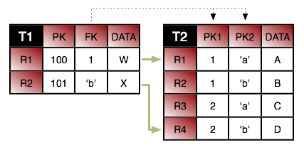 |
Consider the tables above. First, we want to join row T1.R1
to row T2.R1. If we just join column T1.FK
to T2.PK1, we will wind up matching both T2.R1
and T2.R2. So in addition to joining
T1.FK to T2.PK1, we also have to specify that
T2.PK2 has the value a. Here is how we'd
accomplish this in mapping metadata.
@Entity
@Table(name="T1")
public class ... {
@ManyToOne
@JoinColumns({
@JoinColumn(name="FK" referencedColumnName="PK1"),
@JoinColumn(name="T2.PK2" referencedColumnName="'a'")
});
private ...;
}
Notice that we had to fully qualify the name of column PK2
because it is in the target table. Also notice that we put single quotes around
the constant value so that it won't be confused with a column name. You do not
need single quotes for numeric constants. For example, the syntax to join
T1.R2 to T2.R4 is:
@Entity
@Table(name="T1")
public class ... {
@ManyToOne
@JoinColumns({
@JoinColumn(name="FK" referencedColumnName="PK2"),
@JoinColumn(name="T2.PK1" referencedColumnName="2")
});
private ...;
}
Finally, from the inverse direction, these joins would look like this:
@Entity
@Table(name="T2")
public class ... {
@ManyToOne
@JoinColumns({
@JoinColumn(name="T1.FK" referencedColumnName="PK1"),
@JoinColumn(name="PK2" referencedColumnName="'a'")
});
private ...;
@ManyToOne
@JoinColumns({
@JoinColumn(name="T1.FK" referencedColumnName="PK2"),
@JoinColumn(name="PK1" referencedColumnName="2")
});
private ...;
}
OpenJPA supports many persistence strategies beyond those of the JPA specification. Section 3, “ Additional JPA Metadata ” covered the logical metadata for OpenJPA's additional persistence strategies. We now demonstrate how to map entities using these strategies to the database.
Section 4, “
Object Identity
” describes how to use datastore identity
in JPA. OpenJPA requires a single numeric primary key column to hold datastore
identity values. The
org.apache.openjpa.persistence.jdbc.DataStoreIdColumn
annotation customizes the datastore identity column. This annotation
has the following properties:
String name: Defaults toID.int precisionString columnDefinitionboolean insertableboolean updatable
All properties correspond exactly to the same-named properties on the standard
Column annotation, described in
Section 3, “
Column
”.
Example 7.14. Datastore Identity Mapping
import org.apache.openjpa.persistence.*;
import org.apache.openjpa.persistence.jdbc.*;
@Entity
@Table(name="LOGS")
@DataStoreIdColumn(name="ENTRY")
public class LogEntry {
@Lob
private String content;
...
}
OpenJPA supports version fields as defined by the JPA specification, but allows
you to use a surrogate version column in place of a version field if you like.
You map the surrogate version column with the
org.apache.openjpa.persistence.jdbc.VersionColumn
annotation. You can also use the
org.apache.openjpa.persistence.jdbc.VersionColumns
annotation to declare an array of VersionColumn
values. Each VersionColumn has the following properties:
String name: Defaults toVERSN.String tableint lengthint precisionint scaleString columnDefinitionboolean nullableboolean insertableboolean updatable
All properties correspond exactly to the same-named properties on the standard
Column annotation, described in
Section 3, “
Column
”.
By default, OpenJPA assumes that surrogate versioning uses a version number
strategy. You can choose a different strategy with the
VersionStrategy annotation described in
Section 9.1.4, “
Version Strategy
”.
If multiple columns are used for surrogate versioning, then each column,
by default, uses a version number. But column definition for each version
column can be set independently to other numeric types. The version values are
compared to detect optimistic concurrent modification. Such comparison must
determine whether a version value v1 represents an earlier,
later or same with respect to another version value v2. While
result of such comparison is obvious for a single numeric column that
monotonically increases on each update, the same is not true when version value
is an array of numbers. By default, OpenJPA compares a version
v1 as later than another version v2,
if any array element of v1 is
later than the corresponding element of v2.
v1 is equal to v2 if every array element
is equal and v1 is earlier to v1 if some
elements of v1 are earlier and rest are equal to corresponding
element of v2.
Multiple surrogate version columns can be spread across primary and secondary
tables. For example, following example shows 3 version columns
v01, v11, v12, v21 defined across the primary and secondary tables of
a persistent entity
@Entity
@Table(name="PRIMARY")
@SecondaryTables({
@SecondaryTable(name = "SECONDARY_1"),
@SecondaryTable(name = "SECONDARY_2")
})
@VersionStrategy("version-numbers")
@VersionColumns({
@VersionColumn(name = "v01") // default is the PRIMARY table
@VersionColumn(name = "v11", table="SECONDARY_1", columnDefinition="FLOAT", scale=3, precision=10),
@VersionColumn(name = "v12", table="SECONDARY_1"),
@VersionColumn(name = "v21", table="SECONDARY_2"),
})
OpenJPA makes it easy to create multi-column
custom mappings. The JPA
specification includes a Column annotation, but is
missing a way to declare multiple columns for a single field. OpenJPA remedies
this with the
org.apache.openjpa.persistence.jdbc.Columns
annotation, which contains an array of Column values.
Remember to annotate custom field types with Persistent,
as described in Section 3.3, “
Persistent Field Values
”.
Section 8.4, “
Direct Relations
” in the JPA Overview introduced
you to the JoinColumn annotation. A
JoinColumn's referencedColumnName property
declares which column in the table of the related type this join column links
to. Suppose, however, that the related type is unmapped, or that it is part of a
table-per-class inheritance hierarchy. Each subclass that might be assigned to
the field could reside in a different table, and could use entirely different
names for its primary key columns. It becomes impossible to supply a single
referencedColumnName that works for all subclasses.
OpenJPA rectifies this by allowing you to declare which attribute
in the related type each join column links to, rather than which
column. If the attribute is mapped differently in various subclass tables,
OpenJPA automatically forms the proper join for the subclass record at hand. The
org.apache.openjpa.persistence.jdbc.XJoinColumn
annotation has all the same properties as the standard JoinColumn
annotation, but adds an additional
referencedAttributeName property for this purpose. Simply use a
XJoinColumn in place of a JoinColumn
whenever you need to access this added functionality.
For compound keys, use the
org.apache.openjpa.persistence.jdbc.XJoinColumns
annotation. The value of this annotation is an array of individual
XJoinColumns.
JPA uses the AttributeOverride annotation to override the
default mappings of an embeddable class. The JPA Overview details this process
in Section 8.3, “
Embedded Mapping
”.
AttributeOverrides suffice for simple mappings, but do not allow
you to override complex mappings. Also, JPA has no way to differentiate between
a null embedded object and one with default values for all of its fields.
OpenJPA overcomes these shortcomings with the
org.apache.openjpa.persistence.jdbc.EmbeddedMapping
annotation. This annotation has the following properties:
String nullIndicatorColumnName: If the named column's value isNULL, then the embedded object is assumed to be null. If the named column has a non-NULLvalue, then the embedded object will get loaded and populated with data from the other embedded fields. This property is entirely optional. By default, OpenJPA always assumes the embedded object is non-null, just as in standard JPA mapping.If the column you name does not belong to any fields of the embedded object, OpenJPA will create a synthetic null-indicator column with this name. In fact, you can specify a value of
trueto simply indicate that you want a synthetic null-indicator column, without having to come up with a name for it. A value offalsesignals that you explicitly do not want a null-indicator column created for this mapping (in case you have configured your mapping defaults to create one by default).String nullIndicatorFieldName: Rather than name a null indicator column, you can name a field of the embedded type. OpenJPA will use the column of this field as the null-indicator column.MappingOverride[] overrides: This array allows you to override any mapping of the embedded object.
The EmbeddedMapping's overrides array
serves the same purpose as standard JPA's AttributeOverride
s and AssociationOverride s. In fact, you can
also use the MappingOverride annotation on an entity
class to override a complex mapping of its mapped superclass, just as you can
with AttributeOverride and
AssociationOverride s. The MappingOverrides
annotation, whose value is an array of MappingOverride s,
allows you to override multiple mapped superclass mappings.
Each
org.apache.openjpa.persistence.jdbc.MappingOverride
annotation has the following properties:
String name: The name of the field that is being overridden.Column[] columns: Columns for the new field mapping.XJoinColumn[] joinColumns: Join columns for the new field mapping, if it is a relation field.ContainerTable containerTable: Table for the new collection or map field mapping. We cover collection mappings in Section 7.6, “ Collections ”, and map mappings in Section 7.8, “ Maps ”.ElementJoinColumn[] elementJoinColumns: Element join columns for the new collection or map field mapping. You will see how to use element join columns in Section 7.6.2, “ Element Join Columns ”.
The following example defines an embeddable PathCoordinate
class with a custom mapping of a java.awt.Point
field to two columns. It then defines an entity which embeds a
PointCoordinate and overrides the default mapping for
the point field. The entity also declares that if the PathCoordinate
's siteName field column is null, it means that
no PathCoordinate is stored in the embedded record; the
owning field will load as null.
Example 7.15. Overriding Complex Mappings
import org.apache.openjpa.persistence.jdbc.*;
@Embeddable
public class PathCoordinate {
private String siteName;
@Persistent
@Strategy("com.xyz.openjpa.PointValueHandler")
private Point point;
...
}
@Entity
public class Path {
@Embedded
@EmbeddedMapping(nullIndicatorFieldName="siteName", overrides={
@MappingOverride(name="siteName", columns=@Column(name="START_SITE")),
@MappingOverride(name="point", columns={
@Column(name="START_X"),
@Column(name="START_Y")
})
})
private PathCoordinate start;
...
}
In Section 3.4, “Persistent Collection Fields”, we explored the
PersistentCollection annotation for persistent collection
fields that aren't a standard OneToMany or
ManyToMany relation. To map these non-standard collections, combine
OpenJPA's ContainerTable annotation with
ElementJoinColumns.
We explore the annotations below.
The
org.apache.openjpa.persistence.jdbc.ContainerTable
annotation describes a database table that holds collection (or map)
elements. This annotation has the following properties:
String nameString catalogString schemaXJoinColumn[] joinColumnsForeignKey joinForeignKeyIndex joinIndex
The name, catalog, schema
, and joinColumns properties describe the container
table and how it joins to the owning entity's table. These properties correspond
to the same-named properties on the standard JoinTable
annotation, described in Section 8.5, “
Join Table
”
. If left unspecified, the name of the table defaults to the first five
characters of the entity table name, plus an underscore, plus the field name.
The joinForeignKey and joinIndex
properties override default foreign key and index generation for the join
columns. We explore foreign keys and indexes later in this chapter.
You may notice that the container table does not define how to store the collection elements. That is left to separate annotations, which are the subject of the next sections.
Element join columns are equivalent to standard JPA join columns, except that
they represent a join to a collection or map element entity rather than a direct
relation. You represent an element join column with OpenJPA's
org.apache.openjpa.persistence.jdbc.ElementJoinColumn
annotation. To declare a compound join, enclose an array of
ElementJoinColumns in the
org.apache.openjpa.persistence.jdbc.ElementJoinColumns
annotation.
An ElementJoinColumn always resides in a container table,
so it does not have the table property of a standard
JoinColumn. Like XJoinColumns
above, ElementJoinColumns can reference a linked
attribute rather than a static linked column. Otherwise, the
ElementJoinColumn and standard JoinColumn
annotations are equivalent. See Section 8.4, “
Direct Relations
”
in the JPA Overview for a review of the JoinColumn
annotation.
Relational databases do not guarantee that records are returned in insertion
order. If you want to make sure that your collection elements are loaded in the
same order they were in when last stored, you must declare an order column. An
order column can be declared using OpenJPA's
org.apache.openjpa.persistence.jdbc.OrderColumn
annotation or the JPA 2.0 javax.persistence.OrderColumn
annotation or order-column orm element as defined in
Section 3, “
XML Schema
”.
OpenJPA's
org.apache.openjpa.persistence.jdbc.OrderColumn
annotation has the following properties:
String name: Defaults tothe name of the relationship property or field of the entity or embeddable class + _ORDER. To use the JPA 1.0 default order column nameORDR, set the Section 5.7, “ openjpa.Compatibility ” optionUseJPA2DefaultOrderColumnNametofalse.boolean enabledint precisionString columnDefinitionboolean insertableboolean updatable
Order columns are always in the container table. You can explicitly turn off
ordering (if you have enabled it by default via your
mapping defaults) by setting
the enabled property to false. All other
properties correspond exactly to the same-named properties on the standard
Column annotation, described in
Section 3, “
Column
”.
The previous section covered the use of ElementJoinColumn
annotations in conjunction with a ContainerTable for
mapping collections to dedicate tables. ElementJoinColumn
s, however, have one additional use: to create a one-sided one-many mapping.
Standard JPA supports OneToMany fields without a
mappedBy inverse, but only by mapping these fields to a
JoinTable (see
Section 8.5, “
Join Table
” in the JPA Overview for
details). Often, you'd like to create a one-many association based on an inverse
foreign key (logical or actual) in the table of the related type.
| 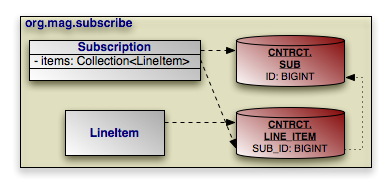 |
Consider the model above. Subscription has a collection
of LineItem s, but LineItem has
no inverse relation to Subscription. To retrieve all of
the LineItem records for a Subscription
, we join the SUB_ID inverse foreign key column
in the LINE_ITEM table to the primary key column of the
SUB table. The example below shows how to represent this
model in mapping annotations. Note that OpenJPA automatically assumes an inverse
foreign key mapping when element join columns are given, but no container or
join table is given.
Example 7.16. One-Sided One-Many Mapping
package org.mag.subscribe;
import org.apache.openjpa.persistence.jdbc.*;
@Entity
@Table(name="LINE_ITEM", schema="CNTRCT")
public class LineItem {
...
}
@Entity
@Table(name="SUB", schema="CNTRCT")
public class Subscription {
@Id private long id;
@OneToMany
@ElementJoinColumn(name="SUB_ID", referencedColumnName="ID")
private Collection<LineItem> items;
...
}
We detailed the ContainerTable annotation in
Section 7.6.1, “
Container Table
”. Custom map mappings may
also use this annotation to represent a map table.
Key columns serve the same role for map keys as the element
join columns described in
Section 7.6.2, “
Element Join Columns
” serve for
collection elements. OpenJPA's
org.apache.openjpa.persistence.jdbc.KeyColumn
annotation represents a map key. To map custom
multi-column keys, use the
org.apache.openjpa.persistence.jdbc.KeyColumns
annotation, whose value is an array of KeyColumns.
A KeyColumn always resides in
a container table, so it does not have the table
property of a standard Column. Otherwise, the
KeyColumn and standard Column
annotations are equivalent. See
Section 3, “
Column
” in the JPA
Overview for a review of the Column annotation.
Key join columns are equivalent to standard JPA
join columns, except that they represent a join to a map key entity rather than a direct relation. You represent
a key join column with OpenJPA's
org.apache.openjpa.persistence.jdbc.KeyJoinColumn annotation. To declare a compound join, enclose an
array of KeyJoinColumns in the
org.apache.openjpa.persistence.jdbc.KeyJoinColumns
annotation.
A KeyJoinColumn always resides in
a container table, so it does not have the table property
of a standard JoinColumn. Like XJoinColumns above,
KeyJoinColumns can reference a linked field
rather than a static linked column. Otherwise, the KeyJoinColumn
and standard JoinColumn annotations are equivalent. See
Section 8.4, “
Direct Relations
” in the JPA
Overview for a review of the JoinColumn annotation.
The
org.apache.openjpa.persistence.jdbc.KeyEmbeddedMapping
annotation allows you to map your map field's embedded
key type to your container table. This annotation has exactly
the same properties as the
EmbeddedMapping annotation described
above.
| 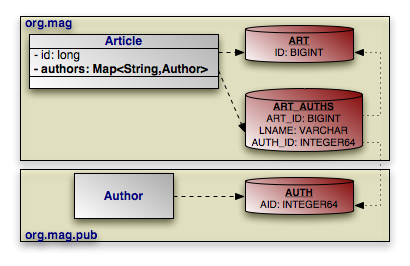 |
Map mapping in OpenJPA uses the same principles you saw in
collection mapping. The example below maps the
Article.authors map according to the diagram above.
Example 7.17. String Key, Entity Value Map Mapping
package org.mag.pub;
import org.apache.openjpa.persistence.*;
import org.apache.openjpa.persistence.jdbc.*;
@Entity
@Table(name="AUTH")
@DataStoreIdColumn(name="AID", columnDefinition="INTEGER64")
public class Author {
...
}
package org.mag;
@Entity
@Table(name="ART")
public class Article {
@Id private long id;
@PersistentMap
@ContainerTable(name="ART_AUTHS", joinColumns=@XJoinColumn(name="ART_ID"))
@KeyColumn(name="LNAME")
@ElementJoinColumn(name="AUTH_ID")
private Map<String,Author> authors;
...
}
OpenJPA uses index information during schema generation to index the proper columns. OpenJPA uses foreign key and unique constraint information during schema creation to generate the proper database constraints, and also at runtime to order SQL statements to avoid constraint violations while maximizing SQL batch size.
OpenJPA assumes certain columns have indexes or constraints based on your mapping defaults, as detailed in Section 4, “ Mapping Defaults ”. You can override the configured defaults on individual joins, field values, collection elements, map keys, or map values using the annotations presented in the following sections.
The
org.apache.openjpa.persistence.jdbc.Index
annotation represents an index on the columns of a field. It is also used within
the ContainerTable
annotation to index join columns.
To index the columns of a collection element, use the
org.apache.openjpa.persistence.jdbc.ElementIndex
annotation. These annotations have the following properties:
boolean enabled: Set this property tofalseto explicitly tell OpenJPA not to index these columns, when OpenJPA would otherwise do so.String name: The name of the index. OpenJPA will choose a name if you do not provide one.boolean unique: Whether to create a unique index. Defaults to false.
The
org.apache.openjpa.persistence.jdbc.ForeignKey
annotation represents a foreign key on the columns of a field. It is also used
within the
ContainerTable annotation to set a database foreign key on
join columns. To set a constraint to the columns of a collection element, use
the
org.apache.openjpa.persistence.jdbc.ElementForeignKey
annotation. These annotations have the following properties:
boolean enabled: Set this property tofalseto explicitly tell OpenJPA not to set a foreign key on these columns, when OpenJPA would otherwise do so.String name: The name of the foreign key. OpenJPA will choose a name if you do not provide one, or will create an anonymous key.boolean deferred: Whether to create a deferred key if supported by the database.boolean implicit: Whether to mark a relation field value as implicitly referring to a related entity. This property can be used, for example, when a field value represents primary key field of a related entity, but for legacy or other logistic reasons, the field is declared as the same type of the primary key of the related entity instead of a reference to the entity itself. Hence no actual mapping can be defined on the field itself. If this implicit property is set, then no other property on the ForeignKey annotation can be set to their non-default value. This setting does not manifest as a database foreign key constraint.ForeignKeyAction deleteAction: Value from theorg.apache.openjpa.persistence.jdbc.ForeignKeyActionenum identifying the desired delete action. Defaults toRESTRICT.ForeignKeyAction updateAction: Value from theorg.apache.openjpa.persistence.jdbc.ForeignKeyActionenum identifying the desired update action. Defaults toRESTRICT.
Keep in mind that OpenJPA uses foreign key information at runtime to avoid constraint violations; it is important, therefore, that your mapping defaults and foreign key annotations combine to accurately reflect your existing database constraints, or that you configure OpenJPA to reflect on your database schema to discover existing foreign keys (see Section 12.2, “ Schema Factory ”).
The
org.apache.openjpa.persistence.jdbc.Unique
annotation represents a unique constraint on the columns of a field. It is more
convenient than using the uniqueConstraints property of
standard JPA Table and SecondaryTable
annotations, because you can apply it directly to the constrained
field. The Unique annotation has the following
properties:
boolean enabled: Set this property tofalseto explicitly tell OpenJPA not to constrain these columns, when OpenJPA would otherwise do so.String name: The name of the constraint. OpenJPA will choose a name if you do not provide one, or will create an anonymous constraint.boolean deferred: Whether to create a deferred constraint if supported by the database.
Some databases support XML column types and XPath queries and indexes over these columns. OpenJPA supports mapping of an entity property mapped to an XML column on the following databases and their minimum versions.
DB2 9
MySQL 5.1.30
Oracle 9
PostgreSQL 8.3 (XML support must be compiled in, the minimum JDBC driver version is 8.3-603)
SQL Server 2005
Annotate the entity property using the XMLValueHandler strategy:
@Persistent
@Strategy("org.apache.openjpa.jdbc.meta.strats.XMLValueHandler")
The default fetch type is EAGER but can be changed to LAZY by using:
@Persistence(fetch=FetchType.LAZY)
The entity property class is required to have
JAXB binding annotations. You can generate property class from an XML schema by using
the xjc generator from the
JAXB reference implementation.
The xjc will generate the
class along with the required annotations. Ensure that @XmlRootElement
appears in the root class. In some cases this annotation needs to be added manually.
The entity property class is required to have getter and setter methods for all its
fields. By default, the xjc will not generate setter
methods for collections but you can force it to do so by using the
collection
setter injector plugin.
The JAXB jar files must be on the application classpath (jaxb-api.jar, jaxb-impl.jar, jsr173_1.0_api.jar or equivalent).
JPQL path expressions can navigate into the mapped class and its subfields to any level.
The path expression is rewritten into an equivalent XPath expression using SQL XML functions.
The path expression must be single-valued. Path expressions over XML mapped classes can only be used in the WHERE clause as an operand to a simple predicate (= <> < > >= <=).
Path expressions over XML mapped fields can not be:
an input to a JPQL scalar function
an operand of BETWEEN, IS NULL, LIKE or IN predicate
used to project out subfields in the SELECT clause
used in the FROM, GROUP BY, HAVING, ORDER BY clauses
XML schema must not contain namespace declarations. The JPQL path expressions can not refer to Java fields generated from XML ANY type or XML mixed element types.
The data type generated by JAXB must be a valid type to use the property in a JPQL predicate.
Shown below is a sample XML schema myaddress.xsd,
in which the JPA entity Order has shipAddress persistent field that maps to an XML column.
Example 7.18. myaddress.xsd
<?xml version="1.0" ?>
<xs:schema xmlns:xs="http://www.w3.org/2001/XMLSchema" >
<xs:complexType name="Address">
<xs:sequence>
<xs:element name="Name" type="xs:string" />
<xs:element name="Street" type="xs:string"
minOccurs="1" maxOccurs="3" />
<xs:element name="City" type="xs:string" />
</xs:sequence>
</xs:complexType>
<xs:complexType name="CAN_Address">
<xs:complexContent>
<xs:extension base="Address">
<xs:sequence>
<xs:element name="Province" type="xs:string" />
<xs:element name="PostalCode" type="xs:string" />
</xs:sequence>
</xs:extension>
</xs:complexContent>
</xs:complexType>
<xs:simpleType name="USPS_ZIP">
<xs:restriction base="xs:integer">
<xs:minInclusive value="01000" />
<xs:maxInclusive value="99999" />
</xs:restriction>
</xs:simpleType>
<xs:complexType name="USA_Address">
<xs:complexContent>
<xs:extension base="Address">
<xs:sequence>
<xs:element name="State" type="xs:string" />
<xs:element name="ZIP" type="USPS_ZIP" />
</xs:sequence>
</xs:extension>
</xs:complexContent>
</xs:complexType>
<xs:element name="MailAddress" type="Address" />
<xs:element name="AddrCAN" type="CAN_Address"
substitutionGroup="MailAddress" />
<xs:element name="AddrUSA" type="USA_Address"
substitutionGroup="MailAddress" />
</xs:schema>
Java classes Address,
USAAddress and
CANAddress
are produced from myaddress schema by using the
xjc generator.
Example 7.19. Address.java
...
@XmlRootElement
@XmlAccessorType(XmlAccessType.FIELD)
@XmlType(name = "Address", propOrder = {
"name",
"street",
"city"
})
public class Address {
@XmlElement(name = "Name", required = true)
protected String name;
@XmlElement(name = "Street", required = true)
protected List<String> street;
@XmlElement(name = "City", required = true)
protected String city;
/**
* Getter and Setter methods.
*
*/
...
}
Example 7.20. USAAddress.java
...
@XmlRootElement
@XmlAccessorType(XmlAccessType.FIELD)
@XmlType(name = "USA_Address", propOrder = {
"state",
"zip"
})
public class USAAddress
extends Address
{
@XmlElement(name = "State")
protected String state;
@XmlElement(name = "ZIP")
protected int zip;
/**
* Getter and Setter methods.
*
*/
...
}
Example 7.21. CANAddress.java
...
@XmlRootElement
@XmlAccessorType(XmlAccessType.FIELD)
@XmlType(name = "CAN_Address", propOrder = {
"province",
"postalCode"
})
public class CANAddress
extends Address
{
@XmlElement(name = "Province")
protected String province;
@XmlElement(name = "PostalCode")
protected String postalCode;
/**
* Getter and Setter methods.
*
*/
...
}
Example 7.22. Showing annotated Order entity with XML mapping strategy
@Entity
public class Order {
@Id private into id;
@Persistent
@Strategy ("org.apache.openjpa.jdbc.meta.strats.XMLValueHandler")
private Address shipAddress;
...
}
Example 7.23. Showing creation of Order entity having shipAddress mapped to XML column
...
myaddress.ObjectFactory addressFactory = new myaddress.ObjectFactory();
Customer c1 = new Customer();
c1.setCid( new Customer.CustomerKey("USA", 1) );
c1.setName("Harry's Auto");
Order o1 = new Order( 850, false, c1);
USAAddress addr1 = addressFactory.createUSAAddress();
addr1.setCity("San Jose");
addr1.setState("CA");
addr1.setZIP(new Integer("95141"));
addr1.getStreet().add("12500 Monterey");
addr1.setName( c1.getName());
o1.setShipAddress(addr1);
em.persist(o1);
...
Example 7.24. Sample JPQL queries for XML column mapping
. select o from Order o where o.shipAddress.city = "San Jose" or o.shipAddress.city = "San Francisco" (OK) . select o.shipaAddress from Order o (OK) . select o.shipAddress.city from Order o (INVALID) . select o from Order o where o.shipAddress.street = "San Jose" (INVALID multi-valued)
In addition to handling LOBs in a standard JPA manner
(LOB annotation and lob XML element),
OpenJPA supports LOB streaming. This feature
makes it possible to stream large amounts of data into and out of persistent
field without ever holding all the data in memory at the same time.
LOB streaming is supported on the following databases.
MySQL
Oracle
PostgreSQL
SQL Server
See Appendix 2, Supported Databases for possible database-specific restrictions.
To persist a stream, apply the
org.apache.openjpa.persistence.Persistent
annotation to either java.io.InputStream or
java.io.Reader field.
Example 7.25. Annotated InputStream and Reader
@Entity
public class Employee {
...
@Persistent
private InputStream photoStream;
@Persistent
private Reader photoDescription;
...
}
The following sections outline the limitations OpenJPA places on specific mapping strategies.
Table-per-class inheritance mapping has the following limitations:
You cannot traverse polymorphic relations to non-leaf classes in a table-per-class inheritance hierarchy in queries.
You cannot map a one-sided polymorphic relation to a non-leaf class in a table-per-class inheritance hierarchy using an inverse foreign key.
You cannot use an order column in a polymorphic relation to a non-leaf class in a table-per-class inheritance hierarchy mapped with an inverse foreign key.
Table-per-class hierarchies impose limitations on eager fetching. See Section 8.2, “ Eager Fetching Considerations and Limitations ”.
Note
Non-polymorphic relations do not suffer from these limitations. You can declare a non-polymorphic relation using the extensions described in Section 9.2.2, “ Nonpolymorphic ”.
Mapping extensions allow you to access OpenJPA-specific functionality from your mappings. Note that all extensions below are specific to mappings. If you store your mappings separately from your persistence metadata, these extensions must be specified along with the mapping information, not the persistence metadata information.
OpenJPA recognizes the following class extensions.
This extension specifies how to eagerly fetch subclass state. It overrides the
global
openjpa.jdbc.SubclassFetchMode property. Set the JPA
org.apache.openjpa.persistence.jdbc.SubclassFetchMode
annotation to a value from the
org.apache.openjpa.persistence.jdbc.FetchMode
enum: JOIN, PARALLEL, or
NONE. See Section 8, “
Eager Fetching
”
for a discussion of eager fetching.
The
org.apache.openjpa.persistence.jdbc.Strategy
class annotation allows you to specify a custom mapping strategy for your class.
See Section 10, “
Custom Mappings
” for information on custom
mappings.
The
org.apache.openjpa.persistence.jdbc.DiscriminatorStrategy
class annotation allows you to specify a custom discriminator strategy.
See Section 10, “
Custom Mappings
” for information on custom
mappings.
The
org.apache.openjpa.persistence.jdbc.VersionStrategy
class annotation allows you to specify a custom version strategy. See
Section 10, “
Custom Mappings
” for information on custom
mappings.
OpenJPA recognizes the following field extensions.
This extension specifies how to eagerly fetch related objects. It overrides the
global
openjpa.jdbc.EagerFetchMode property. Set the JPA
org.apache.openjpa.persistence.jdbc.EagerFetchMode
annotation to a value from the
org.apache.openjpa.persistence.jdbc.EagerFetchType
enum: JOIN, PARALLEL, or
NONE. See Section 8, “
Eager Fetching
”
for a discussion of eager fetching.
All fields in Java are polymorphic. If you declare a field of type T
, you can assign any subclass of T to the field as
well. This is very convenient, but can make relation traversal very inefficient
under some inheritance strategies. It can even make querying across the field
impossible. Often, you know that certain fields do not need to be entirely
polymorphic. By telling OpenJPA about such fields, you can improve the
efficiency of your relations.
Note
OpenJPA also includes the type metadata extension for
narrowing the declared type of a field. See Section 4.2.6, “
Type
”.
OpenJPA defines the following extensions for nonpolymorphic values:
The value of these extensions is a constant from the
org.apache.openjpa.persistence.jdbc.NonpolymorphicType
enumeration. The default value, EXACT, indicates
that the relation will always be of the exact declared type. A value of
JOINABLE, on the other hand, means that the relation might
be to any joinable subclass of the declared type. This value only excludes
table-per-class subclasses.
This family of boolean extensions determines whether OpenJPA will use the
expected class of related objects as criteria in the SQL it issues to load a
relation field. Typically, this is not needed. The foreign key values uniquely
identify the record for the related object. Under some rare mappings, however,
you may need to consider both foreign key values and the expected class of the
related object - for example, if you have an inverse relation that shares the
foreign key with another inverse relation to an object of a different subclass.
In these cases, set the proper class criteria extension to true
to force OpenJPA to append class criteria to its select SQL.
OpenJPA defines the following class criteria annotations for field relations and array or collection element relations, respectively:
OpenJPA's
org.apache.openjpa.persistence.jdbc.Strategy
extension allows you to specify a custom mapping
strategy or value handler for a field. See
Section 10, “
Custom Mappings
” for information on custom
mappings.
In OpenJPA, you are not limited to the set of standard mappings defined by the specification. OpenJPA allows you to define custom class, discriminator, version, and field mapping strategies with all the power of OpenJPA's built-in strategies.
To create a custom class mapping, write an implementation of the
org.apache.openjpa.jdbc.meta.ClassStrategy
interface. You will probably want to extend one of the existing abstract or
concrete strategies in the org.apache.openjpa.jdbc.meta.strats
package.
The
org.apache.openjpa.persistence.jdbc.Strategy
annotation allows you to declare a custom class mapping strategy in JPA mapping
metadata. Set the value of the annotation to the full class name of your custom
strategy. You can configure your strategy class' bean properties using
OpenJPA's plugin syntax, detailed in Section 4, “
Plugin Configuration
”.
To define a custom discriminator or version strategy, implement the
org.apache.openjpa.jdbc.meta.DiscriminatorStrategy
or
org.apache.openjpa.jdbc.meta.VersionStrategy
interface, respectively. You might extend one of the existing abstract or
concrete strategies in the org.apache.openjpa.jdbc.meta.strats
package.
OpenJPA includes the
org.apache.openjpa.persistence.jdbc.DiscriminatorStrategy
and
org.apache.openjpa.persistence.jdbc.VersionStrategy
class annotations for declaring a custom discriminator or version
strategy in JPA mapping metadata. Set the string value of these annotations to
the full class name of your implementation, or to the class name or alias of an
existing OpenJPA implementation.
As with custom class mappings, you can configure your strategy class' bean properties using OpenJPA's plugin syntax, detailed in Section 4, “ Plugin Configuration ”.
While custom class, discriminator, and version mapping can be useful, custom field mappings are far more common. OpenJPA offers two types of custom field mappings: value handlers, and full custom field strategies. The following sections examine each.
Value handlers make it trivial to map any type that you can break down into one
or more simple values. All value handlers implement the
org.apache.openjpa.jdbc.meta.ValueHandler interface; see its
Javadoc
for details. Also, examine the built-in handlers in the
src/openjpa/jdbc/meta/strats directory of your OpenJPA source
distribution. Use these functional implementations as examples when you
create your own value handlers.
OpenJPA interacts with persistent fields through the
org.apache.openjpa.jdbc.meta.FieldStrategy interface. You
can implement this interface yourself to create a custom field strategy, or
extend one of the existing abstract or concrete strategies in the
org.apache.openjpa.jdbc.meta.strats package. Creating a custom field
strategy is more difficult than writing a custom value handler, but gives you
more freedom in how you interact with the database.
OpenJPA gives you two ways to configure your custom field mappings. The
FieldStrategies property of the built-in
MappingDefaults implementations allows you to globally associate
field types with their corresponding custom value handler or strategy. OpenJPA
will automatically use your custom strategies when it encounters a field of the
associated type. OpenJPA will use your custom value handlers whenever it
encounters a field of the associated type.
Section 4, “
Mapping Defaults
” described mapping
defaults in detail.
Your other option is to explicitly install a custom value handler or strategy on
a particular field. To do so, specify the full name of your implementation class
in the proper mapping metadata extension. OpenJPA includes the
org.apache.openjpa.persistence.jdbc.Strategy
annotation. You can configure the named strategy or handler's bean
properties in these extensions using OpenJPA's plugin format (see
Section 4, “
Plugin Configuration
”).
Unless you apply database foreign key constraints extensively, it is possible to
end up with orphaned keys in your database. For example, suppose
Magazine m has a reference to Article
a. If you delete a without
nulling m's reference, m's database
record will wind up with an orphaned key to the non-existent a
record.
Note
One way of avoiding orphaned keys is to use dependent fields.
OpenJPA's
openjpa.OrphanedKeyAction configuration property controls what
action to take when OpenJPA encounters an orphaned key. You can set this plugin
string (see Section 4, “
Plugin Configuration
”) to a custom
implementation of the
org.apache.openjpa.event.OrphanedKeyAction
interface, or use one of the built-in options:
log: This is the default setting. This option logs a message for each orphaned key. It is an alias for theorg.apache.openjpa.event.LogOrphanedKeyActionclass, which has the following additional properties:Channel: The channel to log to. Defaults toopenjpa.Runtime.Level: The level to log at. Defaults toWARN.
exception: Throw anEntityNotFoundExceptionwhen OpenJPA discovers an orphaned key. This is an alias for theorg.apache.openjpa.event.ExceptionOrphanedKeyActionclass.none: Ignore orphaned keys. This is an alias for theorg.apache.openjpa.event.NoneOrphanedKeyActionclass.
Example 7.26. Custom Logging Orphaned Keys
<property name="openjpa.OrphanedKeyAction" value="log(Channel=Orphans, Level=DEBUG)"/>
Table of Contents
OpenJPA deployment includes choosing a factory deployment strategy, and in a managed environment, optionally integrating with your application server's managed and XA transactions. This chapter examines each aspect of deployment in turn.
OpenJPA offers two EntityManagerFactory
deployment options.
The JPA Overview describes the javax.persistence.Persistence
class. You can use Persistence to obtain
EntityManagerFactory instances, as demonstrated in
Chapter 6,
Persistence
. OpenJPA also extends
Persistence to add additional
EntityManagerFactory creation methods. The
org.apache.openjpa.persistence.OpenJPAPersistence class
Javadoc details these extensions.
After obtaining the factory, you can cache it for all
EntityManager creation duties. OpenJPA factories support being
bound to JNDI as well.
OpenJPA EntityManagers have the ability to automatically
synchronize their transactions with an external transaction manager. Whether
or not EntityManagers from a given
EntityManagerFactory exhibit this behavior by default depends on
the transaction type you set for the factory's persistence unit in
your persistence.xml file. OpenJPA uses the given
transaction type internally to set the
openjpa.TransactionMode
configuration property. This property accepts the following
modes:
local: Perform transaction operations locally.managed: Integrate with the application server's managed global transactions.
You can override the global transaction mode setting when you obtain an
EntityManager using the
EntityManagerFactory's
createEntityManager(Map props) method. Simply set the
openjpa.TransactionMode key of the given Map
to the desired value.
Note
You can also override the openjpa.ConnectionUserName,
openjpa.ConnectionPassword, and
openjpa.ConnectionRetainMode settings using the given
Map.
In order to use global transactions, OpenJPA must be able to access the
application server's
javax.transaction.TransactionManager. OpenJPA can automatically
discover the transaction manager for most major application servers.
Occasionally, however, you might have to point OpenJPA to the transaction
manager for an unrecognized or non-standard application server setup. This is
accomplished through the
openjpa.ManagedRuntime configuration property. This
property describes an
org.apache.openjpa.ee.ManagedRuntime implementation to use
for transaction manager discovery. You can specify your own implementation,
or use one of the built-ins:
auto: This is the default. It is an alias for theorg.apache.openjpa.ee.AutomaticManagedRuntimeclass. This managed runtime is able to automatically integrate with several common application servers.invocation: An alias for theorg.apache.openjpa.ee.InvocationManagedRuntimeclass. You can configure this runtime to invoke any static method in order to obtain the appserver's transaction manager.jndi: An alias for theorg.apache.openjpa.ee.JNDIManagedRuntimeclass. You can configure this runtime to look up the transaction manager at any JNDI location.
See the Javadoc for of each class for details on the bean properties you can pass to these plugins in your configuration string.
Example 8.1. Configuring Transaction Manager Integration
<property name="openjpa.TransactionMode" value="managed"/> <property name="openjpa.ManagedRuntime" value="jndi(TransactionManagerName=java:/TransactionManager)"/>
The X/Open Distributed Transaction Processing (X/Open DTP) model, designed by The Open Group (a vendor consortium), defines a standard communication architecture that provides the following:
Concurrent execution of applications on shared resources.
Coordination of transactions across applications.
Components, interfaces, and protocols that define the architecture and provide portability of applications.
Atomicity of transaction systems.
Single-thread control and sequential function-calling.
The X/Open DTP XA standard defines the application programming interfaces that a resource manager uses to communicate with a transaction manager. The XA interfaces enable resource managers to join transactions, to perform two-phase commit, and to recover in-doubt transactions following a failure.
OpenJPA supports XA-compliant transactions when used in a properly configured managed environment. The following components are required:
A managed environment that provides an XA compliant transaction manager. Examples of this are application servers such as WebLogic or JBoss.
Instances of a
javax.sql.XADataSourcefor each of theDataSources that OpenJPA will use.
Given these components, setting up OpenJPA to participate in distributed transactions is a simple two-step process:
Integrate OpenJPA with your application server's transaction manager, as detailed in Section 2, “ Integrating with the Transaction Manager ” above.
Point OpenJPA at an enlisted
XADataSource, and configure a second non-enlisted data source. See Section 2.1, “ Managed and XA DataSources ”.
Table of Contents
This chapter describes OpenJPA extensions to the standard JPA interfaces, and outlines some additional features of the OpenJPA runtime.
Internally, OpenJPA does not adhere to any persistence specification. The OpenJPA kernel has its own set of APIs and components. Specifications like JPA and JDO are simply different "personalities" that OpenJPA's native kernel can adopt.
As an OpenJPA user, you will not normally see beneath OpenJPA's JPA personality. OpenJPA allows you to access its feature set without leaving the comfort of JPA. Where OpenJPA goes beyond standard JPA functionality, we have crafted JPA-specific APIs to each OpenJPA extension for as seamless an experience as possible.
When writing OpenJPA plugins or otherwise extending the OpenJPA runtime, however, you will use OpenJPA's native APIs. So that you won't feel lost, the list below associates each specification interface with its backing native OpenJPA component:
javax.persistence.EntityManagerFactory:org.apache.openjpa.kernel.BrokerFactoryjavax.persistence.EntityManager:org.apache.openjpa.kernel.Brokerjavax.persistence.Query:org.apache.openjpa.kernel.Queryorg.apache.openjpa.persistence.Extent:org.apache.openjpa.kernel.Extentorg.apache.openjpa.persistence.StoreCache:org.apache.openjpa.datacache.DataCacheorg.apache.openjpa.persistence.QueryResultCache:org.apache.openjpa.datacache.QueryCacheorg.apache.openjpa.persistence.FetchPlan:org.apache.openjpa.kernel.FetchConfigurationorg.apache.openjpa.persistence.Generator:org.apache.openjpa.kernel.Seq
The
org.apache.openjpa.persistence.OpenJPAPersistence helper
allows you to convert between EntityManagerFactories and
BrokerFactories, EntityManagers
and Brokers.
Outside of a Java EE 5 application server or other JPA persistence container
environment, the default OpenJPAEntityManager implementation automatically
closes itself during instance finalization. This guards against accidental
resource leaks that may occur if a developer fails to explicitly close
EntityManagers when finished with them, but it also incurs a scalability
bottleneck, since the JVM must perform synchronization during instance creation,
and since the finalizer thread will have more instances to monitor. To avoid
this overhead, set the
openjpa.BrokerImpl
configuration property to non-finalizing.
As a plugin string, this property
can be used to configure the BrokerImpl with the
following properties:
EvictFromDataCache: When evicting an object through theOpenJPAEntityManager.evictmethods, whether to also evict it from the OpenJPA's data cache. Defaults tofalse.
Example 9.1. Evict from Data Cache
<property name="openjpa.BrokerImpl" value="EvictFromDataCache=true"/>
Additionally, some advanced users may want to add capabilities to OpenJPA's
internal
org.apache.openjpa.kernel.BrokerImpl. You can
configure OpenJPA to use a custom subclass of BrokerImpl
with the openjpa.BrokerImpl
configuration property. Set this property to the full class
name of your custom subclass. When implementing your subclass, consider the
finalization issues mentioned in
Section 1.1, “
Broker Finalization
”. It may be appropriate
to create a subtype of both
org.apache.openjpa.kernel.BrokerImpl and
org.apache.openjpa.kernel.FinalizingBrokerImpl.
The following sections outline the runtime interfaces you can use to access OpenJPA-specific functionality from JPA. Each interface contains services and convenience methods missing from the JPA specification. OpenJPA strives to use the same naming conventions and API patterns as standard JPA methods in all extensions, so that OpenJPA extension APIs feel as much as possible like standard JPA.
You may have noticed the examples throughout this document using the
OpenJPAPersistence.cast methods to cast from standard
JPA interfaces to OpenJPA extended interfaces. This is the recommended practice.
Some application server vendors may proxy OpenJPA's JPA implementation,
preventing a straight cast. OpenJPAPersistence's
cast methods work around these proxies.
public static OpenJPAEntityManagerFactory cast(EntityManagerFactory emf); public static OpenJPAEntityManager cast(EntityManager em); public static OpenJPAQuery cast(Query q);
We provide additional information on the OpenJPAPersistence
helper
below.
The org.apache.openjpa.persistence.OpenJPAEntityManagerFactory
interface extends the basic
javax.persistence.EntityManagerFactory with OpenJPA-specific
features. The OpenJPAEntityManagerFactory offers APIs to
access the OpenJPA data and query caches and to perform other OpenJPA-specific
operations. See the
interface Javadoc for details.
All OpenJPA EntityManagers implement the
org.apache.openjpa.persistence.OpenJPAEntityManager
interface. This interface extends the standard
javax.persistence.EntityManager. Just as the standard
EntityManager is the primary window into JPA services, the
OpenJPAEntityManager is the primary window from JPA into
OpenJPA-specific functionality. We strongly encourage you to investigate the API
extensions this interface contains.
OpenJPA extends JPA's standard query functionality with the
org.apache.openjpa.persistence.OpenJPAQuery interface. See its
Javadoc
for details on the convenience methods it provides.
An Extent is a logical view of all persistent instances
of a given entity class, possibly including subclasses. OpenJPA adds the
org.apache.openjpa.persistence.Extent class to the set of
Java Persistence APIs. The following code illustrates iterating over all
instances of the Magazine entity, without subclasses:
Example 9.2. Using a JPA Extent
import org.apache.openjpa.persistence.*;
...
OpenJPAEntityManager kem = OpenJPAPersistence.cast(em);
Extent<Magazine> mags = kem.createExtent(Magazine.class, false);
for (Magazine m : mags)
processMagazine(m);
In addition to the EntityManager object cache the JPA
specification provides access to a second level cache via the
javax.persistence.Cache interface. OpenJPA provides further extensions via
the org.apache.openjpa.persistence.StoreCache interface documented at
org.apache.openjpa.persistence.StoreCache.
Section 1, “
Data Cache
” has detailed information on OpenJPA's
data caching system, including the StoreCache facade.
OpenJPA can cache query results as well as persistent object data. The
org.apache.openjpa.persistence.QueryResultCache
is an JPA-flavored facade to OpenJPA's internal query cache. See
Section 1.4, “
Query Cache
” for details on query caching in
OpenJPA.
Many of the aforementioned OpenJPA interfaces give you access to an
org.apache.openjpa.persistence.FetchPlan instance. The
FetchPlan allows you to exercise some control over how objects are
fetched from the datastore, including
large result set support, custom fetch
groups, and lock levels.
OpenJPA goes one step further, extending FetchPlan with
org.apache.openjpa.persistence.jdbc.JDBCFetchPlan
to add additional JDBC-specific tuning methods. Unless you have customized
OpenJPA to use a non-relational back-end (see
Section 8, “
Non-Relational Stores
” ), all
FetchPlans in OpenJPA implement
JDBCFetchPlan, so feel free to cast to this interface.
Fetch plans pass on from parent components to child components. The
EntityManagerFactory settings (via your configuration properties)
for things like the fetch size, result set type, and custom fetch groups are
passed on to the fetch plan of the EntityManagers it
produces. The settings of each EntityManager, in turn,
are passed on to each Query and Extent
it returns. Note that the opposite, however, is not true. Modifying
the fetch plan of a Query or Extent
does not affect the EntityManager's
configuration. Likewise, modifying an EntityManager's
configuration does not affect the EntityManagerFactory.
Section 7, “
Fetch Groups
” includes examples using
FetchPlans.
org.apache.openjpa.persistence.OpenJPAEntityTransaction
extends javax.persistence.EntityTransaction to provide
additional transaction-debugging capabilities and some concurrency-related
commit and rollback features.
org.apache.openjpa.persistence.OpenJPAPersistence
is a static helper class that adds OpenJPA-specific utility methods to
javax.persistence.Persistence.
Controlling how and when objects are locked is an important part of maximizing the performance of your application under load. This section describes OpenJPA's APIs for explicit locking, as well as its rules for implicit locking.
You can control OpenJPA's default transactional read and write lock levels
through the
openjpa.ReadLockLevel and
openjpa.WriteLockLevel
configuration properties. Each property accepts a value of
none, read, write,
optimistic, optimistic-force-increment,
pessimistic-read, pessimistic-write,
pessimistic-force-increment, or a number
corresponding to a lock level defined by the
lock manager in use. These
properties apply only to non-optimistic transactions; during optimistic
transactions, OpenJPA never locks objects by default.
You can control the default amount of time OpenJPA will wait when trying to
obtain locks through the
openjpa.LockTimeout configuration property. Set this property
to the number of milliseconds you are willing to wait for a lock before OpenJPA
will throw an exception, or to -1 for no limit. It defaults to -1.
Example 9.3. Setting Default Lock Levels
<property name="openjpa.ReadLockLevel" value="none"/> <property name="openjpa.WriteLockLevel" value="write"/> <property name="openjpa.LockTimeout" value="30000"/>
At runtime, you can override the default lock levels through the
FetchPlan interface described above. At the beginning of each
datastore transaction, OpenJPA initializes the EntityManager
's fetch plan with the default lock levels and timeouts described
in the previous section. By changing the fetch plan's locking properties, you
can control how objects loaded at different points in the transaction are
locked. You can also use the fetch plan of an individual Query
to apply your locking changes only to objects loaded through that
Query.
public LockModeType getReadLockMode(); public FetchPlan setReadLockMode(LockModeType mode); public LockModeType getWriteLockMode(); public FetchPlan setWriteLockMode(LockModeType mode); long getLockTimeout(); FetchPlan setLockTimeout(long timeout);
Controlling locking through these runtime APIs works even during optimistic
transactions. At the end of the transaction, OpenJPA resets the fetch plan's
lock levels to none. You cannot lock objects outside of a
transaction.
Example 9.4. Setting Runtime Lock Levels
import org.apache.openjpa.persistence.*;
...
EntityManager em = ...;
em.getTransaction().begin();
// load stock we know we're going to update at write lock mode
Query q = em.createQuery("select s from Stock s where symbol = :s");
q.setParameter("s", symbol);
OpenJPAQuery oq = OpenJPAPersistence.cast(q);
FetchPlan fetch = oq.getFetchPlan();
fetch.setReadLockMode(LockModeType.WRITE);
fetch.setLockTimeout(3000); // 3 seconds
Stock stock = (Stock) q.getSingleResult();
// load an object we don't need locked at none lock mode
fetch = OpenJPAPersistence.cast(em).getFetchPlan();
fetch.setReadLockMode(null);
Market market = em.find(Market.class, marketId);
stock.setPrice(market.calculatePrice(stock));
em.getTransaction().commit();
In addition to allowing you to control implicit locking levels, OpenJPA provides explicit APIs to lock objects and to retrieve their current lock level.
public LockModeType OpenJPAEntityManager.getLockMode(Object pc);
Returns the level at which the given object is currently locked.
In addition to the standard
EntityManager.lock(Object, LockModeType)
method, the
OpenJPAEntityManager exposes the following
methods to lock objects explicitly:
public void lock(Object pc); public void lock(Object pc, LockModeType mode, long timeout); public void lockAll(Object... pcs); public void lockAll(Object... pcs, LockModeType mode, long timeout); public void lockAll(Collection pcs); public void lockAll(Collection pcs, LockModeType mode, long timeout);
Methods that do not take a lock level or timeout parameter default to the current fetch plan. The example below demonstrates these methods in action.
Example 9.5. Locking APIs
import org.apache.openjpa.persistence.*; // retrieve the lock level of an object OpenJPAEntityManager oem = OpenJPAPersistence.cast(em); Stock stock = ...; LockModeType level = oem.getLockMode(stock); if (level == OpenJPAModeType.WRITE) ... ... oem.setOptimistic(true); oem.getTransaction().begin(); // override default of not locking during an opt trans to lock stock object oem.lock(stock, LockModeType.WRITE, 1000); stock.setPrice(market.calculatePrice(stock)); oem.getTransaction().commit();
OpenJPA delegates the actual work of locking objects to the system's
org.apache.openjpa.kernel.LockManager. This plugin is
controlled by the
openjpa.LockManager configuration property. You can write your
own lock manager, or use one of the bundled options:
mixed: This is an alias for theorg.apache.openjpa.jdbc.kernel.MixedLockManager, which implements the JPA 2.0 specification entity locking behaviors. It combines both the optimistic and pessimistic semantics controlled by lock mode argument in methods define in the EntityManager and Query interfaces or OpenJPA lock level properties.The
mixedLockManager inherits all the properties available fromversionandpessimisticLockManagers. For example:VersionCheckOnReadLockandVersionUpdateOnWriteLockproperties.This is the default
openjpa.LockManagersetting in OpenJPA.pessimistic: This is an alias for theorg.apache.openjpa.jdbc.kernel.PessimisticLockManager, which uses SELECT FOR UPDATE statements (or the database's equivalent) to lock the database rows corresponding to locked objects. This lock manager does not distinguish between read locks and write locks; all locks are write locks.The
pessimisticLockManager can be configured to additionally perform the version checking and incrementing behavior of theversionlock manager described below by setting itsVersionCheckOnReadLockandVersionUpdateOnWriteLockproperties:<property name="openjpa.LockManager" value="pessimistic(VersionCheckOnReadLock=true,VersionUpdateOnWriteLock=true)"/>
version: This is an alias for theorg.apache.openjpa.kernel.VersionLockManager. This lock manager does not perform any exclusive locking, but instead ensures read consistency by verifying that the version of all read-locked instances is unchanged at the end of the transaction. Furthermore, a write lock will force an increment to the version at the end of the transaction, even if the object is not otherwise modified. This ensures read consistency with non-blocking behavior.none: This is an alias for theorg.apache.openjpa.kernel.NoneLockManager, which does not perform any locking at all.
Note
In order for the version or mixed lock
managers to prevent the dirty
read phenomenon, the underlying data store's transaction isolation level must be
set to the equivalent of "read committed" or higher.
Advanced persistence concepts like lazy-loading and object uniquing create several locking corner-cases. The rules below outline OpenJPA's implicit locking behavior in these cases.
When an object's state is first read within a transaction, the object is locked at the fetch plan's current read lock level. Future reads of additional lazy state for the object will use the same read lock level, even if the fetch plan's level has changed.
When an object's state is first modified within a transaction, the object is locked at the write lock level in effect when the object was first read, even if the fetch plan's level has changed. If the object was not read previously, the current write lock level is used.
When objects are accessed through a persistent relation field, the related objects are loaded with the fetch plan's current lock levels, not the lock levels of the object owning the field.
Whenever an object is accessed within a transaction, the object is re-locked at the current read lock level. The current read and write lock levels become those that the object "remembers" according to rules one and two above.
If you lock an object explicitly through the APIs demonstrated above, it is re-locked at the specified level. This level also becomes both the read and write level that the object "remembers" according to rules one and two above.
When an object is already locked at a given lock level, re-locking at a lower level has no effect. Locks cannot be downgraded during a transaction.
Due to performance concerns and database limitations, locking cannot be perfect. You should be aware of the issues outlined in this section, as they may affect your application.
Typically, during optimistic transactions OpenJPA does not start an actual database transaction until you flush or the optimistic transaction commits. This allows for very long-lived transactions without consuming database resources. When using the pessimistic lock manager, however, OpenJPA must begin a database transaction whenever you decide to lock an object during an optimistic transaction. This is because the pessimistic lock manager uses database locks, and databases cannot lock rows without a transaction in progress. OpenJPA will log an INFO message to the
openjpa.Runtimelogging channel when it begins a datastore transaction just to lock an object.In order to maintain reasonable performance levels when loading object state, OpenJPA can only guarantee that an object is locked at the proper lock level after the state has been retrieved from the database. This means that it is technically possible for another transaction to "sneak in" and modify the database record after OpenJPA retrieves the state, but before it locks the object. The only way to positively guarantee that the object is locked and has the most recent state to refresh the object after locking it.
When using the pessimistic lock manager, the case above can only occur when OpenJPA cannot issue the state-loading SELECT as a locking statement due to database limitations. For example, some databases cannot lock SELECTs that use joins. The pessimistic lock manager will log an INFO message to the
openjpa.Runtimelogging channel whenever it cannot lock the initial SELECT due to database limitations. By paying attention to these log messages, you can see where you might consider using an object refresh to guarantee that you have the most recent state, or where you might rethink the way you load the state in question to circumvent the database limitations that prevent OpenJPA from issuing a locking SELECT in the first place.
Savepoints allow for fine grained control over the transactional behavior of your application. OpenJPA's savepoint API allow you to set intermediate rollback points in your transaction. You can then choose to rollback changes made only after a specific savepoint, then commit or continue making new changes in the transaction. This feature is useful for multi-stage transactions, such as editing a set of objects over several web pages or user screens. Savepoints also provide more flexibility to conditional transaction behavior, such as choosing to commit or rollback a portion of the transaction based on the results of the changes. This chapter describes how to use and configure OpenJPA savepoints.
OpenJPA's
OpenJPAEntityManager have the following
methods to control savepoint behavior. Note that the savepoints work in tandem
with the current transaction. This means that savepoints require an open
transaction, and that a rollback of the transaction will rollback all of the
changes in the transaction regardless of any savepoints set.
void setSavepoint(String name); void releaseSavepoint(String name); void rollbackToSavepoint(String name);
To set a savepoint, simply call setSavepoint, passing
in a symbolic savepoint name. This savepoint will define a point at which you
can preserve the state of transactional objects for the duration of the current
transaction.
Having set a named savepoint, you can rollback changes made after that point by
calling rollbackToSavepoint. This method will keep the
current transaction active, while restoring all transactional instances back to
their saved state. Instances that were deleted after the save point will no
longer be marked for deletion. Similarly, transient instances that were made
persistent after the savepoint will become transient again. Savepoints made
after this savepoint will be released and no longer valid, although you can
still set new savepoints. Savepoints will also be cleared after the current
transaction is committed or rolled back.
If a savepoint is no longer needed, you can release any resources it is
consuming resources by calling releaseSavepoint. This
method should not be called for savepoints that have been
released automatically through other means, such as commit of a transaction or
rollback to a prior savepoint. While savepoints made after this savepoint will
also be released, there are no other effects on the current transaction.
The following simple example illustrates setting, releasing, and rolling back to a savepoint.
Example 9.7. Using Savepoints
import org.apache.openjpa.persistence.*;
...
OpenJPAEntityManager oem = OpenJPAPersistence.cast(em);
oem.getTransaction().begin();
Magazine mag = oem.find(Magazine.class, id);
mag.setPageCount(300);
oem.setSavepoint("pages");
mag.setPrice(mag.getPageCount() * pricePerPage);
// we decide to release "pages"...
oem.releaseSavepoint("pages");
// ... and set a new savepoint which includes all changes
oem.setSavepoint("price");
mag.setPrice(testPrice);
// we determine the test price is not good
oem.rollbackToSavepoint("price");
// had we chosen to not release "pages", we might have rolled back to
// "pages" instead
// the price is now restored to mag.getPageCount() * pricePerPage
oem.getTransaction().commit();
OpenJPA uses the
org.apache.openjpa.kernel.SavepointManager
plugin to handle preserving the
savepoint state. OpenJPA includes the following SavepointManager
plugins:
in-mem: The default. This is an alias for theorg.apache.openjpa.kernel.InMemorySavepointManager. This plugin stores all state, including field values, in memory. Due to this behavior, each set savepoint is designed for small to medium transactional object counts.jdbc: This is an alias for theorg.apache.openjpa.jdbc.kernel.JDBC3SavepointManager. This plugin requiresJDBC 3andjava.sql.Savepointsupport to operate. Note that this plugin implements savepoints by issuing a flush to the database.
If JPQL and SQL queries do not match your needs, OpenJPA also allows you to name a Java method to use to load a set of objects. In a MethodQL query, the query string names a static method to invoke to determine the matching objects:
import org.apache.openjpa.persistence.*;
...
// the method query language is 'openjpa.MethodQL'.
// set the query string to the target method to execute, prefixed by fullly-
// qualified class name.
// If a candidate class has been specified for the query, then if the class is
// in the candidate class' package or in the query imports, you can omit the
// package. If the method is in the candidate class, you can omit the class name
// and just specify the method name.
OpenJPAEntityManager oem = OpenJPAPersistence.cast(emf);
OpenJPAQuery q = oem.createQuery("openjpa.MethodQL", "com.xyz.Finder.getByName");
// parameters are passed the same way as in standard queries
// but you have to declare the parameters with their types on the implementation
// Unwrap the implementation and declare parameters with types in a
// comma-separated list
q.unwrap(org.apache.openjpa.kernel.Query.class)
.declareParameters("String firstName, String lastName");
q.setParameter("firstName", "Fred").setParameter("lastName", "Lucas");
// this executes the target method to get the results
List results = q.getResultList();
// The result is returned as a list but the element(s) in the list is determined
// by the returned value of the target method
For datastore queries, the method must have the following signature:
public static ResultObjectProvider xxx(StoreContext ctx, ClassMetaData meta, boolean subclasses, Map params, FetchConfiguration fetch)
The returned result object provider should produce objects of the candidate class that match the method's search criteria. If the returned objects do not have all fields in the given fetch configuration loaded, OpenJPA will make additional trips to the datastore as necessary to fill in the data for the missing fields.
In-memory execution is slightly different, taking in one object at a time and returning a boolean on whether the object matches the query:
public static boolean xxx(StoreContext ctx, ClassMetaData meta, boolean subclasses, Object obj, Map params, FetchConfiguration fetch)
In both method versions, the given params map contains the
names and values of all the parameters for the query.
The JPA Overview's Chapter 13, Mapping Metadata details using generators to automatically populate identity fields in JPA.
OpenJPA represents all generators internally with the
org.apache.openjpa.kernel.Seq interface. This interface
supplies all the context you need to create your own custom generators,
including the current persistence environment, the JDBC DataSource
, and other essentials. The
org.apache.openjpa.jdbc.kernel.AbstractJDBCSeq
helps you create custom JDBC-based sequences. OpenJPA also supplies the
following built-in Seqs:
table: This is OpenJPA's default implementation. It is an alias for theorg.apache.openjpa.jdbc.kernel.TableJDBCSeqclass. TheTableJDBCSequses a special single-row table to store a global sequence number. If the table does not already exist, it is created the first time you run the mapping tool on a class that requires it. You can also use the class'smainmethod to manipulate the table; see theTableJDBCSeq.mainmethod Javadoc for usage details.This
Seqhas the following properties:Table: The name of the sequence number table to use. Defaults toOPENJPA_SEQUENCE_TABLE. If the entities are mapped to the same table name but with different schema name within one PersistenceUnit, oneOPENJPA_SEQUENCE_TABLEis created for each schema.PrimaryKeyColumn: The name of the primary key column for the sequence table. Defaults toID.SequenceColumn: The name of the column that will hold the current sequence value. Defaults toSEQUENCE_VALUE.Allocate: The number of values to allocate on each database trip. Defaults to 50, meaning the class will set aside the next 50 numbers each time it accesses the sequence table, which in turn means it only has to make a database trip to get new sequence numbers once every 50 sequence number requests.
class-table: This is an alias for theorg.apache.openjpa.jdbc.kernel.ClassTableJDBCSeq. ThisSeqis like theTableJDBCSeqabove, but maintains a separate table row, and therefore a separate sequence number, for each base persistent class. It has all the properties of theTableJDBCSeq. Its table name defaults toOPENJPA_SEQUENCES_TABLE. It also adds the following properties:IgnoreUnmapped: Whether to ignore unmapped base classes, and instead use one row per least-derived mapped class. Defaults tofalse.UseAliases: Whether to use each class' entity name as the primary key value of each row, rather than the full class name. Defaults tofalse.
As with the
TableJDBCSeq, theClassTableJDBCSeqcreates its table automatically during mapping tool runs. However, you can manually manipulate the table through the class'mainmethod. See the Javadoc for theClassTableJDBCSeq.mainmethod for usage details.value-table: This is an alias for theorg.apache.openjpa.jdbc.kernel.ValueTableJDBCSeq. ThisSeqis like theClassTableJDBCSeqabove, but has an arbitrary number of rows for sequence values, rather than a fixed pattern of one row per class. Its table defaults toOPENJPA_SEQUENCES_TABLE. It has all the properties of theTableJDBCSeq, plus:PrimaryKeyValue: The primary key value used by this instance.
As with the
TableJDBCSeq, theValueTableJDBCSeqcreates its table automatically during mapping tool runs. However, you can manually manipulate the table through the class'mainmethod. See the Javadoc for theValueTableJDBCSeq.mainmethod for usage details.native: This is an alias for theorg.apache.openjpa.jdbc.kernel.NativeJDBCSeq. Many databases have a concept of "native sequences" - a built-in mechanism for obtaining incrementing numbers. For example, in Oracle, you can create a database sequence with a statement likeCREATE SEQUENCE MYSEQUENCE. Sequence values can then be atomically obtained and incremented with the statementSELECT MYSEQUENCE.NEXTVAL FROM DUAL. OpenJPA provides support for this common mechanism of sequence generation with theNativeJDBCSeq, which accepts the following properties:Sequence: The name of the database sequence. Defaults toOPENJPA_SEQUENCE.InitialValue: The initial sequence value. Defaults to 1.Increment: The amount the sequence increments. Defaults to 1.Allocate: Some database can allocate values in-memory to service subsequent sequence requests faster.
time: This is an alias for theorg.apache.openjpa.kernel.TimeSeededSeq. This type uses an in-memory static counter, initialized to the current time in milliseconds and monotonically incremented for each value requested. It is only suitable for single-JVM environments.
You can use JPA SequenceGenerators to describe any built-in
Seqs or your own Seq
implementation. Set the sequenceName attribute to a plugin
string describing your choice.
If specifying your own class name, you must include parentheses at the end of the class name, even if you have no plugin properties to configure. (E.g.,
sequenceName="com.example.SeqImpl()".
See Section 5, “
Generators
” in the JPA Overview for
details on defining SequenceGenerators.
See Section 4, “ Plugin Configuration ” for plugin string formatting.
Example 9.8. Named Seq Sequence
@Entity
@Table(name="AUTO")
public class Author {
@Id
@GeneratedValue(strategy=GenerationType.SEQUENCE, generator="AuthorSeq")
@SequenceGenerator(name="AuthorSeq", sequenceName="table(Table=AUTO_SEQ)", allocationSize=100)
@Column(name="AID")
private long id;
...
}
Note that if you want to use a plugin string without any arguments, you must
still suffix the plugin type with () to differentiate it from
a sequence name in the SequenceGenerator.sequenceName attribute:
@SequenceGenerator(name="AuthorSeq", sequenceName="table()")
OpenJPA maintains a system sequence to generate datastore
identity values for classes that do not declare a specific datastore identity
strategy. You can configure the system sequence through the
openjpa.Sequence
configuration property. This property accepts a plugin string describing a
Seq instance.
Example 9.9. System Sequence Configuration
<property name="openjpa.Sequence" value="table(Table=OPENJPASEQ, Increment=100)"/>
In JPA, set your GeneratedValue annotation's
strategy attribute to AUTO to use the configured
system sequence. Or, because AUTO is the default strategy,
use the annotation without attributes:
@GeneratedValue private long id;
OpenJPA allows you to access named generators at runtime through the
OpenJPAEntityManager.getNamedGenerator method:
public Generator getNamedGenerator(String name);
The returned
org.apache.openjpa.persistence.Generator is a
facade over an internal OpenJPA Seq.
The OpenJPAEntityManager includes additional APIs to
retrieve the identity generator of any class, or the generator of any field.
With these APIs, you do not have to know the generator name. Additionally, they
allow you to access the implicit generator used by default for datastore
identity classes. See the
Javadoc for the OpenJPAEntityManager.getIdentityGenerator
and OpenJPAEntityManager.getFieldGenerator
methods for API details.
The OpenJPA runtime supports broadcasting transaction-related events. By
registering one or more
org.apache.openjpa.event.TransactionListener s,
you can receive notifications when transactions begin, flush, rollback, commit,
and more. Where appropriate, event notifications include the set of
persistence-capable objects participating in the transaction.
public void addTransactionListener(Object listener); public void removeTransactionListener(Object listener);
These OpenJPAEntityManagerSPI methods allow you to add
and remove listeners. These methods are outside the bounds of the published OpenJPA APIs, and are subject to change in the future.
For details on the transaction framework, see the
org.apache.openjpa.event package
Javadoc.
Also see Section 2, “
Remote Event Notification Framework
” for a description of OpenJPA's
remote event support.
It is possible to adapt OpenJPA to access a non-relational datastore by creating
an implementation of the
org.apache.openjpa.kernel.StoreManager interface. OpenJPA
provides an abstract StoreManager implementation to
facilitate this process. See the org.apache.openjpa.abstractstore
package
Javadoc for details.
Table of Contents
OpenJPA utilizes several configurable caches to maximize performance. This chapter explores OpenJPA's data cache, query cache, and query compilation cache.
The OpenJPA data cache is an optional cache of persistent object data that
operates at the EntityManagerFactory level. This cache is
designed to significantly increase performance while remaining in full
compliance with the JPA standard. This means that turning on the caching option
can transparently increase the performance of your application, with no changes
to your code.
OpenJPA's data cache is not related to the EntityManager
cache dictated by the JPA specification. The JPA specification mandates behavior
for the EntityManager cache aimed at guaranteeing
transaction isolation when operating on persistent objects.
OpenJPA's data cache is designed to provide significant performance increases over cacheless operation, while guaranteeing that behavior will be identical in both cache-enabled and cacheless operation.
There are five ways to access data via the OpenJPA APIs: standard relation
traversal, large result set relation traversal, queries, looking up an object by
id, and iteration over an Extent. OpenJPA's cache plugin
accelerates three of these mechanisms. It does not provide any caching of large
result set relations or Extent iterators. If you find
yourself in need of higher-performance Extent iteration,
see Example 10.20, “
Query Replaces Extent
”.
Table 10.1. Data access methods
| Access method | Uses cache |
|---|---|
| Standard relation traversal | Yes |
| Large result set relation traversal | No |
| Query | Yes |
| Lookups by object id | Yes |
Iteration over an Extent
| No |
When enabled, the cache is checked before making a trip to the datastore. Data is stored in the cache when objects are committed and when persistent objects are loaded from the datastore.
OpenJPA's data cache can operate in both single-JVM and multi-JVM environments. Multi-JVM caching is achieved through the use of the distributed event notification framework described in Section 2, “ Remote Event Notification Framework ”, or through custom integrations with a third-party distributed cache.
The single JVM mode of operation maintains and shares a data cache across all
EntityManager instances obtained from a particular
EntityManagerFactory. This is not appropriate for use in
a distributed environment, as caches in different JVMs or created from different
EntityManagerFactory objects will not be synchronized.
To enable the basic single-factory cache set the
openjpa.DataCache
property to true, and set the
openjpa.RemoteCommitProvider property to sjvm
:
Example 10.1. Single-JVM Data Cache
<property name="openjpa.DataCache" value="true"/> <property name="openjpa.RemoteCommitProvider" value="sjvm"/>
To configure the data cache to remain up-to-date in a distributed environment,
set the
openjpa.RemoteCommitProvider property appropriately, or
integrate OpenJPA with a third-party caching solution. Remote commit providers
are described in Section 2, “
Remote Event Notification Framework
”.
OpenJPA's default implementation maintains a map of object
ids to cache data. By default, 1000 elements are kept in cache. When the cache
overflows, random entries are evicted. The maximum cache size can be
adjusted by setting the CacheSize property in your plugin
string - see below for an example. Objects that are pinned into the cache are
not counted when determining if the cache size exceeds its maximum size.
Expired objects are moved to a soft reference map, so they may stick around for
a little while longer. You can control the number of soft references OpenJPA
keeps with the SoftReferenceSize property. Soft references
are unlimited by default. Set to 0 to disable soft references completely.
Example 10.2. Data Cache Size
<property name="openjpa.DataCache" value="true(CacheSize=5000, SoftReferenceSize=0)"/>
You can specify a cache timeout value for a class by setting the timeout metadata extension to the amount of time in milliseconds a class's data is valid. Use a value of -1 for no expiration. This is the default value.
Example 10.3. Data Cache Timeout
Timeout Employee objects after 10 seconds.
@Entity
@DataCache(timeout=10000)
public class Employee {
...
}
Entities may be explicitly excluded from the cache by providing a list of fully qualified class names in the ExcludedTypes argument. The entities provided via ExcludedTypes will not be cached regardless of the @DataCache annotation.
Example 10.4. Excluding entities
Exclude entities foo.bar.Person and foo.bar.Employee from the cache.
<property name="openjpa.DataCache" value="true(ExcludedTypes=foo.bar.Person;foo.bar.Employee)"/>
Entities may be explicitly included from the cache by providing a list of fully qualified class names in the Types argument. The entities provided via ExcludedTypes will not cached regardless of the @DataCache annotation. Any entities which are not included in this list will not be cached.
Example 10.5. Including entities
Include only entity foo.bar.FullTimeEmployee from the cache.
<property name="openjpa.DataCache" value="true(Types=foo.bar.FullTimeEmployee)"/>
See the
org.apache.openjpa.persistence.DataCache Javadoc
for more information on the DataCache annotation.
A cache can specify that it should be cleared at certain times rather than using
data timeouts. The EvictionSchedule property of OpenJPA's
cache implementation can be input in two different formats. The first is a cron style eviction schedule.
The format of this property is a whitespace-separated list of five tokens, where
the * symbol (asterisk), indicates match all. The tokens are,
in order:
Minute
Hour of Day
Day of Month
Month
Day of Week
For example, the following openjpa.DataCache setting
schedules the default cache to evict values from the cache at 15 and 45 minutes
past 3 PM on Sunday.
true(EvictionSchedule='15,45 15 * * 1')
The second format for this property is an interval style eviction schedule. The
format of this property is a + followed by the number of minutes
between each time that the cache should be evicted.
For example, the following openjpa.DataCache setting schedules the default cache to evict values from the cache every 120 minutes.
true(EvictionSchedule='+120')
OpenJPA also supports a partitioned cache configuration where the cached
instances can be distributed across partitions by an application-defined
policy. Each partition behaves as a data cache by itself, identified by its name and can
be configured individually. The distribution policy
determines the specific partition that stores the state of a managed instance.
The default distribution policy distributes the instances by their type
as specified by the name attribute in @DataCache
annotation. Cache distribution policy is a simple interface that can be implemented
by an application to distribute among the partitions on a per instance basis.
To enable a partitioned cache set the openjpa.DataCache
property to partitioned, and configure individual partitions
as follows:
Example 10.6. Partitioned Data Cache
<property name="openjpa.CacheDistributionPolicy" value="org.acme.foo.DistributionPolicy"/>
<property name="openjpa.DataCache" value="partitioned(PartitionType=concurrent,partitions=
'(name=a,cacheSize=100),(name=b,cacheSize=200)')"/>
The distribution policy is configured by a full-qualified class name that implements
org.apache.openjpa.datacahe.CacheDistributionPolicy. The partitions
are specified as value of the partitions attribute as a series of
individually configurable plug-in strings. As the example shows, i) each partition plug-in configuration
must be enclosed in parentheses, ii) must be separated by comma and iii) the complete
set be enclosed in single quote. Each individual partition is a Data Cache by itself and
the class that implements the partition can be configured via PartitionType
attribute. The above example configuration will configure a partitioned cache with
two partitions named a and b of cache size 100 and 200,
respectively. The partitions are of concurrent type which is a mnemonic or alias
for org.apache.openjpa.datacache.ConcurrentDataCache. The PartitionType
is defaulted to concurrent though explicitly mentioned in this example.
The org.apache.openjpa.datacache package defines OpenJPA's
data caching framework. While you may use this framework directly (see its
Javadoc for details), its APIs are meant primarily for service
providers. In fact, Section 1.5, “
Cache Extension
” below has
tips on how to use this package to extend OpenJPA's caching service yourself.
Rather than use the low-level org.apache.openjpa.datacache
package APIs, JPA users should typically access the data cache through the JPA
standard javax.persistence.Cache interface, or OpenJPA's
high-level
org.apache.openjpa.persistence.StoreCache facade.
Both interfaces provide methods to evict data from the cache and detect whether an entity is in the cache. The OpenJPA facade adds methods to pin and unpin records, additional methods to evict data, and provides basic statistics of number of read or write requests and hit ratio of the cache.
javax.persistence.Cache through
the EntityManagerFactory.getCache() method.
Example 10.7. Accessing the Cache
import javax.persistence.Cache;
import javax.persistence.EntityManagerFactory;
import javax.persistence.Persistence;
. . .
EntityManagerFactory em =
Persistence.createEntityManagerFactory("myPersistenceUnit");
Cache cache = em.getCache();
. . .
Example 10.8. Using the javax.persistence.Cache interface
// Check whether the cache contains an entity with a provided ID
Cache cache = em.getCache();
boolean contains = cache.contains(MyEntity.class, entityID);
// evict a specific entity from the cache
cache.evict(MyEntity.class, entityID);
// evict all instances of an entity class from the cache
cache.evict(AnotherEntity.class);
// evict everything from the cache
cache.evictAll();
You obtain the StoreCache through the
OpenJPAEntityManagerFactory.getStoreCache method.
Example 10.9. Accessing the StoreCache
import org.apache.openjpa.persistence.*; ... OpenJPAEntityManagerFactory oemf = OpenJPAPersistence.cast(emf); StoreCache cache = oemf.getStoreCache(); ...Alternatively you can just cast the same object returned from the EntityManager.getCache() method.
import org.apache.openjpa.persistence.StoreCache; ... StoreCache cache = (StoreCache) emf.getCache();
public void evict(Class cls, Object oid); public void evictAll(); public void evictAll(Class cls, Object... oids); public void evictAll(Class cls, Collection oids);
The evict methods tell the cache to release data. Each
method takes an entity class and one or more identity values, and releases the
cached data for the corresponding persistent instances. The
evictAll method with no arguments clears the cache. Eviction is
useful when the datastore is changed by a separate process outside OpenJPA's
control. In this scenario, you typically have to manually evict the data from
the datastore cache; otherwise the OpenJPA runtime, oblivious to the changes,
will maintain its stale copy.
public void pin(Class cls, Object oid); public void pinAll(Class cls, Object... oids); public void pinAll(Class cls, Collection oids); public void unpin(Class cls, Object oid); public void unpinAll(Class cls, Object... oids); public void unpinAll(Class cls, Collection oids);
Most caches are of limited size. Pinning an identity to the cache ensures that
the cache will not kick the data for the corresponding instance out of the
cache, unless you manually evict it. Note that even after manual eviction, the
data will get pinned again the next time it is fetched from the store. You can
only remove a pin and make the data once again available for normal cache
overflow eviction through the unpin methods. Use
pinning when you want a guarantee that a certain object will always be available
from cache, rather than requiring a datastore trip.
Example 10.10. StoreCache Usage
import org.apache.openjpa.persistence.*; ... OpenJPAEntityManagerFactory oemf = OpenJPAPersistence.cast(emf); StoreCache cache = oemf.getStoreCache(); cache.pin(Magazine.class, popularMag.getId()); cache.evict(Magazine.class, changedMag.getId());
See the StoreCache
Javadoc for information on additional functionality it provides. Also,
Chapter 9,
Runtime Extensions
discusses OpenJPA's other extensions
to the standard set of JPA runtime interfaces.
The examples above include calls to evict to manually
remove data from the data cache. Rather than evicting objects from the data
cache directly, you can also configure OpenJPA to automatically evict objects
from the data cache when you use the
OpenJPAEntityManager's eviction APIs.
Example 10.11. Automatic Data Cache Eviction
<property name="openjpa.BrokerImpl" value="EvictFromDataCache=true"/>
import org.apache.openjpa.persistence.*; ... OpenJPAEntityManager oem = OpenJPAPersistence.cast(em); oem.evict(changedMag); // will evict from data cache also
Number of requests to read and write requests and hit ratio of the
data cache is available via
org.apache.openjpa.datacache.CacheStatistics
interface. The collection of cache statistics is disabled by default and needs to be enabled on a per cache basis. By default
all counts returned from the CacheStatistics interface will return 0.
Example 10.12. Configuring CacheStatistics
<property name="openjpa.DataCache" value="true(EnableStatistics=true)"/>
Once cache statistics are enabled you can access them via StoreCache
import org.apache.openjpa.datacache.CacheStatistics; ... OpenJPAEntityManagerFactory oemf = OpenJPAPersistence.cast(emf); CacheStatistics statistics = oemf.getStoreCache().getCacheStatistics();
The statistics includes number of read and write requests made to the cache since start and last reset. The statistics can be obtained also per class basis.
public interface org.apache.openjpa.datacache.CacheStatistics extends java.io.Serializable{
// Statistics since last reset
public long getReadCount();
public long getHitCount();
public long getWriteCount();
// Statistics since start
public long getTotalReadCount();
public long getTotalHitCount();
public long getTotalWriteCount();
// Per-Class statistics since last reset
public long getReadCount(java.lang.Class);
public long getHitCount(java.lang.Class);
public long getWriteCount(java.lang.Class);
// Per-Class statistics since start
public long getTotalReadCount(java.lang.Class);
public long getTotalHitCount(java.lang.Class);
public long getTotalWriteCount(java.lang.Class);
// Starting and last reset time
public java.util.Date since();
public java.util.Date start();
// Resets the statistics.
public void reset();
// Returns whether or not statistics will be collected.
public boolean isEnabled();
}
Collecting per-class statistics depends on determining the runtime type of a
cached data element, when the given context does not permit determination of
exact runtime type, the statistics is registered against generic
java.lang.Object. Also each method that accepts Class
argument, treats null argument as java.lang.Object
In addition to the data cache, the org.apache.openjpa.datacache
package defines service provider interfaces for a query cache. The
query cache is disabled by default and needs to be enabled separately from the data cache.
The query cache stores the object ids returned by query executions. When you run a query,
OpenJPA assembles a key based on the query properties and the parameters used at
execution time, and checks for a cached query result. If one is found, the
object ids in the cached result are looked up, and the resultant
persistence-capable objects are returned. Otherwise, the query is executed
against the database, and the object ids loaded by the query are put into the
cache. The object id list is not cached until the list returned at query
execution time is fully traversed.
OpenJPA exposes a high-level interface to the query cache through the
org.apache.openjpa.persistence.QueryResultCache
class. You can access this class through the
OpenJPAEntityManagerFactory.
Example 10.13. Accessing the QueryResultCache
import org.apache.openjpa.persistence.*; ... OpenJPAEntityManagerFactory oemf = OpenJPAPersistence.cast(emf); QueryResultCache qcache = oemf.getQueryResultCache();
The default query cache implementation caches 100 query executions in a
least-recently-used cache. This can be changed by setting the cache size in the
CacheSize plugin property. Like the data cache, the query
cache also has a backing soft reference map. The SoftReferenceSize
property controls the size of this map. It is disabled by default.
Example 10.14. Query Cache Size
<property name="openjpa.QueryCache" value="true(CacheSize=1000, SoftReferenceSize=100)"/>
To disable the query cache (default), set the openjpa.QueryCache
property to false:
Query Cache's default behaviour on eviction is to evict all the queries from
the cache if any of the entities that are in the access path of the query are
modified. Scanning through the whole query cache to evict the queries upon an
entity update slows down the entity update action.
The configurable eviction policy "timestamp" is to track the timestamp of the
query and the timestamp of last update for each entity class and compare the
timestamps when retrieving the query for reuse. If the timestamp of the query
result is older than the last update time of any entity in the access path of
the query, the query result would not be reused and the query result would be
evicted from the query cache.
To configure the EvictPolicy to timestamp,
here is an example:
Example 10.16. Query Cache Eviction Policy
<property name="openjpa.QueryCache" value="true(EvictPolicy='timestamp')"/>
There are certain situations in which the query cache is bypassed:
Caching is not used for in-memory queries (queries in which the candidates are a collection instead of a class or
Extent).Caching is not used in transactions that have
IgnoreChangesset tofalseand in which modifications to classes in the query's access path have occurred. If none of the classes in the access path have been touched, then cached results are still valid and are used.Caching is not used in pessimistic transactions, since OpenJPA must go to the database to lock the appropriate rows.
Caching is not used when the data cache does not have any cached data for an id in a query result.
Queries that use persistence-capable objects as parameters are only cached if the parameter is directly compared to field, as in:
select e from Employee e where e.company.address = :addr
If you extract field values from the parameter in your query string, or if the parameter is used in collection element comparisons, the query is not cached.
Queries that result in projections of custom field types or
BigDecimalorBigIntegerfields are not cached.
Cache results are removed from the cache when instances of classes in a cached
query's access path are touched. That is, if a query accesses data in class
A, and instances of class A are
modified, deleted, or inserted, then the cached query result is dropped from the
cache.
It is possible to tell the query cache that a class has been altered. This is only necessary when the changes occur via direct modification of the database outside of OpenJPA's control. You can also evict individual queries, or clear the entire cache.
public void evict(Query q); public void evictAll(Class cls); public void evictAll();
For JPA queries with parameters, set the desired parameter values into the
Query instance before calling the above methods.
Example 10.17. Evicting Queries
import org.apache.openjpa.persistence.*;
...
OpenJPAEntityManagerFactory oemf = OpenJPAPersistence.cast(emf);
QueryResultCache qcache = oemf.getQueryResultCache();
// evict all queries that can be affected by changes to Magazines
qcache.evictAll(Magazine.class);
// evict an individual query with parameters
EntityManager em = emf.createEntityManager();
Query q = em.createQuery(...).
setParameter(0, paramVal0).
setParameter(1, paramVal1);
qcache.evict(q);
When using one of OpenJPA's distributed cache implementations, it is necessary to perform this in every JVM - the change notification is not propagated automatically. When using a third-party coherent caching solution, it is not necessary to do this in every JVM (although it won't hurt to do so), as the cache results are stored directly in the coherent cache.
Queries can also be pinned and unpinned through the
QueryResultCache. The semantics of these operations are the same
as pinning and unpinning data from the data cache.
public void pin(Query q); public void unpin(Query q);
For JPA queries with parameters, set the desired parameter values into the
Query instance before calling the above methods.
The following example shows these APIs in action.
Example 10.18. Pinning, and Unpinning Query Results
import org.apache.openjpa.persistence.*;
...
OpenJPAEntityManagerFactory oemf = OpenJPAPersistence.cast(emf);
QueryResultCache qcache = oemf.getQueryResultCache();
EntityManager em = emf.createEntityManager();
Query pinQuery = em.createQuery(...).
setParameter(0, paramVal0).
setParameter(1, paramVal1);
qcache.pin(pinQuery);
Query unpinQuery = em.createQuery(...).
setParameter(0, paramVal0).
setParameter(1, paramVal1);
qcache.unpin(unpinQuery);
Pinning data into the cache instructs the cache to not expire the pinned results when cache flushing occurs. However, pinned results will be removed from the cache if an event occurs that invalidates the results.
You can disable caching on a per-EntityManager or
per-Query basis:
Example 10.19. Disabling and Enabling Query Caching
import org.apache.openjpa.persistence.*; ... // temporarily disable query caching for all queries created from em OpenJPAEntityManager oem = OpenJPAPersistence.cast(em); oem.getFetchPlan().setQueryResultCacheEnabled(false); // re-enable caching for a particular query OpenJPAQuery oq = oem.createQuery(...); oq.getFetchPlan().setQueryResultCacheEnabled(true);
The provided data cache classes can be easily extended to add additional
functionality. If you are adding new behavior, you should extend
org.apache.openjpa.datacache.ConcurrentDataCache. To use your own storage
mechanism, extend org.apache.openjpa.datacache.AbstractDataCache
(preferred), or implement org.apache.openjpa.datacache.DataCache
directly. If you want to implement a distributed cache that uses an
unsupported method for communications, create an implementation of
org.apache.openjpa.event.RemoteCommitProvider. This process is
described in greater detail in
Section 2.2, “
Customization
”.
The query cache is just as easy to extend. Add functionality by extending the
default org.apache.openjpa.datacache.ConcurrentQueryCache.
Implement your own storage mechanism for query results by extending
org.apache.openjpa.datacache.AbstractQueryCache (preferred) or implementing the
org.apache.openjpa.datacache.QueryCache interface
directly.
The default cache implementations do not automatically refresh objects in other
EntityManagers when the cache is updated or invalidated. This behavior would not be compliant with the JPA specification.Invoking
OpenJPAEntityManager.evictdoes not result in the corresponding data being dropped from the data cache, unless you have set the proper configuration options as explained above (see Example 10.11, “ Automatic Data Cache Eviction ”). Other methods related to theEntityManagercache also do not affect the data cache.The data cache assumes that it is up-to-date with respect to the datastore, so it is effectively an in-memory extension of the database. To manipulate the data cache, you should generally use the data cache facades presented in this chapter.
You must specify a
org.apache.openjpa.event.RemoteCommitProvider(via theopenjpa.RemoteCommitProviderproperty) in order to use the data cache, even when using the cache in a single-JVM mode. When using it in a single-JVM context, set this property tosjvm.
When using datastore (pessimistic) transactions in concert with the distributed caching implementations, it is possible to read stale data when reading data outside a transaction.
For example, if you have two JVMs (JVM A and JVM B) both communicating with each other, and JVM A obtains a data store lock on a particular object's underlying data, it is possible for JVM B to load the data from the cache without going to the datastore, and therefore load data that should be locked. This will only happen if JVM B attempts to read data that is already in its cache during the period between when JVM A locked the data and JVM B received and processed the invalidation notification.
This problem is impossible to solve without putting together a two-phase commit system for cache notifications, which would add significant overhead to the caching implementation. As a result, we recommend that people use optimistic locking when using data caching. If you do not, then understand that some of your non-transactional data may not be consistent with the datastore.
Note that when loading objects in a transaction, the appropriate datastore transactions will be obtained. So, transactional code will maintain its integrity.
Extents are not cached. So, if you plan on iterating over a list of all the objects in anExtenton a regular basis, you will only benefit from caching if you do so with aQueryinstead:Example 10.20. Query Replaces Extent
import org.apache.openjpa.persistence.*; ... OpenJPAEntityManager oem = OpenJPAPersistence.cast(em); Extent extent = oem.createExtent(Magazine.class, false); // This iterator does not benefit from caching... Iterator uncachedIterator = extent.iterator(); // ... but this one does. OpenJPAQuery extentQuery = oem.createQuery(...); extentQuery.setSubclasses(false); Iterator cachedIterator = extentQuery.getResultList().iterator();
The query compilation cache is a Map used to cache
parsed query strings. As a result, most queries are only parsed once in
OpenJPA, and cached thereafter. You can control the compilation cache through
the
openjpa.QueryCompilationCache configuration property. This
property accepts a plugin string (see Section 4, “
Plugin Configuration
”)
describing the Map used to associate query strings and
their parsed form. This property accepts the following aliases:
Table 10.2. Pre-defined aliases
| Alias | Value | Notes |
|---|---|---|
true
|
org.apache.openjpa.util.CacheMap
|
The default option. Uses a
CacheMap to store compilation data.
CacheMap maintains a fixed number of cache entries, and an
optional soft reference map for entries that are moved out of the LRU space.
So, for applications that have a monotonically increasing number of distinct
queries, this option can be used to ensure that a fixed amount of memory is
used by the cache.
|
all |
org.apache.openjpa.lib.util.ConcurrentHashMap
| This is the fastest option, but compilation data is never dropped from the cache, so if you use a large number of dynamic queries, this option may result in ever-increasing memory usage. Note that if your queries only differ in the values of the parameters, this should not be an issue. |
false | none | Disables the compilation cache. |
Prepared SQL Cache caches SQL statements corresponding to JPQL queries.
If a JPQL query is executed more than once in the same or different persistence
contexts, the SQL statement generated during the first execution is cached and
executed directly for subsequent execution. Direct execution of SQL offers
significant performance gain as it saves the cost of parsing query string and,
more importantly, populating the query expression tree during every execution.
Relative performance gain becomes higher as the complexity of forming a SQL
query from a JPQL string increases. For example, a JPQL query Q1
that involves multiple joins across tables takes more computation to translate
into a SQL statement than a JPQL query Q2 to select by simple
primary key identifier. Correspondingly, repeated execution of Q1
will gain more performance advantage than Q2 with Prepared SQL
Cache.
Prepared SQL Cache is configured by the
openjpa.jdbc.QuerySQLCache configuration property. This
property accepts a plugin string (see Section 4, “
Plugin Configuration
”)
with value of true or false. The default
is true.
Table 10.3. Pre-defined aliases
| Alias | Value | Notes |
|---|---|---|
true
|
org.apache.openjpa.util.CacheMap
|
The default option. Uses a
CacheMap to store SQL string.
CacheMap maintains a fixed number of cache entries, and an
optional soft reference map for entries that are moved out of the LRU space.
So, for applications that have a monotonically increasing number of distinct
queries, this option can be used to ensure that a fixed amount of memory is
used by the cache.
|
false | none | Disables the SQL cache. |
Following salient points to be noted regarding usage of Prepared Query Cache.
Prepared Query Cache uses the original JPQL string as the key to index the corresponding SQL statement. Hence the JPQL strings that are semantically identical but differ by character case or identification variables are considered as different by this cache. One of the implications is that the applications can gain better advantage from the Prepared Query Cache by using parameters in their JPQL query rather than concatenating the parameter values in the query string itself .
For example, contrast the following two examples of executing JPQL queries.
Example 10.21. Hardcoded Selection Value in JPQL Query
String jpql = "SELECT p FROM Person p WHERE p.name='John'"; List johns = em.createQuery(jpql).getResultList(); jpql = "SELECT p FROM Person p WHERE p.name='Tom'"; List toms = em.createQuery(jpql).getResultList();
In Example 10.21, “Hardcoded Selection Value in JPQL Query”, the queries have hardcoded the selection value for thep.namefield. Prepared Query Cache will not recognize the second execution as same as the first, though both will result in same SQL statement.While in Example 10.22, “Parameterized Selection Value in JPQL Query”, the selection value for the
p.namefield is parameterized. Prepared Query Cache will recognize the second execution as same as the first, and will execute the cached SQL statement directly.Example 10.22. Parameterized Selection Value in JPQL Query
String jpql = "SELECT p FROM Person p WHERE p.name=:name"; List johns = em.createQuery(jpql).setParameter("name","John").getResultList(); List toms = em.createQuery(jpql).setParameter("name","John").getResultList();
- A JPQL query may not always translate into a single SQL query. The JPQL queries that require multiple select statements are never cached.
- Same JPQL query may result into different SQL statements under different execution context. Execution context parameters such as fetch configuration or locking mode determine the resultant SQL. However, Prepared SQL Cache does not capture the execution context parameters while caching a generated SQL.
-
The named or positional parameters of a JPQL query can be set to different
values across executions. In general, the corresponding cached SQL statement
will be re-parameterized accordingly. However, the parameter value itself can
determine the SQL query. For example, when a JPQL query compares a relation
field for equality against a parameter
p, whether the actual value ofpisnullor not will determine the generated SQL statement. Another example is collection valued parameter forINexpression. Each element of a collection valued parameter results into a SQL parameter. If a collection valued parameter across executions are set to different number of elements, then the parameters of the cached SQL do not correspond. If such situations are encountered while re-parameterizing the cached SQL, the cached version is not reused and the original JPQL query is used to generate a new SQL statement for execution. -
JPQL query that returns a numeric value such as
SELECT count(p) FROM PObject pis never cached.
Several mechanisms are available to the application to bypass SQL caching for a JPQL query.
- A user application can disable Prepared SQL Cache
for entire lifetime of a persistence context by invoking the following
method on OpenJPA's EntityManager interface:
OpenJPAEntityManager.setQuerySQLCache(boolean) -
A user application can instruct particular execution of a JPQL query to
ignore any cached SQL query, by setting
QueryHints.HINT_IGNORE_PREPARED_QUERYor"openjpa.hint.IgnorePreparedQuery"totruevia standardjavax.persistence.Query.setHint(String, Object)method. If a SQL query has been cached corresponding to the JPQL query prior to this execution, then the cached SQL remains in the cache and will be reused for any subsequent execution of the same JPQL query. -
A user application can instruct all subsequent execution of a JPQL query to
ignore any cached SQL query, by setting
QueryHints.HINT_INVALIDATE_PREPARED_QUERYor"openjpa.hint.InvalidatePreparedQuery"totrueThe SQL query is removed from the cache. Also the JPQL query will never be cached again during the lifetime of the entire persistence unit. -
Plug-in property
openjpa.jdbc.QuerySQLCachecan be configured to exclude certain JPQL queries as shown below.<property name="openjpa.jdbc.QuerySQLCache" value="true(excludes='select c from Company c;select d from Department d')"/>
will never cache JPQL queriesselect c from Company candselect d from Department d.
OpenJPA provides an interface for a provider to implement
connection password encryption. Whenever a connection password
is needed, the decrypt(String) method will be invoked. See
org.apache.openjpa.lib.encryption.EncryptionProvider
for the detailed Javadoc.
Notes:
It is an OpenJPA user responsibility to implement the
EncryptionProviderinterface. There is no default implementation.The interface has an
encrypt(String)method, but it is not called by the OpenJPA runtime.
Table of Contents
The standard JPA runtime environment was originally just
local and
online. It is local in that components
such as EntityManagers and queries connect directly to
the datastore and execute their actions in the same JVM as the code using them.
It is online in that all changes to managed objects must be
made in the context of an active EntityManager. These
two properties, combined with the fact that
EntityManagers cannot be serialized for storage or network transfer,
made the standard JPA runtime difficult to incorporate into some enterprise and
client/server program designs.
JPA has now provided offline capability through the detach() and merge() methods on the EntityManager interface. OpenJPA has extended this to include additional detach...() and merge...() methods. All of these are documented in Detach and Attach APIs. In addition, OpenJPA has added remote capability in the form of Remote Commit Events. The following sections explain these capabilities in detail.
The JPA Overview describes the specification's standard detach and attach APIs in Section 2, “ Entity Lifecycle Management ”. This section enumerates OpenJPA's enhancements to the standard behavior.
Note
In version 2.0, the detach behavior has changed from the previous version. See the migration section Detach Behavior for details.
In JPA, objects detach automatically when they are serialized or when a persistence context ends. The specification also allows objects to be explicitly detached using the following javax.persistence.EntityManager method:
public void detach(Object)
OpenJPAEntityManager, however, provides
additional detach methods.
public <T> T detachCopy(T pc): public Object[] detachAll(Object... pcs): public Collection detachAll(Collection pcs):
The behavior of the detach operation is as follows:
- The detached objects are removed from the persistent context.
- The objects are not flushed to the database.
- If Cascade=detach is specified for a referenced entity, the detach operation is cascaded. Otherwise, it is not.
- For the detachCopy method only, the entity is copied for the return value.
When attaching, OpenJPA uses several strategies to determine the optimal way to merge changes made to the detached instance. As you will see, these strategies can even be used to attach changes made to a transient instance which was never detached in the first place.
If the instance was detached and detached state is enabled, OpenJPA will use the detached state to determine the object's version and primary key values. In addition, this state will tell OpenJPA which fields were loaded at the time of detach, and in turn where to expect changes. Loaded detached fields with null values will set the attached instance's corresponding fields to null.
If the instance has a
Versionfield, OpenJPA will consider the object detached if the version field has a non-default value, and new otherwise. Similarly, if the instance hasGeneratedValueprimary key fields, OpenJPA will consider the object detached if any of these fields have non-default values, and new otherwise.When attaching null fields in these cases, OpenJPA cannot distinguish between a field that was unloaded and one that was intentionally set to null. In this case, OpenJPA will use the current detach state setting to determine how to handle null fields: fields that would have been included in the detached state are treated as loaded, and will in turn set the corresponding attached field to null.
If neither of the above cases apply, OpenJPA will check to see if an instance with the same primary key values exists in the database. If so, the object is considered detached. Otherwise, it is considered new.
These strategies will be assigned on a per-instance basis, such that during the attachment of an object graph more than one of the above strategies may be used.
If you attempt to attach a versioned instance whose representation has changed
in the datastore since detachment, OpenJPA will throw an optimistic concurrency
exception upon commit or flush, just as if a normal optimistic conflict was
detected. When attaching an instance whose database record has been deleted
since detaching, or when attaching a detached instance into a manager that has a
stale version of the object, OpenJPA will throw an optimistic concurrency
exception from the attach method. In these cases, OpenJPA sets the
RollbackOnly flag on the transaction.
When detached objects lose their association with the OpenJPA runtime, they also lose the ability to load additional state from the datastore. It is important, therefore, to populate objects with all the persistent state you will need before detaching them. While you are free to do this manually, OpenJPA includes facilities for automatically populating objects when they detach.
The openjpa.DetachState
configuration property determines which fields and relations are
detached by default. All settings are recursive. They are:
loaded: Detach all fields and relations that are already loaded, but don't include unloaded fields in the detached graph. This is the default.fetch-groups: Detach all fields and relations in the current fetch configuration. For more information on custom fetch groups, see Section 7, “ Fetch Groups ”.all: Detach all fields and relations. Be very careful when using this mode; if you have a highly-connected domain model, you could end up bringing every object in the database into memory!
Any field that is not included in the set determined by the detach mode is set to its Java default value in the detached instance.
The openjpa.DetachState option is actually a plugin string
(see Section 4, “
Plugin Configuration
”) that allows you to also
configure the following options related to detached state:
DetachedStateField: As described in Section 1.2, “ Attach Behavior ” above, OpenJPA can take advantage of a detached state field to make the attach process more efficient. This field is added by the enhancer and is not visible to your application. Set this property to one of the following values:transient: Use a transient detached state field. This gives the benefits of a detached state field to local objects that are never serialized, but retains serialization compatibility for client tiers without access to the enhanced versions of your classes or the OpenJPA runtime. This is the default.true: Use a non-transient detached state field so that objects crossing serialization barriers can still be attached efficiently. This requires, however, that your client tier have the enhanced versions of your classes and the OpenJPA runtime.false: Do not use a detached state field. No OpenJPA runtime will be required for client tiers.
The detached state field is also used to determine when proxies should be removed from entities during serialization. See the Section 6.4.4, “ Serialization ” section for more details.
You can override the setting of this property or declare your own detached state field on individual classes using OpenJPA's metadata extensions. See Section 1.3.2, “ Detached State Field ” below.
DetachedStateManager: Whether to use a detached state manager. A detached state manager makes attachment much more efficient. Like a detached state field, however, it breaks serialization compatibility with the unenhanced class if it isn't transient.This setting piggybacks on the
DetachedStateFieldsetting above. If your detached state field is transient, the detached state manager will also be transient. If the detached state field is disabled, the detached state manager will also be disabled. This is typically what you'll want. By settingDetachedStateFieldto true (or transient) and setting this property to false, however, you can use a detached state field without using a detached state manager. This may be useful for debugging or for legacy OpenJPA users who find differences between OpenJPA's behavior with a detached state manager and OpenJPA's older behavior without one.AccessUnloaded: Whether to allow access to unloaded fields of detached objects. Defaults to true. Set to false to throw an exception whenever an unloaded field is accessed. This option is only available when you use detached state managers, as determined by the settings above.LiteAutoDetach: This option is ONLY valid for theloadedDetachState setting. Detach all fields and relations as described by the loaded property when an explicit detach is requested or when a single Entity is being detached as part of serialization. When the entire persistence context is being auto-detached(@See openjpa.AutoDetach), the minimal amount of work will be completed to disassociate all Entities from the persistence context. It is highly recommended that all Entities have a @Version field when using this property. In addition, care needs to be taken when this value is set to true as the following caveats apply:A relationship from a managed Entity to an unmanaged Entity which was detached by the lite detach setting will not be persisted.
When merging a detached Entity back into the persistence context any lazily loaded fields that were marked to null when detached will not be persisted.
Example 12.1. Configuring Detached State
<property name="openjpa.DetachState" value="fetch-groups(DetachedStateField=true)"/>
You can also alter the set of fields that will be included in the detached graph
at runtime.
OpenJPAEntityManagers expose the following APIs
for controlling detached state:
public DetachStateType getDetachState(); public void setDetachState(DetachStateType type);
The DetachStateType enum contains the following values:
enum DetachStateType {
FETCH_GROUPS,
LOADED,
ALL
}
When the detached state field is enabled, the OpenJPA enhancer adds an
additional field to the enhanced version of your class. This field of type
Object. OpenJPA uses this field for bookkeeping
information, such as the versioning data needed to detect optimistic concurrency
violations when the object is re-attached.
It is possible to define this detached state field yourself. Declaring this field in your class metadata prevents the enhancer from adding any extra fields to the class, and keeps the enhanced class serialization-compatible with the unenhanced version. The detached state field must not be persistent. See Section 4.1.3, “ Detached State ” for details on how to declare a detached state field.
import org.apache.openjpa.persistence.*;
@Entity
public class Magazine
implements Serializable {
private String name;
@DetachedState private Object state;
...
}
The remote event notification framework allows a subset of the information available through OpenJPA's transaction events (see Section 7, “ Transaction Events ”) to be broadcast to remote listeners. OpenJPA's data cache, for example, uses remote events to remain synchronized when deployed in multiple JVMs.
To enable remote events, you must configure the EntityManagerFactory
to use a RemoteCommitProvider (see below).
When a RemoteCommitProvider is properly configured, you can
register
RemoteCommitListeners that will be alerted with
a list of modified object ids whenever a transaction on a remote machine
successfully commits.
OpenJPA includes built in remote commit providers for JMS and TCP communication.
The JMS remote commit provider can be configured by setting the
openjpa.RemoteCommitProvider property to contain the
appropriate configuration properties. The JMS provider understands the following
properties:
Topic: The topic that the remote commit provider should publish notifications to and subscribe to for notifications sent from other JVMs. Defaults totopic/OpenJPACommitProviderTopicTopicConnectionFactory: The JNDI name of ajavax.jms.TopicConnectionFactoryfactory to use for finding topics. Defaults tojava:/ConnectionFactory. This setting may vary depending on the application server in use; consult the application server's documentation for details of the default JNDI name for thejavax.jms.TopicConnectionFactoryinstance. For example, under Weblogic, the JNDI name for the TopicConnectionFactory isjavax.jms.TopicConnectionFactory.ExceptionReconnectAttempts: The number of times to attempt to reconnect if the JMS system notifies OpenJPA of a serious connection error. Defaults to 0, meaning OpenJPA will log the error but otherwise ignore it, hoping the connection is still valid.*: All other configuration properties will be interpreted as settings to pass to the JNDIInitialContexton construction. For example, you might set thejava.naming.provider.urlproperty to the URL of the context provider.
To configure a factory to use the JMS provider, your properties might look like the following:
Example 12.2. JMS Remote Commit Provider Configuration
<property name="openjpa.RemoteCommitProvider"
value="jms(ExceptionReconnectAttempts=5)"/>
Note
Because of the nature of JMS, it is important that you invoke
EntityManagerFactory.close when finished with a factory. If you do
not do so, a daemon thread will stay up in the JVM, preventing the JVM from
exiting.
The TCP remote commit provider has several options that are defined as host
specifications containing a host name or IP address and an optional port
separated by a colon. For example, the host specification
saturn.bea.com:1234 represents an InetAddress
retrieved by invoking InetAddress.getByName("saturn.bea.com")
and a port of 1234.
The TCP provider can be configured by setting the
openjpa.RemoteCommitProvider plugin property to contain the
appropriate configuration settings. The TCP provider understands the following
properties:
Port: The TCP port that the provider should listen on for commit notifications. Defaults to 5636.Addresses: A semicolon-separated list of IP addresses to which notifications should be sent. No default value.NumBroadcastThreads: The number of threads to create for the purpose of transmitting events to peers. You should increase this value as the number of concurrent transactions increases. The maximum number of concurrent transactions is a function of the size of the connection pool. See theMaxActiveproperty ofopenjpa.ConnectionFactoryPropertiesin Section 1, “ Using the OpenJPA DataSource ”. Setting a value of 0 will result in behavior where the thread invokingcommitwill perform the broadcast directly. Defaults to 2.RecoveryTimeMillis: Amount of time to wait in milliseconds before attempting to reconnect to a peer of the cluster when connectivity to the peer is lost. Defaults to 15000.MaxIdle: The number of TCP sockets (channels) to keep open to each peer in the cluster for the transmission of events. Defaults to 2.MaxActive: The maximum allowed number of TCP sockets (channels) to open simultaneously between each peer in the cluster. Defaults to 2.
To configure a factory to use the TCP provider, your properties might look like the following:
Example 12.3. TCP Remote Commit Provider Configuration
<property name="openjpa.RemoteCommitProvider"
value="tcp(Addresses=10.0.1.10;10.0.1.11;10.0.1.12;10.0.1.13)"/>
In addition to the provider-specific configuration options above, all providers accept the following plugin properties:
TransmitPersistedObjectIds: Whether remote commit events will include the object ids of instances persisted in the transaction. By default only the class names of types persisted in the transaction are sent. This results in smaller events and more efficient network utilization. If you have registered your own remote commit listeners, however, you may require the persisted object ids as well.
To transmit persisted object ids in our remote commit events using the JMS provider, we modify the previous example as follows:
Example 12.4. JMS Remote Commit Provider transmitting Persisted Object Ids
<property name="openjpa.RemoteCommitProvider"
value="jms(ExceptionReconnectAttempts=5, TransmitPersistedObjectIds=true)"/>
You can develop additional mechanisms for remote event notification be by
creating an implementation of the
RemoteCommitProvider interface, possibly by
extending the
AbstractRemoteCommitProvider abstract class..
Table of Contents
The standard JPA runtime environment works with a single database instance. Slice is a plug-in module for OpenJPA to work with multiple databases within the same transaction. Following sections describe the features and usage of Slice for distributed database environment.
Enterprise applications are increasingly deployed in distributed database environment. A distributed, horizontally-partitioned database environment can be an effective scaling strategy for growing data volume, to support multiple clients on a multi-tenant hosting platform and many other practical scenarios that can benefit from data partitioning.
Any JPA-based user application has to address demanding technical and conceptual challenges to interact with multiple physical databases within a single transaction. OpenJPA Slice encapsulates the complexity of distributed database environment via the abstraction of virtual database which internally manages multiple physical database instances referred as slice. Virtualization of distributed databases makes OpenJPA object management kernel and the user application to work in the same way as in the case of a single physical database.
The primary design objective for Slice is to make the user application transparent to the change in storage strategy where data resides in multiple (possibly heterogeneous) databases instead of a single database. Slice achieves this transparency by virtualization of multiple databases as a single database such that OpenJPA object management kernel continues to interact in exactly the same manner with storage layer. Similarly, the existing application or the persistent domain model requires no change to upgrade from a single database to a distributed database environment.
An existing application developed for a single database can be
adapted to work with multiple databases purely by configuring
a persistence unit via META-INF/persistence.xml.
The primary performance characteristics for Slice is to scale against growing data volume by horizontal partitioning data across many databases.
Slice executes the database operations such as query or flush in parallel across each physical database. Hence, scaling characteristics against data volume are bound by the size of the maximum data partition instead of the size of the entire data set. The use cases where the data is naturally amenable to horizontal partitions, for example, by temporal interval (e.g. Purchase Orders per month) or by geographical regions (e.g. Customer by Zip Code) can derive significant performance benefit and favorable scaling behavior by using Slice.
The queries are executed in parallel across one or more slices and the individual query results are merged into a single list before being returned to the caller application. The merge operation is more complex for the queries that involve sorting and/or specify a range. Slice supports both sorting and range queries.
Slice also supports aggregate queries where the aggregate operation
is commutative to partitioning such as
COUNT() or MAX() but not AVG().
By default, any query is executed against all available slices.
However, the application can target the query only to a subset of
slices by setting hint on javax.persistence.Query.
The hint key is openjpa.hint.slice.Target and
hint value is a comma-separated list of slice identifiers. The following
example shows how to target a query only to a pair of slices
with logical identifier "One" and "Two".
EntityManager em = ...;
em.getTransaction().begin();
String hint = "openjpa.hint.slice.Target";
Query query = em.createQuery("SELECT p FROM PObject")
.setHint(hint, "One, Two");
List result = query.getResultList();
// verify that each instance is originating from the hinted slices
for (Object pc : result) {
String sliceOrigin = SlicePersistence.getSlice(pc);
assertTrue ("One".equals(sliceOrigin) || "Two".equals(sliceOrigin));
}
The user application decides how the newly persistent instances be
distributed across the slices. The user application specifies the
data distribution policy by implementing
org.apache.openjpa.slice.DistributionPolicy.
The DistributionPolicy interface
is simple with a single method. The complete listing of the
documented interface follows:
public interface DistributionPolicy {
/**
* Gets the name of the slice where the given newly persistent
* instance will be stored.
*
* @param pc The newly persistent or to-be-merged object.
* @param slices name of the configured slices.
* @param context persistence context managing the given instance.
*
* @return identifier of the slice. This name must match one of the
* configured slice names.
* @see DistributedConfiguration#getSliceNames()
*/
String distribute(Object pc, List<String> slices, Object context);
}
Slice runtime invokes this user-supplied method for the newly
persistent instance that is explicit argument of the
javax.persistence.EntityManager.persist(Object pc)
method. The user application must return a valid slice name from
this method to designate the target slice for the given instance.
The data distribution policy may be based on the attribute
of the data itself. For example, all Customer whose first name
begins with character 'A' to 'M' will be stored in one slice
while names beginning with 'N' to 'Z' will be stored in another
slice. The noteworthy aspect of such policy implementation is
the attribute values that participate in
the distribution policy logic should be set before invoking
EntityManager.persist() method.
The user application needs to specify the target slice only
for the root instance i.e. the explicit argument for the
EntityManager.persist(Object pc) method. Slice computes
the transitive closure of the graph i.e. the set of all instances
directly or indirectly reachable from the root instance and stores
them in the same target slice.
Slice tracks the original database for existing instances. When an application issues a query, the resultant instances can be loaded from different slices. As Slice tracks the original slice for each instance, any subsequent update to an instance is committed to the appropriate original database slice.
Note
You can find the original slice of an instance pc by
the static utility method
SlicePersistence.getSlice(pc).
This method returns the slice identifier associated with the
given managed instance. If the instance is not
being managed then the method return null because any unmanaged or
detached instance is not associated with any slice.
While Slice ensures that the transitive closure is stored in the
same slice, there can be data elements that are commonly referred by
many instances such as Country or Currency code. Such quasi-static
master data can be stored as identical copies in multiple slices.
The user application needs to annotate such entity with
@Replicated annotation and implement
a org.apache.openjpa.slice.ReplicationPolicy
interface. The ReplicationPolicy interface
is quite similar to DistributionPolicy
interface except it returns an array of target slice names instead
of a single slice.
String[] replicate(Object pc, List<String> slices, Object context);
The default implementation assumes that replicated instances are stored in all available slices. If any such replicated instance is modified then the modification is updated to all target slices to maintain the critical assumption that the state of a replicated instance is identical across all its target slices.
Each slice can be configured independently with its own JDBC driver and other connection parameters. Hence the target database environment can constitute of heterogeneous databases.
The database slices participate in a global transaction provided
each slice is configured with a XA-compliant JDBC driver, even
when the persistence unit is configured for RESOURCE_LOCAL
transaction.
Warning
If any of the configured slices is not XA-compliant and the persistence unit is configured forRESOURCE_LOCAL
transaction then each slice is committed without any two-phase
commit protocol. If commit on any slice fails, then atomic nature of
the transaction is not ensured.
No relationship can exist across database slices. In O-R mapping parlance, this condition translates to the limitation that the transitive closure of an object graph must be collocated in the same database. For example, consider a domain model where Person relates to Address. Person X refers to Address A while Person Y refers to Address B. Collocation Constraint means that both X and A must be stored in the same database slice. Similarly Y and B must be stored in a single slice.
Slice, however, helps to maintain collocation constraint automatically. The instances in the closure set of any newly persistent instance reachable via cascaded relationship is stored in the same slice. The user-defined distribution policy requires to supply the slice for the root instance only.
Slice is activated via the following property settings:
The basic configuration property is
<property name="openjpa.BrokerFactory" value="slice"/>
This critical configuration activates a specialized object management kernel that can work against multiple databases.
Each database slice is identified by a logical name unique within a
persistent unit. The list of the slices is specified by
openjpa.slice.Names property.
For example, specify three slices named "One",
"Two" and "Three" as follows:
<property name="openjpa.slice.Names" value="One, Two, Three"/>
This property is not mandatory. If this property is not specified then
the configuration is scanned for logical slice names. Any property
"abc" of the form openjpa.slice.XYZ.abc will
register a slice with logical
name "XYZ".
The order of the names is significant when no openjpa.slice.Master
property is not specified. Then the persistence unit is scanned to find
all configured slice names and they are ordered alphabetically.
Each database slice properties can be configured independently.
For example, the
following configuration will register two slices with logical name
One and Two.
<property name="openjpa.slice.One.ConnectionURL" value="jdbc:mysql:localhost//slice1"/>
<property name="openjpa.slice.Two.ConnectionURL" value="jdbc:mysql:localhost//slice2"/>
Any OpenJPA specific property can be configured per slice basis.
For example, the following configuration will use two different JDBC
drivers for slice One and Two.
<property name="openjpa.slice.One.ConnectionDriverName" value="com.mysql.jdbc.Driver"/>
<property name="openjpa.slice.Two.ConnectionDriverName" value="com.mysql.jdbc.jdbc2.optional.MysqlXADataSource"/>
Any property if unspecified for a particular slice will be defaulted by corresponding OpenJPA property. For example, consider following three slices
<property name="openjpa.slice.One.ConnectionURL" value="jdbc:mysql:localhost//slice1"/>
<property name="openjpa.slice.Two.ConnectionURL" value="jdbc:mysql:localhost//slice2"/>
<property name="openjpa.slice.Three.ConnectionURL" value="jdbc:oracle:localhost//slice3"/>
<property name="openjpa.ConnectionDriverName" value="com.mysql.jdbc.Driver"/>
<property name="openjpa.slice.Three.ConnectionDriverName" value="oracle.jdbc.Driver"/>
In this example, Three will use slice-specific
oracle.jdbc.Driver driver while slice
One and Two will use
the driver com.mysql.jdbc.Driver as
specified by openjpa.ConnectionDriverName
property value.
Slice needs to determine which slice will persist a new instance.
The application can only decide this policy (for example,
all PurchaseOrders before April 30 goes to slice One,
all the rest goes to slice Two). This is why
the application has to implement
org.apache.openjpa.slice.DistributionPolicy and
specify the implementation class in configuration
<property name="openjpa.slice.DistributionPolicy" value="com.acme.foo.MyOptimialDistributionPolicy"/>
The interface org.apache.openjpa.slice.DistributionPolicy
is simple with a single method. The complete listing of the
documented interface follows:
public interface DistributionPolicy {
/**
* Gets the name of the slice where a given instance will be stored.
*
* @param pc The newly persistent or to-be-merged object.
* @param slices name of the configured slices.
* @param context persistence context managing the given instance.
*
* @return identifier of the slice. This name must match one of the
* configured slice names.
* @see DistributedConfiguration#getSliceNames()
*/
String distribute(Object pc, List<String> slices, Object context);
}
While implementing a distribution policy the most important thing to
remember is collocation constraint.
Because Slice can not establish or query any cross-database relationship, all the
related instances must be stored in the same database slice.
Slice can determine the closure of a root object by traversal of
cascaded relationships. Hence user-defined policy has to only decide the
database for the root instance that is the explicit argument to
EntityManager.persist() call.
Slice will ensure that all other related instances that gets persisted by cascade
is assigned to the same database slice as that of the root instance.
However, the user-defined distribution policy must return the
same slice identifier for the instances that are logically related but
not cascaded for persist.
The entities that are annotated with @Replicated
annotation can be stored in multiple slices as identical copies.
Specify the implementation class of ReplicationPolicy in configuration as
<property name="openjpa.slice.ReplicationPolicy" value="com.acme.foo.MyReplicationPolicy"/>
The properties to configure Slice can be classified in two broad groups. The global properties apply to all the slices, for example, the thread pool used to execute the queries in parallel or the transaction manager used to coordinate transaction across multiple slices. The per-slice properties apply to individual slice, for example, the JDBC connection URL of a slice.
This mandatory plug-in property determines how newly
persistent instances are distributed across individual slices.
The value of this property is a fully-qualified class name that implements
org.apache.openjpa.slice.DistributionPolicy
interface.
This boolean plug-in property controls the behavior when one or more slice
can not be connected or unavailable for some other reasons.
If true, the unreachable slices are ignored. If
false then any unreachable slice will raise an exception
during startup.
By default this value is set to false i.e. all configured
slices must be available.
The user application often directs OpenJPA to generate primary keys for persistence instances automatically or from a specific database sequence. For such primary key value generation strategy where a database instance is required, Slice uses a designated slice referred as master slice.
The master slice can be specified explicitly via
openjpa.slice.Master property and whose value is one
of the configured slice names. If this property is not explicitly
specified then, by default, the master slice is the first slice
in the list of configured slice names.
Warning
Currently, there is no provision to use sequence from multiple slices.
This plug-in property can be used to register the logical slice names. The value of this property is comma-separated list of slice names. The ordering of the names in this list is significant because DistributionPolicy and ReplicationPolicy receive the input argument of the slice names in the same order.
If logical slice names are not registered explicitly via this property, then all logical slice names available in the persistence unit are registered. The ordering of the slice names in this case is alphabetical.
If logical slice names are registered explicitly via this property, then any logical slice that is available in the persistence unit but excluded from this list is ignored.
This plug-in property determines the nature of thread pool being used
for database operations such as query or flush on individual slices.
The value of the property is a
fully-qualified class name that implements
java.util.concurrent.ExecutorService
interface.
Two pre-defined pools can be chosen via their aliases namely
fixed or cached.
The pre-defined alias cached activates a
cached thread pool.
A cached thread pool creates new threads as needed, but will reuse
previously constructed threads when they are available. This pool
is suitable in scenarios that execute many short-lived asynchronous tasks.
The way Slice uses the thread pool to execute database operations is
akin to such scenario and hence cached is the default
value for this plug-in property.
The fixed alias activates a
fixed thread pool.
The fixed thread pool can be further parameterized with
CorePoolSize, MaximumPoolSize,
KeepAliveTime and RejectedExecutionHandler.
The meaning of these parameters are described in
JavaDoc.
The users can exercise finer control on thread pool behavior via these
parameters.
By default, the core pool size is 10, maximum pool size is
also 10, keep alive time is 60 seconds and
rejected execution is
aborted.
Both of the pre-defined aliases can be parameterized with a fully-qualified
class name that implements
java.util.concurrent.ThreadFactory
interface.
This plug-in property determines the policy for transaction commit
across multiple slices. The value of this property is a fully-qualified
class name that implements
javax.transaction.TransactionManager
interface.
Three pre-defined policies can be chosen
by their aliases namely default,
xa and jndi.
The default policy employs
a Transaction Manager that commits or rolls back transaction on individual
slices without a two-phase commit protocol.
It does not
guarantee atomic nature of transaction across all the slices because if
one or more slice fails to commit, there is no way to rollback the transaction
on other slices that committed successfully.
The xa policy employs a Transaction Manager that that commits
or rolls back transaction on individual
slices using a two-phase commit protocol. The prerequisite to use this scheme
is, of course, that all the slices must be configured to use
XA-compliant JDBC driver.
The jndi policy employs a Transaction Manager by looking up the
JNDI context. The prerequisite to use this transaction
manager is, of course, that all the slices must be configured to use
XA-compliant JDBC driver.
Warning
This JNDI based policy is not available currently.
Any OpenJPA property can be configured for each individual slice. The property name
is of the form openjpa.slice.[Logical slice name].[OpenJPA Property Name].
For example, openjpa.slice.One.ConnectionURL where One
is the logical slice name and ConnectionURL is an OpenJPA property
name.
If a property is not configured for a specific slice, then the value for
the property equals to the corresponding openjpa.* property.
Table of Contents
OpenJPA provides a number of mechanisms for integrating with third-party tools. The following chapter will illustrate these integration features.
Ant is a very popular tool for building Java projects. It is similar to the
make command, but is Java-centric and has more modern
features. Ant is open source, and can be downloaded from Apache's Ant web page
at http://ant.apache.org/
. Ant has become the de-facto standard build tool for Java, and many
commercial integrated development environments provide some support for using
Ant build files. The remainder of this section assumes familiarity with writing
Ant build.xml files.
OpenJPA provides pre-built Ant task definitions for all bundled tools:
The source code for all the Ant tasks is provided with the distribution under
the src directory. This allows you to customize various
aspects of the Ant tasks in order to better integrate into your development
environment.
All OpenJPA tasks accept a nested config element, which
defines the configuration environment in which the specified task will run. The
attributes for the config tag are defined by the
JDBCConfiguration bean methods. Note that
excluding the config element will cause the Ant task to use
the default system configuration mechanism, such as the configuration defined in
the org.apache.openjpa.xml file.
Following is an example of how to use the nested config tag
in a build.xml file:
Example 14.1. Using the <config> Ant Tag
<mappingtool>
<fileset dir="${basedir}">
<include name="**/model/*.java" />
</fileset>
<config connectionUserName="scott" connectionPassword="tiger"
connectionURL="jdbc:oracle:thin:@saturn:1521:solarsid"
connectionDriverName="oracle.jdbc.driver.OracleDriver" />
</mappingtool>
It is also possible to specify a properties or
propertiesFile attribute on the config tag, which
will be used to locate a properties resource or file. The resource will be
loaded relative to the current CLASSPATH.
Example 14.2. Using the Properties Attribute of the <config> Tag
<mappingtool>
<fileset dir="${basedir}">
<include name="**/model/*.java"/>
</fileset>
<config properties="openjpa-dev.xml"/>
</mappingtool>
Example 14.3. Using the PropertiesFile Attribute of the <config> Tag
<mappingtool>
<fileset dir="${basedir}">
<include name="**/model/*.java"/>
</fileset>
<config propertiesFile="../conf/openjpa-dev.xml"/>
</mappingtool>
Tasks also accept a nested classpath element, which you can
use in place of the default classpath. The classpath argument
behaves the same as it does for Ant's standard javac element.
It is sometimes the case that projects are compiled to a separate directory than
the source tree. If the target path for compiled classes is not included in the
project's classpath, then a classpath element that includes
the target class directory needs to be included so the enhancer and mapping tool
can locate the relevant classes.
Following is an example of using a classpath tag:
Example 14.4. Using the <classpath> Ant Tag
<openjpac>
<fileset dir="${basedir}/source">
<include name="**/model/*.java" />
</fileset>
<classpath>
<pathelement location="${basedir}/classes"/>
<pathelement location="${basedir}/source"/>
<pathelement path="${java.class.path}"/>
</classpath>
</openjpac>
Finally, tasks that invoke code-generation tools like the application identity
tool and reverse mapping tool accept a nested codeformat
element. See the code formatting documentation in
Section 3.1, “
Code Formatting
” for a list of code
formatting attributes.
Example 14.5. Using the <codeformat> Ant Tag
<reversemappingtool package="com.xyz.jdo" directory="${basedir}/src">
<codeformat tabSpaces="4" spaceBeforeParen="true" braceOnSameLine="false"/>
</reversemappingtool>
The enhancer task allows you to invoke the OpenJPA enhancer directly from within
the Ant build process. The task's parameters correspond exactly to the long
versions of the command-line arguments to the
org.apache.openjpa.enhance.PCEnhancer.
The enhancer task accepts a nested fileset tag to specify the
files that should be processed. You can specify .java or
.class files. If you do not specify any files, the task
will run on the classes listed in your persistence.xml or
openjpa.MetaDataFactory property.
Following is an example of using the enhancer task in a build.xml
file:
Example 14.6. Invoking the Enhancer from Ant
<target name="enhance">
<!-- define the openjpac task; this can be done at the top of the -->
<!-- build.xml file, so it will be available for all targets -->
<taskdef name="openjpac" classname="org.apache.openjpa.ant.PCEnhancerTask"/>
<!-- invoke enhancer on all .java files below the model directory -->
<openjpac>
<fileset dir=".">
<include name="**/model/*.java" />
</fileset>
</openjpac>
</target>
The application identity tool task allows you to invoke the application identity
tool directly from within the Ant build process. The task's parameters
correspond exactly to the long versions of the command-line arguments to the
org.apache.openjpa.enhance.ApplicationIdTool.
The application identity tool task accepts a nested fileset
tag to specify the files that should be processed. You can specify
.java or .class files. If you do not specify any
files, the task will run on the classes listed in your persistence.xml
file or
openjpa.MetaDataFactory property.
Following is an example of using the application identity tool task in a
build.xml file:
Example 14.7. Invoking the Application Identity Tool from Ant
<target name="appids">
<!-- define the appidtool task; this can be done at the top of -->
<!-- the build.xml file, so it will be available for all targets -->
<taskdef name="appidtool" classname="org.apache.openjpa.ant.ApplicationIdToolTask"/>
<!-- invoke tool on all .jdo files below the current directory -->
<appidtool>
<fileset dir=".">
<include name="**/model/*.java" />
</fileset>
<codeformat spaceBeforeParen="true" braceOnSameLine="false"/>
</appidtool>
</target>
The mapping tool task allows you to directly invoke the mapping tool from within
the Ant build process. It is useful for making sure that the database schema and
object-relational mapping data is always synchronized with your persistent class
definitions, without needing to remember to invoke the mapping tool manually.
The task's parameters correspond exactly to the long versions of the
command-line arguments to the
org.apache.openjpa.jdbc.meta.MappingTool.
The mapping tool task accepts a nested fileset tag to specify
the files that should be processed. You can specify .java
or .class files. If you do not specify any files, the task
will run on the classes listed in your persistence.xml file
or
openjpa.MetaDataFactory property.
Following is an example of a build.xml target that invokes
the mapping tool:
Example 14.8. Invoking the Mapping Tool from Ant
<target name="refresh">
<!-- define the mappingtool task; this can be done at the top of -->
<!-- the build.xml file, so it will be available for all targets -->
<taskdef name="mappingtool" classname="org.apache.openjpa.jdbc.ant.MappingToolTask"/>
<!-- add the schema components for all .jdo files below the -->
<!-- current directory -->
<mappingtool action="buildSchema">
<fileset dir=".">
<include name="**/*.jdo" />
</fileset>
</mappingtool>
</target>
The reverse mapping tool task allows you to directly invoke the reverse mapping
tool from within Ant. While many users will only run the reverse mapping process
once, others will make it part of their build process. The task's parameters
correspond exactly to the long versions of the command-line arguments to the
org.apache.openjpa.jdbc.meta.ReverseMappingTool.
Following is an example of a build.xml target that invokes
the reverse mapping tool:
Example 14.9. Invoking the Reverse Mapping Tool from Ant
<target name="reversemap">
<!-- define the reversemappingtool task; this can be done at the top of -->
<!-- the build.xml file, so it will be available for all targets -->
<taskdef name="reversemappingtool"
classname="org.apache.openjpa.jdbc.ant.ReverseMappingToolTask"/>
<!-- reverse map the entire database -->
<reversemappingtool package="com.xyz.model" directory="${basedir}/src"
customizerProperties="${basedir}/conf/reverse.properties">
<codeformat tabSpaces="4" spaceBeforeParen="true" braceOnSameLine="false"/>
</reversemappingtool>
</target>
The schema tool task allows you to directly invoke the schema tool from within
the Ant build process. The task's parameters correspond exactly to the long
versions of the command-line arguments to the
org.apache.openjpa.jdbc.schema.SchemaTool.
Following is an example of a build.xml target that invokes
the schema tool:
Example 14.10. Invoking the Schema Tool from Ant
<target name="schema">
<!-- define the schematool task; this can be done at the top of -->
<!-- the build.xml file, so it will be available for all targets -->
<taskdef name="schematool" classname="org.apache.openjpa.jdbc.ant.SchemaToolTask"/>
<!-- add the schema components for all .schema files below the -->
<!-- current directory -->
<schematool action="add">
<fileset dir=".">
<include name="**/*.schema" />
</fileset>
</schematool>
</target>
There are numerous techniques you can use in order to ensure that OpenJPA operates in the fastest and most efficient manner. Following are some guidelines. Each describes what impact it will have on performance and scalability. Note that general guidelines regarding performance or scalability issues are just that - guidelines. Depending on the particular characteristics of your application, the optimal settings may be considerably different than what is outlined below.
In the following table, each row is labeled with a list of italicized keywords. These keywords identify what characteristics the row in question may improve upon. Many of the rows are marked with one or both of the performance and scalability labels. It is important to bear in mind the differences between performance and scalability (for the most part, we are referring to system-wide scalability, and not necessarily only scalability within a single JVM). The performance-related hints will probably improve the performance of your application for a given user load, whereas the scalability-related hints will probably increase the total number of users that your application can service. Sometimes, increasing performance will decrease scalability, and vice versa. Typically, options that reduce the amount of work done on the database server will improve scalability, whereas those that push more work onto the server will have a negative impact on scalability.
Table 15.1. Optimization Guidelines
|
Plugin in a Connection Pool
performance, scalability | OpenJPA's built-in datasource does not perform connection pooling or prepared statement caching. Plugging in a third-party pooling datasource may drastically improve performance. |
|
Optimize database indexes
performance, scalability |
The default set of indexes created by OpenJPA's mapping tool may not always be
the most appropriate for your application. Manually setting indexes in your
mapping metadata or manually manipulating database indexes to include
frequently-queried fields (as well as dropping indexes on rarely-queried
fields) can yield significant performance benefits.
A database must do extra work on insert, update, and delete to maintain an index. This extra work will benefit selects with WHERE clauses, which will execute much faster when the terms in the WHERE clause are appropriately indexed. So, for a read-mostly application, appropriate indexing will slow down updates (which are rare) but greatly accelerate reads. This means that the system as a whole will be faster, and also that the database will experience less load, meaning that the system will be more scalable. Bear in mind that over-indexing is a bad thing, both for scalability and performance, especially for applications that perform lots of inserts, updates, or deletes. |
|
JVM optimizations
performance, reliability | Manipulating various parameters of the Java Virtual Machine (such as hotspot compilation modes and the maximum memory) can result in performance improvements. For more details about optimizing the JVM execution environment, please see http://java.sun.com/docs/hotspot/HotSpotFAQ.html. |
|
Use the data cache
performance, scalability | Using OpenJPA's data and query caching features can often result in a dramatic improvement in performance. Additionally, these caches can significantly reduce the amount of load on the database, increasing the scalability characteristics of your application. |
Set LargeTransaction to true,
or set PopulateDataCache to
false
performance vs. scalability |
When using OpenJPA's data caching
features in a transaction that will delete, modify, or create a very large
number of objects you can set LargeTransaction to true and
perform periodic flushes during your transaction to reduce its memory
requirements. See the Javadoc:
OpenJPAEntityManager.setTrackChangesByType. Note that transactions in
large mode have to more aggressively flush items from the data cache.
If your transaction will visit objects that you know are very unlikely to be accessed by other transactions, for example an exhaustive report run only once a month, you can turn off population of the data cache so that the transaction doesn't fill the entire data cache with objects that won't be accessed again. Again, see the Javadoc: OpenJPAEntityManager.setPopulateDataCache |
|
Run the OpenJPA enhancer on your persistent classes,
either at build-time or deploy-time.
performance, scalability, memory footprint | OpenJPA performs best when your persistent classes have been run through the OpenJPA post-compilation bytecode enhancer. When dealing with enhanced classes, OpenJPA can make a number of assumptions that reduce memory footprint and accelerate persistent data access. When evaluating OpenJPA's performance, build-time or deploy-time enhancement should be enabled. See Section 2, “ Enhancement ” for details. |
|
Disable logging, performance tracking
performance | Developer options such as verbose logging and the JDBC performance tracker can result in serious performance hits for your application. Before evaluating OpenJPA's performance, these options should all be disabled. |
Set IgnoreChanges to true, or
set FlushBeforeQueries to true
performance vs. scalability |
When both the
openjpa.IgnoreChanges and
openjpa.FlushBeforeQueries
properties are set to false, OpenJPA needs to consider
in-memory dirty instances during queries. This can sometimes result in OpenJPA
needing to evaluate the entire extent objects in order to return the correct
query results, which can have drastic performance consequences. If it is
appropriate for your application, configuring FlushBeforeQueries
to automatically flush before queries involving dirty objects will
ensure that this never happens. Setting IgnoreChanges to
false will result in a small performance hit even if FlushBeforeQueries
is true, as incremental flushing is not as efficient overall as
delaying all flushing to a single operation during commit.
Setting |
Configure openjpa.ConnectionRetainMode
appropriately
performance vs. scalability |
The ConnectionRetainMode
configuration option controls when OpenJPA will obtain a
connection, and how long it will hold that connection. The optimal settings for
this option will vary considerably depending on the particular behavior of
your application. You may even benefit from using different retain modes for
different parts of your application.
The default setting of |
|
Use flat inheritance
performance, scalability vs. disk space |
Mapping inheritance hierarchies to a single database table is faster for most
operations than other strategies employing multiple tables. If it is
appropriate for your application, you should use this strategy whenever
possible.
However, this strategy will require more disk space on the database side. Disk space is relatively inexpensive, but if your object model is particularly large, it can become a factor. |
|
High sequence increment
performance, scalability | For applications that perform large bulk inserts, the retrieval of sequence numbers can be a bottleneck. Increasing sequence increments and using table-based rather than native database sequences can reduce or eliminate this bottleneck. In some cases, implementing your own sequence factory can further optimize sequence number retrieval. |
|
Use optimistic transactions
performance, scalability |
Using datastore transactions translates into pessimistic database row locking,
which can be a performance hit (depending on the database). If appropriate for
your application, optimistic transactions are typically faster than datastore
transactions.
Optimistic transactions provide the same transactional guarantees as datastore transactions, except that you must handle a potential optimistic verification exception at the end of a transaction instead of assuming that a transaction will successfully complete. In many applications, it is unlikely that different concurrent transactions will operate on the same set of data at the same time, so optimistic verification increases the concurrency, and therefore both the performance and scalability characteristics, of the application. A common approach to handling optimistic verification exceptions is to simply present the end user with the fact that concurrent modifications happened, and require that the user redo any work. |
|
Use query aggregates and projections
performance, scalability | Using aggregates to compute reporting data on the database server can drastically speed up queries. Similarly, using projections when you are interested in specific object fields or relations rather than the entire object state can reduce the amount of data OpenJPA must transfer from the database to your application. |
|
Always close resources
scalability |
Under certain settings,
For example, if you have configured OpenJPA to use scrollable cursors and lazy
object instantiation by default, each query result will hold open a |
|
Use detached state managers
performance |
Attaching and even persisting instances can be more efficient when your detached objects use detached state managers. By default, OpenJPA does not use detached state managers when serializing an instance across tiers. See Section 1.3, “ Defining the Detached Object Graph ” for how to force OpenJPA to use detached state managers across tiers, and for other options for more efficient attachment. The downside of using a detached state manager across tiers is that your enhanced persistent classes and the OpenJPA libraries must be available on the client tier. |
Utilize the EntityManager
cache
performance, scalability |
When possible and appropriate, re-using EntityManagers
and setting the RetainState
configuration option to true may result in
significant performance gains, since the EntityManager's
built-in object cache will be used.
|
|
Enable multithreaded operation only when necessary
performance |
OpenJPA respects the
openjpa.Multithreaded option in that it does not impose as
much synchronization overhead for applications that do not set this value to
true. If your application is guaranteed to only use
single-threaded access to OpenJPA resources and persistent objects, leaving
this option as false will reduce synchronization overhead,
and may result in a modest performance increase.
|
|
Enable large data set handling
performance, scalability | If you execute queries that return large numbers of objects or have relations (collections or maps) that are large, and if you often only access parts of these data sets, enabling large result set handling where appropriate can dramatically speed up your application, since OpenJPA will bring the data sets into memory from the database only as necessary. |
|
Disable large data set handling
performance, scalability | If you have enabled scrollable result sets and on-demand loading but you do not require it, consider disabling it again. Some JDBC drivers and databases (SQL Server for example) are much slower when used with scrolling result sets. |
Use the DynamicSchemaFactory
performance, validation |
If you are using an
openjpa.jdbc.SchemaFactory setting of something other than
the default of dynamic, consider switching back. While other
factories can ensure that object-relational mapping information is valid when
a persistent class is first used, this can be a slow process. Though the
validation is only performed once for each class, switching back to the
DynamicSchemaFactory can reduce the warm-up time for
your application.
|
|
Do not use XA transactions
performance, scalability |
XA transactions can be orders of
magnitude slower than standard transactions. Unless distributed transaction
functionality is required by your application, use standard transactions.
Recall that XA transactions are distinct from managed transactions - managed transaction services such as that provided by EJB declarative transactions can be used both with XA and non-XA transactions. XA transactions should only be used when a given business transaction involves multiple different transactional resources (an Oracle database and an IBM transactional message queue, for example). |
Use Sets instead of
List/Collections
performance, scalability |
There is a small amount of extra overhead for OpenJPA to maintain collections
where each element is not guaranteed to be unique. If your application does
not require duplicates for a collection, you should always declare your
fields to be of type Set, SortedSet, HashSet, or
TreeSet.
|
|
Use query parameters instead of encoding search
data in filter strings
performance | If your queries depend on parameter data only known at runtime, you should use query parameters rather than dynamically building different query strings. OpenJPA performs aggressive caching of query compilation data, and the effectiveness of this cache is diminished if multiple query filters are used where a single one could have sufficed. |
|
Tune your fetch groups appropriately
performance, scalability |
The fetch groups used when loading an
object control how much data is eagerly loaded, and by extension, which fields
must be lazily loaded at a future time. The ideal fetch group configuration
loads all the data that is needed in one fetch, and no extra fields - this
minimizes both the amount of data transferred from the database, and the
number of trips to the database.
If extra fields are specified in the fetch groups (in particular, large fields such as binary data, or relations to other persistence-capable objects), then network overhead (for the extra data) and database processing (for any necessary additional joins) will hurt your application's performance. If too few fields are specified in the fetch groups, then OpenJPA will have to make additional trips to the database to load additional fields as necessary. |
|
Use eager fetching
performance, scalability | Using eager fetching when loading subclass data or traversing relations for each instance in a large collection of results can speed up data loading by orders of magnitude. |
|
Disable BrokerImpl finalization
performance, scalability |
Outside of a Java EE 5 application server or other JPA persistence container,
OpenJPA's EntityManagers use finalizers to ensure that resources
get cleaned up. If you are properly managing your resources, this finalization
is not necessary, and will introduce unneeded synchronization, leading to
scalability problems. You can disable this protective behavior by setting the
openjpa.BrokerImpl property to
non-finalizing. See Section 1.1, “
Broker Finalization
” for details.
|
Table of Contents
- 1. JPA Resources
- 2. Supported Databases
- 1. Overview
- 2. Verified Database Matrix
- 3. Compatible Database Matrix
- 4. Apache Derby
- 5. Borland Interbase
- 6. JDataStore
- 7. IBM DB2
- 8. Empress
- 9. H2 Database Engine
- 10. Hypersonic
- 11. Firebird
- 12. Informix
- 13. Ingres Database
- 14. InterSystems Cache
- 15. Microsoft Access
- 16. Microsoft SQL Server
- 17. Microsoft FoxPro
- 18. MySQL
- 19. Oracle
- 20. Pointbase
- 21. PostgreSQL
- 22. Sybase Adaptive Server
- 3. Migration Considerations
Table of Contents
- 1. Overview
- 2. Verified Database Matrix
- 3. Compatible Database Matrix
- 4. Apache Derby
- 5. Borland Interbase
- 6. JDataStore
- 7. IBM DB2
- 8. Empress
- 9. H2 Database Engine
- 10. Hypersonic
- 11. Firebird
- 12. Informix
- 13. Ingres Database
- 14. InterSystems Cache
- 15. Microsoft Access
- 16. Microsoft SQL Server
- 17. Microsoft FoxPro
- 18. MySQL
- 19. Oracle
- 20. Pointbase
- 21. PostgreSQL
- 22. Sybase Adaptive Server
The following appendix covers the database and JDBC driver versions that are known to work with OpenJPA, along with any database specific configuration parameters, known issues or limitations. The Verified Database Matrix, contains the list of databases and drivers that were tested extensively against this release of OpenJPA, while the Compatible Database Matrix contains the list of databases and drivers that were tested against prior releases or by OpenJPA users and may not support every feature of this release.
Following is a table of the supported database and JDBC driver versions that have been verified against this version of OpenJPA. For the list of other databases and drivers that were tested in prior releases or by other OpenJPA users, but may not support every feature of this release, please refer to the Compatible Database Matrix section.
Table 2.1. Supported Databases and JDBC Drivers
| Database Name | Database Version | JDBC Driver Name | JDBC Driver Version |
|---|---|---|---|
| Apache Derby | 10.2.2.0, 10.3.3.0, 10.4.2.0, 10.5.3.0 | Apache Derby Embedded JDBC Driver | Same as DB Version |
| IBM DB2 | 8.1, 8.2, 9.1, 9.5, 9.7 | IBM DB2 JDBC Universal Driver | 3.50.152 |
| IBM Informix Dynamic Server | 10.00xC6, 11.10xC1, 11.5xC1 | Informix JDBC driver | 3.00 JC3, 3.10 JC1, 3.50 JC1 |
| Microsoft SQL Server | 2005 (9.00), 2008 (10.00) | Microsoft SQL Server JDBC Driver | 1.2 or 2.0 |
| MySQL | 5.0.26, 5.1.6 | MySQL Driver | 5.1.6 |
| Oracle | 10g (10.1, 10.2), 11g (11.1, 11.2) | Oracle JDBC driver | 11.2.0.1 |
| PostgreSQL | 8.3.5, 8.4 | PostgreSQL Native Driver | 8.3 JDBC3 (build 603), 8.4 JDBC3 (build 701) |
| Sybase Adaptive Server Enterprise | 12.5, 15.0 | jConnect | 5.5, 6.0 |
Following is a table of the database and JDBC driver versions that are compatible with OpenJPA. Some of these databases have been tested against this version of OpenJPA, while others were added or tested in prior releases and may not support all of the new features of this release. For the list of databases that have been fully tested against this release, please refer to the Verified Database Matrix section.
Table 2.2. Compatible Databases and JDBC Drivers
| Database Name | Database Version | JDBC Driver Name | JDBC Driver Version |
|---|---|---|---|
| Apache Derby | 10.1.2.1 | Apache Derby Embedded JDBC Driver | 10.1.2.1 |
| Borland Interbase | 7.1.0.202 | Interclient | 4.5.1 |
| Borland JDataStore | 6.0 | Borland JDataStore | 6.0 |
| DB2 | 8.1 | IBM DB2 JDBC Universal Driver | 1.0.581, 2.10.72 |
| Empress | 8.62 | Empress Category 2 JDBC Driver | 8.62 |
| Firebird | 1.5, 2.0, 2.1 | JayBird JCA/JDBC driver | 2.1.6 |
| H2 Database Engine | 1.1.118 | H2 | 1.1.118 |
| Hypersonic Database Engine | 1.8.0 | Hypersonic | 1.8.0 |
| Informix Dynamic Server | 9.30.UC10, 9.4xC7 | Informix JDBC driver | 2.21.JC2, 3.00 JC3, 3.10 JC1 |
| Ingres Database | 9.2 | Ingres JDBC Driver | 9.2-3.4.8 |
| InterSystems Cache | 5.0 | Cache JDBC Driver | 5.0 |
| Microsoft Access | 9.0 (a.k.a. "2000") | DataDirect SequeLink | 5.4.0038 |
| Microsoft SQL Server | 2000 (8.00) | Microsoft SQL Server JDBC Driver | 1.2 |
| Microsoft Visual FoxPro | 7.0 | DataDirect SequeLink | 5.4.0038 |
| MySQL | 3.23.43-log | MySQL Driver | 3.0.14 |
| Oracle | 8.1, 9.2 | Oracle JDBC driver | 10.2.0.1 |
| Pointbase | 4.4 | Pointbase JDBC driver | 4.4 (4.4) |
| PostgreSQL | 7.2.1, 8.1.5 | PostgreSQL Native Driver | 8.1 |
| Sybase Adaptive Server Enterprise | 12.5 | jConnect | 5.5 (5.5) |
Example 2.1. Example properties for Derby
openjpa.ConnectionDriverName: org.apache.derby.jdbc.EmbeddedDriver openjpa.ConnectionURL: jdbc:derby:DB_NAME;create=true
Example 2.2. Example properties for Interbase
openjpa.ConnectionDriverName: interbase.interclient.Driver openjpa.ConnectionURL: jdbc:interbase://SERVER_NAME:SERVER_PORT/DB_PATH
Example 2.3. Example properties for JDataStore
openjpa.ConnectionDriverName: com.borland.datastore.jdbc.DataStoreDriver openjpa.ConnectionURL: jdbc:borland:dslocal:db-jdatastore.jds;create=true
Example 2.4. Example properties for IBM DB2
openjpa.ConnectionDriverName: com.ibm.db2.jcc.DB2Driver openjpa.ConnectionURL: jdbc:db2://SERVER_NAME:SERVER_PORT/DB_NAME
Floats and doubles may lose precision when stored.
Empty char values are stored as NULL.
Fields of type BLOB and CLOB are limited to 1M. This number can be increased by extending
DB2Dictionary.Explicit creation of indexes specified by the OpenJPA @Index annotation will fail on DB2 for iSeries if the default schema used by the JDBC driver does not exist. If a default schema is not specified on the connection, the iSeries will default to the user profile name. If a schema of that name does not exist, DB2 on iSeries will not create the schema, resulting in a failure when creating the index. The failure message will look similar to: "[SQL0204] USERNAME in QSYS type *LIB not found." To work around this issue, specify a default schema on the JDBC URL or data source property and make sure that schema exists or create a schema which matches the user profile of the connection.
Use of DB2 on z/OS with the IBM JCC driver requires the DESCSTAT subsystem parameter value to be set to 'YES'. If this parameter is set to 'NO', the mapping tool will fail with a persistence exception containing this text: "Invalid parameter: Unknown column name TABLE_SCHEM". After changing the value of DESCSTAT, DB2 metadata tables must be recreated by running the DSNTIJMS job. See DB2 for z/OS documentation for additional information.
Example 2.5. Example properties for Empress
openjpa.ConnectionDriverName: empress.jdbc.empressDriver openjpa.ConnectionURL: jdbc:empress://SERVER=yourserver;PORT=6322;DATABASE=yourdb
Example 2.6. Example properties for H2 Database Engine
openjpa.ConnectionDriverName: org.h2.Driver openjpa.ConnectionURL: jdbc:h2:DB_NAME
Example 2.7. Example properties for Hypersonic
openjpa.ConnectionDriverName: org.hsqldb.jdbcDriver openjpa.ConnectionURL: jdbc:hsqldb:DB_NAME
Hypersonic does not support pessimistic locking, so non-optimistic transactions will fail unless the
SimulateLockingproperty is set for the openjpa.jdbc.DBDictionary
Example 2.8. Example properties for Firebird
openjpa.ConnectionDriverName: org.firebirdsql.jdbc.FBDriver openjpa.ConnectionURL: jdbc:firebirdsql:SERVER_NAME/3050:DB_PATH_OR_ALIAS
Example 2.9. Example properties for Informix Dynamic Server
openjpa.ConnectionDriverName: com.informix.jdbc.IfxDriver openjpa.ConnectionURL: \ jdbc:informix-sqli://SERVER_NAME:SERVER_PORT/DB_NAME:INFORMIXSERVER=SERVER_ID
Example 2.10. Example properties for Ingres
openjpa.ConnectionDriverName: com.ingres.jdbc.IngresDriver
openjpa.ConnectionURL: \
jdbc:ingres://SERVER_NAME:DAS_SERVER_PORT/DB_NAME
Example 2.11. Example properties for InterSystems Cache
openjpa.ConnectionDriverName: com.intersys.jdbc.CacheDriver openjpa.ConnectionURL: jdbc:Cache://SERVER_NAME:SERVER_PORT/DB_NAME
Example 2.12. Example properties for Microsoft Access
openjpa.ConnectionDriverName: com.ddtek.jdbc.sequelink.SequeLinkDriver openjpa.ConnectionURL: jdbc:sequelink://SERVER_NAME:SERVER_PORT
Example 2.13. Example properties for Microsoft SQL Server
openjpa.ConnectionDriverName: com.microsoft.sqlserver.jdbc.SQLServerDriver
openjpa.ConnectionURL: \
jdbc:sqlserver://SERVER_NAME:1433;DatabaseName=DB_NAME;selectMethod=cursor;sendStringParametersAsUnicode=false
When using a Microsoft SQL Server JDBC Driver v1.2 or earlier, the ConnectionURL must always contain the
selectMethod=cursorstring, which is necessary for the driver to properly support large result sets.When using a Microsoft SQL Server JDBC Driver v1.2 or earlier, the JDBC driver has bugs that manifest themselves when prepared statements are pooled. Please disable prepared statement pooling by including the
MaxCachedStatements=0configuration property in your org.apache.openjpa.ConnectionFactoryProperties.SQL Server date fields are accurate only to the nearest 3 milliseconds, possibly resulting in precision loss in stored dates.
Adding
sendStringParametersAsUnicode=falseto the ConnectionURL may significantly increase performance.The Microsoft SQL Server driver only emulates batch updates. The DataDirect JDBC driver has true support for batch updates, and may result in a significant performance gain.
Floats and doubles may lose precision when stored.
TEXTcolumns cannot be used in queries.When using a SQL Server instance that has been configured to be case-sensitive in schema names, you need to set the "schemaCase=preserve" parameter in the openjpa.jdbc.DBDictionary property.
SQL Server 2005 does not support native sequences. If you would like to use generated values with SQL Server you should use GenerationType.IDENTITY, GenerationType.TABLE, or GenerationType.AUTO.
The use of LOB streaming is limited. When reading LOB data from the database, the Microsoft SQL Server driver will actually load all the data into memory at the same time.
Example 2.14. Example properties for Microsoft FoxPro
openjpa.ConnectionDriverName: com.ddtek.jdbc.sequelink.SequeLinkDriver openjpa.ConnectionURL: jdbc:sequelink://SERVER_NAME:SERVER_PORT
Example 2.15. Example properties for MySQL
openjpa.ConnectionDriverName: com.mysql.jdbc.Driver openjpa.ConnectionURL: jdbc:mysql://SERVER_NAME/DB_NAME
MySQL has support for "query hints", which are keywords embedded in SQL that provide some hint for how the query should be executed. These hints are usually designed to provide suggestions to the MySQL query optimizer for how to efficiently perform a certain query, and aren't typically needed for any but the most intensive queries. OpenJPA supports hints to be placed between SELECT keyword and column list.
Example 2.16. Using MySQL Hints
Query query = em.createQuery(...);
query.setHint("openjpa.hint.MySQLSelectHint", "SQL_NO_CACHE");
List results = query.getResultList();
The default table types that MySQL uses do not support transactions, which will prevent OpenJPA from being able to roll back transactions. Use the
InnoDBtable type for any tables that OpenJPA will access.MySQL does not support sub-selects in versions prior to 4.1, so some operations (such as the
isEmpty()method in a query) will fail due to this.Rollback due to database error or optimistic lock violation is not supported unless the table type is one of the MySQL transactional types. Explicit calls to
rollback()before a transaction has been committed, however, are always supported.Floats and doubles may lose precision when stored in some datastores.
When storing a field of type
java.math.BigDecimal, some datastores will add extraneous trailing 0 characters, causing an equality mismatch between the field that is stored and the field that is retrieved.When using large result sets with MySQL there are a number of documented limitations. Please read the section titled "ResultSet" in the "MySQL JDBC API Implementation Notes". The net effect of these limitations is that you will have to read all of the rows of a result set (or close the connection) before you can issue any other queries on the connection, or an exception will be thrown. Setting openjpa.FetchBatchSize to any value greater than zero will enable streaming result sets.
The use of LOB streaming is limited. When reading LOB data from the database, the MySQL JDBC driver will actually load all the data into memory at the same time.
Example 2.17. Example properties for Oracle
openjpa.ConnectionDriverName: oracle.jdbc.driver.OracleDriver openjpa.ConnectionURL: jdbc:oracle:thin:@SERVER_NAME:1521:DB_NAME
Oracle has support for "query hints", which are formatted comments embedded in SQL that provide some hint for how the query should be executed. These hints are usually designed to provide suggestions to the Oracle query optimizer for how to efficiently perform a certain query, and aren't typically needed for any but the most intensive queries.
Example 2.18. Using Oracle Hints
Query query = em.createQuery(...);
query.setHint("openjpa.hint.OracleSelectHint", "/*+ first_rows(100) */");
List results = query.getResultList();
The Oracle JDBC driver has significant differences between different versions. It is important to use the officially supported version of the driver (10.2.0.1.0), which is backward compatible with previous versions of the Oracle server. It can be downloaded from http://www.oracle.com/technology/software/tech/java/sqlj_jdbc/htdocs/jdbc101040.html.
Empty string/char values are stored as NULL.
Oracle corp's JDBC driver for Oracle has only limited support for batch updates. The result for OpenJPA is that batching of some statements may fail and in some cases, the exact object that failed an optimistic lock check cannot be determined. OpenJPA will throw an
OptimisticExceptionwith more failed objects than actually failed. This situation may be resolved by disabling statement batching by setting the batchLimit value to zero or by using a more recent Oracle JDBC Driver (11.2.0.1) with batch support improvements. Attempting to resolve the issue with a more current driver is recommended since disabling statement batching can result in a decrease in performance.Example 2.19. Property to disable statement batching for Oracle
openjpa.jdbc.DBDictionary: oracle(batchLimit=0)
Oracle cannot store numbers with more than 38 digits in numeric columns.
Floats and doubles may lose precision when stored.
CLOB columns cannot be used in queries.
The use of LOBs with persistent attributes of a streaming data type (ex.
java.io.InputStreamorjava.io.Reader) may require the same connection to be used over the life of the transaction or entity manager. If the same connection is not used for persistent operations ajava.io.IOExceptionwith messageClosed Connectionmay result. The OpenJPA propertyopenjpa.ConnectionRetainModecan be used to control how OpenJPA uses datastore connections. See Section 8, “ Configuring the Use of JDBC Connections ” for details.Example 2.20. Property to retain connection over the lifetime of the entity manager
openjpa.ConnectionRetainMode: always
Example 2.21. Example properties for Pointbase
openjpa.ConnectionDriverName: com.pointbase.jdbc.jdbcUniversalDriver
openjpa.ConnectionURL: \
jdbc:pointbase:DB_NAME,database.home=pointbasedb,create=true,cache.size=10000,database.pagesize=30720
Example 2.22. Example properties for PostgreSQL
openjpa.ConnectionDriverName: org.postgresql.Driver openjpa.ConnectionURL: jdbc:postgresql://SERVER_NAME:5432/DB_NAME
Floats and doubles may lose precision when stored.
PostgreSQL cannot store very low and very high dates.
Empty string/char values are stored as NULL.
Persistent fields of type
java.io.Readerare not supported when using LOB streaming.
Example 2.23. Example properties for Sybase
openjpa.ConnectionDriverName: com.sybase.jdbc2.jdbc.SybDriver
openjpa.ConnectionURL: \
jdbc:sybase:Tds:SERVER_NAME:4100/DB_NAME?ServiceName=DB_NAME&BE_AS_JDBC_COMPLIANT_AS_POSSIBLE=true
The "
DYNAMIC_PREPARE" parameter of the Sybase JDBC driver cannot be used with OpenJPA.Datastore locking cannot be used when manipulating many-to-many relations using the default OpenJPA schema created by the schematool, unless an auto-increment primary key field is manually added to the table.
Persisting a zero-length string results in a string with a single space character being returned from Sybase, Inc.'s JDBC driver.
The
BE_AS_JDBC_COMPLIANT_AS_POSSIBLEis required in order to use datastore (pessimistic) locking. Failure to set this property may lead to obscure errors like "FOR UPDATE can not be used in a SELECT which is not part of the declaration of a cursor or which is not inside a stored procedure.".Applications performing update/insert data of the BigDecimal Java type may fail with OptimisticException if the data exceeds the scale or precision of the column on Sybase. To avoid this problem, applications can specify the precision and scale for the numeric type by setting numericTypeName='NUMERIC(p,s)' for the column type mapped by the BigDecimal Java type. See openjpa.jdbc.DBDictionary for more detail. Alternatively, application can set the precision and scale using the standard
Columnannotation, described in Section 3, “ Column ”.
Table of Contents
The following sections indicate changes that are incompatible between OpenJPA 1.x.x releases and the 2.0 release. Some may require application changes. Others can be remedied through the use of compatibility options. If your application uses a version 1.0 persistence.xml, compatibility options will be set appropriately to maintain backward compatibility. OpenJPA 2.0 applications using a version 2.0 persistence.xml and require OpenJPA 1.x.x compatibility may need to configure the appropriate compatibility options to get the desired behavior.
The OpenJPAEntityManagerFactory interface getProperties() method was changed to return a Map instead of a Properties object. This change was made in order to support the getProperties() method defined in the 2.0 JPA specification.
The detach behavior has changed in several ways:
In the 1.x.x release, managed entities were flushed to the database as part of the detach operation. This is no longer done in 2.0.
In the 1.x.x release, entities were copied and returned. In 2.0, for those methods that have return values, the original entities are returned.
In the 1.x.x release, managed entities still exist in the persistent context. In 2.0, they are removed.
In the 1.x.x release, the detach operation is recursively cascaded to all referenced entities. In 2.0, the detach operation is only cascade to those entities for which Cascade=detach has been specified.
Applications that use a 1.0 persistence.xml will automatically maintain OpenJPA 1.0 behavior. It is possible for a version 2.0 application to revert back to the 1.x.x behavior for some of these items by setting the openjpa.Compatibility property as follows:
| CopyOnDetach=true |
| FlushBeforeDetach=true |
| CascadeWithDetach=true |
In addition, a new method has been provided on the
OpenJPAEntityManager
interface to return a copy of the entity:
public <T> T detachCopy(T pc):
In 1.x.x releases of OpenJPA, if property access was used, private properties were considered persistent. This is contrary to the JPA specification, which states that persistent properties must be public or protected. In OpenJPA 2.0 and later, private properties will not be persistent by default.
Applications that use a 1.0 persistence.xml will
automatically maintain OpenJPA 1.x.x behavior. It is
possible for a version 2.0 application to revert back to
the 1.x.x behavior by setting the value of the
openjpa.Compatibility
property PrivatePersistentProperties to
true. If compile time enhancement is
used, this property must be specified at the time of
enhancement and at runtime.
The Query interface setParameters() method behavior has changed to throw an IllegalArgumentException if more parameter substitutions are supplied than defined in the createQuery() or createNamedQuery() call, as required by the JPA2 specification. OpenJPA 1.2.x and prior versions would silently ignore the supplied parameter substitutions and allow the Query to be processed.
In 1.x.x releases of OpenJPA, when an entity was serialized after calling EntityManager.find(), detach() or detachAll() then all Section 6.4, “ Proxies ” were removed as expected, but when the same entity instance was serialized after calling EntityManager.clear() the proxy classes were not removed.
This has two side-effects: when entities are remoted across JVM boundaries (RPC) or deserialized the OpenJPA runtime must be available on the classpath (both client and server containers); when entities are deserialized the OpenJPA runtime must be the exact same revision as used to serialize the entities due to the $proxy classes using dynamically generated serialVersionUID values.
Starting with OpenJPA 2.0, this behavior has been
modified, so that by default all proxies will be removed
during serialization. See
Section 6.4.4, “
Serialization
”
on how the behavior changes based on the
DetachedStateField setting along with
Section 1.3.1, “
Detached State
”
for more details on how to override the default
DetachedStateField setting.
Applications that use a 1.0 persistence.xml will automatically maintain the old behavior. It is possible for a version 2.0 application to revert back to the prior 1.x.x behavior by setting the following openjpa.Compatibility property as follows:
| IgnoreDetachedStateFieldForProxySerialization=true |
In prior 1.x.x releases, the openjpa.jdbc.QuerySQLCache
configuration property for Prepared SQL Cache accepted
value all to never drop items from the
cache, but this option is no longer supported and will cause
a PersistenceException with a root cause of a ParseException
to be thrown. See
Section 3, “Prepared SQL Cache”
for details on the available configuration values.
The default behavior of openJPA in tracking collections is that if the number of modifications to the collection exceeds the current number of elements in collection then openJPA will disable tracking the collections. Added a Compatibility property to disable turning off the collection tracking.
The behavior of Auto disabling of collection tracking can be
avoided by setting the value of the
openjpa.Compatibility property
autoOff to false.
The default behavior of auto disabling the collection tracking
is not changed. But when the above property is set then the
collection tracking will not be disabled automatically.
The following sections indicate internal changes between OpenJPA 1.x.x releases and the 2.0 release. As these are internal implementation specific behaviors not covered by the JPA specification, no changes should be required for applications that did not use or depend upon OpenJPA specific APIs or behavior.
The FieldMapping.getStrategy() in OpenJPA 1.x returned an instance of RelationFieldStrategy for embded super classes, but will now return an EmbedFieldStrategy.
If an entity was updated between the persist() and commit() operations in OpenJPA 1.x, then any PreUpdate and PostUpdate life cycle callback methods would be executed. Starting in OpenJPA 1.3 and 2.0, these callbacks will not get executed.
The JPA 2.0 specification section on "Semantics of the Life Cycle Callback Methods for Entities" has been updated to include a Note that the callback behavior for updating an entity after the persist operation is implementation specific and should not be relied upon.
The JPA 2.0 specification section on "Bootstrapping in Java SE Environments" states that persistence providers must return null if they are not a qualified provider for the given persistence unit.
However, OpenJPA may throw a RuntimeException if an error occurs while trying to create a qualified persistence unit, like for invalid openjpa.* specific configuration settings or for schema validation failures.
If the Apache Geronimo JPA 2.0 Spec APIs are used, then any exceptions returned by a persistence provider will be wrapped within a PersistenceException. When the JPA 2.0 API reference implementation is used, any RuntimeExceptions will be returned to the calling application without being wrapped. Other JPA 2.0 API and implementation providers or versions may behave differently.
In previous releases, the default value for the
openjpa.QueryCache property was true
when the openjpa.DataCache was enabled. Depending on
application characteristics, this default QueryCache
enablement actually could negate much of the potential
gains achieved by using the DataCache. Thus, the default
value for the openjpa.QueryCache property will now by
false.
To re-enable the default QueryCache behavior, you need to include the following property in your persistence.xml configuration.
<property name="openjpa.QueryCache" value="true"/>
If your configuration had previously enabled the QueryCache
explicitly, then you might have to include the
true value into your configuration
(if you relied on the previous default). Otherwise, your
current QueryCache enablement will continue to work.
<property name="openjpa.QueryCache" value="true(CacheSize=1000, SoftReferenceSize=100)"/>